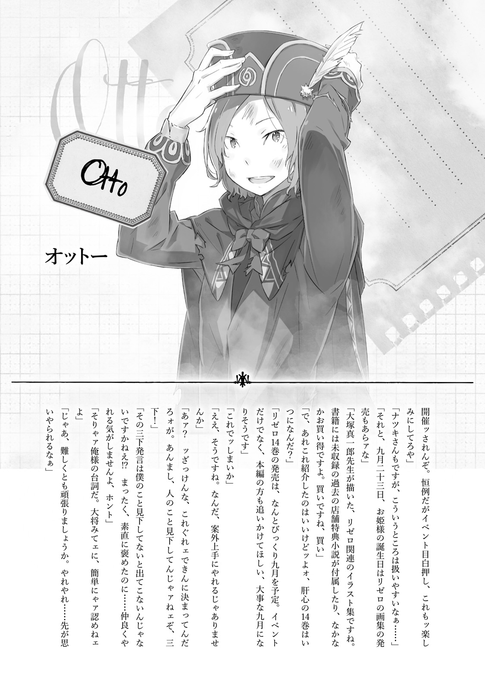

| Re：ゼロから始める異世界生活 13 | |
| 長月 達平 & 大塚 真一郎 | |
Re：ゼロから始める異世界生活 13
長月達平

本作品の全部または一部を無断で複製、転載、配信、送信したり、ホームページ上に転載したりすることを禁止します。また、本作品の内容を無断で改変、改ざん等を行うことも禁止します。
本作品購入時にご承諾いただいた規約により、有償・無償にかかわらず本作品を第三者に譲渡することはできません。
本作品を示すサムネイルなどのイメージ画像は、再ダウンロード時に予告なく変更される場合があります。
本作品の内容は、底本発行時の取材・執筆内容に基づきます。
本作品は縦書きでレイアウトされています。
また、ご覧になるリーディングシステムにより、表示の差が認められることがあります。
第一章 『泣きたくなる音』
１
──草花香る緑の草原、小高い丘の上で魔女たちの茶会が開かれる。
茶会の参加者は魔女──四百年前、世界各地で暴れた悪名高き六人の魔女。そこへ、異邦人にして異世界人の少年を一人加え、今、最後の参加者を迎えたところだ。
その、遅れて参加した人物に、席につく六人の魔女はそれぞれ異なる反応を見せる。
一人は寂しげな顔で拳を握り、一人は薄れぬ恐怖に小さくなり、一人は倦怠感を瞼に落として嘆息し、一人は享楽的に涎を啜り、一人は天真爛漫に両手を上げて歓喜した。
そして、最後の一人は──、
「──幾重の境界を乗り越えて、夢の城にまで踏み込んできたか。礼儀知らずめ」
視線と声に険を込め、魔女エキドナが忌々しげに『影』にそう言い放った。その瞳に宿る憎悪、ありありと浮かぶ嫌悪に、少年──ナツキ・スバルは瞠目する。
今の今まで、スバルはエキドナには人間らしい感情がないと、彼女のことをそう責め立てていたのだ。その直後、これほどの激情を見せられて驚かないはずがない。
たとえそれが、正ではなく負の方向に振り切れた感情であったとしても。
「けど、今は......」
──エキドナの感情の芽生えより、優先すべき問題がある。
スバルと、魔女たちの視線の先で、『影』はゆっくりと丘の上へやってくる。
茶会に参じた『影』は漆黒のドレスを纏い、顔貌を闇のベールで覆っている。その姿の印象は奇妙にぼやけるが、これだけの特徴だ。他の誰かと間違えるはずもない。
かつて、この場に集った六人の魔女を殺し、世界を滅ぼしかけた最悪の災厄。
この『影』こそが、彼女こそが──『嫉妬の魔女』なのだ。
「────」
緊張と警戒に頰を硬くし、スバルは心臓が重く鳴るのを感じる。
脳裏を過るのは、影に吞まれて消える『聖域』と、それを為す魔女の狂気と妄執だ。あれと同じことが、この夢の世界でも起こるとしたら。──その想像に戦慄する。
無論、この場には『嫉妬』以外にも六人の魔女がいる。『嫉妬』と同格と称された魔女たちならば、『嫉妬』に対抗することはできるかもしれない。しかし──、
「......なんで、誰も、動かない？」
それは、眼前の光景に対し、喘ぐように漏らしたスバルの疑問だった。
正面、『嫉妬』は丘の上に到達し、茶会の参加者と向かい合っている。互いの距離はほんの数メートル、感じる圧迫感は回想した『聖域』のあの瞬間に匹敵する。
だが、それだけだ。『嫉妬』は影を広げることも、旧知の魔女たちに何かするでもなく、静かにその場に佇むのみ。そしてそれは、『嫉妬』を除く他の六人の魔女も同じだ。
誰一人、仕掛けようとしない。自分の仇である『嫉妬』に、誰も──。
「──何もしてこないってことは」
ふと、その沈黙を破り、前に出た人物がいた。腕を組み、己の豊満な胸を持ち上げ、愛らしい横顔に強い怒りを宿した魔女、『憤怒』のミネルヴァだ。
「あんたは、私の知ってるあんただと思っていいの？ 信じても、平気なの？」
「────」
臆することなく、『嫉妬』に声をかけるミネルヴァ。返事はない。だが、その行いにスバルは凝然と目を見開く。当然だ。スバルの知る限り、『嫉妬』以外の魔女たちで唯一、ミネルヴァには他者への攻撃手段がない。最弱の魔女だ。
あらゆる暴力を癒しに変換する彼女の力は、最も戦いに不適当なのだから。
「......だってのに、どうして誰も止めないんだ」
『嫉妬』に、思うところがあるのは全員同じはずだ。エキドナに至っては憎悪すら抱いていたではないか。なのに、対話を試みるミネルヴァを誰も止めようとしない。
それは、言葉に何の反応も見せない『嫉妬』も同じだ。棒立ちの魔女は、ミネルヴァに意識を向けもしない。完全に無防備なその姿に、スバルは困惑した。
暴力で、魔力で、権能で、六人がかりで挑まれれば、今の『嫉妬』は簡単に──、
「──君の期待はわかるよ。ボクも、本心から諸手を上げて賛同する。あれをここで欠片も残さず消してしまえば、君を取り巻く問題の多くは決着する。本当にね」
「お前は......」
理解者面で頷くエキドナに、スバルは虫唾の走る思いを味わった。だが、この場でスバルの疑問に答えてくれるとしたら、歯痒いことにこの『強欲の魔女』なのだ。
「──。なら、お前はなんで、積年の恨みを晴らすチャンスに何もしないんだ？」
「簡単だよ。あれを排除するために動けば、他の魔女たちに背中を見せることになる。ミネルヴァはともかく、セクメトやテュフォンを敵に回して生き延びられるほど、ボクは魔女の中では強い方じゃないからね」
「なに......？」
理解できない理屈、エキドナの説明にスバルは困惑した。
「話が、見えねぇよ。なんで、お前が『嫉妬の魔女』を殺そうとして、他の魔女とやり合う羽目になるんだ。自分の仇討ちっつーか、あいつが敵なのはみんな......」
「ち、違う、よ......？」
スバルの疑問を遮り、たどたどしく言葉を紡ぐのは『色欲』のカーミラだ。彼女はぎょっとするスバルを余所に、ミネルヴァと『嫉妬』の対峙に目を向けたまま、
「み、んなにとって、『嫉妬』が、仇なの、は......ん、合ってる、けど。そ、それと、あの子のことと、は......ち、違う、お話で、しょ？」
「何を......『嫉妬』が仇なのは合ってて、あれは違う？」
「聞いたままですよぉ。スバルんはぁ、難しく考えすぎなだけですってばぁ」
要領を得ないカーミラに代わり、『暴食』のダフネが甘ったるい声で笑った。彼女は眼帯に隠れた顔をスバルへ向け、その苦悩の甘美さに舌なめずりする。
「ここにきたのがぁ、テラテラなのか『嫉妬』なのかってお話ですよぉ。それがわかんないとぉ、ダフネたちも何にもできませんしぃ。賢人候補なら、そのくらいはぁ......」
「よしな、ダフネ、はぁ。その話はまだ、ふぅ。当人は知らない話さね、はぁ」
「あぁ、そうでしたっけぇ？ ダフネ、うっかりしちゃいましたぁ」
悪気のない顔でほくそ笑むダフネ、彼女を諫め、『怠惰』のセクメトは長い睫毛に縁取られた瞳を伏せ、ひどく気だるげにため息をついた。
「──ッ、お前らは」
その、訳知り顔のやり取りに置き去りにされ、スバルは遅れて憤慨した。
ただでさえ、完全に状況に流されてここへきている。絶望的な『死に戻り』を経て、望まぬ第二の『試練』があり、その先でエキドナの本性を知って、次々に現れる魔女たちに心を翻弄され、ついには『嫉妬の魔女』との対面まで。
その挙句、スバルの頭を飛び越えてのやり取りだ。どこまで、馬鹿にするのか。
「いい加減にしてくれ！ 俺は......俺は、こんなことしてる場合じゃないんだよ！」
「おー、バルおっかないなー。おこるのかー？ おこると、つかれるんだぞー？」
無邪気に、『傲慢』のテュフォンが自分の頰をつつき、スバルに首を傾げる。
「あのなー？ ははたちはなー、テラのことおこってないのなー。でも、マジョのことはおこってるのなー。テュフォンもなー、テラはすきだなー」
「てら......サテラ？ そりゃ、『嫉妬の魔女』の名前で......」
「つまり、だ。世に語り継がれる『嫉妬の魔女』サテラ。しかし、歴史に残されなかった事実として、サテラは一種の人格障害であったのさ」
テュフォンの説明を引き取り、エキドナがスバルにもわかる言葉で内容を嚙み砕く。
人格障害、その響きにスバルは絶句した。それは、例えば──、
「──二重人格とか、そういう？ ってことは、サテラと『嫉妬の魔女』とは」
「適性のない因子を取り込み、精神に異常をきたしたサテラに芽生えた魔女人格、とでも言っておこうか。......ボクからすれば、区別する意味が見出せないがね」
不服げなエキドナだが、スバルは新事実の発覚に驚愕を隠し切れない。
サテラと『嫉妬の魔女』とが別人格などと、そんな話は聞いた覚えがない。語り継がれるはずもない情報だ。それと同時に、この膠着状態にも合点がいった。
魔女たちにもわからないのだ。この魔女が『嫉妬』なのか、それともサテラなのかが。
「よって、ボクは迂闊に手を出せないのさ。彼女一人を消すために、他の五人を敵に回してはひとたまりもない。魂ごと消滅すれば、ボクも死を免れないからね」
「......でも、それは他の五人にとってもリスクのでかい話じゃねぇのか。他の五人の魂はお前が預かってるって。そのお前が消えたら、他の奴らも」
「彼女らは自分の『死』に納得している。だから、こうして魂だけの存在として長らえることに未練がない。──自分を曲げて残るぐらいなら、自分の信念に殉じて滅んだ方がずっといい。そういう、破滅的な生き方しかできないから『魔女』なのさ」
エキドナの断言に、他の五人の魔女は誰一人反論しない。
潔いと認めるには刹那的すぎて、スバルには魔女たちの生き様を肯定できない。生前も死後も、己の芯を貫き通すなど並大抵のことではないのだ。
それに──、
「お前らが、そうだっていうのはわかった。それは納得......は、難しいけど、理解はできる。けど、それはお前らの話だ。サテ......あの魔女は、違う」
魔女たちの、スタンスは理解した。しかし、それはあくまで被害者側の意見だ。加害者側の意見はまだ聞けていない。聞けるかどうかも、正直怪しい。
「────」
漆黒の影は無言で、スバルと魔女たちとの会話を眺めている。──否、会話を眺めているのではない。この期に及んで、『嫉妬』が見ているのはスバルだけだ。
「問答無用で襲ってこないだけ、前に会ったときよりマシってだけだ。こいつはここにきて何を......いや、こいつは俺に何をさせたいんだ？ こいつは俺に......」
──何をしてくれたのか。ナツキ・スバルに、この世界で、何をさせたいのか。
「それが知りたいんだったら、あんたが直接、この子に聞きなさいよ」
「──っ」
声に悲壮感の混じるスバルを遮り、苛立った風に言ったのはミネルヴァだ。『嫉妬』の隣に並び、彼女は丸く、潤んだ碧眼でスバルを睨みつける。
「ぐだぐだした言い訳は聞きたくない。この子は、あんたに会うためにここにきたのよ。本人に直接......それもできないなら、私たちの見込み違いってヤツだわ！」
「見込み違い......？ 見込み違いもクソも、あるかよ！ お前らで勝手に俺を値踏みしてんな！ 何様のつもりだ！ 俺は、付き合ってられるかよ......」
「付き合ってられないなら、はぁ。あんたは、どうしたいって言うんさね、ふぅ」
感情的になるスバルに、地べたに寝転んだセクメトが問いを投げかける。『怠惰』は異名通りにだらけた姿勢で、顔を赤くするスバルに青白い顔を向けて、
「あたしらは、はぁ。見ての通りの膠着状態さ、ふぅ。この場の鍵は、はぁ。文字通り、あんたが握ってるんだよ、ふぅ。良くも悪くも、さね、はぁ」
セクメトの言葉に、スバルは魔女たちの視線が自分に集中するのを感じた。
この場で最も弱く、最も愚かで、最も浅い、ナツキ・スバルに全てが託されている。
『嫉妬』と、六人の魔女たちの関係は語られた通り。魔女たちは互いに牽制し合い、『嫉妬』の意識はスバルだけに注がれていて。
「エキドナ、俺をここから出してくれるつもりは、ねぇんだな？」
「この状況を放置して、という意味ならないね。ボクは君にこっぴどく振られた傷心の乙女なんだ。せめて、この場における君の選択ぐらいは見せてもらいたい。欲を言えば、君が別の女を手酷く振るところを見て溜飲を下げたい」
「お前、やっぱり魔女だわ」
性悪そのものの返答を受け、スバルは目をつむり、短く息を吐いた。それから覚悟を決めて、一歩、また一歩と、影を纏った魔女の下へ、『嫉妬』へと歩み寄る。
「......決断が遅いわよ」
悪態のようにミネルヴァがこぼし、彼女自身は『嫉妬』の傍らを一歩離れた。これで、スバルと『嫉妬』の間に邪魔者はいない。触れられる距離で、二人は対峙した。
「────」
縮めたのはほんの数メートルなのに、一歩ごとに威圧感が濃度を増すのを感じた。こうして正面に向かい合っても、影のベールに隠れたその顔は全く見えない。それは、影が濃いから見えないのではない。本能が『見ない』ことを選んでいる。
「誰もが、自分自身の最も醜い妄念からは目を背けたがる」
「────」
「その顔が見えないのだとしたら、それは君の心の在り様の問題だよ」
後ろから、スバルの疑念に答えるありがたい忠告があった。それに舌打ちしたい気持ちを堪えて──というより、エキドナに意識を割く余裕などスバルにはない。
目の前の『嫉妬』、サテラ、どちらであるのか、どちらからも目が離せずにいる。視線をコンマ数秒でも逸らせば、その瞬間に何が起きても不思議は──、
「──ぁ」
ふいに、目の前に差し出された両手を見て、スバルの喉が凍り付いた。
一瞬たりとも、目を離すまいとスバルは『嫉妬』の挙動を警戒していた。なのに、それはあっさりと突破された。見えなかったのではない。動きはずっと見えていた。
ただ、『嫉妬』の腕が動き、差し出されるのを、黙って見届けてしまっただけで。
「お前は、本当に......なんなんだ？ 俺を、どうしたいんだ......？」
差し伸べられる手に、スバルは嫌々と首を横に振った。『嫉妬』の行動を見過ごし、今も目の前に佇む彼女の姿に、スバルの胸中で熱を持つ感覚がある。
それが憎悪や嫌悪、負の感情であればよかった。それなのに、これは、安堵なのだ。
──ナツキ・スバルの魂は、目の前の魔女に『安堵』の感情を抱いている。
「──ぃ」
「──あ？」
自分の、心の不具合にスバルは困惑する。故に、鼓膜を打った微かな音への反応が遅れる。理解も、遅れた。それが、目の前の『嫉妬』の紡いだ音なのだと。
影を纏った『嫉妬』が、見えない表情をスバルに向け、差し出した両手もそのままに、ゆっくりと時間をかけ、スバルに何かを伝えようとする。
固唾を吞み、スバルはそれを待った。やがて、『嫉妬の魔女』は、言った。
「──あなたを、ずっと。あなただけをずっと、愛しています」
２
その、愛の告白を聞いた瞬間、スバルの全身を貫いた衝撃をなんと呼べばいいのか。
頭のてっぺんから足の爪先まで、稲光が突き抜けたような錯覚がスバルを襲った。
全身の毛穴が開くような肌の粟立つ感覚、体中を流れる血の全てが沸騰するように沸き立つ感覚、胸の鼓動が痛むほどに高鳴り、スバルは呼吸を荒くして後ずさった。
理解する。──ここにいてはならない。
だって、ここにいては、息遣いが届いてしまう。指先で触れてしまえる。
理性が本能を抑え込める場所にいなければ、スバルは『愛』に押し流される──。
「やめろ......」
「愛しています」
「やめてくれ......」
「あなたを、あなただけを、ずっとずっと、愛し続けています」
「やめろって言ってるだろうが──!!」
声を荒げ、拒絶する。なのに、スバルの胸を打つ熱い鼓動は一向に鳴りやまない。
意識は拒絶する。魂は安堵する。その二律背反にスバルは心を燃やして抗おうとした。
そうしていなければ、文字通り、自分の根幹が歪められる確信があった。
──ナツキ・スバルにとって、この世界で最初に得た光明はエミリアへの『恋心』だ。
異世界に招かれ、頼るものもなかったスバルが、最初の窮地で手を差し伸べてくれた彼女の存在に、いったい、どれだけ心を救われたことか。『死』を起点に繰り返し続ける日々の中、彼女への想いを募らせ、どれほどに魂を焦がしてきたことか。
今はもう、エミリアへの想いだけが原動力とは言えない。スバルがこの世界で得てきた多くのものがある。出会った人々が、心通わせた相手が、大勢いる。
その全てに匹敵する感情を、『嫉妬の魔女』はスバルに強要してくるのだ。
交わした言葉も、触れ合った温もりも、共に過ごした時間も、積み重ねた絆も、互いの間に何もないにも拘らず、『愛情』だけを強奪しようとしてくる。
これを、おぞましいと言わずして、なんと言えばいいのだ。
「お前も、エキドナも......どうかしてる！ ここは......ここは、理解できない奴らばっかりじゃねぇか！ もううんざりだ！ うんざりなんだよ！」
拒絶を態度に表し、必死の形相でスバルは怒鳴り散らした。
『嫉妬』の傍に、エキドナの前に、魔女たちの中に、もう一秒だっていたくない。スバルにはやるべきことが数え切れないほどある。ここは、ここの全ては余計なことだ。
──余計なことなのだ。だから今すぐに、ここから解放してほしい。解放、してくれ。
「お前らの手は借りない！ 外の問題は、全部俺が自分で何とかする。──それでいいだろうが！ 最初から、俺はそうするべきで......」
「それで？ また死んで、それ繰り返して、色んな人を泣かせるんだ？ 泣かせて、これは仕方ない犠牲だったんだって言い訳するんだ？ へー、立派ね。すごいわ」
決別の言葉を放つスバルに、不機嫌な顔をしたミネルヴァが拍手してきた。スバルは血走った目を向け、「なによ」と鼻を鳴らすミネルヴァを睨みつける。
「お前に、何の関係があんだよ。『死に戻り』に文句あんのか？ 痛いのも、苦しいのも、ひでぇ目に遭うのは全部俺の問題だろうが。とやかく言われる筋合いはねぇ」
「苦痛は覚悟してるって、言う側は気楽でいいわよね。見てる側がどんな思いでいても、一番厳しいところは自分が受け持ってるってずっと言い訳できるもの」
「なんだと......!?」
「自分が一番わかりやすく苦しめば、周りの人は何にも言えない。あんたが一番辛いんだから......周りの弱音は封じ込めて、当然よね」
徐々に感情が昂り、語調の強くなるミネルヴァにスバルも黙っていられない。
「俺が！ 俺がみんなの口を塞ぐために、大げさに悲劇に酔ってるってそう言いたいのかよ！ 今の俺の袋小路が、悲劇の主人公ぶるためにやってるってのか!?」
「別に、そんなじゃない。ただ、『自分が誰より傷付けばいい』なんて結論は卑怯よ。私はエキドナの腹黒さはどうかと思うし、その子の回りくどさもわかってなんてあげられないけど......私は、あんたのその歪み方は魔女よりよっぽど気持ち悪い」
「────」
「何より、傷付く全てを叩いて治す私の生き方からすれば、あんたのその生き方は対極っていうより天敵だもの。──この子が、それじゃあまりに報われない」
言いたい放題、スバルに想いをぶつけ、ミネルヴァは最後に『嫉妬』の方を見た。
『嫉妬』は、スバルの罵声を浴びせられてから沈黙したまま、肯定も否定も、今のやり取りに反応する気配がない。そのことを寂しがるように、ミネルヴァが微かに碧眼を潤ませたのがわかった。──だが、そんなことはどうでもいい。
「気持ち悪い......？ 報われない......？」
俯くスバルの肩が、震える。震えは徐々に大きくなり、やがて、顔を上げたときスバルは笑っていた。あまりの馬鹿馬鹿しさに、これが笑わずにいられるものか。
「なんだそりゃ。気持ち悪いも何も、俺がこういうやり方をするようになったのはなんでだよ。俺が、お前の言う歪んだ考え方をするようになったのはなんでだよ。やり方も考え方も、俺の持てるもんからしたら当然の帰結だろうが。──そうだろうが」
「────」
「お前が！ 俺を！ こんな風にしたんだろうが!!」
叫び、沈黙することで責任から逃れようとする『嫉妬』にスバルは怒りをぶつける。
『死に戻り』を受け入れ、利用して、様々な困難をスバルは乗り越えてきた。何度も味わった『死』の絶望を、魂に刻み込んで、スバルはここまで走り続けてきたのだ。
──その、傷だらけの道筋が、ナツキ・スバルをその考えに辿り着かせてくれた。
「傷付くのも苦しむのも！ 全部、全て、俺だけだ！ 俺だけで済む、万々歳だろうが！ どんな辛い思いも、歯を食い縛って我慢して......誰にも、俺と同じ思いを味わわせたりしない！ 最初から最後まで、傷付くのは俺だけで......何が悪いんだよ!?」
「そうやって、何もかも抱え込むんだ。誰にも何にも話さずに......まるで、自分以外の誰にも、何かができるだなんて思えないみたいに」
「じゃあ、俺が何もしなかったら変わったのか？ ひどい未来しかなかったんじゃないのか？ ──俺以外の誰がしてくれたんだよ!? 俺がこれまでしてきたことを!!」
『死に戻り』を繰り返すことで、試行錯誤の果てに、最善に至る道を見つけ出せる。
エキドナも言っていた通りだ。その覚悟に乗じて、自身の知識欲を満たそうとする魔女の甘言には乗れないが、単身、同じことに挑み続けることはできる。
誰も傷付かないで済む未来が、傷だらけのスバルの道筋の果てにあるのなら。
「理解できない、うんざりだってさっきは言っちまったな。悪かった。ああ、悪かったよ。その気持ちに一片たりとも噓はねぇが、お前に感謝してることだってあった。それを忘れて、恩知らずもいいところだったな、俺は」
「────」
「俺からお前に感謝することは一個だけだ。『死に戻り』させてくれて、ありがとうよ。これだけは感謝してやる。これがなけりゃ俺は、大事なものも何一つ守れやしなかった。これからも、この力には頼り続ける。だから、このことだけは感謝してやる」
トライ＆エラーに挑み続ける覚悟はある。逃げ出す選択肢など、とっくになくした。
──手を取って、一緒に逃げようと言った言葉を、拒絶されたあのときから。
逃げる選択肢はない。戦い続けるしかない。それを誓ったのだ。彼女もスバルにそれを期待している。信じている。スバルが逃げず、戦い続けることを。
立ち上がり続ける男がスバルなのだと。そうでなければ、彼女に顔向けできない。
「だから、お前がくれたこの力にだけは感謝してやる。おかげで、俺みたいな何の取り柄のない奴でも、行き止まりの状況を......」
「──ないで」
「状況、を......」
胸の内を支配したどす黒い感情の吐露、それが『嫉妬』の一言に押し止められた。
微かな、囁くような呟きに勢いが鈍る。頰を硬くし、スバルは喘ぎながら瞬いた。
今、何を言われたのか。そのスバルに、しばしの沈黙を挟み、『嫉妬』は言った。
「──泣かないで。傷付かないで。苦しまないで。悲しい顔を、しないで」
訴えかけるように、祈るように、『嫉妬』がスバルに懇願した。
その内容に、スバルの心が激情に震える。それは怒りであり、驚きであり、わけのわからないあらゆる感情がない交ぜになったものだった。
「お、前が......それを......」
激情に喉を塞がれ、何を言えばいいのかわからない。愕然と、ただ『嫉妬』を見やる。
そのスバルの動揺を、なおも重ねる『嫉妬』が揺さぶり続ける。
「だから、愛して」
「け、っきょく、それか......お前はそうやって、俺の感情を捻じ曲げて、それで最後には自分を愛してもらおうって、そればっかりだ。そんな、奴に......」
「──違う」
震えるスバルの拒絶に、『嫉妬』が初めて会話を成立させた。
なおも表情は見えない。しかし、スバルはその闇の帳の向こうにある『嫉妬』の表情が、自分をどんな風に見ているのか魂で感じ取っていた。
『嫉妬』は──否、『サテラ』は今、スバルを。
「──もっと、自分を愛して」
──きっと、慈しむような顔で見つめている。
伝えられた言葉の意味が脳に浸透するのに、かなりの時間を要した。そうして、脳にそれが染み渡った直後、スバルの心を支配したのは、形のない情動の波だ。
「何を......言い出し、やがる」
「傷付かないで。嘆かないで。もっと、自分を大切にして」
「お前が俺に、『死に戻り』の力を与えたんだろうが。お前が与えたこの力が、俺にそうやって前に進む方法を与えたんだろうが」
「──あなたを愛しています。だから、あなたも、あなたを愛して、守ってあげて」
「俺が自分可愛さで、俺からこの方法を奪ったら！ 俺に何が残るって言うんだよ!!」
尽きない愛を囁くサテラを拒絶し、叫ぶスバルは自分の胸に手を押し当てて、
「お前も知ってるだろ!? 俺には何の力もないんだ！ 知恵も技も！ 特別な力は何にもない！ 何にもない俺が持ってるのは、お前がくれた『死に戻り』だけだ！ だったら、俺が払えるのは俺の命だけしかないじゃねぇか！」
「悲しまないで」
「俺が誰より傷付いて、俺が誰よりも多く見てきて、俺がみんなを守れるように立ち回れば、俺以外は誰も辛い思いしなくて済むんだよ！ それ以上は望まないんだ！」
「泣かないで」
「俺のことなんか、どうなったっていいだろ!? 俺みたいな奴がどうなったところで、誰も気に留めやしないだろ!? 俺がどれだけボロボロになったって、みんなが無事に未来に辿り着けるなら、それで......ッ」
だって、スバルがそうやって、最前線で傷付き続けなければ──、
「誰も欠けずに、明日が迎えられるなら、それで......」
──また、取り返しのつかないところで、誰かを失ってしまうかもしれないから。
「......レムが、いないんだ」
「────」
「俺がもっと賢くて、俺にもっと力があって、俺がもっと自分を惜しまずに、一番先頭で体を張ってれば......避けられたはずなんだよ」
あのときの喪失感は、絶望感は、ナツキ・スバルをずっと縛り付けている。
だからスバルは誰にも頼らずに、一人で、傷付いて戦い続けることを選んだのだ。スバルが頼ることで、支えを求めることで、誰かを失うことになるのなら──。
「そうやって、信じなきゃ......どうにかできる方法があるんだって、信じなきゃ......」
『死に戻り』が、全てを解決してくれる手段なのだと。
それを使いこなすことさえできれば、スバルは何も失わずに済むのだと。
そう信じて、言い聞かせて、傷付くことは必要なことなのだと、自分で自分を納得させていなければ、どうしてあの絶望に再び挑むことができるというのか。
「俺は......！ もう、レムみたいに誰も失いたくないんだよぉ──ッ!!」
頭を抱え込んで、スバルは自分以外の何もかもを拒絶して絶叫する。
気付けば、いつの間にか地面にへたり込んでいた。サテラのすぐ目の前で、自分の殻にこもるように蹲り、小さくなって甘い囁きを否定する。
毒だ。猛毒だ。サテラの存在は、スバルの頑なな心を溶かす、甘い猛毒だった。その毒に溶かされた隙間から差し込む冷たい絶望が、あの日の喪失感を引きずり出すのだ。
「子どもじゃ、ないさね」
ぽつりと、そう呟く声がした。
泣き叫んで、一人で出した結論に頑なになって、嫌々と首を振るスバルを見て、それまで沈黙を守っていた魔女の一人が、ぽつりと呟いた。
「泣いて、喚いて、嫌だってごねて、全部一人で抱え込んで......これじゃ、まるで」
「────」
「──一人ぼっちの、子どもじゃないさね」
哀れむような声で、セクメトが今のスバルをそう評した。その呟きに、無言でいる魔女たちは誰も否定の言葉を投げない。それは、あまりに的を射すぎていた。
痛々しくて、見ていられない。今のスバルは、弱く小さな子どもそのものだった。
「──バル、ないてるのかー？」
へたり込むスバルの頭を、ふいに柔らかな感触が包んだ。涙でぼやけた視界に映り込むのは、褐色の肌をした『傲慢』を司る童女、テュフォンだ。
傍らに立つ童女が、スバルの頭を優しく抱いている。そして、そのまま──、
「こんななかされて、かわいそーだな。......なかせたの、だれだー？」
スバルを哀れむ『傲慢』、その赤い瞳が茶会に集った魔女たちを睥睨する。その剣吞さに微かな緊張感が張り詰め、魔女たちの均衡が崩れかける気配がした。
「テラかー？ フネかー？ ミラかー？ ははかー？ それか、ルヴァはバルのこと、いじめ......ないよなー。また、ドナわるいことしたのかー？ アクニンかー？」
「な、なんで私はすぐ除外したのよ。私だって人のこと、き、傷付けるかもじゃない」
「想像だけで顔を青くする君には荷が重いだろうね。それより、ボクだけ断定形なのはどういうことだろうか。そのあたり、育ての親に詳しく聞いておきたいんだが」
「日頃の行いさね、はぁ」
問いかけに応じる魔女たちへ、テュフォンは油断なく目を向けたままだ。『スバルを泣かせたアクニン』を見つけ出すために、躍起になっている。そしてその裁きの意思は、同じ魔女であることを理由に軽減されるものではない。
一人一人が国を、世界を滅ぼしかねない超常の力を持つ魔女たちだ。それらが一堂に会し、一部が一触即発の状態でいる今は、すでに火薬庫で火遊びする以上に危険だ。
『傲慢』は、胸に抱く少年を泣かせ、罪を犯した存在に罰を下すために。
『憤怒』は、己の命の仇に肩入れし、その想いを遂げさせるために奮起し。
『怠惰』は、全員に公平に目を配り、何かあれば即座に叩き潰せるように気だるげに。
『暴食』は、状況の変化に興味なく、場の流れに乗じて空腹を満たす手段に喘ぎ。
『色欲』は、我関せずの姿勢を保ち、自分の身だけは守れるように頭を抱え。
『強欲』は、微かな憎悪を残しつつ、場の趨勢の変化への好奇心に瞳を輝かせる。
そして、『嫉妬の魔女』ではない、サテラと呼ばれる魔女は──、
「──私は、あなたを愛しています。あなたが、私に光をくれたからです。あなたが、私の手を引いて、外の世界を教えてくれたからです。あなたが、私が孤独に震える夜、傍でずっと手を握っていてくれたからです。あなたが、一人になった私を、一人じゃないと口付けてくれたからです。私はあまりに多くをあなたにもらいました。......だから、私はあなたを愛しています。あなたが、あなたが私に全てを与えてくれたからです」
蹲るスバルへ、身に覚えのない愛を囁くことをやめようとしない。
知らない。何も知らない。サテラと会ったことも、言葉を交わしたこともない。彼女の語るそれは妄想の産物だ。あの、愛に狂ったペテルギウスと何も変わりはしない。
そのはずなのに、『ナツキ・スバル』はそれを知っている。
「なんでなんだ......俺の中の、これはなんなんだ？ こんな感情、欲しくない。ありもしない記憶で、俺を縛るな......俺は、俺はお前なんか......お前なんか......ッ」
大嫌いだ、と一言告げてやればいい。
嫌いなんて言葉では足りない。憎い、憎い相手だ。好意など一片もない。身勝手な愛情を押し付けるなと言って、どんな顔をするか見てやればいい。傑作だ。見物だ。
──どうしてお前が、彼女にそれをできるんだよ？
「──ッ」
ありえないはずの二律背反が頂点に達し、スバルの思考が白く染まる。直後、スバルはその混乱に『対処』した。これ以上ないほど、はっきりと。
「......バル？」
変化に、最初に気付いたのはスバルに触れていたテュフォンだ。童女は腕の中、蹲るスバルから力が抜けたことに気付いて目を丸くした。そしてすぐ気付く。
──舌を嚙み切ったスバルの口から、大量の血が滴り落ちていることに。
「──ああ、それも一つの選択だ。ナツキ・スバル」
決断に魔女たちが各々の反応をする中、エキドナだけが嬉しげに頰を緩めていた。
「──ご、ぶ」
ここは、エキドナの夢の城。ここにあるスバルの肉体は本物ではない。故に、ここでの死は精神の『死』、廃人になる可能性を孕んだ危険な行いだった。
それがわかっていてなお、『死』に救いを求めた。『死』だけが、スバルの希望──。
「こんの、大バカ──っ!!」
スバルの自裁に気付いた瞬間、ミネルヴァが顔を赤くして前進、癒しの力が漲る拳でスバルを叩き癒そうとする。だが、その前にテュフォンが立ちはだかった。
幼い魔女は両手を広げ、小さい体いっぱいでスバルを背後に庇いながら、
「バルはじぶんでえらんだ！ ルヴァがじゃまするのは、ダメだ！」
「自傷も自殺も他傷も他殺も、私の前では何一つ許さない！ 心の苦悩なんて知ったことか！ 見えない傷なんて私の知ったことじゃない！ だから！ その代わりに！ 見える傷だけは世界が滅んでも見過ごさないッ!!」
踏み込み一発で丘を陥没させ、ミネルヴァの拳がテュフォンの顔面をぶち抜く。
その威力は誇張なく、岩をも砕く砲弾並みだ。しかし、それは生物に直撃した瞬間、破壊ではなく癒しの力に変換──打撃のインパクトだけそのままに、突き抜ける。
爆音が響き、ミネルヴァ会心の一撃が未発達の童女の体を吹き飛ばした。妨害は突破、しかし、被害があったのはテュフォンだけではない。
振り切ったミネルヴァの右腕がガラス細工のようにひび割れ、砕け散る。『傲慢の魔女』の裁きに触れて、『悪』と判断された行いが否定された結果だ。
ミネルヴァは腕を失う痛みに空を仰ぎ、大きく口を開けて絶叫を──、
「──屁のかっぱ───ぁ!!」
上げない。他人の痛みに敏感な『憤怒の魔女』は、自分の痛みはどこまでも後回しだ。それこそ、ナツキ・スバルの在り方を棚に上げ、自らの歪を貫き通す。
「とにかく！ これで......ッ」
「はぁ......次の邪魔はあたしさね」
次の瞬間、真上からの衝撃にミネルヴァは丘に叩き伏せられていた。
全身を地面に押し付けられ、人型のくぼみを草原に刻むミネルヴァ。彼女は顔を上げ、憤激に染まった顔を寝そべるセクメトへ向け、叫ぶ。
「邪魔するなぁ！ セクメトぉ!!」
「そうはいかないさね、ふぅ。あたしは心情的にその坊やの味方さね、はぁ。付け加えればテュフォンの味方でもある、ふぅ。邪魔しない理由がないさね、はぁ」
セクメトの敵対宣言に、ミネルヴァは悔しげに唇を嚙んで周りを見る。
だが、ダフネとカーミラはこの争いに対して中立の立場であり、エキドナに至っては結果を観測する傍観者だ。そして、サテラは──、
「あぁ、あぁぁ......」
黒のドレス姿で膝をついて、大量の血を吐き出すスバルに声を震わせている。
ごぼごぼと、溢れる血と千切れた舌に喉を塞がれて、自分の血に溺れるスバルは意識の端にそのサテラの様子を捉えていた。
これでやっと、解放される。──そんな安堵は、彼女の嘆きようの前に霧散して。
「どうして気付かないの......？ あなたが救いたいと願う全ての中には、あなただっているべきだって当たり前のことに」
どうして、そんな風にスバルを思い、想うのだろうか。
妄想の中で、いったいどれだけスバルは彼女の心を支えてきたというのか。
「多くの人と同じように、運命の袋小路はあなたにだって訪れている。ただ、それを覆せる可能性があなたにあるだけで......あなただって、救われるべき人なのに、どうして」
そんなの、何もかも間違いだ。
スバルはどうしようもない奴で、手が届くと思ったことさえやり切れなくて、救いたいと思った相手すら救えないで、中途半端な奴であることから抜け出せていない。
そんな自分を変えるんだと、半端はやめてやると、そう誓ったのではなかったか。
格好をつけると、そう決めたはずだったのに。
──自分の中で、弱い自分と弱くありたくない自分とがせめぎ合っている。
誓いを、立てた。一人の少女に、スバルに英雄であれと、望んでくれた彼女に。
曲がってはならない。『死』に挑み、『死』を望み、『死』へと臨むのだ。
──それを知れば彼女は、喜んでくれるだろうか。悲しんだだろうか。
──スバルに、英雄であれと望んでくれた彼女は、どんな風に思っただろうか。
考えてはいけない。知ってはならない。それは、危うい考え方だ。瓦解する。
ナツキ・スバルはこれでいいのだ。自分が、誰かに惜しまれる人間などと思うな。
そんな価値のある人間じゃない。スバルの命は消耗品だ。使って使って、使い倒して、そうやって最後まで辿り着けばいいだけの、消耗品であるべきだ。
割り切れ。価値あるものを得るために、無価値なものを消費する。当然のことだ。誰もがやってる、当たり前のことではないか。それがただ、スバルは『命』なだけだ。
救われるべき、大切な人たちの、取り返しのつかない『命』を救うのだ。
それだけできれば、スバルは──、
「二つの『試練』で、あなたはいったい......何を見てきたの......？」
試練。──試練。試練、『試練』。試練試練試練、『試練』試練試練試練、試練──？
酸素不足とショックで頭の回転が極度に鈍っている。
視界がいよいよおぼつかなくなり、世界が赤く点滅し始める。テレビの砂嵐のように思考にノイズが走り、終わりが近いのだとぼんやりスバルは考える。
終わりが、ゆっくりと訪れる。
これで、『死』を迎えるのは何度目か。数えるのも億劫だが、それでいい。
いずれ、数えるのも嫌になるほど『死』に臨み続けなくてはならなくなるのだ。
『死』の回数を覚えておけるような、そんな精神性で耐えられるとは思えない。
鋼の心を。何物にも揺るがない、鋼の心を持って──。
やがて、スバルの意識はゆっくりゆっくりと、暗闇の中に溶けて──、
『期待してるぜ、息子』
音が、した。
ノイズの向こうから、音の乱反射の中から、やけに明瞭な音が、聞こえた。
『──いってらっしゃい』
また聞こえた。
違う音が、聞こえた。でも、胸にもたらすものは同じ、音が聞こえた。
『──私は君を、友と呼びたかった』
違う音、感じる想いも変わる音。
ひどく、落ち着きがなくなりそうになる音。けれど、心地良くもある音。
『何故......何故なのだ！ 何故、こうも容易く......スバル殿、あなたは......！』
また別の音。
胸に去来するのは寂寥感と、憧憬に似た何かに、申し訳なくなる音。
『お前が、『その人』じゃないことぐらい、わかって......でも......』
胸が締め付けられる音が聞こえた。
その音を聞くと、無性に我慢ができなくなる。泣きそうな音。泣かせてはいけない音。守ってあげなければ、救ってあげたい、そんな音。音。音。音。
『かっこいいところを、見せてください。スバルくん』
音に反応して、どくんと、何かが弾ける音がした。
体中が熱くなる。使命感に突き動かされる。この音に、ずっと支えられてきた。
そして──、
『ありがとう、スバル』
音が、した。
『──私を、助けてくれて』
──全ての始まりを告げる、音が、した。
３
泣いてしまうのだろうか。
スバルが大切に想う人たちは、スバルの『死』を、悲しんでくれるのだろうか。
スバルが身勝手に、『死』を経験することで外れてしまった世界の、残されたかけがえのない人たちは、スバルの死を惜しんで、悲しんでくれたのだろうか。
スバルが『死に戻り』を繰り返すように、彼らも、悔やんでくれたのだろうか。
大切だと思い、守らなければいけないと信じ、救いたいと願える人たちがいる。
──その大切な人たちに、惜しまれる価値が自分にあるのだろうか。
自惚れても、いいのだろうか。
こんな俺でも、大切な存在なのだと、大切な人たちに思ってもらえているのだと。
信じてしまっても、いいのだろうか。
こんな俺でも、守りたいと思われるほどに、守りたい人たちに必要とされていると。
願ってしまっても、許されるだろうか。
こんな俺でも、失われることに涙してくれる人たちがいて、救い出したいと手を差し伸べてもらえる価値があるのだと。
──思ってしまっても、いいのだろうか。
死にたくなんかないのだと。
それしか方法がないと、諦めてしまいたくなんかないのだと。
大切な人たちの未来を守るために、その礎になって消えていくなんて嫌なのだと。
守ることのできたその未来に、大切な人たちと一緒に、自分もありたいのだと。
そんな風に思っても、いいのだろうか。
俺に、その資格は、あるのだろうか。
もしもあるなら──、
「死にたく、ないよ......」
血の塊が音を立ててこぼれて、空気が漏れ出す音と一緒に音が出た。
呼吸が楽になる。意識が回帰する。ぼやけた視界に、色と世界が戻り始めた。
そこに──、
「それが、本音でしょうが......ッ！」
すぐ目の前に根性で這いずり、頭突きでスバルを治療した『憤怒』の顔があった。
４
咳き込み、スバルは血の塊を吐き出していた。横に転がり、仰向けに空を見る。荒い呼吸を繰り返し、酸素を、生きる糧を求めて懸命に喘いだ。
その、生に縋りつく自分を、浅ましいと惨めに感じる心の余裕はない。ただ──、
「俺に......っ」
「────」
「俺に、生きる価値があるか......？ 死なない、俺に......死んで、繰り返す以外の価値が俺に......俺に、あるのか......？」
『死に戻り』をして、大切な人たちを絶望の運命から救い出す。
命を支払うことで得られる結果、それだけがナツキ・スバルの価値だと信じていた。
けれど、そうではないのだと、そう思ってもいいのか。
「俺って人間に、『死に戻り』以外の価値があるって......思っていいのか？ 俺は、俺の好きな人たちに......好きだと、思ってもらえてるって、思って......いい、のか？」
「......そんなこと、私は知らないわよ」
スバルの弱々しい問いかけに、ミネルヴァはそっけなく答える。
その姿はひどい有様だ。砕け散った腕に、体中の殴打の痕跡。しかし、彼女は平然と起き上がると、その傷に歯を立て、自らを再生する。そうして、『憤怒の魔女』はその両足でしっかりと立ち、腕を組みながらスバルを見下ろした。そして──、
「あんたの価値なんて、私は知らない。でも、あの子はそんなあんたに生きててほしいって願ってるし......二つの『試練』で、あんたも見たでしょう？」
「......でも、二つ目の『試練』は、俺の間違いを、やらかした罪を」
「バッカじゃないの？ あれは、あんたに間違ってしまった世界の責任を取らせるためのものじゃない。あれは、あんたが間違った結果、誰がどれだけ悲しんでいたのかをあんたに見せたのよ。──それこそ、あんたが欲しがってた答えじゃないの」
「──ひ」
脳裏に、蘇る。思い出す。
泣き声を。無念を嚙み殺した声を。送り出す力強い声を。いつもの優しげな見送りを。
信じてくれている愛の囁きを。運命に抗う切っ掛けであり、原点である始まりを。
何も、持っていないはずの人生だった。
何も持たないまま、持っていたはずのものも取りこぼしたまま、スバルはこの世界に招かれてきたのだと思っていた。
そんな自分の価値を証明するには、抗い続けるしかなくて。抗い続けるうちに得た大切なものを守るには、さらに孤独と歩み続けるしかなくて。
与えられてばかりだと、思い込んでいたけれど、そうではなかったと思っていいのか。
──俺のために、泣いてくれるのか。
──俺のために、力足らずを嘆いてくれるのか。
──俺と一緒に、未来を見たいと望んでくれているのか。
──大切な人たちの隣に、笑って立つ資格を、俺に持たせてくれるのか。
きっとその資格は、ついさっきまで、スバルが頑なに一人で歩くと決めていた道の果てには、もう持つことが許されないだろうもので。
心を鋼に、何物にも揺るがぬ境地、それは笑顔を浮かべる柔らかさなど無縁の場所で。
ならば、信じていいのか。
大切な人たちの未来を得る代償に、自分の心を削っていく選択でも。
自分の心を守ろうと必死に足搔くあまり、道を進むことができなくなる選択でも。
どちらでもない、欲張りな選択肢があってもいいのだと。
大切な人たちとの未来を、ナツキ・スバルのまま歩める選択肢があるのだと。
──そう信じて、それを望んで、いいのか。
「──許します」
言葉にしたわけではない、スバルの想い。その想いに、返答があった。
地べたに仰向けのまま、顔を横に倒す。立ち尽くすミネルヴァの向こうに、草原に膝をついて、涙に濡れる顔を拭いもせず、微笑んでいる顔があった。
その顔は影に覆われ、今もスバルには見えないままだ。闇の帳に遮られ、こちらへ向けられる表情は見えない。なのに、微笑んでいるのは伝わってくる。
「私はあなたに救われました。だから、私はあなたが救われることを許します。あなたに救われてほしいと、そう願っています」
サテラの言葉が、声が、微笑が、ひび割れた心に沁み込んでいく。
スバルは腕で顔を覆い、涙を流した。嗚咽をこぼした。泣き顔を、隠し続けた。
今、この顔を誰にも、特に彼女には見せたくない。そんなちっぽけな、意地のために。
「......ミネルヴァが、テュフォンとセクメトの妨害を突破できたのも驚きだが、ボクとしては君たち二人の行いの方が意外だね」
泣き顔を覆ったスバルを余所に、エキドナが小さく呟いた。
エキドナの視界──崩壊した丘の上、黒塗りの棺桶から伸びる鉤爪に抑え込まれるテュフォンと、その棺桶の主であるダフネがセクメトと対峙する光景がそこにある。
そのエキドナの言葉に、低く喉を鳴らして笑ったのはダフネだ。彼女は拘束具を外して素足で草原に降り立ち、腰を折り曲げながら舌を出した。
「テュテュと相性が一番いいのってぇ、ダフネで間違いないですしねぇ。百足棺は考える頭なんてない、ダフネの手足ですからぁ。テュテュの権能と相性最悪ですしぃ」
「うー！ フネじゃますんなー！ んー！ うー！」
「で、はぁ。あたしの方はあんた自身が牽制するってわけかい、ふぅ。エキドナじゃないが、はぁ。なんであんたがそんな真似するさね、ふぅ。ミネルヴァと違って、あんたが肩入れする理由がわからないんだけどね、はぁ」
棺桶の下でもがくテュフォンを横目に、セクメトが重いため息をつく。テュフォンを人質にされたような状態では、魔女最強も迂闊に動くことができないらしい。
そのセクメトの言葉に、ダフネは束ねた髪を揺すって「いぃえぇ」と笑い、
「スバルんってばぁ、白鯨は殺したから、次は大兎だーなんて大口、ダフネに叩いたんですよぉ。ならぁ、せめて挑むぐらいまではいってもらいたいなって思いましてぇ」
「興味深い意見だね。彼がその気になれば、それは確かに果たされる。君も、それはわかっているはずだが......ダフネ、君は大兎を滅ぼされたいのかい？」
「別にぃ？ ダフネから産まれた時点でぇ、あの子たちの空腹とダフネの空腹とは無関係ですしぃ。どこで滅びても知らないですけどぉ......どうせなら、ダフネの尽きない飢餓感そのものである大兎がぁ、どう終わるか興味あるかもしれませんねぇ」
だって、とダフネは涎を啜り、言った。
「終わりが満たされたものならぁ、それはダフネにとっても未知の幸いですしねぇ」
尽きぬ空腹感に苛まれ続けるダフネにとって、満たされることは永遠に届かぬ夢だ。
そして、大兎はそんな彼女の終わりのない飢餓感を反映した、自分の欲望の体現ともいえる存在である。──もっとも、ダフネ自身はそんな親近感などとは無縁だが。
ただ、ダフネが飢餓を満たす以外のことに興味を、『好奇心』を抱いたこと。
それはエキドナにとって、満足のゆく回答だった。そのことに微笑み、頷いて、エキドナはさらに別の一人──集団から離れ、佇む『色欲の魔女』へと目を向けた。
「カーミラ、君はどうだい？ ダフネのように、理由あってのことなのかな？」
「な、にが......言いたい、の？ え、エキドナちゃん、は......」
「簡単なことだよ。──死の淵にあった彼を、呼び戻したのは君だろう？ 『無貌の花嫁』の権能で以て、そうまでした理由がわからない」
「────」
「君の呼びかけは、彼にとって無数の絆を意味したはずだ。君は、彼を好ましく思っていなかったはず。だから、問いたい。何故、そうしたのかとね」
エキドナの問いかけに、カーミラは首に巻いたストールに口元を隠し、ちらちらと周りの魔女に助けを求める。自分以外の誰かが、自分を救ってくれることを。
しかし、誰からも愛されるカーミラに魅了される『魔女』は、この場にいない。
カーミラは仕方なく俯いて、上目遣いにエキドナを見やると、
「べ、つに......理由、ない、よ？ エキドナ、ちゃんは、あの子に......ん、誘いを断られたから、満足、したし......みんな、ケンカしても、私が無事、なら......ただ」
「ただ？」
「あ、『愛』は、大事......な、んだよ？ それは、蔑ろにしたら、ダメ......ん、ダメなの。あの子、が......見たくないって、思ってても、『愛』はそこに、あるから......ある、ものは......否定、させない。それ、に、私は......借りっ放しは絶対に嫌」
たどたどしく、しかし、最後の部分だけ明瞭にカーミラは主張する。それを受け、エキドナは肩をすくめながら、それぞれの魔女たちの顔を見やり、
「セクメトとテュフォンは彼の意思を尊重しようとし、命を尊重するミネルヴァは彼を癒した。ダフネは彼の戦いを見届けるために延命に協力し、カーミラは彼が目を背け続けていた『愛』をわからせるために権能を用いた。──さて、全員が全員、各々の主張はあれど、ナツキ・スバルを助けようとするわけだ」
エキドナの評価に、魔女たちは否定も肯定もせず、佇むのみ。
『怠惰』も『傲慢』も、『憤怒』も『暴食』も『色欲』も、ただ佇むのみ。
その魔女たちの様子に、『強欲』は楽しげに頰を歪めた。そして──、
「やはり、面白い。──そうは、思わないかい？」
問いかけは、ふらふらと立ち上がる、憔悴した様子のスバルへと投げかけられた。
「────」
頭は、ひどく重たい。高熱に浮かされるように、全身が気だるかった。
今も、涙は乾き切っていない。頰に残る涙の痕跡を袖で拭いながら、どうにか二本の足で立つスバルは、覇気のない瞳でエキドナを、魔女たちの顔を見回した。
「お前らは......本当に、なんなんだよ」
疑問──それは、魔女と出会った矮小な人間が抱く、当然の疑問だ。
「好奇心。同情。憐憫。使命感。期待。嫌悪。......俺に肩入れする理由が、ほとんど理解も納得もできねぇ。魔女だって、呼ばれるのもわかるってもんだ」
「悪態をつける程度には、気力も戻ったというところかな？」
「......わからねぇ」
片目をつむったエキドナに、漏れた言葉は端的にスバルの心情を表していた。
「やらなきゃいけないことは、決めてたんだ。それは、今も変わっちゃいない。そのための手段だって、これしかないって......覚悟も、してて。なのに」
訥々と、スバルは誰に聞かせるでもなく、自分に言い聞かせるように。
「覚悟を、ここで......この場所にきて、『試練』に砕かれた。手を、借りれそうだって思えたお前の本心も知って、サテラまで、現れて......俺の頭の中はぐちゃぐちゃだ。お前ら、揃って勝手に......俺は、俺のやるべきことを決めたんだ。それなのに......」
今さら、消耗品であるはずの命に、しがみつかせてどうなる。
今さら、使い切ること前提の命に、惜しむことを覚えさせてどうする。
今さら、自分が愛されていたこと、それを思い知らされて、どうしたらいいのか。
「今はもう......どうすればいいのか、わからない」
『死』を望まなければ、『死に戻り』がなければ救えないと理性は訴えかける。
『死』を重ねることで、失われるスバルを惜しむ涙が流れると記憶は教えてくれる。
『死』なないと誰かが悲しむのに、『死』ぬと誰かが悲しんでしまう。
「──今一度、ボクは君に問おう、ナツキ・スバル」
考えを纏められないスバルに、エキドナが声の調子を落とし、厳かに言った。
顔を上げれば、すぐ目の前に立つエキドナが、ゆっくりと頷く。
「ボクが君に協力すれば、君は必ず救いたい人々を救う未来に辿り着ける。思い悩む必要もなくなる。極論、君が直面する問題の解決にはボクが当たる。君はそれを実践し、壁を乗り越えるだけでいい。悩み続けることを恐れるなら、ボクに委ねるのも一つの選択だ。ボクはそれを責めない。歓迎しよう。だから、今一度、ボクは君に問う」
「────」
「どうすればいいかわからない君の手を、ボクに引かせてはくれないだろうか？ 君を必ず、君の望む未来へ連れていくと約束しよう」
そう言って、エキドナがスバルに手を差し伸べる。
この手を取れば、契約は交わされる。エキドナは言葉通り、スバルに協力するだろう。
先ほどは、感情に任せて拒絶した提案だ。だが、エキドナの発言は的を射ている。本当の意味で己を犠牲にし、本気で未来を望むなら、彼女を利用すべきなのだ。
その手を、取るべきだ。
傷付くことを恐れず、辛い思いも、苦しい思いも吞み込んで、戦い続ける覚悟があったのなら、その手を取るべきだった。だから──、
「エキドナ。──俺は、傷付くのが怖いよ」
「────」
「辛いのも苦しいのも、悲しいのも嫌だ。痛い思いもしたくないし、俺以外の誰かがひどい目に遭うところだって見たくない。──死にたく、ない」
「────」
「だから、犠牲前提のお前の手は──もう、俺には取れない」
自分に何ができるのか、スバルにもわかっていない。けれど、エキドナが提示する道は歩けない。選べない。──死にたくない自分を、自覚してしまった。
死ぬことでしか貢献できないと思い込んでいた自分を、死ななくても認めてくれる人たちがいたことを知ってしまった。
──ナツキ・スバルは、『死ぬことだけが価値』の男ではなかった。
スバルの『死』を惜しんでくれた人たちは、スバルの『死』に価値を見出して、スバルを惜しんでくれたのではなかったのだから。彼らが、惜しんでくれたのは──、
「それが何なのかは、まだわからないままだ。──でも、それを探そうと思う。それがわかれば俺は、『死』以外の形で、みんなに報いれる気がするんだ」
「......だが、それは茨の道だよ。『死』を道具と割り切り、道を切り開く選択は未来への最短経路だった。差し出すものは、君の心だけでよかった。それを拒み、自分の心も、誰かの未来も、どちらも両取りしようというのはあまりにも困難で、何より──」
エキドナは言葉を切り、息を継ぐ。
そして、魔女はこれまでで最も、嫣然とした微笑みを浮かべて、
「──強欲だ」
欲望を肯定する、『強欲の魔女』はスバルの決断を、快いとばかりに受け入れる。
提案を拒否され、それでも嬉しげな魔女の考えはスバルにはわからない。ただ、
「俺がお前に何度も、何度も救われかけたことだけは本当だ。......お前が腹の底で、俺のことを実験動物か何かとしか思っちゃいなかったとしても、それだけは本当だ」
エキドナの存在を心の支えに、苦難を乗り切れたことも確かにあったのだ。
だから、その時間に心を救われたことだけは、確かな感謝をしている。
「──愚かで哀れなガーフィールは、外の世界を恐れている」
「......え？」
「第一の『試練』であれが見たものが、その心をずっと縛り付けているのさ。君が独力で状況を打破するというなら、その呪縛を解く必要があるだろうね」
「エキドナ？」
「なに、お節介と負け惜しみだよ。君に『魔女たちはみんな根はいい奴らだったけど、エキドナだけは最後まで悪い奴だった』なんて思われるのは御免だ。ボクはこれでも女の子で、君に好意を持っているのは事実なんだからね」
早口で言って、エキドナは取られなかった手でスバルの胸を軽く突いた。そして背を向け、白い髪を揺らして『強欲の魔女』は距離を取る。その間に、ダフネは棺桶に、テュフォンはセクメトに寄り添い、カーミラも輪の中へ戻ってきた。
その、魔女たちの姿にスバルは吐息し、
「お前らは、俺の理解できない怪物だ。わかり合えないし、好きにもなれないと思う」
それは、偽らざる本音だ。魔女たちの抱く個々の価値観は揺るがず、それはスバルとは決して──否、常人とは決して相容れないものなのだ。
だから、スバルには彼女たちを理解できないし、行動に共感もしてやれない。
でも、エキドナに対して思ったのと同じように、理解できないことと、感謝は別だ。
「俺を、死なせてくれようとしてありがとう。俺を、死なせないでくれてありがとう。俺に、大事な声を聞かせてくれてありがとう。──それは、ありがとう」
魔女たち一人一人に頭を下げる。『傲慢』は笑い、『怠惰』は嘆息し、『色欲』は顔を嫌そうにしかめ、『暴食』は興奮に舌なめずりし、『憤怒』はそっぽを向いた。
それから振り返り、背後──そこで、丘に膝をつくサテラへ向かい、歩き出す。
サテラは歩み寄るスバルを見上げ、息を詰めた。不安と怯えに、体が震えている。
おぞましいとすら思った相手に、温かなものが胸を満たしていくのは何故なのか。
触れ合ったこともない相手に対して、抱き続けている感情はなんなのか。
答えの出ない謎かけが、この場所ではスバルに多く与えられすぎた。
その答えを何一つ出せないまま、『悩み続ける』ことだけ選択して、スバルは座り込んでいる魔女に手を差し伸べる。
サテラは、その差し出された手を戸惑うように見つめていた。
「俺は......お前が何なのか、わからない。お前がどうして俺を好きだって言ってくれるのかも、お前が言う......俺がお前を助けたって言葉の意味もわからない」
「──ぁ」
「でも、お前が俺に与えてくれた『死に戻り』に、助けられてきたのは事実だ。俺がそれに頼り切って、ここまでどうにかやってこれたのも本当だ」
「────」
「俺にとって、『死に戻り』は選択肢の一つ......ってことなのか？」
「────」
「それに頼りっきりにならないことが、自分を愛することだって......そう、言うのか？」
「────」
「簡単には、割り切れやしねぇよ。──でも、『死に戻り』をくれたお前が、俺に死にたくないって思わせたのも、間違いない」
だから、
「お前の言う通り、もう少しだけ......自分を、好きになってみる。大切にしてみる。それでどうなるかなんてわかりゃしないけど、それでいい」
「......大丈夫？」
「ああ......死ぬのに比べたら、どうってことねぇよ」
心配げなサテラの声に応じて、スバルは弱々しくても、笑みを作った。その表情に、サテラも安堵したように、スバルの手を取る。
直後、世界のひび割れる音をスバルの鼓膜が捉えた。
青い空と緑の草原が色褪せてゆき、ナツキ・スバルを夢の城が解放する。
「──外に、戻るのか」
何をしていて、どうしていて、ここに辿り着いたのかも今は曖昧だ。
外に戻って、最初に何からすればいいのか。心の問題は、それすら混沌とさせて。
「一人で、悩まないで。あなたを大切に思う人たちと、一緒に......」
「────」
「あなたが死ぬことを望まない人たちと、あなたが死なせたくないと望める人たちと、一緒に抗って。......それでも届かないときは、『死』を恐れて死ぬことを忘れないで」
「────」
「あなたが死んでしまうことを、悲しむ人がいることを、忘れないで──」
世界が音を立てて砕け散っていく。
サテラの声も遠くなり、それがひどく、スバルの心を搔き毟る。繫がれた掌がやけに熱い。この手が離れてしまってはいけないと、未練が募る。
「──俺は」
呼びかけの、言葉が出ない。彼女を、『サテラ』と呼ぶ声が出てこない。
その名前を口にすれば、彼女を拒絶できなくなる。受け入れたい気持ちに負ける。その感情をどう扱えばいいのか、魂が絶叫を上げ続ける。
空が落ちる。地が割れる。光が溢れてきて、すでに周囲の光景は一変していた。
魔女たちの姿も搔き消えて、世界にはスバルとサテラの二人だけだ。
消える。そして、始まる。
──正面のサテラを、スバルは何も言葉にできないまま見つめた。
「────」
ふいに、闇の帳が晴れた。
見たくないと、スバルの無意識が見せなかったベールの向こうが透けて見える。
そして、その下から覗いた顔を見て、スバルは息を吞んだ。
そのスバルに、サテラは銀色の髪を揺らし、紫紺の瞳を細めて、その瞳の端から涙を流しながら──、
「そしていつか──必ず、私を殺しにきてね」
消える。
失われる。
世界が搔き消え、目の前の少女の姿すら、見えなくなる。
ただ、掌の温もりだけを確かめるように強く握って、スバルは。
「──俺が必ず、お前を救ってみせる」
見えなくなる、愛しい少女に向かって、それだけは言い切っていた。
第二章 『勝算度外視』
１
──目覚めは、ざらつく何かに頰を撫でられる感触から訪れた。
意識の浮上に伴い、ひどい倦怠感が全身を支配する。体中の血管に、血液の代わりに砂を流し込んだかのように全身がだるい。
酸素を求めて口を開けば、乾いて張りついた唇が裂け、痛みと共に血の味が舌先を刺激する。微かな潤いに、眼球を転がして重たい瞼をこじ開けた。
視界が開け、世界が色付く──そこへ、漆黒の地竜の姿が飛び込んできた。
「......お前か」
掠れた吐息に黄色の双眸を細めたのは、スバルの愛竜であるパトラッシュだった。パトラッシュは首を伸ばし、眠るスバルを労わるように頰を舐め続けていた。
「これが、ざらついた舌の正体って、わけか......ここは......？」
スバルの目覚めにスキンシップを中断し、座り込むパトラッシュは沈黙する。その愛竜を傍らに、スバルは周りを見やり、自分が墓所の外にいることに眉を寄せた。
──直前の、夢の世界で果たした魔女たちとの邂逅は覚えている。
そのエキドナの茶会へ招かれる条件は墓所に入ること。そしてこれまで通りなら、目覚めるのはやはり墓所の石室であったはずなのだ。
それなのに今、スバルの体は墓所の入口、その石壁にもたれかかっていた。
「誰かが、俺を連れ出した......？ でも、誰が......」
「──ま、待って！ 待ってください、パトラッシュちゃん......！ ちょっと、ひい、ひい......待って......ま、万一逃げられると、僕は大変なことに......っ」
疑問の呟きを遮ったのは、夜の森に響く情けない声だった。
声の主は息を切らし、もつれる足で懸命に墓所の石段を駆け上がってくる。そして、段上にパトラッシュの姿を見つけると、露骨な安堵に脱力した。
「ああ、よかった！ こんなところにいてくれて......って、あれ？ ナツキさん？」
「......こんな夜更けでも元気だな、オットー。何してんだ？ 泥棒？」
「何してんだ、は僕もそっくりお返ししますよ。っていうか、僕がこんなにひいこら言ってるの、ナツキさんと無関係じゃないんですから」
と、地べたに足を投げ出したスバルに、肩をすくめたのはオットーだ。彼の姿に反射的に普段通りの軽口を叩くスバルだが、すぐに首を傾げる。
「俺と無関係じゃない？ って、何かあったのか？」
「パトラッシュちゃんですよ。実は、厩舎でパトラッシュちゃんが暴れてまして。慣れない環境なので、気晴らしに散歩でもと縄を解いたら......どかん！ と逃げられたんです」
オットーの抗議の視線、だが当のパトラッシュの高貴な横顔は知らん顔だ。
「まさに眼中になしですよ、これ。......とにかく、厩舎を飛び出されてしまいまして、これで逃げられでもしたら僕の立場がヤバいと焦って、今に至るってわけです」
「で、俺のとこにきてた、と。なんだ、パトラッシュは寂しがり屋だな」
「ただの、ナツキさん恋しさってだけには見えませんけどね。だって......」
腕を組み、オットーは意味ありげにパトラッシュへ向けた目を細める。彼の視線に従い、スバルも夜の闇に溶け込む地竜の鱗に目を凝らして、気付いた。
パトラッシュの黒い鱗に、じくじくと血の滲む傷があるのだ。硬い鱗に覆われた体は易々とは傷付けられないはずで、何よりそれは外傷ではなく、内からのものに見えた。
──瞬間、スバルの脳裏を過ったのは、墓所に入るものへ課せられるルール。
「資格のない奴が墓所に入ると、拒絶されるって......」
実際、墓所に入ったロズワールはそのルールが原因で重傷を負った。規則は違反者に容赦がない。そしてそれが仮に、人だけでなく、地竜にも適用されるとしたら。
「まさか、お前......俺を連れ出すために、そんな大ケガしたのかよ？」
呟いて、スバルは自分の肩に触れた。ジャージにほつれと唾液の痕跡。背中と腰には引きずられた土の汚れもある。──スバルを、外へ連れ出したのはパトラッシュだ。
墓所に入るペナルティで傷付きながらも、愛竜はスバルを外へ連れ出したのだ。
「どうして、そんな馬鹿な真似......。俺は別に、目が覚めれば普通に外に......お前がそうやって、傷付いてまで慌てて引っ張り出す必要なんかなかったのに」
血の滲む傷を見ていられず、スバルは顔を俯かせた。そのスバルに再び首を伸ばし、パトラッシュが鼻先を擦り付けてくる。その真意が、スバルにはわからない。
言葉は交わせず、通じたと思った想いも一方通行で、救われてばかりの関係で。
「オットー」
「と、なんです？ お邪魔でしたら、どっかいってようかと思いますけど......」
「パトラッシュがどうして、俺を助けてくれたのか......聞いてくれないか？」
──パトラッシュの真意、それを知る方法が一つだけある。
それが、オットーの『言霊の加護』だ。言葉の通じない鳥や動物とも会話することができる加護の力ならば、パトラッシュの、その想いを知ることができるはずだ。
しかし、そのスバルの頼みに、オットーは唇を曲げて嫌そうな顔をした。
「ええ......正直、気が進みませんね。ナツキさん、冗談のつもりですか？」
「......お前には、今の俺が冗談言ってる面に見えるのかよ？」
「ボロボロでも、つまらない冗談を言える気概がナツキさんにはあった気がしますし、今の話は冗談だって方がまだ笑えそうですね。──本当に、わからないんですか？」
低い声で問い返され、スバルは反論するよりオットーの視線に気圧される。
信じられないものを見るような、有体に言えば馬鹿を見る目でオットーはスバルを見ているのだ。何か、壮大な見落としがあるのか。しかし、思いつけない。
その様子に、オットーはやれやれと額に手を当てて嘆息した。
「僕の加護、ナツキさんが思うほど万能じゃないんですよ。意思疎通ってだけで翻訳とは違うんですから、間に入ってやり取りするのは骨が折れるんです」
「────」
「それでもやれって目ですね。いいですけど......やる意味あるのかな、これ」
ぶつくさと不満をこぼしながらも、オットーは渋々スバルの頼みを聞く。彼はスバルに寄り添うパトラッシュ、その背中を優しく撫でた。
──そのオットーの喉から、高音の掠れた息が発される。
人語ではありえないそれは、『言霊の加護』の力で変換された『地竜の発声』だ。その呼びかけにパトラッシュが反応し、オットーに顔を向け、同じく高い声を発する。
それに応じ、オットーも高い声で。それが何度か繰り返されて、
「終わりましたけど......うーん、難しいな。これ、どう人間的に変換したものか......」
「焦らすな。頼むから、教えてくれ」
「焦らしてるわけじゃ......あー、これホントに困るなぁ！ っていうか、これ伝えるのってすごい変な気遣いいるんですけどねえ!?」
頭を搔き毟り、オットーは何度も思案しては納得のいく言葉を探し求める。やがて、焦れるスバルの歯軋りに、いよいよ観念した風にため息をついた。そして──、
「──『そんなこと、言わせないでよ』が、一番近いんじゃないですかね」
「......え？」
照れ臭げに頰を搔き、視線を外したオットーの言葉にスバルは目を丸くする。
そのまま言葉の続きを待つが、オットーはそれ以上の言葉を続けない。それどころか、彼は言葉もないスバルに「ですから」と眉を立てて、
「『そんなこと、言わせないでよ』だそうです。僕も、そうだろうなーと思いますが」
「そんなこと言わせるなって......そりゃ、そういう......？」
「どうもこうもそのままでしょう。僕の個人的な印象を加えさせてもらえれば、言われなきゃわかんないんですか、こんなこと？ ってとこです」
オットーの言い分に、スバルはますます困惑を深める。
わからないのか、と言われてもわからない。何もわからない。スバルは、自分は、いったい何がわかっていないというのか。
「......その人が危ないと気付くや否や、いてもたってもいられず飛び出して、自分が傷付くのも構わず助け出して、目が覚めるまで傍にいて、目覚めたのにホッとして笑いかける──それをする相手への気持ちなんて、人でも地竜でも同じだと僕は思いますけどね」
「ぁ──」
「そりゃ、パトラッシュちゃんでなくても『言わせるな』ってなりますよ。こんだけ態度で示されて気付けないなんて、鈍感通り越してませんか。幸せもんですね」
心底、呆れた顔をしたオットーに、スバルは自分の馬鹿さ加減を自覚した。
次いで、すぐ間近のパトラッシュを見れば、地竜は穏やかな眼差しでスバルを見つめていて、その鼻先を再び、こちらの首筋へと寄せてくる。
自然と、手は地竜の頭を撫でていた。硬く、岩のような鱗が、優しくて。
「そ、っか......お前、俺のこと、好きなのか」
「────」
「好きで、いてくれんのか。......そっか」
すとん、と胸の内につかえていたものが落ちるような感覚があった。
スバルの納得にパトラッシュが嘶き、照れ隠しするように擦り付ける鼻先の動きを強く荒くする。その感触に肌を削られ、スバルは抗議に口を開こうとして──、
「お、あ......？」
ふいに、スバルの頰を熱い雫が伝った。──涙、涙だ。
意識していなかったところに、急激に込み上げてきたものが溢れ出した。慌てて手を当てるが、隠そうとしても遅い。オットーがギョッとした顔をする。
「な、ナツキさん？ 地竜に懐かれてるのを自覚して泣くって、それはちょっと......」
「違っ......今のは、違くて......ただ、ちっとタイミングが嚙み合いまくって......クソ、今まさに、その実感が乏しかったとこに、答えの方から飛び込んできたから......！」
──卑怯だ。タイムリーすぎる。さすが、パトラッシュ。策士すぎる。
内心を、そんな馬鹿な言葉で誤魔化しながら、スバルは必死に涙に抗った。
魔女の茶会で、スバルは自分の『死にたくない』という本音を自覚した。大切な人たちを守りたいのと同じぐらい、大切な人たちと共にありたいという欲求も。
そして、自分が大切な人たちに、惜しまれる価値があるのか、知りたいと願った。
そこへきて、パトラッシュからの無償の忠愛だ。──こんなもの、どうしろと。
「まさか、お前が最初に教えてくれるとはな。──ありがとよ、パトラッシュ」
向けられた忠愛、それに応えるようにスバルも掌に想いを込めて愛竜を撫でる。
その掌の感触を堪能して、パトラッシュは淑女然とした素振りで立ち上がった。もっとも、揺れる尾に彼女の上機嫌は表れていたが。
「パトラッシュちゃんとの絆が再確認できたところで、大丈夫ですか？」
「ああ、助かった。お前にも迷惑かけたな。......大丈夫ってのは？」
「心もですが、体もですよ。墓所に入ってた、っていうのは見ればわかります。エミリア様を助けに入ったときも倒れて、今もなんでしょう？ 心配ぐらいしますよ」
そう言って、パトラッシュと触れ合うスバルにオットーが片目をつむる。
「お前が、俺を心配か......ひょっとして、お前も俺のこと好きなのか？」
「気持ち悪いこと言い出さないでくれませんかねえ!? パトラッシュちゃんに愛されてるだけじゃ飽き足らず、会う人みんなに聞いて回る気じゃないでしょうね？」
「駄目かな？ 正直、今は一つでも励ましのメッセージが欲しいとこなんだが......」
「ええ、ええ、いつもの調子が戻ってきたみたいで喜ばしいですよ。......あくまで、僕がナツキさんに肩入れするのは今後のためを思ってです。あくまで、ね」
スバルの奇行予告に震え上がり、オットーは両手を突き出してそう牽制してくる。
今後のため、と勿体ぶった言い回しが、いかにも商人然とした彼らしい物言いだ。
「その前提が怪しくなったり、僕自身に危険が及ぶようなことになれば、すたこらさっさと逃げさせてもらいますよ。そこだけは覚えておいてください」
薄情といえば薄情な発言だが、一線を引く意味で必要な暗黙の了解だ。それをあえて口にしてしまうのが、オットーの人の好さの表れである。
「ああ、わかってる。お前は──」
その、オットーの現実的な意見にスバルは頷きかけ、止まる。
違和感があった。そして、その正体にすぐ気付く。「は」と息が漏れた。
「......なんです？」
「んにゃ、思い出したんだよ。ああ、そうだったそうだった」
怪訝な顔つきのオットーに、何度も頷くスバルは夜の空を仰ぐ。
この『聖域』を発端としたループの中で、スバルはオットーと何度も行動を共にした。そしてそのたびにスバルは見てきたのだ。だから──、
「自分の身が危うくなったら、すたこらさっさ......か」
「ええ、当然ですよ。僕がそこまでナツキさんたちに義理立てする理由は......」
「お前は逃げないよ」
「──え」
いっそ軽薄にリアリストを気取ろうとするオットーに、スバルは呟いた。
そして目を丸くするオットーに、スバルは真正面から続けた。
「──お前は、俺を置いて逃げないよ、オットー」
ガーフィールの脅しに屈さず、監禁されたスバルを助けにきてくれたこと。
獣化したガーフィールからスバルを庇い、村人たちと一緒に抗ってくれたこと。
どんなに薄情者のふりをしても、そうでない彼をスバルは知っているから。
「オットー。──お前は俺の、友達だからな」
２
オットーとパトラッシュの激励を受け、スバルはひとまず心の安息を得た。
正直、夢の城での出来事の全てはまだ受け止め切れていない。それでも一つずつ、しっかりと嚙み砕いて、糧にしていこうと前を向くことはできた。
「パトラッシュちゃんは僕が戻しておきますよ。......ああ、調子狂うなぁ」
などと、去り際のオットーは愚痴をこぼし続け、パトラッシュはどこか後ろ髪を引かれる様子で墓所を離れていった。その二人（一人と一頭）を見送り、夜風に当たりたいと言ってその場に残ったスバルは、ゆっくりと墓所に振り返る。
──青白い月明かりに照らされ、変わらぬ在り様で佇む『強欲の魔女』の墓所。
頼りにしていたはずの魔女との決別、それはスバルにとって痛恨の出来事だ。痛手、なんて言葉では足りないほどに。だが、その痛手を被ってでも『魔女』とは手を切る必要があった。決して、悪と言い切れる存在ではない。しかし、わかり合えない存在だった。
それはミネルヴァや他の魔女たち、そして『嫉妬』であるサテラも同じで──、
「自分を大事にするなんて、言ってみたはいいけどな......」
別れ際に交わした約束、それを言葉にして、スバルは途方に暮れる。
「俺を大切に思ってくれる人を頼れって、どうすりゃいいんだよ......」
打ち明けて頼れ、そういう意味なのだろうか。
だが、それを禁じているのは他ならぬサテラ──夢の会話を踏まえれば、スバルに『死に戻り』の口外を禁じているのは『魔女』の人格の方か。
サテラと、『嫉妬の魔女』との主張が食い違っている。だとしたら最後の約束は──、
「──だから、今は後回しなんだっつの」
流れるようにサテラの方へ思考が偏りかけ、そこへブレーキをかける。必要なのは、この閉塞した状況を打破する方法、せめてその糸口だけでも摑まなければ。
「屋敷のトリガーは、俺が屋敷に戻ること......なら、先に進めなきゃいけないのは『聖域』の問題だ。『試練』とガーフィール、それにロズワールの『叡智の書』、か」
挙げた問題は個々でも厄介だが、最大の難点はそれぞれが密接に関わり合っている点だ。特にロズワールの壮絶な思考は、『死』を間に挟んだ今も戦慄を忘れられない。
ロズワールはスバルの『死に戻り』を──正確には、『ループ』のことを知っている。スバルに時を遡る力があると知り、それを目的のために利用しようとしているのだ。
その目的は、彼が所有する『叡智の書』の記述の実現。そのためにロズワールは『聖域』に雪を降らせ、この場所を魔獣『大兎』の餌場へと塗り替える。
そして『聖域』の住人の避難を阻むのが、『試練』を乗り越えるまで解かれることのない結界と、繰り返すたびに考えを頑なにしていくガーフィールだ。
ループのたび、ガーフィールは立ち位置を変えてスバルに立ちはだかる。一度はスバルを『試練』に推し、『聖域』の解放に協力的な姿勢を見せたこともあった。今思えばあれも、自分が『聖域』の解放に反対していると悟られないための芝居だったのだ。
『聖域』の解放にスバルが迫れば、ガーフィールは強硬策に出る。オットーやアーラム村の人々が、彼の牙にかかったときの怒りは忘れ難い。だが、ガーフィールに命を救われたことも、あった。故に回を重ねるごとに、スバルは彼の本心への違和感を強くする。
それはエキドナの最後の助言を受け、より強く、深い棘になっていた。
「愚かで哀れなガーフィールは、外の世界を恐れている......か」
過去、ガーフィールが『試練』に挑んだことがあるのはすでに判明した事実だ。その結果、彼は強欲の使徒となり、リューズたち複製体の指揮権を得た。
その『過去』こそが、ガーフィールが外の世界を恐れ、彼を『聖域』に縛り付ける呪いだとしたら──それは、一度は考えるべきではないと切り捨てたはずの疑問だった。
ガーフィールを深く知ることなど不要と。また、目前の問題から目を背けて。
「結局、巡り巡ってそれを知る必要があるわけか。けど、これだけじゃ赤点だよな」
ガーフィールの真意を知らずして、壁としての彼を乗り越えることはできない。
だが、仮にガーフィールを乗り越えても、『聖域』には結界とロズワールという問題が残り続ける。その、最悪の組み合わせによる閉塞を打開するためには──、
「──逃走経路の確保に墓所のクリアは急務、これも結局ってわけか」
問題を整理すれば、究極的には初心に立ち返る羽目になる。『聖域』の諸問題の解決には墓所のクリアが必須条件──問題は、残る『試練』の数だ。
「ひでぇ目に遭った二つ目の『試練』を、俺はクリアしたことになるのか......？」
『ありうべからざる今』の名目で、スバルは選択肢が違った場合に辿り着く世界──いわゆるパラレルワールドをいくつも体験させられた。
──スバルにだけ非情に突き刺さる、地獄のその先を描いた別の世界線を。
様々な後悔、無数の末路、その果てに慟哭したスバルを『試練』はどう評したのか。
「────」
首の骨を鳴らし、スバルは強く息を吐くと、墓所の通路にその靴音を響かせた。
オットーたちを先に帰し、この場に残った最大の理由がこの確認だ。はたして墓所はスバルを、第二と第三、どちらの『試練』へ導くのか。
それはつまり、再び『ありうべからざる今』を見ることになる可能性への挑戦だ。この世で最も恐ろしい光景の一つ、その可能性にスバルの心は怯えに震える。
それでも、無視はできない。忘れることも、逃げることだって論外だ。
挑むしか、ない。その義務がある。それを果たすために──、
「──ぅ？」
覚悟と共に、強く一歩を踏んだ。──直後、ぐるりと視界が揺れる。
「あ、お、ぐっ」
突然の眩暈に姿勢を崩し、壁にぶつかったスバルは地べたにへたり込んだ。頭蓋を、脳を搔き回す猛烈な嘔吐感。耐えかね、四肢をついて床に胃液をぶちまける。
──警鐘、警鐘、警鐘、警鐘、警鐘が、鳴り響いている。
「う、げ......はっ、あぶ、うぁ......っ」
思考が錯綜する。頭蓋に穴を開け、電極を差し込まれて脳が沸騰させられる感覚だ。吐いても楽にならず、スバルは本能的に通路を転がって外へ飛び出した。
外気に触れた途端、露骨に全身が弛緩する。嘔吐感が薄れ、視界が戻ってくる。
「い、今の、は......？」
涙目で喘ぎながら、スバルは呆然と墓所を振り仰いだ。
墓所は変わらず、静謐な空気と共にある。──それが、妙に禍々しく見える以外。
再度、墓所に這い寄ろうとして、拒絶感がスバルの手足を痛みで縛った。
──拒まれている。その感覚が、電撃的に別の理解に結び付く。
単純な話だ。ついさっき、パトラッシュの身に起きたこと。いつか、ロズワールの身にも起こった拒絶が、同じようにスバルの身にも起きただけのこと。
それだけのことが、致命的な事実を示している。それは──、
「──墓所に挑む、資格がなくなった？ まさか、そんなはずが」
立ち上がり、スバルは結論を否定しようと墓所へ臨む。しかし、あと一歩、中へ入るための足が動かない。本能が理解している。墓所の拒絶を、資格の喪失を。
──脳裏に浮かぶのは、喪服のように黒いドレスを纏った白髪の魔女。
「あんの、性悪......っ！」
別れ際、魔女はスバルに確かに問いかけていた。
自分の手を取るのか、それともサテラの手を取るのか、選ぶのだと。
そして、スバルはサテラの手を取った。これが、その意趣返しだとしたら──、
「てめぇ、どんだけ性格悪いんだ、クソ魔女エキドナぁ──!!」
聞こえるはずのない魔女へ向け、スバルは夜空に怒声を張り上げた。
だが、どれだけ叫んでも、嘆いても怒っても、起きたことは変えられない。
──ナツキ・スバルは、『聖域』を解放する『試練』に挑む資格を、失ったのだ。
３
──スバルにとって、それは墓所に挑むのと同様に勇気のいる決断だった。
過ちを最悪の形で突き付けられた『試練』、その恐怖にも足は竦んだ。墓所の奥へ行けなかったのは、その恐怖が原因だったのではないかと思われるほどに。
しかし、事実はそうではない。恐怖は、足を止める理由にはならなかった。そして、事態の打開への意欲が恐怖を乗り越えるのは、この決断でも同じことだ。
『試練』への挑戦も、魔女の協力も可能性が潰えたなら、残る選択肢は一つ──。
「こーぉんな夜遅くに訪ねてきてくれるとは、存外に嬉しいものだねーぇ」
そう言って微笑み、スバルを迎えたのは寝台に横たわる道化メイクの男──否、魔人と呼ぶべき執念と思想を抱く、ロズワール・Ｌ・メイザースだ。
枕を背もたれに上体を起こすロズワール、その白く塗られた顔が室内に灯る蠟燭の炎に照らされ、彼の人外めいた異様な雰囲気をより搔き立てている。
その魔人を前に、スバルは緊張を押し隠して唾を吞み込んだ。
──スバルに残された選択肢、それが、このロズワールを頼ることだった。
ただし、頼ると言っても、『聖域』における問題を一丸となって突破しよう、などと提案しにきたわけではない。それはスバルの心情的にも、彼の目的からしても無理だ。
スバルは、ラムやガーフィールを直接殺し、村人たちを犠牲にした彼の行動を許せないし、ロズワールも目的にそぐわないスバルの在り方を気に入りはしないだろう。
故にこれから始まるのは、決して心を許すことのない二人の、化かし合いだ。
「それで？ わざわざ夜這いにきてくれたんだ。なーぁにか、私の興味を引くような魅力的な口説き文句を持ってきてくれたんじゃーぁないかい？」
「......口説き落とす、ってのは間違いじゃねぇんだろうな。聞きたいことがある。──この『聖域』から、墓所を無視して抜ける方法ってのは、あるのか？」
牽制、とは言い難いスバルの発言に、ロズワールの微笑が冷気を帯びる。道化の笑みは唇を横に裂き、ロズワールはその黄色い方の瞳にスバルを映すと、
「スバルくん。──君が私にそれを聞くのは、これが初めてのことなのかーぁな？」
その問いかけが、互いに相手の立場をわかっていることの明示となった。
ロズワールはスバルの『ループ』を、スバルはロズワールがそれを知ることを。互いにそれをわかった上で、対話のカードを切っていくことになる。
それを念頭に、スバルはあえて気取った仕草で肩をすくめた。
「『この』質問はこれが初めてだ。こんな感じで腹の探り合いをお前とするのも、もう何度目になるか、数えるのも馬鹿らしいけどな」
「そう......か。なるほど。君のその態度は......そういうことだと、思っていいのかな？」
「さて、どうだろうな」
視線を逸らし、スバルはロズワールの求める結論を先延ばしにする。
そのやり取りの最中、スバルはロズワールの双眸に微かな期待が宿ったのを見逃さない。そのわずかな変化、それに気付けるのが『死に戻り』のアドバンテージだ。
ループする事実しか知らないロズワールは、ループしたスバルがどんな感情を持ち越してきたか知りようがない。故に──、
「今も試行錯誤してる最中なんだ。お前にも協力してもらえると助かるんだけどな」
──スバルがロズワールの思惑通りに動くと、そう演じても気付けないのだ。
彼の持つ『叡智の書』は、スバルの細かな行動にまでは言及できていない。それは前回、大兎に襲われる前のロズワールの発言から察することができる。
ロズワールはあくまで、記述の大枠をなぞっているだけだ。つまり、スバルが見事に道化を演じ切れば、ロズワールを欺き、手玉に取ることができるはず。はずなのだ。
「その試行錯誤の一端が、墓所を無視した『聖域』の突破かな？ だとしたら弱気なことじゃないかね。君の持ち得る権能ならば、無限の挑戦の果てに困難を打破できるはず。それを中途で投げ出すなんて、覚悟不足も甚だしいんじゃーぁないかい？」
「発想の柔軟さが売りでな。お前の言う通り、俺には無限にチャンスがある。だが、今回の目的は過程じゃなく結果......エミリアに、聖域解放の功績があればいい、だろ？」
冷淡と平静を前面に押し出しつつ、スバルは発言にボロが出ないよう神経を削る。鼓動の早さと背中の冷や汗が尋常でないが、ロズワールを欺くには必要な消耗だ。
残酷な割り切り──それが、ロズワールがスバルに望む在り方だろう。
エミリアを最優先し、彼女のために誠心誠意尽くす勇士。そのために、スバルが身を切るようなやり方を選ぶほど、ロズワールが喜ぶことは想像がついた。
「なーぁるほど。......それは確かに、私好みの答えと言えるねーぇ」
そして案の定、スバルの答えにロズワールは満足げに頰をつり上げた。
怖気立つロズワールの視線は、スバルを自分の同類とみなした歓迎の眼差しだ。理解できない魔人の思想、その同類と認められ、生理的な嫌悪感が込み上げる。
そう思えるほどの違いがどこにあるのかと、自分の歪みを自覚していてなお。
「君の変化は喜ばしいよ。ただ、質問の答えは難しい。なにせ、結界は張られて以来、四百年一度も破られていないんだ。前例がないのさ。綻びを疑ったことはないし、結界を張ったものを思えば手抜かりがあったなどと考えにくいしねーぇ」
「エキドナの結界、か」
「君にとっても、すでに見知った相手だろう？」
揶揄するような物言いに、微かなやっかみがあったのは気のせいではあるまい。ロズワールのエキドナへの執着は露骨なものだ。ただ、今回はそれを利用する。
「ああ、当然な。言っとくが、他にも色々回収済みだぞ。森の中にある、リューズ・メイエルの施設のことも、ガーフィールが強欲の使徒ってことも」
「あはーぁ、それは重畳だねーぇ。話が早くて助かるじゃーぁないの」
次々と貴重な情報を開示するスバルに、ロズワールの疑心もほぐれてきた感触がある。この調子であれば──そんな功を焦る気持ちが、続く言葉への反応を遅らせた。
「しかし、それならばますます疑問だ。何故、君は『聖域』に抜け道を探すんだい？ それは覚悟を決めた君にしては、ずいぶんと及び腰な可能性の模索だ。──むしろ今の提案は、覚悟の極まる前の君がするもの......そう思えるけどねーぇ」
「......そりゃ、考え方次第だ」
ロズワールの切り返しに一瞬だけ返答に詰まり、しかしスバルは指を立てて続ける。
「お前も知っての通り、俺がエミリアの名声を稼ぐ機会はいくらでもある。言っちゃなんだが、『聖域』なんて関係者も少ない、ちっぽけなイベントだよ。白鯨とか、魔女教みたいに話題性のあるイベントを優先すべきだ。──ここに、そんな価値はない」
「だから抜け道を探る、と？ ──その答えには懐疑的にならざるを得ないかーぁな」
「懐疑的？」
うまく切り抜けた、と考えたスバルを裏切り、ロズワールは首を横に振った。
「私はこの目で君の権能を確認できるわけじゃーぁない。とすると、君の口車に乗せられていないとも限らないわけだ。となれば、互いに納得の線引きをしなければね」
「納得の、線引き」
「それを、『聖域』の解放としたい。抜け道ではなく、正しい意味での解放だ。それが為されれば、晴れて君と私とは同じ目的に邁進する共犯者......エミリア様を王座に据えるために奔走する同士、良い関係が築けると思うわーぁけだよ」
ロズワールの言葉に逃げ道を塞がれ、今度こそスバルは頰を硬くした。
彼の言い分には、逆らい難い力がある。仮にスバルが『死に戻り』を存分に活用し、エミリアの願いを叶えようとしても、ロズワールの力は不可欠だ。
ロズワールの後ろ盾があって、エミリアの目的は初めて達せられる。彼女を王座に座らせるために、スバルもロズワールも欠くことはできない。──そこを突かれた。
だが、その正論に痛手を被りながら、スバルは奇妙な違和感──一見、正論に思える意見の裏側に、何か別の思惑が隠れているのを感じた。
それに気付けたのはきっと、スバルが全く同じ理屈で彼を欺こうとしていたからだ。
「少し、気になったんだが......お前、やけに『聖域』の解放に拘るんだな」
──まるで、どうしてもそうしたい理由があるかのように。
そんな意図を込めたスバルの発言に、ロズワールはただ妖しげな微笑を深める。
「──ッ」
その微笑みに、スバルはロズワールとの相対で抱いた最大級の警戒を覚えた。
それはつまり、前周回の最後、ロズワールが大兎に食い荒らされる直前、彼がラムたちを撲殺し、その胸中を明らかにした瞬間に匹敵する。
身近な人の命を犠牲にすることも厭わぬ、どす黒い執着心が溢れ出た瞬間と。
「──どうして、そんな風に思ったのかな？」
だが、この期に及んでロズワールは自分から胸襟を開くつもりはないらしい。
問い返され、スバルは「どうしてもこうしても」と舌打ちする。
「俺の提案のはね方が、正直、らしくねぇと思ったからだ。頭のところに全部、『聖域』の解放が条件だなんて言われりゃ、何かあるかもって勘ぐって当然だろ」
「それについては説明したつもりだがね。君が、エミリア様のために全てを尽くす。その姿勢を私に証明するために、最も手近な難題に当たらせる。そこに疑問が？」
「解放以外の解答を禁じられて、フェアとは思えねぇ。証は、他にも立てようがある」
「平行線だ。逆に聞かせてもらいたいんだがねーぇ」
食い下がるスバルに片目を閉じ、今度はロズワールが指を一つ立てる。
「君の方こそ、やーぁけに『試練』に及び腰じゃないの。まるで、『聖域』を解放したくない理由が、君にこそあるように感じられるよ」
「解放したくないなんてわけあるか！ とっとと結界こじ開けて、ここじゃ解決できない問題を外に引っ張り出してやりてぇよ！ ......けど」
「けど？」
話の勢いに乗せられかけている。それに気付き、スバルはとっさに口を噤んだ。ここで考えなしに喋れば、全ては水の泡だ。努めて冷静に、言葉を選べ。
「墓所の......墓所の『試練』に挑んで、傷付くエミリアをこれ以上見てられない」
「だからこその、君だ。エミリア様が『試練』に躓くなら、それを君が代行すればいい。誰が結界を解くかは問題じゃない。それこそ、君が言ったようにね」
「ぬ、ぐ......」
考えなしが起因となった会話だ。あちこちに無理が生じ、スバルは奥歯を嚙む。そうして苦しげに押し黙るスバルに、ロズワールは目を細めた。
「まさか、エミリア様の代わりに『試練』を受けるのが辛いと？ 我が身可愛さで『試練』の抜け道を探ろうと？ だとしたら、君のエミリア様への気持ちはその程度なわけだ」
「ふざ......っ！ そんなわけ......」
「ないと？ 本当に？ どうして言い切れる？ 誰を信じさせられる？ エミリア様を思えば、どんな痛苦にも耐えられて当然だ。君がエミリア様を真に愛していれば、できて当然じゃないか。エミリア様のためならば、自分の心など後回し......できるだろう？」
言い聞かせるように、押し潰す言葉の波にスバルは吞まれかける。
ロズワールの言葉は極論そのものだ。だがそれは、スバルにもたらされた『死に戻り』を理解すれば、誰もが辿り着く一つの結論だ。
──一度はスバルも、その結論に縋りかけたことがあった。
きっと、エキドナの差し出す手を取っていたら、一番大事なもの以外を蔑ろにした生き方をスバルもしていた。傷も、痛みも、未来のための犠牲にして。
でも、その生き方は、もうできない。したくないと、気付いてしまった。
「──どうやら、まだ君は覚悟の研ぎ方が足りていないらしいねーぇ」
スバルの黒瞳に何を見たのか、ふとそうこぼし、ロズワールは悲しげに嘆息する。
「少しだけ......そう、少しだけ期待してしまったよ。ひょっとしたら私は、私が私の望んだ先を見られるのかもしれないと。だが、やはりそううまくはいかないらしいね」
失望を隠さず、ロズワールは体の力を抜くと、寝台に体を横たえてしまう。話は終わりだ、と態度で示され、スバルは話し合いに失敗したと臍を嚙んだ。
今の発言で、ロズワールが『今回』の生きる理由をなくしたのが伝わる。あとは消化試合のような心境でスバルの足搔きを見届け、この命を終えるつもりだ。
だがそれを許せば、それこそ今のスバルは完全に無駄足だ。
「なんでそうやって......何もかもすぐ投げて！ まだ何も終わっちゃいねぇのに！」
「終わったよ。いや、始まらなかったと言うべきかな。君はまだ、覚悟のスタートラインにも立てていない。そこで足踏みする限り、この難局は決して越えられないのさ」
「覚悟のスタートライン!? わかんねぇよ！ お前は、どこまで俺に......」
「──私は君に、エミリア様の意思を踏み躙ってでも目的を遂行する意志を期待する」
その言葉に、スバルは水を浴びせられたように驚愕し、瞠目した。
そうして硬直するスバルに、ロズワールは「いいかい？」と子どもに教えるように、
「真に君がエミリア様のためを思うなら、エミリア様の考えなど無視すべきだ。幼稚な楽園を夢見る子どもに、君が選ぶべき苛烈な地獄を歩む覚悟など持てない。君は彼女の命を救うために、彼女の意思を踏み躙るべきなのさ」
「そ、そんなの、本末転倒だろ!? エミリアのために、なのに、その考えを......」
「命が、ある。命があれば、未来がある。未来があれば、希望がある」
言葉に詰まるスバルへ、ロズワールはそう続けた。それは吐息のようにか細く、それなのに鉛弾のように強烈に、スバルの心へ直接突き刺さる。
「希望があれば、可能性がある。可能性があれば、人は救われる。──違うかい？」
違う、と声を大にして言いたかった。しかし、それに代わる答えをスバルは持たない。感情的になることもできず、スバルは持て余す感情に泣き喚きそうになった。
「──っ」
「言い返すこともできず、か。私は君に、あと何度落胆させられるんだろうね？」
拳を固め、唇を震わせるスバルにロズワールは憐憫の目を向ける。それから、彼は今一度上体を起こした。その胸に、黒い本を──『叡智の書』を抱えて。
そして、ロズワールは硬直するスバルへ、書の淵を指でなぞりながら、
「ならば、足りない覚悟を研ぐついでだ。君をもう一つ、追い詰めよう」
戦慄する。これ以上に、何がある。これ以上、スバルをどう追い詰められる。
「君はすでに、この『聖域』で起こる多くの問題に直面したはずだ。それについてはおそらく、私より君の方が詳しいだろう。だが、問題はこの『聖域』だけに限らない」
「や、屋敷の、ことか......？ お前も、それ、知って......」
ロズワールの口から屋敷の襲撃を示唆され、スバルは驚愕する。『叡智の書』にはそこまでのことが記されているのか。問題の提示が、ロズワールの試金石なのか。
そんなスバルの理解は、次の瞬間に跡形もなく消し飛んだ。
何故なら──、
「──無論だよ。屋敷を刺客に襲わせる依頼は、私が出したものなのだからね」
──屋敷の惨劇は自分の手引きだと、事態の黒幕が自ら告白したのだから。
４
──瓦解していく、瓦解していく、足下から崩れ落ちてゆく。
確かにあったはずの足場を見失い、スバルは暗闇に落ちていく錯覚を味わった。それほどまでに、ロズワールの告白がもたらした衝撃は大きすぎた。
「ま、て......待って。待って、くれ......お前、が？」
「屋敷に刺客を送り込んだ。──君の覚悟を研ぐためにね」
「かく、ご？ 覚悟って、なん......何の、ことだ？」
「簡単だよ。君の権能を以てしても、二つの場所で大事なものが危難に晒されれば、両方を救うことはできない。君は、最も大事なものを選ぶことになる。一つ、取りこぼせばあとは止まらない。やがて君は完成する。──唯一以外を、救わない存在として」
言葉が、出ない。それは言い包められたのでも、論破されたからでもない。ただ、この激情を言語化する言葉が存在しなかった、それだけだ。
──呆れて物が言えないという言い回しを、これ以上に実感したことはない。
フレデリカも、ペトラも、ベアトリスすらも、そんな荒唐無稽な計画で死ぬのか。
スバルを完成させる、そんなくだらない目論見のために、彼女らは信頼を寄せていたはずの主人に裏切られて、命を落とすというのか。
「ロズワール......お前、本当に、どうかしてるぞ......」
「そうとも。私はとっくにどうかしている。──四百年前に、あの瞳に魅入られて以来ずっと、私はずっとどうかし続けてきた」
「四百......？」
放り投げられる言葉の意味がわからず、スバルは阿呆のように繰り返すだけ。
またしても、話題に上がる四百年の時間。しかし、それをロズワールが口にするのは不自然だ。彼に、この時代を生きる彼に、四百年前を知る術などない。
なのにロズワールは、まるでそれが身近にあったことのように──、
「──ナツキ・スバルくん」
「ぁ」
「何故、君はまだどうかしていない？ どうかし足りていないんだい？ 私と同じく、いや私以上に君は狂っているべきだ。どうかしていなくては挑めない境地に、孤独の道を行くのに人の心など邪魔なだけだ。──だから、私が君にそれを強いよう」
その宣告は、覚悟を決めたはずのスバルの心を砕くには、あまりに的確すぎた。
『ループ』を知るロズワールを、軽視していた。『死に戻り』の経験のアドバンテージがある分、まだ自分が有利であると驕っていた。
ロズワールは『死に戻り』でも打開できない詰みの状況を、作り上げていたのに。
「それは、何のつもりだい？」
ロズワールの冷めた声が頭上から浴びせられる。寝台に横たわる彼より低く、スバルはその場に四肢をついて、床に額を擦り付けていた。土下座だ。他の、何でもなく。
みっともなく、床に頭を付けて、スバルは無様に懇願する。
「待って、ください......。お願いします、許してください。俺が、俺が悪かったです。だから、みんなを助けてください......俺、俺が......」
「やれやれ、顔を上げてくれたまえよ、スバルくん。君が謝ることなど何もない。君は何一つ悪くないんだ。だから......」
「ちが、違うんだ......お前の、言う通りにしたくても、できない。俺の気持ちがどうとかじゃなくて、できないんだ。『試練』を、受けられない。資格が、なくなったんだ」
「......なに？」
たどたどしく、鼻を啜りながら懸命に伝えたスバルにロズワールが初めて戸惑った。さすがに、この事実は彼にも予想外だったのだろう。
何事か考え込むような仕草のロズワールに、スバルは再び、強く床に額をぶつけた。
「頼む！ お願いします！ できないんだ。屋敷を襲わせても無駄なんだ！ 誰も、死んでも意味が......だから、止めてくれ。止めてください......っ」
「──いいや、駄目だ。むしろ、それを聞いて、より必要性を強めたよ」
だが、懇願に与えられたのは非情な通告だ。愕然と、スバルは顔を上げる。
ロズワールの双眸が、スバルを映している。黒瞳と、青と黄の視線が絡み合った。
「資格の喪失は、正直なところ想定外だ。しかし、それは手詰まりを意味しない」
「どうして......俺をどれだけ削っても、資格は戻らない！ 犠牲に意味は......」
「本当にそうかい？ 君自身、本音ではわかっているはずだろう？」
スバルの訴えを、凍てつくロズワールの声が撥ね退ける。
どくん、と強く心臓が跳ねたのは、想定外の一言への驚きではない。ロズワールの真意が、言葉の意味が、スバルにも理解できたからだ。
資格を、奪われた。取り上げられた。喪失した。だが、だとしても──、
「エキドナは、君が本気で望めば資格でも何でも再発行するはずだ。君が彼女の機嫌を損ねたなら、損ねた機嫌に取り入ればいい。それが、彼女の『強欲』たる性質だ」
手を取ると、意見を翻せばエキドナはスバルに協力する。それを──、
「自惚れるなよ、ナツキ・スバル。エキドナを理解しているのは、お前だけじゃーぁない」
──それをロズワールは、心底、羨望を込めてスバルへ叩きつけた。
「資格は取り戻せる。状況は立て直せる。故に、私の行動は変わらない。変わらず、君を追い詰め、覚悟を研ぎ、君を完成させよう」
「ぁ......」
もはや、懇願すらも無駄とわかり、スバルは膝をついたまま打ちひしがれる。
ただ、乾き切った唇を動かし、ゆっくりと、問いかけた。
「俺を......俺が、憎いなら、俺だけを......」
「君が憎い？」
これだけの仕打ちをされて、他にどんな感慨を抱けというのか。しかし、ロズワールはスバルの言葉に本気で心外そうに眉を上げ──微笑んだ。
「君が憎いなんてことは、ありえないよ。君は私の希望だ。私がこの世で期待と呼ぶべき感情を抱けるのは、君とラムの二人しかいない。──君を、心から信じている」
覚悟の、格が違った。文字通り、重みが違いすぎた。
ほんのわずかな経験からスバルが学んだことなど、ロズワールは他愛なく踏み潰す。『死に戻り』でも覆し得ないほどに、詰みの盤面を用意することで。
今この場で、仮にロズワールを殺したとしても、屋敷の襲撃は止まらない。そもそも、ロズワールにとって、自分の命は交渉の材料にならない。彼の存在抜きで、エミリアは王選を戦えない。命と、王選と、願いと、妥協と、何もかもが混迷していく。
「────」
気付けば、スバルはふらふらと立ち上がり、壁に背中をぶつけていた。そのまま、壁伝いに部屋の入口へ、一刻も早く、この場から立ち去ることへ注力する。
話し合いに、意味はない。妥協は引き出せない。限られた時間を、費やすしかない。
「俺は......」
何か考えあって、口にした言葉ではなかった。ただ口をついて、声がこぼれた。
「俺は、お前みたいには、ならない。──俺は、人間だ。人間で、あり続ける」
それだけを言い残し、スバルはロズワールの部屋を出た。
最後まで、ロズワールは何も言わなかった。
そのことに少しだけ安堵したことが、自分で自分が情けなかった。
５
ロズワールの寝所を離れて、スバルは月明かりの下を頼りなく歩いている。
「......どうしたら、いいんだ」
こぼれたのは、先の見えない状況への問いかけ。胸中で繰り返されるのも、それと全く同じ言霊で、答えが木霊のように返ってくることだけはありえない。
すでにほぼ手詰まりだった状況が、ついに砂粒のような光明さえ失ったように感じる。
これで、協力者の可能性は完全に潰えた。魔女も魔人も、両者共に理解できない。
ただ、ロズワールの告白には奇妙な納得があった。
「俺が、屋敷に戻ったタイミングで襲撃があったのも......」
ロズワールの指示なら頷ける。屋敷を取り囲み、悠々と中に侵入する手際の良さも、ベアトリスの『扉渡り』の破り方だって、ロズワールなら熟知しているはずだ。
それだけではない。きっと、ロズワールがエルザを雇ったのは今回が二度目だ。
「王都で、エミリアの徽章をフェルトに盗ませたのも......」
全てはエミリアを救うために、スバルがそこへ介入すると知ってのことだったのか。
あの日、懸命に走ったことも、エミリアを助けるために三度死んだことも、エミリアの笑顔と共に名前を教えられたことも、何もかもロズワールの掌の上だったのか。
「全部、『叡智の書』にある通り......それなら、レムの存在が奪われたことも、こうやって『聖域』で八方塞がりになるのも、全部、誰かの予定通りなのかよ」
だとしたら、スバルの自由意志は、誰かの操る糸の延長線上にしかないのか。
全ては予知の通りに進行し、記述と異なる展開になればロズワールがそれを正す。歪んだ道行きは強引に修正され、予知は必ず実現を──。
「──え？」
今、何か、おかしな点があった気がする。
ゆっくりと、順序を立てて、ロズワールの『叡智の書』への考察をやり直す。確かに違和感があった。引っ掛かったのだ。それが何なのか、思い出せない。
「なんだ？ なんだ、何がおかしい？ 何かが、おかしい。何かがおかしい......！」
答えのない謎かけ、それは先と同じ状況だが、これは手詰まりのそれとは違う。この靄の先には道がある。そしてその道は、失われた光明に繫がる気がするのだ。
ロズワールの『叡智の書』、記述の実現、ベアトリスの『叡智の書』、魔女教の『福音』、白紙のページ、予言のページ、予言通りの結果、修正、未来──。
「──スバル？」
「──ッ」
ふいに、思考の渦に声が割り込んで、スバルは肩を跳ねさせて振り返る。
背後、少し離れたところに立つのは、薄闇に降り注ぐ月明かりを浴びる少女──煌めく銀髪を揺らすエミリアが、紫紺の瞳を丸くしてスバルを見つめていた。
予期せぬ遭遇に、スバルの胸が鈍く疼く。だが、慌ててスバルは表情を取り繕い、
「あ、エミリア......たん。なんでこんなとこに。もう、ずいぶん遅い時間だぜ？」
「それはスバルの方も同じでしょ。寝付けなくって、お散歩してたの」
「......そっか。いや、そうだったな」
「──？」
納得したスバルの頷きに、エミリアが不思議そうに首を傾げる。
エミリアとの夜の邂逅、これは今回が初めてのことではない。前にも一度、こうして月夜を散歩するエミリアと出会い、言葉を交わしたことがあった。あのときとは状況が異なるはずだが、それでもここで出会うなら、エミリアの行動は必然なのだ。
スバルが茶会に招かれ、パトラッシュと絆を確認し、森の奥でリューズの秘密を聞かされ、ロズワールが黒幕であると知ったり、様々な行動を取る中、エミリアも。
それは当たり前のはずなのに、今のスバルにはやけに新鮮に思えた。
「......スバル、元気ないのね」
「そう、かな。そんなつもりは、ないんだけど」
「噓。見てればわかるもん。何かあったんでしょ？ 私でよければ、聞かせて？」
歩み寄ったエミリアが、スバルの顔色を見取ってそう言ってくれる。取り繕ったはずの仮面もあっさり見破られ、スバルは自分の弱さが本気で恨めしい。
「これは......俺の、問題だよ。エミリアに迷惑は、かけられない」
「迷惑なんて、私......」
「いいんだ、大丈夫。俺のことなんかより、大変なのはそっちの方だよ。『試練』で、あんなに取り乱して......今はその、大丈夫、なのか？」
「ん、平気。その節はご迷惑をおかけしました。......ホントに、ごめんね」
顔を背け、無理に話題を逸らしたスバルにエミリアが力ない笑みを作る。傷付くのが嫌で、エミリアの癒えていない傷に無遠慮に触れた。最低の、行いだ。
そんな自嘲の念に気付かず、エミリアはそっと自分の胸に手を当てると、
「全然、準備のできてない問題にぶつかったみたいで......本当に、何にも覚悟できてなかったって、そう思わされたの。私、いっぱい、いっぱい逃げて......」
「逃げても......逃げても、いいじゃねぇか」
「スバル？」
エミリアの言葉尻に被せ、スバルはとっさにそんな言葉を投げかけていた。
困惑に、エミリアの長い睫毛が揺れる。それを横目に、スバルは掌に爪を立てた。
「嫌なことから逃げて、何が悪いんだよ。嫌なことと向き合い続けてたら、いつか克服できるのか？ 克服しなきゃ駄目なのか？ 逃げた先で、逃げる前とは違う道が見つかったら、それを選んで......それは、責められなきゃいけないことなのかよ」
早口に、何が言いたいのかもまとまらないまま言葉が溢れ出る。
挑むことは無条件に褒められて、逃げることは無条件に悪罵される。そんなことは間違っているのではないのか。真正面からぶつかって、砕けて、それでどうなる。
エミリアの決意も、志も何もかも、尊い何もかもが、他人に弄ばれたものなのに。
「エキドナも、ロズワールも、ガーフィールも、みんな身勝手なんだよ。振り回すのなんてやめてくれよ。俺に、どうしろって言うんだよ。俺だって、俺なりのやり方で何とかしようとしてんのに、そうじゃねぇって文句ばっか言われて──」
感情が昂り、わけのわからない憤りに眩暈さえ感じたときだった。
「────」
後頭部に腕が回り、何事かと思う間もなく、頭を引き寄せられる。正面、柔らかく熱い感触に受け止められ、スバルは呼吸と思考が止まった。
押し付けられる感触、その向こうで穏やかに響くのが心音だと気付く。心臓の鼓動、それを理解してすぐに気付く。──エミリアの胸に、抱かれていると。
「えみ......」
「ゆっくり。静かに。ゆっくりでいいから、私の心臓の音を聞いていて」
鼓膜をくすぐる銀鈴の声音に、スバルは無抵抗で従順に従った。
背中をくすぐられるような快感に吐息が上擦り、眦の奥が熱くなる。だが、そんなつまらない葛藤は、より大きく押し寄せる感情の波に流され、消えていった。
そのまましばらく、エミリアの心音に頼り、強張った心をほぐされて。
「落ち着いた？」
ゆっくりと腕が解かれ、スバルの頭がエミリアの胸から解放される。目の前にある紫紺の瞳の憂慮に、スバルは小さく吐息をついた。
「取り乱して、ごめん。こんな、ガキみたいな迷惑かけたくなかったのに」
「迷惑なんて、そんなこと全然思わないってば。スバルって、すごーく頑固よね」
くすくすと、エミリアが口元に手を当ててほんのりと笑った。しかし、スバルはその笑みにつられて笑う気になれない。ただ、弁明に言葉を尽くそうと思った。
エミリアを不安がらせたくない。大丈夫だと、安心させてあげたいのだ。
「うまくいかないことばっかで、ホントに......今も、実はロズワールとやり合ってきたばっかでさ。どうにか、墓所の『試練』なしでここを出られないかなって」
「え？」
「本当は、俺が『試練』を肩代わりできたらそれが一番だったんだ。でも、それはできそうになくて。だからせめてって思ったんだけど......役立たずで、ごめん」
頭を下げる。安心させたいのに、安心させるための材料が手元に何もなくて。
何度『死に戻り』でやり直しても、たった一つの冴えたやり方が見つからない。もっとうまくやれていれば、その後悔は第二の『試練』の記憶にも波及する。
スバルが足りないせいで生まれた悲劇。それも、本当ならなかったはずなのに。
「だけど、きっと俺がどうにかする。どうにかしてみせる。エミリアに......君に、辛い思いも嫌な思いもさせないから。だから、俺を信じてほしい」
弱音を吐きたくなかった。だから、スバルは先の見えない暗闇に宣戦布告する。
まだ何も、方法は見つかっていない。それでも絶対にエミリアを、みんなを──、
「──スバル」
その覚悟を告げたスバルに、エミリアが潤んだ瞳を向けていた。
濡れた瞳に自分が映り込むのを見て、スバルは情けない自分に活を入れる。揺らぎつつある心の中、一番大事な部分だけは捻じ曲がることのないように。
エミリアを守って、『聖域』を乗り越え、屋敷を救って、全てを──。
「──スバルの気持ちは嬉しい。本当に嬉しい。だけど、その優しさは受け取れない」
なのにその覚悟は、他でもないエミリア自身に正面から否定された。
「......え」
一瞬、何を言われたのかがわからなくて、スバルは呆けた声を出していた。
目を丸くし、啞然となるスバル。エミリアはそんなスバルを見据えながら、自分の中の考えを形にするように、一言一言を確かめながら、
「スバルがそんな風に、私のために考えてくれるのも、頑張ってくれるのもすごく嬉しい。すごくすごく嬉しい。すごく頼もしいし、すごく頼りにしてる。......でも、そんな風に逃げ道を探そうと、抜け道を探そうとしちゃダメ」
「だ、駄目っつったって......こんな、一方的な押し付けに！」
「それでも、やるって決めたのは私だもん。私が目指すものがあって、そこに辿り着くために頑張らなきゃいけなくて、そのために今がある。そのことに言い訳したくない」
固く唇を結んで、決意の表情をするエミリアにスバルは声を失った。
毅然とした彼女の顔には、強い意志の輝きが満ちている。そこにはスバルが手を差し伸べて、引っ張ってあげなければ道も歩けないような、弱々しい少女の姿はない。
「それにね、私にはなんとなくわかってるの。──あの墓所の『試練』には、きっと近道も抜け道もないんだろうなって」
「────」
「不思議だけど、それがわかるの。時間をかけても、挑戦する私の心構えがしっかりできてないと、結果はきっと同じになっちゃうんだって。それが、わかるの」
否定の言葉が出てこない。
抜け道を、探しはした。だが、それがないことはスバルもわかっていた。この『試練』を、結界を用意した魔女が、そんな横紙破りを許すはずがないと。
──そもそも、どうして自分はこんなに必死に、エミリアに反論しようとするのだ。
「ね、スバル。──スバルはどうして、私を助けようとしてくれるの？」
「────」
渦巻く疑念に逡巡するスバルへ、エミリアは先回りするように問いを投げかけた。
それは以前にも同じように差し出された、二人にとって重要な意味を持つ問いかけ。
その答えを告げるために、スバルがどれほど必死の時間を過ごしたことか。それをエミリアに伝えるために、どれだけの苦難を乗り越えたことか。
だから同じ問いかけに、スバルは躊躇わず、答えることができる。
「俺が君を助けたいのは、俺が君を──君を、好きだからだ」
「──ん、知ってる。知ってるから、私は頑張れるの」
胸の手を当てて、ほのかに頰を赤らめながら、エミリアは一歩下がり、目をつむる。そして万感の想いを込め、「だから」と言葉を続け、
「何かしなくちゃ、なんて思い詰めないで。スバルが見ててくれるだけで、私は頑張れるから。何かしたいと思ってくれるなら、私のワガママを聞いてくれるなら、傍にいてほしいの。応援しててほしい。私の背中を、支えていてほしいの」
「エミリア......」
エミリアの言葉に、胸の内側で膨れ上がる感情がある。制御できない、言葉にもできない、理解し難いそれが何なのか、スバルにはわからない。ただ、存在を強く強く主張するそれに意識の全てを奪われそうで、スバルは奥歯を嚙みしめて耐え続ける。
「甘えてばっかりいたから......だから、今度はそうしないで、やってみたいの。失敗するたびに、スバルやみんなに心配をかけちゃうのだけが気掛かりなんだけど......そうならないように、一日も早く乗り越えられるようにするから」
言葉を継げないスバルに、エミリアは気丈な微笑みを浮かべた。
それが、ひどく美しく見えて。
「そうやって頑張る私を、見ていて。──それが、私がスバルにしたい、お願いです」
６
「────」
強く地を蹴り、風を切る。心が急き立てるままに、行く先も決めぬままに。
足場の悪い斜面を飛ぶように駆け抜け、枝木に頰を削られ擦過傷を作り、何度も転びそうになりながらも、息の続く限りに走り続ける。
声にならない声を上げ、張り裂けろとばかりに喉を開き、スバルは空を仰いで走った。
冷たく澄んだ空気に、冴えた空に浮かぶ青白い月に、スバルは恥のままに叫んだ。
──瞼の奥に、最後に見せたエミリアの強い微笑みが焼き付いている。
その微笑みと、告げられた覚悟と、スバル自身の思い違い。胸を焼き焦がすように、内側から膨れ上がる衝動の正体がようやくわかった。
そして、その衝動の正体がわかったから、スバルはエミリアと別れ、衝動的に森に飛び込んで、獣のように駆け続けているのだ。
胸の奥、熱く熱く、主張する感情、激情──これを、人は『恥』と呼ぶのだ。
「俺は......俺は......！」
──何たる思い上がり！ 何たる傲慢！ 何たる愚かしさか！
エミリアを見下し、哀れむロズワールの言動に怒りを覚えた。激高した。許すまいと心に誓い、その直後にエミリアと出会って思いの丈を打ち明け──優しく拒まれた。
そうなって、スバルは初めて気付いたのだ。
──エミリアの覚悟を、決意を、強さを、一番信用していないのはスバル自身だと。
守ってあげなくてはならないと、辛い思いも、悲しい気持ちにもさせたくないと、そんな言葉を掲げて、スバルはエミリアには何もできないと決めつけた。
スバルが独りよがりの庇護欲であれこれ画策する間にも、エミリアがエミリアなりの覚悟と決意を一人で固め、『試練』に立ち向かうと決めていたのに。
そうする自分の決断を、誰よりスバルに支えてほしいと願ってくれていたのに。
──他でもないナツキ・スバルこそが、エミリアを一番見くびっていたのだ。
「──っ！」
そのことに気付いた瞬間、スバルは耐え切れない恥に殴られ、死にたくなった。
エミリアの決意に割り切れない応答をして、心配してくれる彼女から逃げるように背を向け、その足で森に逃げ込んでこの様だ。
かつて、王都でスバルは同じような独りよがりでエミリアを傷付けた。
それを悔いたはずだ。反省したはずだ。だから今、彼女の傍に戻ってこられたのに。
──それなのに、またしてもスバルは間違った。
エミリアの代わりに傷付き、苦難を肩代わりし、彼女のためと道を舗装する。
何も変わっていない。傷付くことを隠すのがうまくなっただけだ。肩代わりする苦難の自慢をしなくなっただけだ。自分本位にレールを敷き、嘯く姿は何も変わっていない。
「俺は......俺、が......うぁっ!?」
息が切れ、喘ぐように顔を上げた瞬間、足下が崩れ、踏み込む足が宙を搔いた。
とっさに体を支えられず、スバルの体が森の斜面を滑り落ちる。土と落ち葉塗れの地面を転がって、転がり落ちて、スバルは地面の上に大の字になった。
「────」
熱を奪い尽くすように冷たい土に背中をつけて、呼吸の荒いまま夜空を見上げる。森の隙間から見える空は、それでも星の光が無数に見つけられて。
──頭上に輝く満天の星々が、地に寝そべる仲間外れの『昴』を嘲笑っている。
見覚えのない星座に囲まれ、ちっぽけなスバルは夜の中に溶けていく。
どっと、疲れが押し寄せてきた。肉体はまだしも、精神が消耗しすぎている。
──『死に戻り』、魔女の茶会、ロズワールの真意、そして己の恥とエミリアの覚悟。
時間が過ぎる。限られた時間が、残された時間が、貴重な時間が、時間だけが刻々と。
疑問が渦を巻く迷宮となり、出口の見えない葛藤に心が蝕まれる。何もかもに裏切られて、裏目に出て、掌を返されて。どうすれば──、
どうすれば、どうすれば、どうすれば、どうすれば、どうすれば、どうすればどうすればどうすればどうすればどうすればどうすればどうすればどうすればどうすれば──。
「──どうしたらいいか、教えてあげましょうか」
「──!?」
頭上からの声に、スバルは慌てて跳ね起きた。転がり落ちてきた斜面の上に、闇を背にした人影がある。ゆっくりと滑り降りてくる人影は徐々に輪郭を結び、
「......オットー？」
「ええ、どうも。おはようございます。そうです、僕ですよ」
「おは......？」
場違いな挨拶を投げかけられ、当惑したスバルはまたしても遅れて気付いた。
すでに夜の時間は終わりを告げ、世界には朝の気配が広がりつつあるのだと。いったい何時間、虚空を眺めて呆然と時間を無駄にしていたのか。
「朝ですよ。そんなことにも気付けないでいましたか。これは重症ですね」
「否定は、できねぇ......けど、お前、どうやってここに」
「僕がここにこれたことは、ひとまず置いておきましょう。それより、ナツキさんの置かれた状況ですよ。夢に見そうな顔で、うわ言をぶつぶつ繰り返してましたよ」
時間経過に驚くスバルを余所に、腰に手を当てたオットーがやれやれと嘆息する。その姿にスバルもふらふらと立ち上がり、土のついた頰を袖で拭った。
昨夜から、妙な場面をオットーに見つかってばかりだ。パトラッシュの慰めに泣かされたところだけでなく、恥と泥に塗れたこんなところまで。
「今さら気にすることですか？ ナツキさんが身綺麗だったことなんて、僕が出会ってからの数日、カルステン公爵のお屋敷にいたときぐらいですよ」
「......冗談に付き合ってる余裕はねぇんだ。それより、お前」
「行き詰まったんでしょう？ どうすればいいか知りたい、と。はい、わかってます」
スバルの言葉に、オットーが気軽な態度で胸を叩いた。気負いのない姿に、スバルは呆気に取られる。が、藁にも縋る思いがあった。
この際、気休めでも構わない。何か事態が好転する方法があるなら、何でもいい。
「がっつかないでくださいよ。いいですか？ これには準備があるんです」
「じゅ、準備......」
「はい。まずはゆっくりと、大きく息を吸って......」
こちらに手を差し出し、オットーはスバルに深呼吸するように指示を出す。
意味はわからないが、スバルは指示に従って息を整え、目をつむって肺に酸素を──、
「──ッ!?」
瞬間、硬い衝撃が横っ面を打ち抜き、スバルは地面に再び横倒しになっていた。
受け身も取れずにすっ転び、顔面から土に落ちたスバルは目を回す。頭を振り、何が起きたのかと顔を上げ、拳を振るオットーを捉えて、殴られたのだと理解した。
そして、息を吞むスバルに向かって、赤くなる拳を固めたオットーが言った。
「──友達の前で、カッコつけるのなんかやめちまえよ、ナツキ・スバル」
７
殴られた痛みも忘れる衝撃に、スバルは呆然となるしかなかった。
地面に倒れるスバルを、オットーは険しい目で睨みつけている。普段は情けなかったり、愛想笑いであったり、人との衝突を避ける彼の表情が、今は怒りに燃えていた。
オットー・スーウェンが怒りを双眸に宿して、スバルを見下ろしていた。
「何をどうしたらいいのかわかんなくて、頭の中しっちゃかめっちゃかなんでしょう」
「────」
「手を差し伸べなきゃいけないところばっかりで、自分じゃ腕も頭も力も足りなくて、バタバタバタバタと時間だけが過ぎるのに必死になってるんでしょう」
押し黙るスバルに声を投げつけながら、じりじりとオットーが距離を詰める。
這いつくばったままのスバルは動けず、今さらのように痛みを熱で主張し始める左頰の感覚に顔をしかめ、オットーを眺めているしかない。
「沈黙するってことは、否定なしの肯定ってことですよ。少なくとも、僕ら商人の世界じゃそれはつけ込まれるだけの最低の行いです。──聞こえてますか？」
オットーは、そうして返事もないスバルの胸倉を摑み、引っ張り上げて、
「聞こえてるなら、返事しろよ！」
「──がッ」
鋭く、硬い衝撃に額を穿たれ、スバルの視界を火花が散った。
頭突きだ。オットーの頭がのけ反り、直後に額同士が激しく衝突した。目が回る。だがオットーはやめない。もう一発頭突きを入れ、ふらつくスバルを突き飛ばす。
額、頰の熱、痛み。突き飛ばされ、倒れない。踏みとどまった。
「何を、しやがる......っ」
「おや、殴られっ放しだったわりにはちゃんと意識はあったんですか。てっきり、寝てるのかと思って慣れない乱暴な真似までしてしまいましたよ」
「んだと、この野郎──！」
鼻面に喰らった頭突きで涙目になりながら、スバルはがむしゃらにオットーへ突っ込む。が、伸ばした腕は避けられ、逆に足を払われた。盛大に、地べたに倒れる。
「血が頭に上ったかと思えば、今度は足下がおろそか。まさにナツキさんの行動そのものと言えますね。情けない」
「そう......かよ！」
転んだ体勢から飛び起き、スバルは摑んだ土をオットーの顔へ投げつける。
しかし、これをオットーは腕を顔で覆って防ぎ、目潰しを防がれて驚くスバルの襟首を取ると、そのまま一気に背負い投げで地面へ叩きつけた。
背中からの衝撃に息が詰まり、喘ぐスバルは立ち上がれない。
「か、ぁ......」
「ね、ナツキさん。ナツキさんの力なんて、そんなもんですよ。騎士の方々やメイザース辺境伯、ましてやガーフィールになんて到底及ばない。僕にすら、この様です」
痙攣する肺に必死に酸素を送り込むスバルの視界に、歩み寄ったオットーが逆さに映り込む。彼は呆れた風な顔で首を横に振り、
「白鯨や、魔女教と事を構えるのだってとんでもない。ナツキさんは弱くて、まともにやったら指先一つでぷちっとやられる。そんなの、自分でもわかってるでしょうに」
「はぁ、はぁ......」
「じゃ、足りない力は知恵で補いますか？ 僕の見た限り、ナツキさんはそこそこ小ずるく頭は働くようですが......思考力や判断力が人に自慢できる水準かっていうと、決してそんなことはないですね。常識も足りないぐらいです」
オットーは何を言いたいのか。スバルの荒い呼吸に苛立ちが混じり始める。
肺の痙攣、投げられた衝撃、額と頰の痛みが薄らいできている。代わりに戻ってくる思考力が、オットーの行い、言動に無理解を訴えかける。
「力も知恵も足りなくて、それじゃそれを補う何かがあるかと思えば、それもない。ナツキさんはちっぽけな、どこにでもいる人間ですよ。なのに、分不相応を望みすぎる」
「お前、は......さっきから、何言って......」
「届かなくて、足りない自分に自覚があって、じゃあ次善で何か案があるのかと思ってみれば、自分を追い込むばっかりで......パトラッシュちゃんの気持ちもわかりますよ」
「パトラッシュ......？」
愛竜の名前が唐突に出てきて、スバルは困惑よりも驚かされる。
スバルにはもったいないぐらいによくできた地竜で、今の自分にとっては大切なことを教えてくれた恩竜とも言える。その気持ちがわかると、オットーは言った。
目を瞬かせる。無理解。そのスバルにオットーは「あのですね」と苛立たしげに、
「惚れた女の前で格好つけるのは結構ですよ。それは必要な見栄だと思いますので、尊重しましょう。身の丈に合わない真似とか、そんな小言はひとまず置いておきます」
エミリアの、ことだろう。エミリアへの、スバルの態度のことだ。
「自分を好いてくれる女の子に格好をつける、これも許しましょう。これだって必要なことです。好いた惚れたの関係は、好かれた方にも責任があると僕は思いますから。好いてくれた相手のために、格好をつけるのも大事なことです。許しましょう」
レムのことだろう。かつて、スバルはオットーにレムのことをそんな風に話した。
そうして、スバルの心に根付く、二人の少女への想いを尊重して──、
「でもですね、そこまでですよ」
言い切り、オットーはずいと顔を近付けてくる。
再びの頭突きを警戒したスバルに、オットーは嚙みつくような形相で続ける。
「足りないの、わかってんでしょう。届かないの、知ってんでしょう。好きな子に格好、つけたいんでしょう。好きでいてくれる子に、誇れる自分でいたいんでしょう」
「────」
「なら、その子たちに、その人たちに見えない部分を補うためにぐらい、誰かの手を借りたらいいじゃないですか。──例えば、友達とか」
顔を離して、自分とスバルの胸に手を当てて、オットーは最後を言い切った。
その彼の言葉に一度、呆然としたあと、スバルは「は」と息を抜いた。
──正直、そんなことか、とスバルは思ったのだ。
そんな風に、誰かを頼ろうとか縋ろうとか、考えたことはスバルもある。当たり前だ。オットーの言う通り、スバルは足りない自分に自覚がある。だからエキドナに、ロズワールに、協力を求めようと奔走した。したではないか。
結果、二人の協力は得られず、スバルは知りたくなかった真実に傷付けられた。
だから、オットーの言い分は見当違いだ。その道はとっくのとうに、塞がっている。
「頼ろうと、したさ。助けだって、求めた。......でも、駄目だった」
挙句、『守らなければ』なんて勝手な庇護意識を抱いていたエミリアにその気持ちを否定されて、自分が彼女を見下していたことに気付かされてしまった。
期待を裏切られ、それでも諦められなくて、一晩中、星を相手に慟哭し続けた。
色んな経験も、様々な出会いも、スバルの足を前にも後ろにも進めてくれなかった。渇いた笑みすら品切れになって、スバルはまたも『恥』に苛まれる。
そんなスバルの静かな絶望に、オットーは「でも」と唇を震わせた。
「......でも、僕はまだ、ナツキさんに頼られた覚えがないんですが」
「────」
「僕なんかには頼る価値がないとか、意味がないとか、そんな風に見切りつけられたってことなんですかね。それとも、僕もナツキさんから見たら、守ってやらなきゃいけない大勢の一人、そんなとこなんですかね」
震える声は、感情を押し殺そうとして逆に感情がざわついている。
それはオットーの怒りであり、悲しみであり、やり場のない激情の片鱗であった。
ひどく、オットーを傷付けた。──その理解に、スバルはとっさに顔を上げた。
「ち、違う」
「何が違うってんですか。そうでもなきゃおかしいでしょう。そうでもなきゃ、どうして何も言わずに、一人で蹲ってる理由になるってんですか」
「俺がお前に何も......その、伝えたりしてないのは、お前を信用してないからとかじゃなくて、そういうのじゃなくて......そうじゃ、ない。違うんだ」
首を振り、否定する。そのスバルを、オットーの無言と視線が追及する。その圧力に目を伏せて、スバルは言葉を濁しながら、必死に答えを探した。
オットーを、信用していないわけではない。むしろ逆だ。信じている。このループで何度、オットーがスバルを助けてくれたことか。金銭ではなく、義理と人情を優先するお人好しさに救われた。友達と、そう呼んでくれたこと、呼んだことも噓ではない。
ただ、そんなオットーに、どうすればスバルの事情を話せるというのか。
「────」
本能が理解している。──『死に戻り』のペナルティは、今も健在だ。
スバルが『死』を跨いで持ち帰った情報は打ち明けられない。エキドナやロズワールといった、スバルの事情を知る相手ならば断片的な情報でもやり取りできる。
だが、オットーは違う。オットーだけではない。エミリアも、ラムも、他の『聖域』にいる関係者の誰にも、スバルの抱える事情を何一つ話せない。
『死に戻り』を知らなければ、スバルの言葉が妄言以外のなんだと言うのだ。
「何も、うまく説明できねぇんだ。頭の中がめちゃくちゃで......お前が言った通り、しっちゃかめっちゃかだよ。筋道の立った説明一つ、できねぇ」
「────」
「話しても、信じてもらえないようなことばっかで......何をどう、話したらいいか......それで、お前にも、誰にも、何も......っ」
「......言ってみてくださいよ」
「──え？」
信じてもらうための根拠を何も出せない、そうこぼしたスバルにオットーは言った。
思わず顔を上げるスバルに、オットーは腕を組む。
「だから、言ってみてくださいよ。筋道立たなくても、しっちゃかめっちゃかでも、時系列ぐちゃぐちゃでも、切り上げたりしないで最後まで聞きますから」
「いや、でも、それじゃ......」
「だから......それを！ 格好つけんなって言ってんでしょうが!!」
今度こそ、我慢の限界に達したとばかりにオットーが吠えた。激高するオットーにスバルは瞠目し、その黒瞳へ指が突き付けられる。
「信用してもらえる証拠がないとか、信頼される根拠がないとか、順序立てた説明ができないとか、そういうややこしいことうだうだと考えてる暇があるなら、頭の中身を全部吐き出してぶちまけた方が、蹲ってるよりよっぽど建設的ってもんでしょうが！」
「そうは、言っても......俺は！ そのごちゃごちゃを、信じてもらうために......！」
「──ごちゃごちゃを全部話す！ そして、最後に『信じろ！』って言やぁいいんですよ！ 友達なんだから!!」
──頭の中身が、雑多な思考と感情が、根こそぎ吹っ飛ばされた気がした。
その言葉には根拠がない。理屈が通っていない。説得力の、欠片もなかった。
それなのに、身動きの取れなかったスバルの背中を押すのに、十分な何かがあった。
「信じて、もらえないかもしれねぇんだけど......」
ぽつぽつと、一人で抱え込んでいた問題を語り尽くすのに、時間はかからなかった。
８
「──それで、ロズワールは屋敷を殺し屋に襲わせて、俺やエミリアを逃げ場のないところへ追い込もうとしてる、みたいだ」
禁忌に触れることを恐れながら、スバルは細心の注意を払って説明を終える。
オットーはその間、眉間に皺を寄せ、黙ってスバルの言葉に耳を傾けていた。
「今のところ、俺が持ってる情報は......これで全部だ。隠すとこなく、全部」
もちろん、話すことのできない魔女との茶会や、『死に戻り』を省いた説明だ。
その重大な部分が空白なだけに、説明の根拠は穴だらけと言っていい。我ながら、情報同士の繫がりに脈絡がなさすぎて、話していて気持ち悪くなるほどだ。
それだけに、説明を受けたオットーの反応が気掛かりだった。『信じろ』と、最後にそれだけ付け加えればいいと、そう断言したオットーの反応は。
希望になるのか、失望に変わるのか。その不安と期待に、鼓動がやけにうるさくて。
「ナツキさん」
やがて、長い黙考の果てに組んでいた腕をほどき、オットーは言った。
「聞かなかったことにして、尻尾巻いて逃げたらいけませんかね？」
「なん......あぁ!?」
思いがけないどころか、斜め上の返答があってスバルは柄の悪い声を上げる。が、オットーはそんなスバルの反応に「だって！」と裏返る声を被せて、
「大兎の狩り場に閉じ込められて、脱出するには『試練』を突破できるか微妙なエミリア様に頼るしかなくて、せめて結界に引っかからない人たちだけでも離脱させるのは分からず屋に邪魔されて、なんとか屋敷に帰ったら屋敷の主人の命令で殺し屋がくるって......いったい、どれだけ日頃の行いが悪いとそんなことになるんですか!?」
「俺が知りてぇよ！ なんでこんなわけのわっかんねぇ状況に追い込まれなきゃなんねぇんだよ！ 知ってたけど、神様は本気で俺が嫌いか！ 俺も嫌いだよ！」
運命を司る神がいるなら、その神は間違いなくスバルを嫌っている。蛇蝎の如く。
ただ、それを恨んでも事態は進展も後退も上昇も難易度低下もしない。
「いや、それ以前に......オットー、お前が騒ぎたくなる気持ちはわかるけど......お前、この荒唐無稽な話を、信じるのか？」
「────」
「厄介すぎる魔獣が群れで迫ってて、逃げようにもエミリアが立たなきゃどうにもならなくて、ガーフィールはみんなを逃がすのを邪魔するし、ロズワールは頭おかしくなってて裏切ってくる。......そんな話を、お前は信じるのか？」
思いつく限りに、悪い状況を並べ立てたみたいな悪夢の展開だ。この全てが事実だと信じるより、スバル一人の頭がおかしくなったと考える方がよっぽど現実味がある。
だから、打ち明けるなんて考えられなかったこの話を、オットーは──、
「ナツキさん、あのですね」
スバルの問いかけに、オットーは指を一つ立てた。
「僕はこれまで色んな土地を巡って、わりとたくさんの人と関わってきたわけですよ」
「......まさか、目を見れば相手を信頼できるかどうかわかるとか」
「いえ、そんな迷信は信じちゃいませんよ。商人なんかやってると、人がどれだけ曇りない眼差しで他人を騙したり陥れたりできる存在なのか、十分すぎるほど体験できますしね。自慢じゃありませんが、騙された経験なら僕はちょっとしたもんですよ」
本当に、全く自慢にならないことを自慢げに話されて反応に困った。
大事な話だけに茶々も入れられず、口を噤むスバルにオットーは先を続ける。
「実家を出て四年、僕は一端の行商人として自分の目を信じてやってきました。結果は良いことばかりじゃありませんが......というか、僕が勝ち目があると思って賭けた方はその後に信じられない災難に遭ったりで、結果はついてこないんですが」
「おい、おい、おい......」
「結果の良し悪しはともかく、決断自体には悔いがないように生きてきたつもりです。自分の何かを預けたり、懸けたりするのに、その自覚が必要だと僕は思ってますんで」
オットーの選ぶ基準、それが何に基づいたものなのかは彼にしかわからないが、これまでは彼なりの計算で勝算の高い側についてきた、ということだろう。
ロズワールへの繫ぎを求めて、『聖域』へ同行したのもその考えの一環だ。オットーはこれで存外、ちゃんとリアリストとして行動してきている。
だからこそ、根拠もなければ勝ち目も薄い、スバルの言葉に耳を貸すとは──、
「だから、これが初めてですよ、ナツキさん」
「......え？」
何を言われるのかと、スバルは口をぽかんと開けてオットーを見やる。
そのスバルに、オットーは馬鹿に晴れやかな顔で言った。──言い切った。
「──勝算度外視で、勝ち目の見えない方に乗っかるのはこれが初めてです」
９
──足が逸る。息が切れる。心が、声にならない声を上げていた。
草の上を先駆ける感情を追うように、もどかしさを引きずってスバルは走っていた。
朝の清涼な空気を切り裂き、土を蹴り、石を飛び越え、一歩一歩を強く大きく踏む。
やがて、一直線に走るスバルの視界に目的の建物が飛び込んだ。意図せぬ高揚感にスバルは歯を剝く。歯を剝いて、笑った。
飛びつくように扉を開け、勢いよく建物へ転がり込む。
そして──、
「──ロズワール！」
玄関と居間を駆け抜け、スバルは寝所の扉を蹴破りかねない勢いで開け放った。
部屋には、寝台で体を起こしたロズワールと、そのロズワールの体に巻いた包帯を替えているラムがいて、二人は揃って驚きの表情で来訪したスバルを見ていた。
道化たロズワールと、普段は冷然としたラム、二人のそんな表情は珍しい。これまでにないことが起きるのは、『未来を変える』ための良い前兆だ。
笑みが湧いた。そして正面、驚く二人に指を突き付け、声高に宣言する。
「──賭けをしよう。俺とお前の、願いをチップに」
第三章 『ＳＴＲＡＩＧＨＴ ＢＥＴ』
１
息を弾ませるスバルは、驚愕の視線を小気味よい気分と共に受け取っていた。
室内にいるロズワールとラム、両者共に驚く姿とは縁遠いと思っていた相手だ。その表情を引き出せたことに、スバルの浮かべた凶悪な笑みがさらに引き歪む。
「──賭け？」
最初に驚きから立ち直ったのは、左右色違いの瞳を細めたロズワールだ。
寝台で包帯を替えられるロズワール、その様相は普段と少しだけ違っている。理由は顔の化粧、いつもの道化メイクを落とし、素顔を晒しているためだ。
白塗りの化粧の下の肌は青白く、目つきも鋭さより穏やかなものを感じさせ、普段とは真逆の印象を受ける。美形は何もしなくても美形、それは事実だが。
「そう、賭けだ。俺とお前の願いを懸けて......真剣な、一発勝負を申し込む」
「待ちなさい、バルス」
指を一つ立てて、スバルは堂々とロズワールに宣言する。その提案にロズワールは思案気に眉を寄せたが、その間に二人に割り込むのはラムだ。
厳しい目つきで、ラムはロズワールを背後に庇い、スバルの視線を受けて立つ。
「突然部屋に押しかけて、いきなり何を言い出すの。療養中のロズワール様にご負担をかけるつもり？ 不敬に過ぎるわよ」
「大人しく療養なんてタマじゃないのはお前もわかってるはずだろ。それに、状況がそれを許さないのもだ。ここの問題は全員の問題、多少の無理と無茶はしてもらうぜ」
「バルス──」
「誰になんて言われようと、俺の方に立ち止まる理由はない」
苛立ち混じりの剣吞な気配を漏らすラムに、スバルは掌を突き出した。そして、彼女の動きに先んじて首を傾け、その後ろにいるロズワールへと声を投げる。
「お前はどうだ、ロズワール。ちょっとスケジュール帳の予定とずれたぐらいで、不貞腐れておねんねか？ 後任のお前のために、少しは無理してやる気概は？」
「......興味深い、言い回しだーぁね。後任の私のため、か」
『死に戻り』の事実に直接触れず、迂遠な言い回しでスバルはロズワールに提案する。その内容にラムは怪訝な顔だが、スバルとロズワールの間でだけは確かに通じる。
生気に欠ける青白い顔のまま、ロズワールはゆっくりと上体を起こした。
「ラム、控えて......いいや、少しの間だけ、スバルくんと二人にしてくれるかい？」
「......よろしいんですか？」
「心配しなくても、スバルくんが私に危害を加える心配はないとも。返り討ちにされるからではなく、もっと別の問題でーぇね。そうだろう？」
「まぁ、それ抜きでも返り討ちにされるからやらねぇよ。情けないけど安心してくれ」
手ぶらの両手を振って、スバルは憂慮するラムに敵意がないことをアピール。それを鵜吞みにしたわけではないだろうが、ラムは吐息をこぼし、ロズワールに一礼した。
「どうぞ、ご無理はなさらないでください。──バルス、失礼のないようになさい」
「自棄を起こしたあいつが何かしでかさないか、そっちの方を心配してほしいな」
部屋の出口へ向かうラムと言葉を交わし、肩をすくめるスバルに彼女が鼻を鳴らした。そうして扉が閉じられると、部屋にはスバルとロズワールの二人が残される。
ほんの数時間前に、心を完膚なきまでにへし折られたときと、同じ状態に。
「よもや、今生の私が今一度君と顔を合わせる機会があるとは思わなかった。それも、これほど早く......何か、心境の変化でもあったのかな？」
「心境の変化、には違いねぇな。恥晒して、説教食らって、殴り合いで友情を......いや、殴り合いにしちゃ一方的すぎて、確認作業って感じじゃなかったか」
しこたまオットーに殴られたことを思い出し、スバルは惨敗ぶりに改めて苦笑する。
ただ、いい惨敗だった。この世界にきて以来、スバルはあらゆる戦いに何度も何度も負け続けてきたが、これほど気持ちのいい敗北は初めてだ。
「晴れがましい顔だ。......昨夜、君を追い込み足りないと自覚したばかりだが、その考えは正しかったらしい。こうも復帰が早いと、君の図太さには感心させられる」
「図太さって意味じゃお前にゃ負けるよ。お前の面の皮の厚さにもな。......なぁ、誰かの手を借りて立つってのは悪くないもんだ。それがダチなら、なおさらな」
スバルの受け答えに、ロズワールはゆるゆると首を横に振る。瞳に宿るのは失望、表情は落胆、態度に明確に憐憫を表し、ロズワールは嘆息した。
「甘いね。青くて、おまけに若い。......この世の苦しみは、究極的には自分で何とかするしかない。ましてや友人に頼るなど、君を弱くするだけの愚策だ」
「人に頼って、縁に頼って、気持ちに頼って......それで、駄目かよ？」
「駄目だねーぇ」
「そうかよ。──それじゃ、勝負するしかねぇな」
その一言に、ロズワールの表情が変わる。スバルは一歩踏み込み、部屋の中央へ。寝台に歩み寄り、ロズワールとの距離を詰め、改めて指を突き付けた。
「言った通り、賭けをしよう。チップは願いで、ＢＥＴは一発限り」
「......聞くだけ、聞こうじゃーぁないか」
提案を頭から蹴らず、ロズワールがスバルに話の先を促す。最初の関門を乗り越え、スバルは吐息をつくと、指を天井に向けて前提条件を検める。
「俺とお前の、願いは平行線だ。それは昨日も確認した。俺は、全部を救いたい。お前はそんな俺を許せない。──そうだな？」
「ああ、そうだとも。君も、私を許せない。だけど、遠ざけることもできない」
「......それも図星だ。お前を欠いちゃ、エミリアはこの先を戦えない。悔しいけど、お前の力がいる。俺とお前がどれだけ不仲になっても、お前が何を企んでても」
「それで？ そこまでわかっていて、君はどうしたい？ もはや君は、甘い願いを抱えたまま状況を打開できない。妥協と研磨、それ以外に道はない」
「俺だけだったら、そうだっただろうな」
ロズワールの言葉に、スバルは素直に自分の心の弱さを認めた。諦め悪く『死に戻り』に縋っても、きっといつか擦り切れ、ロズワールの言う通りになっていた。
それがスバル一人で、今も誰にも頼れず、膝を抱えて蹲ったままでいたのなら。
──だが、今はそうではない。そうではないから、顔を上げた。
「ロズワール、ここが、この周回が、俺とお前の最後の勝負だ。──この周回で、俺は必ず、『聖域』を、屋敷を救ってみせる。お前の思惑も、何もかもをぶっちぎって」
「この、詰みの盤面から立て直すと？ 君の唯一の権能、その力を放棄して？」
「......やり直せることと、救えることとは話が別だ。俺は、それを思い知ったよ。俺も、お前も思い上がってた。俺のこれは、そんなに便利なもんじゃない」
第二の『試練』で、スバルは自分が過った選択をした世界の光景をいくつも見た。スバルが『死』を重ねるたびに、ああも悲嘆が広がるのならば、それは救いではない。
それに救いを見出した、スバルやロズワールの心に巣食った病、『呪い』であった。
「この、今生を最後の機会と定め、『聖域』に臨む......いや、私の悲願に臨むのか」
「ああ、そうなる。お前と、腹の探り合いにも飽き飽きだ。これを最後にする」
「君が、その言葉を守るという保証は？」
そのスバルの言い分に対し、ロズワールは当然のようにそれを確認する。
「君の権能を以てすれば、最後と言ったこの瞬間をなかったことにもできるはずだ。不都合となれば自由に反故にする。そんな相手との約束に効力など......」
「──ロズワール」
約束の反故を懸念するロズワール、彼の名をスバルは静かな声で呼んだ。
その声に言葉を区切ったロズワールは、自分に向けられるスバルの視線に目を見張る。そして、スバルは声の調子を変えないまま重ねる。
「俺が、それをすると思うのか」
「────」
「俺がそれをすると思うんなら、話は成立しない。ここで話を終わらせろよ」
強く言い切る。機嫌を損ね、相手が話を切り上げかねないほどに強く。
そんなスバルの言葉にロズワールは瞑目、それからその両手を軽く上げ、
「......今回を最後と提言して、君は私に何を求めるというんだい？」
「──俺の話は簡単だ。仮に、俺が俺のやり方で事態を解決した場合、それはお前の望みとは違った結果になるよな？ そうなると、望まない展開になったお前は生きる気力とかやる気とかなくすんだろうけど......それ、なしな」
「なし、とは？ それは、私にやる気をなくすなと？ だが、それは難しいと言わざるを得ないね。なにせ、心の問題だ。無論、表面上取り繕うことは可能だが......」
「別にさ、ロズワール。俺は、お前とずっといがみ合ってたいわけじゃないんだよ」
「......うん？」
スバルの提示した条件に、不満を述べるロズワールが怪訝な顔をする。理解できないと言いたげな彼の表情に、スバルは自分の鼻を指で擦ると、
「俺の勝ちが、お前の望まない展開に繫がるのはわかってる。でも、俺はその未来でも、エミリアを王様にするために隣でわちゃわちゃし続けるんだ。この、俺だけの力にも、きっと頼ることはある。だから過程はともかく、最後はお前の目的と外れない」
「────」
「ロズワール、俺の要求は簡単だ。俺が『聖域』と屋敷、両方とも救ったら......お前は本を捨てて一緒にこい。エミリアを王様にする。そのために、お前の力が必要だ」
「馬鹿な」
手を差し伸べ、そう言ったスバルにロズワールが短く、吐き捨てるように言った。
それは侮蔑というより、拒絶や当惑に近い響きだ。
「その提案はあまりに歪だ。君は、君のやり方を通してなお、相容れない考えを残した私を許すとでも？ 言ってはなんだが、私の行いはひどく悪辣だ。犠牲にされた多くのものは私を憎み、呪うだろう。その筆頭が、他でもない君じゃーぁないかね」
「許す、許さないの話になるなら、俺は絶対にお前を許さない。お前が、俺やエミリアたちにしたことは、許されることじゃない。──でも、それは俺の心の問題だ」
憎んでいないはずがない。スバルの被った多くの苦難、それはロズワールが企て、陰謀を巡らせ、周到に用意した毒牙なのだ。その毒にスバルは心身共に傷付けられ、命さえも奪われ、絶望を幾度も味わってきた。だが──、
「──まだ、何も致命的なことは起きちゃいない。俺が解決すれば、な」
「たとえ未遂に終わっても、悪事は悪事だ。そんな都合のいい話はないだろう？」
「都合のいい話、大好きだぜ、俺。エミリアが頑張りまくって王様になって、俺がそれを隣で祝福して、お前も囲ってる連中の一人になれよ。言っとくが、強制な」
「────」
片目を閉じ、ウィンクしたスバルの言葉にロズワールは文字通り、絶句した。
それから、ロズワールはしばし沈黙を続け、やがて、その手で自分の顔を覆うと、
「何も手放さずに、自分の望みを達成する？ その上で、相容れない思想を抱く私すら必要だと取り込み、未来のための礎に加えると。わかっているかい、スバルくん」
「わかってるかってのは、何を？」
「それがいったい、どれほど『強欲』な答えなのかということを、だ」
ロズワールの言葉に、スバルの表情が変化した。驚きではなく、思い出し笑いで。
夢の城を去る直前に、エキドナにも同じことを言われた。
魔女と魔人に、同じく『強欲』と評される。──望むところだと、そう思った。
「お前が言ったんだぜ、ロズワール」
思い出し笑いの笑みを歪めて、凶悪な相貌で、ナツキ・スバルは応じる。
「追い込まれた俺が、最強のカードになるんだ。──お前の望んだ形とは違ぇが、お前の敵は最強のカードになったぜ。まだ、不足があるかよ？」
「......その、最強のカードが通用しなければ」
「俺にもう、打つ手はない。お前の完勝だ。言いなりにでも、何でもなってやるさ」
ロズワールが勝利した場合、彼の目論見は果たされることになる。その条件を提示されて、今度こそロズワールは長く黙考した。
その答えが出るのを、スバルは静かに待ち続ける。そして──、
「君がどれだけ足搔こうと、事態の打開は叶わない。エミリア様は立てず、結界は解かれない。『聖域』は雪に埋もれ、屋敷は血の惨状に沈む」
「ああ。──吠え面搔かせ甲斐があるってもんだな」
中指を立てて啖呵を切った。その仕草に、ロズワールは吐息をつくと、指を立てた。
「君が勝利条件を満たそうと奔走するように、私もまた『叡智の書』の記述を成立させるための一押しをする。そのことを、咎めはしないね？」
「そりゃ、話に乗ってくるって意味だと取っていいんだな？」
「君の言う通り、後任の私のために何かしておくのも悪くない。......記述に従い、結果を作ればどうなるか、興味がないでもないしねーぇ」
すでに記述と外れた世界、それでもロズワールは書の内容に沿うことを宣言する。
それまでにスバルは、ロズワールの企てを破壊し、全てを救わなければならない。
「そうと決まれば時間が惜しい。行動、開始させてもらうぜ」
「スバルくん」
寝台に背を向け、部屋を出ようとするスバルをロズワールが呼び止めた。振り返るスバルに、ロズワールはわずかに視線を逸らし、
「『聖域』の雪も、屋敷の襲撃も、三日後だ。──せいぜい健闘し、惨敗してほしい」
「言ってろ」
ロズワールのつまらない皮肉に、スバルは舌打ちして言い返した。そうしてから、ふとスバルは自分の頰の肉を摘み、
「ロズワール、調子が狂うからまたピエロの化粧しろよ」
「ふむ。そう言えば......君と素顔で接するのはこれが初めてだったかな」
「この世界じゃ、そうだな」
以前、通り過ぎた世界で一度、共に風呂に入ったこともあった。そんな、何も知らずにあれた頃を思い返して、スバルは苦笑し、
「俺とお前の勝負だ。運命に翻弄されるピエロ同士──正々堂々、やろうぜ」
それだけ言い残し、部屋を出る。
互いに譲れぬ望みを賭け、条件は成立した。──故に、始まる。
『聖域』解放と、屋敷の救出をかけた、ナツキ・スバル最後の挑戦が、始まる。
２
「──バルス、友達としている悪巧みの調子はどうなの？」
賭けの約束を取り付け、建物を出たところでスバルは背後から声をかけられた。
呼び方と辛辣な内容、それだけで声の主は特定可能だ。振り返れば建物の入口、扉の横の壁に背を預け、己の肘を抱くラムのじと目に睨まれていた。
「悪巧みなんてやめてくれよ。人聞きが悪すぎてみんながビックリするだろ」
「小ずるい男が二人揃ってこそこそと、あれこれ画策してるでしょう？ ロズワール様がお許しになったようだから邪魔はしないけど、程度は弁えなさい」
「......姉様にゃ悪いが、相手が手抜きで勝てるような指し手じゃねぇからな」
肩をすくめたスバルの返答に、ラムが不機嫌そうに目を細めた。
「何度かあったけど、その姉様なんて呼び方するのをやめなさい。ラムがいつ、バルスの姉になったというの。おぞましい」
「おぞましいは言いすぎだろ。......ま、悪い癖みたいなもんだ。許してくれ」
「勝手なことね。どうしてラムが許さないと......」
強く、訂正させようとしたラムが言葉を止めた。それはきっと、スバルの瞳を過る寂寥感に気付いたためだ。──姉様と、スバルが彼女を呼ぶのはわざとではない。甘えだ。
女々しい甘えが、スバルをラムに甘えさせる。ラムがそれを、許してしまうから。
「......バルスの性癖に興味はないわ」
案の定、ラムはそれ以上の追及をせず、スバルの言葉を戯言として受け入れた。
「それで、最初の質問に戻るわよ。──悪巧みはどんな調子なの？」
「お前にしちゃ芸のない探り方だな。俺とロズワールの話は聞けなかったはずだけど」
「話は確かに聞けなかったわね。でも、覗くだけなら手立てはあるのよ」
「......千里眼、か」
自分の目を指差すラムに、スバルは彼女の持つ『千里眼』を想起する。他者の意識に同調し、その視界を盗み見る異能──その力で、ラムは二人の賭けを知ったのだ。
「まさに、リアル家政婦は見ただが、躾がなってないのはご主人様に嫌われるぞ」
「類稀なる忠誠心と、揺れる乙女心がさせた可愛いワガママよ。見逃しなさい」
実にふてぶてしく自分を棚に上げた発言に、しかしスバルは頰を硬くした。このまま、彼女と益体のない話を続けていたい。そんな我欲をねじ伏せて、
「その可愛い乙女心と忠誠心は、今のロズワールに納得してるのか？」
「────」
スバルの問いかけに、ラムの無表情に明らかな冷たさが増した。薄紅の視線の切れ味が鋭くなるが、スバルは果敢に一歩、物理的にも精神的にも踏み込む。
「身の回りの世話してんだ。あいつの大事な黒い本、見たことあるんじゃないのか？」
「それを知って、どうしたいの？」
「その答えだと、イエスと言ったも同然って判断するぜ？」
質問への明確な答えを避ける態度に、スバルはラムが『叡智の書』を知っていると受け取った。事実、ラムはスバルの指摘を否定しない。
ラムは『叡智の書』を知っている。その記述に目を通したかまでは不明だが。
「ロズワールの行動は、あの本の内容に左右されてる。でも、あの通りにやらせちゃ駄目なんだ。『聖域』がめちゃくちゃになる。そうなりゃみんなだって......」
「そう言えば、ラムの心を動かせると思ったの？ だとしたら浅はかね、バルス」
言葉を重ねて説得を試みるスバルを、ラムはぴしゃりと苛烈に切り捨てた。その眼光は揺らがない。スバルに、ロズワールの行いの末路を暗示されても。
「ラムにとって、一番高いところに置くべき大事なものは一つだけ。それが揺らぐことはありえない、絶対に。だから、ラムの心変わりに期待するのはやめなさい」
「......絶対なんて、ありえねぇよ、ラム」
「口を慎むことね。──次はないわよ」
押し殺したスバルの言葉に、忠愛を馬鹿にされたと思ったラムが声を尖らせる。だが、スバルが否定した絶対は、ラムのロズワールへの想いのことではない。
一番大事なものが一つであると、自分の半身を忘れた彼女の『絶対』への否定だ。
「バルス。──本当にあの方に......エミリア様に期待しているの？」
だから、扉に向かったラムが背中越しに会話を続けたのは、本当に予想外だった。
表情を見せないまま、ラムはスバルに問いを投げかける。それが先の意趣返し──ラムが問われた忠愛を、今度は逆に問い返されたのだとすぐ気付いた。
「ああ。期待してるし、信じてるよ。支えてほしいって、そうも言われたしな」
ラムの問いに、スバルは忌憚なく本音で答えた。
『試練』に挑むエミリア、その姿勢を尊く思いながらも、何度も遠ざけようと画策した。しかし、それは彼女に不可能だと諦めを見たからではない。
できると、乗り越えられると、それを疑ったことは一度もなかった。時間がそれを許さないはずと、スバルが勝手に見切りをつけようとしていただけで。
「......『試練』をエミリア様が越えられないのは、エミリア様のせいではないわ」
「ラム？」
「躓く理由にご自身で気付けずにいるのよ。それがわからなければ繰り返すだけね」
スバルの疑問符に触れず、それだけ告げてラムは扉を開ける。
その小柄な体軀が建物の中に消える前に、スバルはとっさに口を開いていた。
「ラム、もう、本の記述とずれてるんだ。──ロズワールは、自由なんだよ」
助言めいた言葉の返礼になるとは思えない。だが、口をついて出た言葉だった。
『叡智の書』の記述はすでに外れ、この世界は新しい未来へ続いていく。それが悲劇の果ての全滅になるのか、あるいは運命の打開に繫がるのかは未定のまま──。
「────」
扉が静かに閉め切られ、ラムの姿が見えなくなってスバルはため息をつく。結局、ラムの意見は変えられなかったし、私見以上のことを話してもくれなかった。
「でも、案外助言っぽい発言多かったし、あいつも俺のこと好きなのかな......」
「──まだ言ってんですか、それ。本人に聞かれたらすごい怒られそうですけど」
「愛され実感キャンペーンは終日期間中だ。お前も、朗報で喜ばせてくれていいぜ」
と、減らず口を叩くスバルの下に、帽子に葉っぱを付けたオットーがこそこそ木陰から姿を現す。ラムに指摘された『悪巧み』、それが否定できない有様だった。
「ラムが怖くて隠れてたのか？ 見た目ほど冷たくないし、嚙んだりしないぞ」
「それも本人に聞かれたらすごい怒られそう！ ......現状、辺境伯に協力するラムさんとは敵同士みたいなものでしょう？ 普通、警戒しますよ」
「ラムが敵？」
じと目のオットーの指摘に、スバルはわりと本気で驚いた。そのことにオットーが怪訝な顔をするが、スバルはスバルで自分に呆れてしまう。
オットーの懸念は正論だ。立場上、ラムは敵側にいる。そう考えるべきなのに、考えたことがなかった。今はただ、味方でないだけと勝手に中立の印象を抱いていて。
「はぁ......ナツキさんがどれだけラムさんを信用してるかはわかりました。屋敷に残してきたレムさんのお姉さんですから、その情もあるでしょうし」
「ってことにしといてくれ。今、自分で自分の甘ったれに衝撃を受けてたとこだ」
「それは重畳、自覚は大事です。──それで、肝心の辺境伯とは？」
ジャブの応酬を終えて、オットーが本題へと切り込んでくる。それを受け、スバルは頰を歪めると、ぐっと親指を立ててみせた。
「首尾は上々、賭けは成立したぜ」
「それはよかった。まぁ、乗ってくるとは思いましたが、ここが躓くと、こっから先の計画が全部ご破算になりますからね」
「楽観的な......自棄になったロズワールが賭けに乗ってこない可能性もあったろ？」
「ほとんどありえませんよ。──辺境伯は、負けたご経験がなさそうですから」
肩をすくめるオットーに、スバルは「なるほどな」と納得した。
確かに彼の推測通り、ロズワールは勝負事に強そうだ。賢く、度胸もある。実際、スバルの置かれた苦境、今までで最悪のループの八割はロズワールの構築した盤面なのだ。
「これだけ仕組める人間は引きませんよ。それをしたら、他でもない自分を裏切ることになりますからね。それならそれで弱味になるのでやりようもありましたが......」
「おお、なんか、すげぇ頼りになる感じだ。......もしかして、お前、死ぬのか？」
「死にませんけど!? それに、調子に乗せるのはやめてください。僕の場合、調子に乗ると大体すぐにしっぺ返しがきますからね。経験則が物を言いますよ」
「俺も人のこと言えないけど、悲しい経験則だ......」
共に敗北経験が多い二人だけに、状況が優位に進んでいても油断はならない。
ともあれ、オットーの献策もあり、ロズワールを勝負の舞台に上げられたのは確かだ。もちろん、それはあくまで前提条件の成立に過ぎないが──、
「──対局者のいない一人相撲になるのは避けられたな」
「とりあえず、まだ一つ目の盤面ですけどね。そして、次の盤面の話をしないと」
ひとまずの達成感に浮かれず、オットーはすぐに次へ気持ちを切り替える。その切り替えにスバルは腕を組み、難しい顔を作った。眉間の皺は葛藤の表れだ。原因は──、
「......ガーフィール、だな」
オットーとの話し合いで導き出された一つの答え──それが、この『聖域』を取り巻く事態の打破に、ガーフィールの協力が必要不可欠であるという結論だ。
これまで幾度も、スバルはガーフィールと反目し、時には殺し合いに発展してきた。彼の爪や牙に、親しい人々を切り裂かれたことは忘れられない。当然、その怒りも。
「確かに気難しい相手でしょうが、現状、一番与しやすいのは彼です。立場上、絶対に相容れない辺境伯とは違う。それはナツキさんもおわかりでしょう？」
他でもない、殺されたオットー自身の説得にスバルは重苦しく頷く。
ガーフィールとの共闘は、スバルの心情を無視すれば不可能ではないはずだ。実際、これまでに二度、スバルは彼と行動を共にしたことがある。
一度は『魔女』と、二度目はロズワールとの相対で、いずれも結果は無惨だったが。
「だから、問題はただ俺の感情だけなんだよな......」
「じゃあ、それはスパッとこの場は忘れてもらって、ガツンとかましてください」
「スパッとガツンって......お前、簡単に言いやがんなぁ」
あんまりと言えばあんまりなオットーに、スバルは怒るより呆れてしまった。しかし、彼は「いいですか？」と厳しめに指を突き付けてくる。
「ナツキさん、僕らには時間がないんです。感傷に浸ってる暇なんてありません。こうする間にも、刻々と時間はなくなります。商品の鮮度が悪くなるのと同じですよ。致命的な大損害を前に、個人の感情なんて後回しです。無駄、むーだー！」
「わ、わかったわかった。......ホントに、お前にゃ救われるよ」
顔全体を使って言い聞かせてくるオットーへ、スバルは最後だけ小声で漏らした。
感情を割り切り、優先度順に問題に対応する。そこだけ切り取れば、オットーの要求はロズワールのそれと大差ない。なのに、この気分の違いはなんなのだろうか。
「前向きか後ろ向きか横向きか、もしくは発言者が大事って話なのかね」
「無駄話する余裕はありませんて。ナツキさんの役回りはそれだけじゃないですし」
「ああ、わかってる」
対ガーフィールの鍵になるのは、『外の世界を恐れている』という魔女の助言だ。
エキドナに頼るのは癪だが、現状の取っ掛かりはそこにしかない。『死に戻り』に頼らないならば、使えるものは猫の手でも性悪魔女の言葉でも何でも使うのだ。
「僕は僕で打ち合わせ通りに。エミリア様のことは......」
「こればっかりは、お前の手も借りれない。俺の手も、って方が正確か」
心配するオットーに、スバルは首を縦に振るべきか、横に振るべきかわからない。
資格をなくしたスバルには『試練』を手伝えない。墓所の結界は、挑戦するエミリアが解かなくてはならないのだ。せめて、その糸口だけでも見つかれば。
その糸口がエミリアの過去に、彼女が恐れ、嘆く過去にあるとわかっていたのに──。
「俺はまだ、エミリアの傷に触れてもない。結局、ビビってたんだろうな」
『試練』に挫け、涙を流すエミリアを見ていられず、それ以上を確かめてこなかった。そのツケが回ってきたのだ。女々しく、弱かった恋心の報いが。
「カサブタを直視する勇気がないから、頭を撫でて慰めるふりして誤魔化してきた。俺は何べんそれを繰り返せば学習するんだか」
「──。まったくですね。そのぐらい踏み込めなくて何が好いたの惚れたのですか。純情気取るのもいい加減にしてくださいよ。ちゃんちゃらおかしい」
「......お前な」
小っ恥ずかしいやり取りに、早口で茶化してくるオットーにスバルは唇を曲げる。その反応に嘆息し、オットーはその場で軽く伸びをした。
「では、エミリア様の傷に触れる覚悟はできたので？」
「触っていいかって聞く覚悟はな。ガーフィールと違って、死ぬ心配はねぇから」
「それ、笑っていいかちょっと悩みますね」
迂闊にガーフィールの傷を抉れば、彼の反感を買って命を危うくしかねない。それと比べれば、エミリアに尋ねるのは踏み込むことへの恐怖以外に不安はない。
気掛かりなのは、躓く理由に自分で気付けずにいると、ラムが残した助言だ。
「それも全ては、俺のエミリア次第......か」
「まだナツキさんのものじゃない。と、エミリア様の代わりに言っておきますが？」
「うるせぇな」
軽口で不安を誤魔化し、スバルはオットーに握った拳を向けた。それを見て、オットーは頭を搔くと、同じようにスバルの拳に自分の拳を合わせる。
「とにかく、やるしかねぇ。全部片付いたら派手に祝杯だ。しくじるなよ」
「ええ。僕の輝かしい未来のためにも、ぜひともうまくやりたいもんです」
「お前の輝かしい未来とか、不安になるようなこと言うなよ」
「どういう意味なんですかねえ!?」
そんなやり取りを交わし、ぶつけた拳を押し合って二人は背を向けた。
オットーにはオットーの役回りが、そしてスバルにはスバルの役回りがある。それを果たすために一路、スバルは森へ──隠されたその場所へ、足を急がせた。
３
──白い壁のくぼみに輝石を置くと、眩い光が溢れて視界を覆い尽くした。
「......くるとわかってても、やっぱ驚くな」
腕で顔を覆い、青い光が収まるのを待つスバルはそう呟いた。それからおずおずと腕を下ろし、光の晴れた壁を見ると、そこに求めた光景があって安堵する。
「壁が開けたってことは、挑戦権は奪っても使徒からは除名されてないのか。これもエキドナの企みか、杜撰なだけか......杜撰なだけって方にオットーの魂を賭けるぜ」
などと言いながら、スバルは輝石を鍵とした隠し部屋──『聖域』の森の奥にある、リューズ・メイエルの複製施設へと足を踏み入れていた。
スバルの眼前には巨大なクリスタルと、その中に封じられる少女の姿がある。以前と変わらぬ光景は、ここを訪れたスバルの立場に変化がないことの証明だ。
強欲の使徒としての立場、それがスバルの確かめたかったことの一つである。ここへくればそれがわかると思った。それに、ここに足を運べば──、
「関係者に会えるってな。でもここ、臭いひどいからちゃんと掃除した方がよくない？」
「──ワシも同意見じゃが、虫や動物が寄り付かんための措置じゃよ。文句なら、横着したがった責任者に言ってほしいところじゃな」
「いやー、できれば二度と会いたくないから、それは勘弁だわ」
と、スバルは隠し部屋の入口、そこに現れた人影に苦笑を向ける。薄紅の髪を長く伸ばした少女──風の老成した人物、リューズだ。歩み寄る彼女はスバルの隣に並び、身長差のある黒瞳を覗き込んでくる。空気の乾く気配、丸い瞳が細められる。
「さて、ここにいて今の発言......すでに、ワシのことは相当詳しく知っとるようじゃな」
「わりとお察しの通り、一応、大体のことは網羅してる。ここの目的とかね」
「なるほど、じゃな。昨夜、エミリア様を連れ出しに墓所へ入れたときからもしやとは思っておったが......使徒の資格がある以上、疑いようがあるまい」
スバルの答えに驚き、しかしリューズはそれをすぐ納得に変えて頷く。どこか疲れたような面持ちで、目つきは感慨深げなものになり、
「ロズ坊の待ち人は、スー坊だったというわけじゃな......」
「あ、ごめん。その展開は没になったんだ。読者が望んでないって編集会議で」
「──は？」
「それと、今の発言ついでに確かめときたいことがある。すげぇ大事なことだ」
重大な感嘆を軽い調子に流され、リューズが呆気に取られる。が、スバルはその間に彼女の肩に手を置くと、目と目と真剣に合わせた。
「リューズさんは、ロズワールの考えをどこまで知ってたんだ？」
「スー坊......？」
「教えてくれ、リューズさん。俺は、リューズさんまで敵とは思いたくないんだよ」
姿勢はそのまま、頭を下げてスバルはリューズに訴えかける。その勢いに困惑顔のリューズは、やがてその眉尻を下げると、
「聞きたいことがあるなら、使徒の権限で聞き出せばええじゃろう。女子を好きにできる機会、年頃のスー坊には垂涎じゃろうに」
「年頃の男児だけど、リューズさんの外見が適齢期迎えてないし。それに......」
「それに？」
「指揮権頼りに複製体と話したいんじゃない。俺はリューズさんと話しにきたんだ」
スバルの言葉にリューズが息を詰め、わずかに長い耳が驚きに震えた。
本気で合理性だけを優先すれば、ここでスバルは使徒の特権を振りかざすべきだ。
だがそれをして、リューズを『複製体』として人形扱いすれば、それは巡り巡ってスバル自身の大事なものを損なっていく気がした。
──命があれば、未来が、希望が、可能性がある。そう、ロズワールは言っていた。
スバルも、それは間違っていないと思う。しかし、それは間違っていないだけだ。正しいわけじゃない。正しいやり方は、きっとどこか別にある。
だからスバルはリューズとも、正しいやり方で話がしたかった。
「......ワシが知っておるのは、ロズ坊が魔女様から書を受け継いだことだけじゃ」
その想いが通じたのか、ぽつぽつと、リューズは驚きの薄れた瞳で語り始める。
「この『聖域』の管理も、書の記述を守る一環のはずじゃ。それも全ては、待ち人を迎えるときのため......そう、先代以前のロズワールに聞いたことがあった」
「それだけ、か？」
「誓ってそれだけじゃ。それとも、使徒としてワシに真偽を問うかえ？」
「......それはやめとく。信じるよ、リューズさんを」
正確には、信じたい、と言うべきか。
そのスバルの答えに満足げに顎を引いて、リューズは肩に置かれた手に目をやる。
「それにしても情熱的じゃの。ワシとしたことが、少し胸が高鳴ったわい」
「事案になりかねない絵面だけど、俺も助かったよ。もしこれでリューズさんまで鬼畜だったら、使徒命令で溶鉱炉に沈んでいってもらうところだった......」
「童のような顔をして、恐ろしいことを言い出す子じゃなぁ......」
肩から手を離したスバルに、リューズがやれやれと腰を叩く。重苦しい雰囲気を払拭しようという気遣いだ。それに乗っかり、スバルも頰を緩めた。
そうして、最初に怖い確認を終えたところで、「して」とリューズは首を傾げ、
「今の様子、只事じゃあるまい。スー坊は、ロズ坊とどんなケンカをしとるんじゃ？」
「ケンカってより、勝負の方が聞こえが格好いいかな。俺が勝った方がみんなにとっていい結果になると思うんで、リューズさんも俺に協力してほしいんだけど」
「男児はすぐ格好つけたがるものじゃな。......それで、何を揉めとる？」
「わかりやすく言えば、『聖域』を解放するための方法論で、かな」
リューズたちに関係ある話に的を絞れば、スバルとロズワールの対立はそこに終始する。共に、結界を解きたいのは同じ。違いは実行者、それのみだ。
スバルはエミリアに、ロズワールはスバルに、それぞれ解放を期待している。
「そして、リューズさんが表向きは『聖域』の解放に賛成でも、本音じゃ反対派だってことは知ってる。ガーフィールが、同じ意見でいるってことも」
これまで、直接確かめる機会のなかった問題に、ついにスバルは切り込んだ。
以前、ラムから聞かされたことがある。この『聖域』の解放には、住人の全員が賛成しているのではなく、中にはそれを望まない停滞派の住人もいるのだと。
そしてその急先鋒、停滞派の最有力がリューズであり、ガーフィールであることをスバルはすでにこれまでのループで確信している。
──ループ中に一度、スバルは自分が『聖域』を解放すると提案したことがある。
だが、その提案はリューズの不興を買い、ガーフィールに力ずくでねじ伏せられる結果に終わった。二人は『聖域』の解放を望んでいない。そういうことだ。
「気持ちはわかるよ。俺だって、何も外に出るのが絶対正しいなんて言いたいわけじゃないんだ。環境を変えたくない気持ちは俺にもわかる。でも......」
外へ道が開かれることは、否応なく変化を生む。それを厭い、心地良い今を守ろうとするのはある種の本能だ。それを無理に捻じ曲げたくはない。しかし──、
「だけど、必ずくる不幸を見過ごせない。一度は、曲げてもらう必要があるんだ」
『聖域』は近く、災厄に襲われる。そうなったとき、この地に残ることは『死』を意味するのだ。それを避けるために、結界は解かれなければならない。
この場所は、解放されなければならない。だが、選択はそれで終わりではない。
「選ぶなら、そのときに選んでくれ。外へいくか、中に残るかはその人次第だ。だけど、ドアに鍵はかけさせない。そこだけは、絶対に譲れないんだ」
「スー坊」
「力ずくでくるなら、俺もやりたくない方法を使うしかない。だから、俺にそれをさせないでくれ。話し合いで、決着をつけよう」
使徒の強権になど頼りたくはない。故に、話し合いでの決着を望む。
「だから、リューズさん......って、あれ？」
決意を込めた顔を上げ、スバルは困惑に眉を寄せた。正面、スバルの話を聞くリューズは予想と違い、なんというか、すごく困った顔をしていたのだ。
そしてその困った顔のまま、リューズは「おほん」と咳払いし、
「神妙な顔のところ悪いんじゃが......ワシが『聖域』の解放に反対とは、どこで？」
「──ここではないどこか、さ。誤魔化さなくていいぜ」
「ガー坊みたいなこと言っとらんで真面目に答えんか。どこで聞いた与太話じゃ」
「与太話て......。いえ、あの、俺が直接、この目でですね......」
不機嫌になるリューズの態度に、スバルの声が徐々に力を失っていく。それから、スバルは唾を吞み込むと、わずかに目を泳がせて、
「......もしかして、リューズさんって別に『聖域』の解放に反対してないの？」
「結界を解く解かぬの話に限れば、それを止める意思はない。スー坊も言った通り、開かれた外へ行くか残るか、そこは当人次第......ワシは、そう思っとるよ」
「あれー!? そんな馬鹿な!?」
予想外の切り返しを受け、スバルは仰天する。ここでガーフィールの手綱を握るリューズを説得し、肝心要のガーフィール攻略を一手進めるはずだったのだ。その計画が、彼女の答えに根底から揺らぐ。──否、問題は計画の揺らぎだけではない。
「それじゃ、あのときはどうして......俺はてっきり、『聖域』を解放されないために監禁されたもんだとばっかり。そこがずれたら、あれはなんだったんだよ」
混乱する頭を抱え、スバルは矛盾する論理に筋道をつけようと躍起になる。と、そんなスバルに目を細め、リューズは細い吐息をついた。
「何が何やらじゃな。......じゃが、その疑いが素っ頓狂とも言い切れん」
「リューズさん？ 何か、心当たりが......」
「その前に、スー坊に聞きたいことがある」
逸るスバルの意気を遮り、リューズの静かな瞳が真摯に問うてくる。
何を聞かれるのか、スバルが目を瞬くと、リューズは少しだけ躊躇いがちに、
「......スー坊は、ガー坊を、どう思っておる？」
その問いかけに虚を突かれ、しかしすぐにスバルは彼女の不安の理由がわかった。
「ああ、そうか......そう、だよな」
当然の納得が、スバルの唇から吐息となってこぼれ落ちる。
何のことはない。リューズは、ガーフィールが心配なのだ。ここまでの会話で、スバルとガーフィールの間に確執があることは誰でもわかる。
そのことは、『聖域』が解放されたあとの関係にも影響するだろう。リューズにとって、それは我が事よりも大問題に違いないのだ。だから──、
「正直、いい印象はねぇよ。今のところ、一番身近な仮想敵なのがあいつなんだ」
誤魔化しても仕方がないと、スバルははっきりリューズにそう答えた。その返答にリューズは目を伏せ、「そうか......」とか細く応じる。
しかし、沈んだ表情にリューズに「だけど」とスバルは言葉を続けた。
「一番身近な仮想敵ってことは、一番先にぶつかる奴ってことだ。それが済んだあと、仲良くできるかできないかは終わってみなきゃわかんねぇな」
「あ......」
「その判断のためにも、あいつのことをもっと知りたいとこなんだが」
頰を搔いて、スバルは都合のいい奴扱いされるの覚悟で所感を述べた。ただし、これは聞こえのいい言葉を選んだわけではなく、スバルの本心だ。
ガーフィールについては、ロズワール同様にいい印象を抱きようがない。だが、ロズワールほどに悪心があって敵に回るわけではないと、それは認めているのだ。
「......年寄りを騙くらかすのがうまいの、スー坊は」
「リューズさんって、意地でも俺の街角好感度が下がるキャラ付けしたがるよね」
低く笑い、リューズは首を振る。そして、彼女は一歩前に出ると、正面にある青いクリスタル──自身のルーツに当たるそれに手を触れた。
「ワシのことは魔女様に聞いたのじゃろう。この、リューズ・メイエルの複製体であることや......あるいは、複製体を生み出した目的も」
「......不老不死実験のこととか、リューズさんたちがその成功例ってのは」
厳密にはエキドナからではなく、以前のループでリューズ本人に説明を受けた内容だ。
エキドナの墓所である『聖域』は、不老不死を求めた彼女の実験場でもあったのだと。リューズはその成功例、魂を収める器としての役割を持たされた複製体だ。
そして、この場にいるリューズはその複製体の中でも特別な役割を持つ個体で。
「最初の四体、その一体がワシじゃ。今なお、複製体を生み続ける魔水晶を見守り、管理する監督者としての役割を負っておる。代わる代わる、四体でな」
「最初の四人、ってのは聞いたな。じゃあ、リューズさん以外にもあと三人？」
「四人......か。不自然な生を受けたワシらに、人としての数え方は不適当じゃろうに」
「今ここで、真面目にロリババアとして生きてるリューズさんを人形扱いしたくねぇよ。それに誤魔化さないでくれ。あとの三人は......いや」
そこで言葉を切り、スバルは一度、乾いた唇を舌で舐めた。
刹那、既知感が過る。それは記憶の中で熱を持ち、スバルに問うべき言葉を選ばせる。
──以前のループで、リューズ自身に頼まれたことがあった。
役割は与えられたもの。彼女らは、それ以外に個性を求めたと。それが趣味であり、嗜好であり、名前であったのだと。ならば、ここで聞くべきは──、
「俺の名前はナツキ・スバル。......リューズさん、あんたの名前は？」
「────」
その問いに、リューズは眩しいものを見るように目を細めた。
「ワシの名は、リューズ・アルマ。最初の複製体......四人のうちの一人じゃ」
「──アルマ」
名乗ったリューズの個性、名前を復唱し、スバルは目をつむった。一つ、頷く。
「俺が最初に会ったリューズさんは、リューズ・ビルマって名乗ってたはずだ。ってことは最初から、リューズさんに隠すつもりはなかったんだな」
名を問えば、答える。──隠せばそれは、獲得した個性の否定に他ならないからだ。
ようやく、スバルにもわかった。『聖域』を監督する四人のリューズ、彼女たちはその監督者の役割を代わる代わる、四人で一人を演じてやりくりしていたのだと。
「でも、なんだってそんな面倒なことを？ 四つ子って設定じゃ駄目だったのか？」
「ワシら複製体の体は血肉ではなく、疑似的なオドにマナを纏わせてできておる。マナは活動に応じて消耗し、丸一日、活動し続けることは到底できん」
「そうか、精霊と同じで！ だから、実体化できない時間ができて、リューズさんの役割に穴が開かないように、交代制で役目を果たしてたのか！」
合点がいった、とスバルは指を鳴らした。だが、その在り方は不憫にも思えた。
『監督者』リューズの役割を複数人で演じるのだ。それは一つの役割に、四人の人生が縛られているとも言えるのではないか。それは──、
「──それは、当人の納得の問題。それに口出しするのは、傲慢じゃぞ、スー坊」
「......わかってる。リューズさんが納得してんなら何も言わねぇ。けど」
「けど？」
「納得してねぇなら言ってくれ。そのときは四つ子......もっとか。十何人姉妹になるのかわからねぇけど、ロズワールを殴ってでも戸籍を用意させるよ」
『聖域』に存在する、リューズ・メイエルの複製体たち。二十人を超える彼女たちに、複製体以外の在り方を求める意思があるなら、スバルはそれを手伝いたい。
「スー坊は......ふむ、いい子じゃな」
戸籍、なんて単語は伝わらなかっただろうが、スバルの意思は伝わったのだろう。
含み笑いしたリューズの目には、幼子を見るような慈愛があった。それは間違いなく、ここで長い時間を過ごし、彼女自身が獲得した個性、リューズ・アルマの輝きだ。
「......こほん。で、それはわかった。わかったから、話戻してもらっていい？」
「照れんでもええじゃろうに。とはいえ、ワシの始めた話じゃからな。......監督者の役目を果たす最初の四人、ワシも含めた四人の意思は統一されておる。でなければ、一人の存在を演じることができんからな。ただし、それも十年前までのこと」
「十年前？」
「リューズ・シーマ。──最初の四人から欠けた一人、そのものだけは例外じゃ」
と、リューズは同じ役割を持つはずの一人を名指しし、そうスバルに告げた。
リューズ・シーマ──監督者の役割を外れた、最初の四人の一人。その名前にスバルは聞き覚えがあった。最初に出会ったビルマ、目の前にいるアルマ。そして──、
『約束は守る。口外はせん。──それは、リューズ・シーマの名に懸けて誓おう』
──問題の夜、監禁される切っ掛けになったやり取り、その最後の言葉だ。
あの場に、ガーフィールと一緒にいたリューズは『シーマ』と、そう名乗った。そしておそらく、シーマの指示でスバルはガーフィールに監禁されたのだ。
「リューズ、シーマ......」
「うむ。およそ十年前、問題を起こしてな。以来、監督者の役割を外れ、他の複製体と同じく森に潜んでおる。故に、監督者の役割は今は三人で演じておるよ」
「そのシーマが、役割を外れた問題ってのは、なんで？」
十年前に生じた問題、その詳細を尋ねるスバルにリューズは逡巡する。が、躊躇ったのは一瞬だ。沈黙を不誠実と考えたのか、リューズはため息をつくと、
「──創造主である魔女との誓約に逆らった。故に、役目を外されたのじゃ」
「誓約って......」
「リューズ・シーマは誓約に逆らい、墓所に立ち入った。言いつけを破り、墓所の『試練』に挑んで戻らなかったガー坊......ガーフィールを連れ戻しに、な」
「────」
その説明を受け、スバルの中でバラバラだった情報が電撃的に繫がっていく。
『試練』に挑んで失敗し、強欲の使徒となったガーフィール。彼を連れ戻し、監督者の役割を外れたリューズ・シーマ。複数人で一人を演じる、監督者リューズの存在。
そして、ガーフィールが『聖域』の解放に反対し、強硬手段に出るのは──、
「その、シーマの入れ知恵なのか？ 墓所にガーフィールを助けにいって、それが理由で役割を外されて、そのことで『聖域』の解放に反対を？」
「そこまではわからん。役目を離れたシーマとは、ワシもずっと会っておらん。じゃが、ガー坊は......ワシらにない記憶を共有するシーマと、会っていても不思議はない」
「リューズさんたちにない、記憶」
「──ガー坊が、墓所の『試練』で見ることになった過去じゃ」
目を伏せたリューズの答えに、スバルは「あ」と間抜けな声を漏らした。そして、ガーフィールとシーマの間の不鮮明な繫がりが一気に色濃く、強くなるのを感じる。
ガーフィールを助けにいったシーマは知っているのだ。ガーフィールの過去を、彼がその過去に何を思い、今、どんな思いを抱いているのかを。──シーマだけが。
「スー坊は、ガー坊の家族のことは知っておるのかえ？」
「ちらっとだけ。フレデリカがガーフィールの父親違いの姉ちゃんで、名字が違うのはそのせいって。あと、血の薄いフレデリカだけ十年前に『聖域』の外に......」
と、そこまで口にして、十年前という時間の符合にスバルは目を見開いた。仮に、十年前の出来事がガーフィールの心に深く刺さった棘だとしたら、
「まさか、ガーフィールが見た過去は、フレデリカが出てったときの？」
「いや、そうではないよ。フー......フレデリカが『聖域』を出たのは、ガー坊が『試練』を受けたあとのことじゃ。じゃから、あの子が見たのは......」
スバルの考え違いを訂正し、リューズは言葉の最後を濁した。それは心当たりがある人間の躊躇だ。そして、数秒の間を作り、リューズは言った。
「──あの子が見たのはおそらく、母親との別れの時間じゃよ」
ずくり、とスバルは自分の胸を抉られる錯覚を味わった。
母との別れ──それは『試練』において、スバルも無縁ではない響きだった。
「十年前のあの子が、心に傷を残すほどの何かを見たなら、それは母親との別れとしか想像がつかん。ガー坊とフーを、二人を残してここを去った母との」
「自分を置き去りにした、母親との別れ......」
その過去の可能性を口にして、スバルは正直、少し拍子抜けしていた。
期待と言えば語弊がある。だが、あるとすれば壮絶な過去だと、そう想像していた。
もし仮にリューズの推測が正しく、母との別れが彼の心に刺さった棘だとしたら。
「あいつが『聖域』の解放を拒むのは、外の世界云々ってより、自分を捨てて外を選んだ母親への......負の感情が原因、なのか？」
「憎い、のかもしれん。その後にフーが出ていったこともある。母親を奪い、姉を奪い、そうした外の世界が。追いかけようにも結界がある。ワシらを連れて外へは行けん。家族のことも、ワシらのことも、どちらも大事にしたがるあの子は苦しんだはずじゃ」
「今も、だろ。......なぁ、あいつは、母親のことを恨んで、憎んでるのかな」
ガーフィールの苦しみは、スバルにはわかってやることのできない苦しみだ。
スバルの両親はどうあっても、スバルを見放しも、諦めようともしてくれなかった。
その幸いに救われてしまったから、その幸いが今、スバルを悩ませる。
「あの子は、自分のことをガーフィール・ティンゼルと名乗る。その家名は、あの子の母親の家名じゃ。それを、ワシは忘れないために名乗っていると思っておる」
「忘れない、ために......」
スバルの言葉に首肯し、リューズはクリスタルを見上げ、目を細めた。彼女にも忘れ難い芯がある。それを見つめ直し、ガーフィールのことを想うように。
「過去の別れに抱いた想い、それを忘れないために。──それが怒りだったのか、悲しみじゃったのか。知っておるのは、あの子とシーマだけなんじゃろうな」
４
部屋の扉をノックして、数秒待つ。が、返事はない。ドアノブをひねると、扉はあっさりと開かれて、スバルはその不用心さに眉を顰めた。
「これはセキュリティに問題あんな。ちゃんと鍵閉めるように言っとかねぇと」
ぼやきながら、開いた扉の隙間から部屋の中を覗き込む。好奇心から覗くつもりではなく、中の人間が無防備に居眠りしていないかの確認だ。
幸い、部屋の奥にある寝台の上に人影はない。それに安堵する反面、少し困った。
「部屋にいるって聞いてたんだけど、参ったな。どこに......」
「......スバル？」
「って、あれ？ エミリアたん、いるの？」
姿はないのに声だけが聞こえてスバルは驚く。すると、寝台の向こうから白い手がにゅっと現れる。それは、寝台の反対側の床に座り込んでいたらしき人物のものだ。
それが探していたエミリアだとわかり、スバルは部屋に入って彼女に歩み寄る。
「どしたの、エミリアたん、地べたに座って。お尻が汚れるよ？」
「えーと、寝相が悪くて......ごめん、噓。本当は、ちょっと寝付けなくて」
「なんで微妙な噓ついたの、ってのは聞かないことにするけど......そうか」
床の上で膝を抱え、スバルを迎えたエミリアがバツの悪い顔をする。その整った可憐な顔貌がわずかに陰るのは、自己申告通り、寝不足の疲労が原因だろう。
精神的な負担もあるに違いない。眠れぬ夜を座って過ごした経験はスバルにもある。
「昨日の夜、俺と会ったときから少しは寝れた？」
「......ん」
弱々しい頷きは肯定ではなく、単に話を聞いていることの意思表示に思えた。
昨夜から眠れずに朝を迎えたなら、徹夜はこのループに限ったことではあるまい。徐々に調子を崩していくのは、心身共に消耗していく結果だったのだ。
「......ごめんね。こんな風に残念なところ見せちゃって」
「エミリア？」
「昨日、スバルに頑張る私を見ててってお願いしたばっかりなのに。こんな弱気なところ見せちゃダメよね。大丈夫、ちゃんと夜までにはぐっすり休んでおくから」
心配するスバルに、エミリアは自分を奮い立たせようと己の頰をつねった。その、何とも可愛らしい決意表明に、スバルは思わず唇を緩めて、
「もうすぐ昼なのに、今から夜まで寝る宣言なんてエミリアたん、怠惰ですね」
「う......その言い方、なんだかすごーく変な気分。もう、スバルの意地悪」
スバルの軽口にエミリアが笑い、そのまま二人は少しだけ柔らかな時間を過ごした。
エミリアの決意、その志は尊い。昨夜のエミリアの言葉はスバルの思い上がりを砕いただけでなく、彼女にとっても勇気のいる、大きな意味を持ったものだったのだ。
支えてほしいと、エミリアは言った。だからそれをするために、スバルはきたのだ。
「──エミリア。君が『試練』で何を見たのか、俺に話してくれる気はあるか？」
「──っ」
和やかな空気の未練を断ち切り、本題に切り込むスバルにエミリアが息を詰めた。紫紺の瞳に悲痛な色が広がる。それに押し流される前にスバルは畳みかけた。
「『試練』が過去を見せる、ってのはリューズさんたちに聞いて知ってるんだ。その人にとって一番辛い過去......君が、苦しんでるのはそれが理由だって」
人伝に聞いたこととすることで、スバルは自分が『試練』に挑んだ経験のことを隠した。すでに資格を喪失した今、エキドナとの邂逅は話せば混乱を招くだけだ。
それに今は、エミリアのために想いの全てを傾けてあげたい。
「君が俺に、支えてほしいって言ってくれて嬉しかった。だから、俺は君の力に......独りよがりにならずに、ちゃんとなりたい。だから、君の悩みを知りたいんだ」
「スバル......」
「話して楽になる、なんて気休めは言わない。でも、話してくれれば一緒に悩める。頼りになるかわからないけど、俺に、君と同じ敵と戦う資格を、くれないか？」
エミリアの代わりに、エミリアに降りかかる苦難と戦う資格はなくしてしまった。
だからスバルはエミリアが疲れたとき、寄りかからせてあげられる資格が欲しい。
「────」
戸惑い、押し黙ったエミリア。その返事をスバルは静かに待った。
エミリアの瞳の揺らめきが、彼女の激しい葛藤を物語っている。困惑と躊躇い、罪悪感と自己嫌悪、様々な苦悩がエミリアの中で渦巻き、暴れ回っている。
だが、やがてエミリアはぎゅっと目をつむり、
「スバルは......スバルは、私のことを、信じてくれて......」
その後に続くはずの言葉を、エミリアは口にしなかった。真摯に訴えかける相手の信頼を疑うこと、その卑怯を彼女の高潔さが許さなかった。
かつてスバルが堪え切れず、エミリアに叩きつけた独りよがり、その卑怯を。
「私が......私が見た過去は、たぶん、私が眠る前の記憶、だと思うわ」
閉じた瞼を開いて、ぽつぽつとエミリアが語り始める。
これまで自分で抱え込むばかりだった記憶、スバルが触れるのを避けた過去の傷を。
その告解に息を吞み、スバルはエミリアの手を取る。そして、
「話してくれて、ありがとう。......長くなるかもしれないだろ？ 座って話そう」
「ん、うん」
頷くエミリアを寝台に座らせ、その隣にスバルも腰を下ろした。何から話すべきか、迷うように服の皺を伸ばすエミリア、その横顔にスバルは「あのさ」と告げて、
「話の腰は折りたくないんだけど、今の話にあった眠る前ってのは？」
「......私が、ずっと氷の中にいたこと、スバルに話したことなかったよね」
「氷の中......って、それは氷漬けって意味か？」
予想外の言葉にスバルは目を瞬かせる。一瞬、脳裏を森の施設──リューズ・メイエルを封じたクリスタルのことが過った。厳密には氷漬けとは異なる状態だが、イメージはあれに酷似する。スバルの解釈が間違っていないならば、だが。
「私、森でずっと氷漬けにされてたの。パックが見つけて出してくれるまで、ずっとずっと長い間......氷の中で、眠り続けてたんだって」
一拍置いたエミリアの告白が、スバルの壮絶な想像が事実であると肯定した。
「────」
首元の結晶石、パックの封じられたそれに触れ、エミリアが目をつむる。瞼の裏に描かれるのは、その目覚めのときに傍にいた精霊との記憶だろうか。
エミリアがパックを信じ、愛おしむ絆の始まりが、きっとそこにあったのだ。
そのことへの羨望と同時、『氷』と『森』のキーワードがスバルの記憶を刺激する。
「──そうだ、エリオール大森林の永久凍土！ そう言えば、王選のときに」
蘇る記憶は、王選で行われた所信表明の場面だ。
王城の広間で大勢に囲まれながら、エミリアは確かに自分のことを語っていた。自分が暮らした森のことも、『長い時間を過ごした』とも。
──凍てつく森に生きる、『氷結の魔女』と呼ばれていたことも。
「エミリアはその森でずっと氷の中に......いったい、いつから？」
「......記憶は、すごくふわふわしてるの。たぶん、六つか七つぐらいのときで」
「六、七歳......エルフって、歳の数え方は人間と同じだよね？」
指折り計算するスバルに、エミリアがおずおずと頷いた。
幼児期から氷漬けにされて、何年か越しで目覚めればタイムスリップも同然だ。浦島太郎のような状態で、エミリアは新世界に投げ出されたのだろう。その後の時間を共に過ごしたパックを、家族として慕っても当然の境遇だ。
「墓所で見るのは、その氷漬けになる前の記憶......森が凍ったのって」
「百年ぐらい前みたい」
「そうか、百年前......え、百年？」
時系列を整理しようとして、さらりとした答えにスバルは呆気に取られた。そのことにエミリアは「どうしたの？」と首を傾げる。
「い、いや、十年ぐらいのスパンで見てたら、桁が一つ違ったんで......エミリアたんの見た目がほら、俺と同じぐらいだから、凍ってた期間も......」
「私、氷の中で眠ってる間も体は成長してたの。だから、起きてすぐの頃はほとんど別人の体みたいで、色んなところで転んだり、いっぱい失敗しちゃったぐらい」
「あ、ああ、なるほど。えーと、整理すると......」
エミリアが眠ったのが七歳の頃として、目が覚めたのがそれから百年後のことだ。つまり、その時点でエミリアの実年齢は百七歳とする。
「それで、エミリアたんがパックに起こされたのがいつ？」
「......たぶん、六年か七年くらい前だと、思うけど」
確実性に欠けたエミリアの返答だが、その答えでスバルの疑念は確信に変わった。
氷から解放された時点で百七歳、そこから七年経過として、百十四歳。
──エミリアは実年齢百十四歳、外見年齢十八歳。そして、精神的には十四歳だ。
「じ、実年齢、外見年齢、精神年齢......全部ずれてる」
エルフの血を継ぐエミリアだから実現した、本来はありえない年齢の三重違いだ。それと同時に、スバルの中でエミリアの振る舞いにあった多くの疑問が解決した。
百年以上を生きた長命種にしては世情に疎く、見た目のわりには子どもっぽい言動が目立って、時々、妙に古臭い言葉を好んで用いるとは思っていたが。
それらは全て、エミリアが人生の大半を氷の中で眠って過ごした弊害だったのだ。
「十四なんて、フェルトと変わらないじゃねぇか......。なのに、なんで」
そんな少女がこれほど大きな責任を背負わされなければならないのか。
王座の奪い合い、凍てつく故郷の森、四百年の時が静止した『聖域』。彼女に降りかかる苦難の数々は、何故と嘆きたくなるほどに理不尽なものだ。
「スバル？」
「......ごめん、話の腰は折らないって言ったのにな」
不安げなエミリアに、スバルは無理に作った笑みで応じる。胸中では、彼女に苦難を強いる王選と、ロズワールへの苛立ちがますます強くなっていた。だが、それがなければスバルはエミリアと出会うこともなかった。だからこそ、腹立たしい。
「エミリアが見るのは、その森が凍る前、普通に暮らしてた頃のことなのか？」
「たぶん......そう。森でみんなと、暮らしてた頃の、はずで......」
話の方向性を修正するスバルに、エミリアが額に手を当ててたどたどしく答える。まるで痛みを堪えるような様子を訝しみ、スバルはその細い肩に手を触れた。
「エミリア？ 大丈夫か？ 話すのが辛いなら......」
「だ、大丈夫。ただ、その、記憶が......あんまり、はっきりしないの。『試練』で、私は過去を見てる。見てるのに......何があったのかが、すごく」
「見た記憶が思い出せない？ そんなことが......」
あるのかどうか、スバルには判断できない。
スバルが過去に挑んだのは一度きりで、その一度でスバルは『試練』を乗り越えている。故に両親の記憶ははっきりあるが、失敗した場合の記憶の扱いはわからない。
挑戦者を幾度でも苦悩させる。そのために性悪が仕組んでいないとも限らなかった。
「記憶を、ゆっくり辿ったらどうだ？ 例えば......森で暮らしてたみんなは？」
「......森には、小さい集落があって。エルフの、みんなと一緒に暮らしてて」
「エミリアの、家族は？」
両親や兄弟はいたのか。そんな意図を込めた質問をして、スバルはすぐに自分の失言に気付く。──エミリアは、パックを唯一の家族といつも言っている。
実の血縁者が失われていることなど、考えるまでもなく察するべきだった。
「心配しないで。森に、私の家族はいなかったの。みんなは優しくしてくれたし、私もみんなを好きだったけど......家族は、ね」
失言を後悔するスバルに、エミリアは気丈に微笑んで首を横に振った。
「お母さんみたいな人は、いたの。すごーく優しくて、美人で、カッコよくて......」
「お母さん」
「少しだけ、目つきがスバルに似てたかも。あの......あれ？」
微笑んだまま、スバルと記憶の母との間に共通項を見つけたエミリア。しかし、その微笑がふいに強張り、エミリアは何度も瞳を瞬きさせる。
「え、あれ......なんで、お母さん......おかあ、さん？ そんな、呼び方......」
信じられないと、動揺するエミリアが自分の口に手を当てる。見つからない答えを求めるように、エミリアの視線が室内をさまよい始める。
だが、消えた記憶の断片が、この仮宿の一室に落ちているはずもなく。
「エミリア、落ち着いてくれ。ゆっくりでいい。焦らないで」
「────」
その、混乱しかけるエミリアの頭に腕を回し、ぎゅっと彼女を引き寄せる。長い銀髪が背に流れ、驚くエミリアの額がスバルの胸に当てられた。
心音を、聞かせる。昨夜、エミリアがスバルにしてくれたのと、同じように。
「......みんなは森が凍って、どうなったんだ？」
「──。私と、おんなじで、氷の中に......今も、凍ったままで。私、森で暮らしながら、ずっとみんなのこと、パックと一緒に待ってて......」
「そうか。......それは、すごい偉かったな」
凍り付いた森で、パックと共に過ごした日々──それは文字通り、本当にずっと、精霊と二人きりでいた時間。家族同然の仲間たちの、氷像と一緒に。
それは想像も及びつかないほどに、儚く寂しい光景ではないか。
「みんなが、目を覚ましてくれるの、待ってて......でも、そんな日はこなくて。だから、だから......私は森を出たの。王選に、参加したの」
「──？ どうして、森のことと、王選に関係が？」
「ロズワールが、約束、してくれたの」
息を詰めた。ここで、ロズワールとの約束という一言に怖気が立つ。
森で孤独に苛まれるエミリアに、ロズワールは、魔人は何を約束したというのか。
「持ってきた徽章を、私に持たせて......竜珠が光るのを確かめてから、王選の話をして、でも、私はルグニカ王国のことなんてちっともわからなくて」
当然だ。幼少期からずっと、森の中で過ごした彼女に外の世界を知る術はない。ならばロズワールはどうやって、エミリアを森の外へ誘ったのか。それは──、
「何もわからないでいた私に、ロズワールは言ったの。──あなたが王座を得ることができたなら、この森の氷を溶かすことも叶うでしょう」
「────」
沸き立つ血に、視界が真っ赤に染まるのをスバルは錯覚した。
ロズワールは、無垢なエミリアの願いを利用し、森の外へ連れ出した。エミリアが王選への参加資格を持つことも、おそらくは『叡智の書』の記述にあったことなのだ。
それはエミリアへの期待からではなく、彼女の下へ現れる最強のカード──ナツキ・スバルという名の手札を手中に収めるためだけに。
──正直、問題が解決したあと、彼を陣営に迎えられるか保留にしたくなってきた。
「スバルは、私のこと、軽蔑する？」
「......は？ 俺がエミリアを？ なんで？」
どす黒い怒りに燃えるスバルの胸に、顔を埋めたままエミリアがか細く問うた。
「他の、候補者の人たちはみんな......立派な目標とか、覚悟があって王選に参加してるのに、私の理由はすごく、すごく個人的で......」
「──それが君が言ってた自分勝手な理由ってやつか」
所信表明の直後に決別して、再会したスバルが想いを伝えたとき、好意に困惑するエミリアは確かに、自分が王座を目指すのは身勝手な理由だとこぼしていた。
それは事実、王国の未来や、国民全体を見据えた願いではないのかもしれない。しかしそれはただの切っ掛けだ。──始まりが、見劣りする理由にはならない。
「家族や、大切な人たちを助けたいって動機が悪いなんてことないし、助かる人間の多い少ないでやることの立派さは薄れないよ。それに、そればっかじゃないでしょ？」
最初に森を出た切っ掛けはどうあれ、その後の日々でエミリアにも変化はあった。そうでなければ、王選の場であれほど堂々と、自分の願いは語れない。
平等に、公平に、自分を見てほしいと。エミリアはそれを、外で学んで望んだはず。
「......うん。すごーく、ありがと」
スバルの胸に頭を預けたまま、エミリアが何度も頷いてそう言った。もぞもぞと動く感触に、少しは目標通り、彼女の支えになれただろうかとスバルは悩む。
ただ、消えない愛おしさだけを込めて、エミリアの頭を優しく撫で続けた。
「......エミリア？」
どのぐらい、そうしていただろうか。
会話のない触れ合いの途中で、スバルは脱力したエミリアの名前を呼んだ。彼女の返事はなく、代わりにあったのは微かな寝息だ。
心労に、ほんのささやかな安らぎが重なり、エミリアは眠りに落ちていた。その寝顔が悪夢ではなく、疲労を癒す眠りである様子にスバルは吐息をつく。
夜の『試練』のことを思えば、彼女の過去についてより詳しく話を聞くべきだ。
しかし、スバルはあえてそうしなかった。それは、悪夢に苛まれることなく、心と体を休めるエミリアを慮ったのもあるが、それだけではない。
最大の理由は別にある。──エミリアに起きている、明らかな異変だ。
「過去の記憶に、どう考えても不具合がある」
自分の出自と、王選へ参加した理由をスバルに打ち明けたエミリア。それも相当に勇気のいった決断のはずだが、実際の『試練』に関する記憶には精彩を欠いた。それは話したくない気持ちの表れ──だけではない。記憶に、欠損があるのだ。
おそらく、『試練』がエミリアに見せる過去は、故郷の森が凍り付いた百年前の出来事。それなのに彼女は、その記憶をちゃんと持ち帰れていない。
──躓く理由に自分で気付けずにいる。まさしく、ラムが言った通りだ。
正しくは、躓く理由になる記憶を思い出せずにいる。そしてそれは致命的だった。
これが毎回のことなら、エミリアは毎夜、真っ新な状態で『試練』に挑むことになる。『死に戻り』した記憶を持たず、ループだけをするスバルのようなものだ。それでは反省も改善もしようがない。失敗が続くのも道理だった。
これが、エキドナの仕組んだ罠だとしたら最悪の類だが──、
「──絶対に越えられない壁にあくせく挑む姿を嘲笑うタイプじゃない、か」
エキドナの性根が腐っているのは事実だが、美学ある性悪であることは信じられる。あの魔女は越えられない『試練』は出さない。神様気取りなのだろうか、性悪め。
ああして死後も夢の世界に留まるのだ。実際、神に匹敵するのかもしれないが。
「だとしても、俺はお前には祈らん。祈るなら、俺の女神に祈る」
ただ、スバルにとっての女神は今、二人とも自分のことで手一杯だった。だから代わりにスバルが二人の分まで、足りない頭を働かせなければならない。
「エミリア自身に記憶を探る手立てがないなら......」
寝息を立てるエミリアを寝台に横たえ、スバルは胸中で打てる手立てを模索する。
過去、何があってエミリアは『試練』に心を砕かれるのか。──つい数時間前、これと全く同じことを、別の人物を対象に考えていたのが思い出される。
ガーフィールに悩まされたことと、同じことでエミリアに悩まされてしまう。違いがあるとすれば、過去を知る方法が当人に聞くことすら封じられて──、
「──待った」
そこまで考えて、スバルは自分で自分の思考にストップをかけた。
ガーフィールの過去を知るために、スバルはリューズにコンタクトを取った。結果的にそれは予想外の形で失敗したが、方針自体は今も継続中だ。そして、直面した前提条件が同じであるなら、エミリアに対しても同じ手段は取れないだろうか。
「エミリア本人が、何があったか思い出せなくても......知ってる奴に聞けば」
エリオール大森林で何があったのか、知っている可能性のあるものは多くない。
まずはロズワールだが、敵対関係にある彼から聞くことは困難だ。ラムについても、どこまで詳しく知っているかは期待できない。立場上、彼らに聞くのも難しい。
だが、一人──否、一匹、いるではないか。
エミリアのすぐ傍に、家族同然の存在が。彼女と共に、長くを過ごした存在が。
「──パックだ」
エミリアの契約精霊であり、唯一の家族を標榜するパックであれば、氷漬けになったエミリアの目覚めに立ち会った小猫であれば、きっと事情を知っている。
問題は、その精霊とコンタクトが取れない現状──『聖域』へやってくる数日前から、パックはエミリアの呼びかけにも応じず、姿を見せなくなっている。
そのパックの不在が、エミリアの精神に与えた不安は大きい。それを抜きにしても、スバルにはパックと対面し、言葉を交わす必要があった。
「考えろ、考えろ、考えろ考えろ考えろ考えろ、俺。考えろ......」
掌で顔を覆い、スバルは必死に手段を模索する。エミリアの呼びかけに応じないのだ。普通の手段で、精霊術師としてパックに働きかけても意味はない。ならば、他の方法でパックを強引に呼び起こす。──これまでの、パックとの記憶を全て掘り起こす。
王都でのエミリアとの初対面、盗品蔵での再会と共闘、屋敷でのループの間にも幾度も交流し、そして王選開始後にはパックに命を奪われたことも──、
「──俺は何回、お前に殺されたっけ？」
口の中だけで呟いたのは、パックの手で『死に戻り』した事実の言及だ。それは恨みの再燃ではなく、起きた出来事と因果関係の確認。
スバルは三度、怒れるパックによって命を奪われている。それはいずれも──、
「────」
その可能性に思い至り、スバルは息を吞んで、エミリアの寝顔を見下ろした。
安らかに、夢も見ないほど深く寝入っているエミリア。その安寧に、スバルの存在が少しでも寄与したとすれば、これ以上のことはない。──そのはずなのに。
「ごめんな、エミリア」
一言、その寝顔に謝って、スバルはエミリアに身を寄せた。そして、彼女の白い首にその両腕をかける。すべらかな肌の感触を指先に感じ、スバルは息を止めた。
鼓動がうるさい。激しい血流を鼓膜に感じながら、スバルは可能性に従おうとする。
スバルの予想が正しければ、それは起きるはずだ。そして、指に力を──、
「──込めるわけ、ねぇだろ」
直後、痛みを堪えるような声で、スバルはそう絞り出していた。
痛みは事実だ。鋭い痛みに奥歯を嚙み、スバルは呼吸を荒くして後ろへ下がる。そのスバルの両手は、左右の掌から白い靄を漂わせていた。
両手を熱湯に浸したような痛み、しかしそれは実際は真逆の結果だ。これは高熱による痛苦ではなく、超低温による激痛なのだから。
そして、それを為したのは──、
「ここまでやらなくても、俺の狙いはわかんだろうが......！」
『──うーん、どうかな。愛憎が入り混じった結果、リアに危害を加えようとしないとは限らないんじゃない？ スバルの愛情って重そうだし』
「お前、俺が幼稚園のときに保母さんに書いたラブレターの返事をどうして......」
『ええー......やっぱり、リアの傍に置いておくのは怖いなぁ。消しておく？』
「気軽に消すとか言うな。それと......」
痛む両手を振り、スバルは恨み節たっぷりの視線を正面へ向ける。その視線の行き着く先はエミリアの首──ではなく、首元にある緑の結晶石だ。
淡く、微かに発光する結晶石。──声は、確かにそこからスバルへ届いている。
相変わらず、その姿は顕現せず、実体化してはくれないが。
「エミリアたんが悲しんでるぞ。家族兼ペットが家出したせいで」
『家出っていうか、ずっと中にはいたんだけどね。でも、うん、そうだね』
スバルの皮肉めいた軽口に応じ、結晶石──パックは、おそらく顕現していれば、ふやけた笑みを浮かべていただろう雰囲気で、言った。
『よく、ボクを呼び出してくれたね。──ボクは嬉しいよ、スバル』
第四章 『噓と、噓つきと、大法螺吹きと』
１
──目覚めて最初に感じたのは、空っぽの右手からくる寂しさだった。
寝起き、血の巡りの悪い頭でぼんやり考える。眠る前、眠ってからも、誰かが手を握ってくれていた気がする。それがひどく勝手な感傷だと気付いて、意識が覚醒した。
「......私、なんてひどい子なの。そんなの、すごい勝手だわ」
自嘲と羞恥に顔を赤くし、寝台の中央で丸くなる少女──エミリアはそう漏らした。
掌の感触は、眠るまでの時間を共に過ごしてくれた少年のものだ。それが目覚めに感じられなかったことに寂寥を覚えるとは、どこまで自分本位なのだろう。
これまでずっと寄りかかり続けて、それなのにまだ自分は、縋ろうとしている。
昨夜、スバルに偉そうに理想論を語ってすぐこれだ。彼には、頼ってばかりで。過去に何があったのか聞かれたときも、本当は安堵したのではないか。
またスバルに──誰かに、動けない自分を救ってもらえると身勝手な期待を抱いて。
「────」
心の弱さに唇を嚙み、エミリアは無意識に首元の結晶石に触れていた。
そこに微かに感じるのは、ずっと傍にい続けてくれた精霊との繫がり。この数日、一度も顔を見られていない家族。声が聞きたいと、今は無性にそう思った。
「夢、だったのかな。......枕元でパックと、スバルが話してたみたいに聞こえて」
それが弱い自分の聞かせた幻聴なら、ひどく都合のいい耳だ。人より少しだけ長い耳、自分の体に流れる血のことを疎んだことはない。ただ、思うのは──、
「......なんで、ちゃんと私は思い出せないの？」
『──あまり自分を責めちゃダメだよ、リア。それは、ボクにも責任があるからね』
「ぇ......」
唐突に聞こえた声、それは鼓膜ではなく、直接心に響く念話だ。声音を伴ったものではないのに、エミリアにはその声の主が誰なのかすぐわかった。
「パック......!?」
弾かれたように体を起こし、エミリアは結晶石を掌に乗せる。淡く輝く緑の光は、少しずつエミリアの視界に像を結び、それは形ある存在として力を顕現させる。
「いつもより、ちょっと体が小さいかな？ まぁ、そんなボクもプリティだよね」
調子のいいことを言って、エミリアの掌でくるりと回ったのは灰色の小猫──長い尻尾に丸い瞳、ピンク色の鼻をした愛らしい精霊、パックだ。
「パック......ぁ、パックぅ......」
「やあ、リア。しばらくぶりだね。家族会議のために、無理して出てきたよ」
「家族、会議......」
数日ぶりの再会に、エミリアの心に喜びと驚きと、少しの怒りが芽生える。だが、事情の説明を求めようとして、涙目のエミリアはすぐ異変に気付いた。
掌のパックの大きさは普段より小さく、それ以上に、存在があまりに弱々しいのだ。
「......てへへ。思ったより、限界が早そうだね。ま、意識して契約を破ろうとするんだから、精霊としてのお株を奪われても仕方ないのかな」
「契約を、破る......？ な、何言ってるの？ ......ううん、そんなこといい。そんなことより、今までどこに......これからは」
「──これまでも、今も、ずっとリアの傍にいたよ。話せなかったのはボクの個人的な事情と、リア自身の問題。だけど、これからは」
頭に手をやり、照れ笑いしていたパックの表情が変わった。とぼけて愛嬌のある顔、それが真剣なものになり、エミリアは嫌な悪寒を覚える。
これまでパックが一度も見せたことのない顔──否、見たことはある。あった。
それは、氷漬けにされていたエミリアが目覚めたときに見せた顔。
その後、エミリアの命が危ぶまれたとき、二人が契約を結んだときに見せた顔。
そして今このとき、パックがその顔をエミリアに向けるのは──、
「え......や、え......？ ちょっと、待って......」
驚愕にエミリアの声が引きつる。パックの足下、小猫の丸い尻を乗せた結晶石に亀裂が走り、そのひび割れがゆっくり、確実に広がっていくのだ。
「た、大変！ 大変よ、パック！ 石が、依り代が......このままじゃ！」
「ごめんね、リア。本当はちゃんと説明してあげたいのに時間がないや。だからすごく悔しいけど、君のことは......ボクの次に、君を大事に思ってる子に任せるよ」
「なに、言ってるの......？ そんな人......！ そんな人なんて......！」
嫌々と首を振るが、結晶石の崩壊は止まらない。それに伴い、パックの姿が少しずつほどけ、全体像がぼやける。その消え方は悪ふざけとは思えない。
パックが本当に消えようとしている。こんなに唐突に、エミリアとの絆ごと。
何が起きたのか、起きているのかわからない。パックが納得した顔をしているのも、その黒目に今、エミリアがどんな風に映っているのかも。
「──リア、君とボクとの間の契約を破棄する。一方的でホントにごめんね」
「────」
想像もしなかった恐怖が、現実のものになってエミリアに圧し掛かる。
パックと離れることなど、契約が終わる日がくるなどと、エミリアは考えたこともなかった。だって、それがエミリアとパックとの間にあった、『約束』で。
「ボクがいなくなれば、記憶の蓋が外れるよ。そこできっと、リアはたくさん悲しい思いをする。今より泣きたくなるかもしれない」
パックの言葉の意味がわからない。ふわりと、パックの姿がエミリアの掌から浮いた。長い尾を揺らし、エミリアの鼻先に浮遊する。
小さな白い手が頰に触れた。眦から流れる涙の雫を、優しく拭うように。
この温もりが失われるぐらいなら、凍て付いた故郷の森のことなんて──、
『──エミリア。あなたのこと、すごーく、愛してる』
「──ぃやっ！」
消えゆく絆を引き止めようと、考えてはならないことを考えた脳裏に声が響いた。それは判然としない記憶の彼方から、エミリアに語りかける『誰か』の声で。
選ばされる。この瞬間に、目の前の温もりと氷の中に封じられた冷たい過去とを。
そしてその選択権は、エミリアの手の中に。今、手を伸ばせばパックは──、
「──うん、それでいいんだよ、リア」
腕が動かない。震える指は、頰の涙を拭ってくれるパックに届かなかった。
この瞬間の温もりを優先し、過去に結び付く声を無視することができなかった。
パックと共に森で過ごし、氷漬けになった仲間の氷像を見守り続けた日々があった。
その日々が、エミリアにそれをさせなかった。──そして、その日々が終わる。
「リア。──君を、世界で一番愛してる」
「────」
過去に伝えられた愛の言葉、それと同じく、愛情を告げられて。
瞬間、小猫の姿は緑の燐光となり、空気に溶けるように散り散りになる。掌には二つに割れた結晶石。──それはすでに、完全に光を失っていた。
疑う余地はない。結晶石は割れ、パックはいなくなり、二人の間の契約は解かれた。
繫がりを感じない。いつでも、必ず感じられた繫がりが、まるで夢のように。
「......でも、夢じゃない」
自分の頰に指を向け、エミリアはぎゅっと頰肉をつねった。痛みがある。
目は覚めない。静寂だけが部屋に取り残される。
「......そ、つき」
頰をつねる手を放して、エミリアは顔を覆った。天井を仰ぐ。誰にも、この顔を見せないように。誰も、傍にいないから、そんな心配はないのに。
ただ、声が震えた。
「パックの......お父さんの、噓つきぃ......っ」
２
目覚めて最初に感じるのは、胸の中にぽっかりと空いた虚無感への苛立ちだった。
「......ちっ」
舌打ちして体を起こし、短い金髪の頭を乱暴に搔き毟る。
寝起きは悪くない方だ。だが、夢見は悪かった。それもこれも全部、この『聖域』に訪れた招かれざる賓客、静謐な空気を荒らす連中のせいだろう。
「ガー坊、起きたのかえ？」
と、寝床で不機嫌に胡坐を搔く背中に、聞き慣れた声がかけられた。振り向くと、粗末な小屋の奥から姿を見せる、白い貫頭衣姿の祖母──シーマがいた。
その祖母の姿に頰を歪め、ガーフィールはゆっくりと立ち上がり、
「悪ィな、居眠りッしちまった。俺様が寝てる間、なんもなかったかよォ」
「ほんの何時間かで心配しすぎじゃよ。そんなだと将来、禿げるかもじゃぞ」
「......気ィ張って、張りすぎってこたァねェだろ。さすがの俺様もビビったぜ。ババアから、あのへらへらした顔の兄ちゃんが瘴気塗れって聞かされッてな」
からかい口調の祖母に、ガーフィールは真剣な声で応じた。その様子に眉尻を下げ、シーマは申し訳なさそうに「すまんの」と謝った。
ナツキ・スバルに瘴気──魔女との接点を、文字通り嗅ぎつけたのはシーマだった。
森に潜伏し、『聖域』の目の役割を果たすシーマ。他の複製体と違い、ただ一人だけリューズと同じように自我を持つ彼女と、ガーフィールは定期的に会っていた。
──『聖域』にやってきたエミリア御一行に、強い瘴気の気配を漂わせる異物が混じっていると聞かされたのは、彼女らが到着し、『試練』に挑んだ初日の夜だ。
以来、ガーフィールは警戒と敵意を持って、スバルたちの動向に目を光らせている。
何かあれば。この『聖域』に災いを呼び込む輩ならば、許しはしない。
「ただ、な。ワシが話したことではあるが、あの子......スー坊に、魔女と関わりがあるようには見えん。それに、それどころではなくなったと聞いておるぞ」
「それどころじゃァねェってのは......お姫様の話か。耳に入ったのかよォ」
シーマの指摘に首をひねり、ガーフィールは窓の外──暗くなった夜空を見上げた。
本来であればこの時間、ガーフィールにここで居眠りしている暇はない。『聖域』に入ったエミリアが夜毎、墓所の『試練』に挑む見届け人になるはずだからだ。
だが、この夜はそれがない。予定は突然変更になった。その理由が──、
「──精霊使いが、精霊にいなくなられた。それでッ取り乱しちゃァ世話ねェな」
墓所への挑戦が見送られた原因に、ガーフィールは牙を鳴らして嘆息する。
「そう言うでない。心の拠り所という意味では不憫な話じゃよ。......ガー坊も、ワシや他のワシがいなくなったら、赤子のように泣いてしまうじゃろ？」
「泣くッかよ！ ガキじゃねェんだ。泣きゃァしねェ。しねェが......」
軽率な言葉だった、とガーフィールは目を伏せた。その横顔を、シーマが優しい目で見てくるのが気に入らない。「ハッ」と鼻を鳴らし、立ち上がった。
「ガー坊？」
「今夜は何もねェだろォよ。俺様ァ、あちこち見回ってくらァ。よぼよぼババアはとっとと寝ちまえ。『夜更かしルーディは短足を後悔する』だ」
「それこそ、ガー坊が夜更かしせんようにした方がええじゃろうに」
苦笑するシーマに見送られ、ガーフィールは小屋を出た。子ども扱いされることは嫌いだが、祖母に──リューズとシーマだけは別枠だ。
外見は瓜二つで、振る舞いもほとんど同じ。それでも、ガーフィールの中でリューズとシーマは確固として別人だった。中身のない、複製体もそうだ。
強欲の使徒として、複製体に指示を与える権限が自分にはある。その権限を行使し、複製体に言うことを聞かせることに罪悪感はない。見た目は同じでも、別物だ。
リューズとシーマは祖母で、それ以外の複製体は人形に過ぎない。ガーフィールの中で、それは確立された考えだった。本質は中身に宿る。それが真理だと。
──だから、夜の中に悠然と佇むラムを見つけたとき、ガーフィールの胸は高鳴る。
ガーフィールの知る限り、彼女こそが一番、美しい芯を持つ少女だったからだ。
「よォ、ラム。こんなッ時間に夜歩きしてッと危ねェぞ」
「──そうね。バルスやガーフみたいに、夜な夜な徘徊するケダモノが多いもの」
「口の減らねェ女だ。そこがいいんだが」
と、声をかけたガーフィールに、月光を纏って振り向くラムが目を細めた。
場所は、森に隠れたシーマの小屋から集落へ戻る道筋だ。普通、ここに足を運ぶ理由はないはずで、当然、ラムがここにいることも不自然だった。
「散歩よ。エミリア様の傍には今、バルスがついているはずだから」
「......任せてッいいのかよ。一応、世話係はラムの仕事なんじゃねェのか？」
「不安な夜、手を握るだけの役目ぐらいバルスにもできるでしょう。本人もやりたがっていたし、ラムも仕事を押し付けられて万々歳。何か問題でも？」
冷然とした面持ちで、ラムは堂々と肩をすくめる。その仕草に反論も浮かばず、ガーフィールも彼女の真似をして肩をすくめた。
精霊を失い、精神的な支えをなくしたエミリア。その彼女につくのは、魔女の瘴気を漂わせる黒髪の少年。──決して、彼と彼女に良い印象は持っていないが。
「......あの調子じゃ、無理ッだろォな」
今夜の『試練』はお流れになったが、昨夜の様子を見るに、エミリアが『試練』を越えられるとはガーフィールには思えなかった。過去に挫かれ、泣き崩れる姿に同情する。
当然だ。過去は、変えられない後悔なのだ。後悔に勝つ方法など存在しない。
「ラムは、後悔したことあんのか？」
「急になに？」
ふと、ガーフィールの中にある重い何かがその疑問を口にさせた。
『試練』は、あの嫌がらせは、心に巣食った後悔を追体験させる悪意の塊だ。だとしたらそれは、後悔のない人間に通用するのか。ラムには──。
「あるわよ、後悔したことぐらい」
「──ッ。お、お前が後悔......？ な、何を後悔することがあんだ......？」
「今、ここでガーフとつまらない問答する羽目になったことを後悔してるわ。それに、不用意に森に入って靴が汚れた。これも後悔ね」
ため息をこぼし、薄い胸を撫でてラムがそんなことをのたまう。それにガーフィールは啞然とし、すぐに納得した。──やはり、彼女に後悔することなどないのだと。
後悔がないから、ラムは綺麗だ。心惹かれるほどに強く、変わらずにある。
「何か欠けたこと。──それがわからないのが、口惜しいのかもしれないわね」
「あァん？」
「何でもないわ。それより送りなさい。夜道を一人で歩かせるつもり？」
聞き漏らした呟きに触れず、ラムがさっさと集落の方へ歩き始める。ひどく勝手な振る舞いだが、ガーフィールは文句を言わずに追いかける。途中、一度だけ小屋に残してきたシーマが気になった。しかし、迷いのないラムの足取りに急ぎ足を動かす。
今夜は何事もあるまい。『聖域』の夜は、静謐で変わらずにあり続けるのだと。
３
「エミリア、本当に平気か？ 辛いなら全部言ってくれた方が......」
「ううん、いいの。本当に......ホントに、大丈夫だから」
寝台の横、椅子に腰掛けるスバルの憂慮に、エミリアは首を横に振った。安心させようと微笑み、唇が震えて失敗する。その様子に、ますますスバルの顔が曇った。
──結晶石がひび割れ、消えるパックとの契約が途切れたのは半日前のことだ。
首元に触れれば、そこには割れた結晶石が未練がましく残されている。温もりは完全に失われ、指先は喪失を実感するばかり。それでも、手放せないのだ。
「ごめんね、って謝ってばっかりよね、私。でも、ごめんなさい。......今夜も、本当は『試練』を受けなきゃいけなかったのに」
昨夜の失敗を挽回するべく、覚悟を固めていたはずの『試練』。それが挽回どころか、挑戦することもできなかったなどと、ガッカリされて当然だ。
しかし、謝るエミリアにスバルは「大丈夫だよ」と優しく笑いかけ、
「全然！ 悪いのはエミリアたんじゃねぇし。悪いのは勝手に......」
「────」
「と、とにかく、気に病みすぎないこと。俺にできることがあれば......大した手じゃねぇけど、何でも貸すよ」
傷に触れることを躊躇うように、スバルがそんな風に気遣ってくれる。それを受け、エミリアは寝台の上で目を伏せ、「ん」と小さく喉を鳴らした。
パックとの契約が失われ、一人取り残されたエミリアの異変にスバルが気付くまでの数時間──エミリアは何度も、消える間際のパックとの会話を反芻した。
久しぶりで、それなのに最後になった会話はそれほど長く交わせたわけではない。それでも思い出すのに苦心したのは、別れの瞬間を何度も想起するのに胸が痛んだから。
──それだけではない。触れられる記憶が、思わぬ光景を映すようになったからだ。
声が聞こえる。優しく、柔らかく、親愛に満ちた声が、エミリアの名を呼んでいる。
それが──、
「──エミリア？ やっぱり、疲れてるよな？」
身を乗り出し、顔を覗き込んでくるスバルの声と、記憶の声が重なった。
「エミリア？」
少し、驚いたようなスバルの声。それはエミリアが、突然に彼の手を握ったからだ。何度も、スバルの方からは握られたことがある。でも逆は滅多にない。
そして今、その滅多にない逆のことをエミリアがしたのは、確かめたかったから。
──スバルを、ではない。自分のことを。エミリア自身の、ことを。
「きっと、ね。朝には......朝には、大丈夫になってるって、思いたいの」
「あ、ああ。それは、うん、わかる。それで」
「手、握ってて。朝まで、ここにいてくれる？ そうしたら、きっと私は......」
スバルの指に指を絡め、エミリアはその感触に祈りを込める。最後に触ったパックの手とも違う感触。でもそこに、共通する何かがある気がして。
「お願い、スバル。ごめんね。ごめんね。......お願い」
「こんなことでいいならお安い御用だよ。そんなに何回も謝らなくていいって」
椅子を寝台に寄せ、スバルがエミリアの手を握ったまま微笑む。握ったのと反対の手が頭を撫でてきて、くすぐったい感触にエミリアは目を細めた。
「朝に......明日になれば、だ。俺は信じてるよ」
その優しい言葉に目をつむり、エミリアは掌の感触に心を委ねる。
途端に、やってくる眠気。──その先に見ることになるのはきっと、過去だから。
過去を夢に見る前に、今の掌の感触を最後まで覚えていたかった。
４
──雪の中を歩く自分は、本当に小さな幼子の姿だった。
雪に足を取られ、顔から地べたに転んでしまう。不用心で、まるで雪なんて初めて見たみたいな顔をして。事実、そうだった。雪は、このとき初めて見たのだ。
震えるほど美しく、触れれば崩れるほどに脆く、泣きたくなるほど冷たいもの。
──これが夢の景色、過去の記憶の一部なのだと、エミリアは理解していた。
記憶の蓋が外れると、契約を破棄する瞬間、パックは話していた。事実、ほんの数時間でエミリアには痛みと共に、いくつもの知らない景色が去来した。
温かな緑の森、笑いかける人々、エミリアと同じ銀髪の女性、その女性と歓談する見知らぬ男。そして、白く染まりゆく故郷──それが、この夢の瞬間だ。
「エミリア！」
夢の中、雪の中、心を蝕む過去の中、幼いエミリアを呼ぶ声が聞こえた。
飛び込むように駆けてくるのは、銀髪に紫紺の瞳をした女性。エミリアと同じ特徴を持ち、髪を短くしたつり目の人物だ。その姿に、心が強く軋む音がした。
「ごめんね、エミリア。ごめんなさい。あなたに大切なこと、何にも教えないで、何もかも隠して......ただ、幸せなお姫様にしようとした私たちを......私を、許して」
幼いエミリアを抱きすくめ、女性は懸命な声で訴えかける。
「あなたを愛して、あなたを守りたいと、優しい噓をついたみんなを嫌いにならないで」
必死の訴えに、しかし過去のエミリアは首を横に振る。必死に、拒んだ。
愛してくれて、守りたいと思ってくれて。なのに噓をついて、嫌わないで。
噓は嫌だ。噓は嫌いだ。噓は悲しいことばかりだ。噓は、エミリアを一人きりにする。噓は何もかも台無しにしてしまう。だから、噓は嫌いだ。
噓つきは嫌いだ。噓は間違っている。間違っていないと、エミリアは──、
「──エミリア。あなたのこと、すごーく、愛してる」
それも噓だ。何もかも噓だ。噓だ、噓だ、噓なのだ。──噓なのだ。
全部噓だって、それを、信じたくなかったけれど。
「フォルトナ母様の、噓つき」
瞼を開けて、エミリアは記憶に焼き付いた、愛おしい女性にそう言った。
「パックの、噓つき」
割れた結晶石に左手で触れて、エミリアは交わした契約を破棄した精霊に言った。
そして──、
「──スバルの、噓つき」
空っぽの右手を見つめて、エミリアは眠る前に約束を交わした少年に、言った。
ここにいない少年に、言った。
「......噓つき」
窓の外に半円を描く月がある。──約束の朝は、いまだ空の彼方にあるままに。
５
ガーフィールが異変に気付いたのは、気紛れにシーマの小屋を訪ねた朝だった。
現在、『聖域』には外部の人間が大勢おり、普段と異なる状況にある。そのため、森で隠遁生活を送るシーマに不都合がないか、今一度、話を通そうとしたのだ。
「ババア？ オイ、どこッいったんだ？」
小屋の中を見回し、シーマの不在にガーフィールは首をひねる。早朝だが、寝床からはすでに熱が消えており、ずいぶん早くにここを離れたことは間違いない。
あまり不用意に出歩かれると、余所者の目につく可能性が高くなるため、ガーフィールの心中は複雑だ。祖母の行動を制限したくはない。したくはないが──、
「......今はロズワールと、瘴気臭ェ野郎がいッからなァ」
額の白い傷に触れ、ガーフィールは頰を歪める。傷に触るのは考え事をするときの癖みたいなものだ。傷は幼い頃、墓所に立ち入った直後に負ったものだった。
怖いもの知らずに振る舞い、馬鹿をしでかした一番愚かだった頃の記憶。その傷の存在を戒めとし、触れることで後悔と反省が思い出せる。だから、癖だった。
「散歩、か。年寄りの一日は長ェかんな。俺様も茶でも淹れて待つか......」
テーブルに置かれた湯吞みを見つけ、ガーフィールは喉の渇きを覚えて立ち上がる。茶葉はどこに、と考え、違和感に気付く。──テーブルに湯吞みが、二つあるのだ。
昨夜、ガーフィールはここで茶をご馳走になっていない。
「──ッ！」
違和感に嗅覚が働き、ガーフィールは弾かれたように小屋を飛び出した。森の地面に足跡は残っていない。臭いも、複製体であるシーマにはほとんどないのだ。
何もなければいい。だが、何かがあったとしたら──、
飛ぶように森を駆け抜け、ガーフィールは一気に集落に舞い戻る。足の向く先は二択、余所者に開放された大聖堂か、あるいは──、
「ちッ！ 迷うまでもねェよ！」
牙を鳴らし、ガーフィールの足は真っ直ぐ集落の奥へ。そして目的地を視界に入れたところで、ガーフィールは「オイ！」と声を上げた。
「──っ！ ガーフィールか!?」
その声に青い顔で振り返ったのは、他でもないスバルだった。彼の傍には他にも二人、ラムと、名前を覚えていない三下がくっついている。
彼らは揃って空き家──今はエミリアの寝所である家の前に立っていた。
「てめェ、いったい何を......」
「お前、エミリアがどこにいったか知らないか!?」
「──な、ァ？」
見つけた勢いそのままに、シーマの心当たりを聞き出そうとしたガーフィールはスバルの言葉に驚き、とっさに二の句が継げなくなった。
そのガーフィールの反応にスバルはもどかしい顔をして、
「どうなんだ？ お前が知ってる......お前がさらったんじゃないのか？」
「馬鹿言ってんじゃァねェよ。俺様がお姫様さらってッ何になんだ。つか、いったい」
「──エミリア様が行方をくらまされたのよ。朝のうちに、一杯食わされたわね」
焦り顔のスバルに代わり、事情を明かしたのはラムだ。が、その説明にガーフィールは開いた口が塞がらない。エミリアが行方をくらました。──二人目の、行方不明者だ。
「一晩中、手を握っていたそうで。朝になって、着替えのためにナツキさんがラムさんと入れ替わりになるはずが......だそうです」
「......そいつァ、てめェの手落ちじゃァねェかよォ」
三下の詳細な補足にガーフィールが漏らすと、スバルが情けない顔で俯く。
正直、ガーフィールはこれが何かの企みではないかと疑ったが、エミリアの不在に動揺するスバルの様子を噓とは思えない。演技でこんな情けない顔ができるものか。
だとしたら、シーマとエミリアの二人が行方不明、緊急事態だ。
「────」
やむを得ないと、ガーフィールは腰巻きに入れた青い輝石を手に取る。強欲の使徒の権限を好んで使いたくはないが、今は複製体の力を借りるときだ。
──心中で命じるだけでいい。シーマと、ついでにエミリアの居所の捜索を。
一瞬、シーマに自分のところへくるように命令する誘惑が首をもたげたが、ガーフィールはそれを無理やり押し殺し、選択肢を潰した。リューズとシーマに、使徒の権限は使わない。これは最低限、ガーフィールが守らなければならない仁義だ。
「......人手はどォした。探しッてんのか？」
「今わかったばっかだ！ これから、アーラム村の人たちにも頼んで......」
「そっちは好きにッしろや。俺様は俺様で動くぜ。ラム！」
考えがあるなら口は挟まない。ガーフィールの呼びかけに、意図を察したラムが深く頷く。彼女ならば、『聖域』の住人も余所者も、どちらもうまく使うはずだ。
エミリアのことは彼女らに任せ、ガーフィールはシーマの行方を捜さなければ。──シーマの存在はラムたちにも明かせない、『聖域』の秘密の一つなのだから。
「何かわかったら知らせろ！ 余計な真似ァすんじゃァねェぞッ！」
それだけ念押しし、ガーフィールはラムたちを残して地面を蹴った。爆発的な跳躍力を発揮し、今度は先と反転、一気に森へと駆け戻る。
一部の複製体と合流し、連携して捜索に当たるのだ。そう決意しながら──、
「──クッソが！ いったい、何がどうなってやがんだよォ！」
頭を搔き毟りたい衝動、ガーフィールは声に出して混乱を叫ぶ。
シーマの捜索に人手は出せない。『聖域』の住人も彼女の存在は知らない。リューズだけは例外だが、リューズとシーマ──二人の祖母を会わせるのは酷に思えた。
詳しい事情は聞いていない。だが、シーマはかつてリューズだった存在で、今はリューズではなくなった。寂しそうにそれだけ言われれば、それで十分だった。
ガーフィールが一人、口を噤んでいればいいだけのことだ。それで秘密は守られる。
今もそのために、秘密のために、『聖域』のために、ガーフィールは走り続けた。
６
「ここか......」
額に浮いた汗を拭い、ガーフィールは嫌な臭気に顔をしかめた。
ガーフィールは、この場所が好きではない。というより、嫌いだ。辺りに漂う刺激臭が鼻の利く彼の天敵なのもそうだが、最大の理由はこの施設の存在理由である。
──リューズ・メイエルの複製施設、それがこの白い建物の役割なのだ。
「なんだってババアはこんなッとこに......俺様と同じでここを嫌ってただろォが」
悪態をつきながら建物に入り、ガーフィールは薄暗い屋内に目を凝らす。
シーマの小屋で複製体たちと合流し、ガーフィールは『目』としての報告を受けた。
森の各地に潜ませた複製体は『目』の役目を持ち、外部からの侵入者や『聖域』で起きる異変の観測を行っている。使徒の権利の積極的な行使は、主にそれが目的だ。
リューズやシーマには大げさと笑われるが、実際、『目』は役に立っている。スバルたちが『聖域』を訪れた初日、結界を越えた彼らをいち早く捕捉できたのも『目』のおかげだし、今も施設にシーマがいると当たりが付けられたのはその成果だ。
『目』にシーマはかからなかった。が、それは逆に、シーマが複製体の配置されていない場所に移動したことを意味する。この施設周辺は、特にその趣が強い。
無論、複製体には引き続き捜索をさせているが──、
「──開いてッやがる。ここで当たりだ」
施設の最奥、大広間に辿り着いたガーフィールが確信に舌打ちする。彼の視線の先、そこにあるのは白い壁──ぽっかりと開かれた、奥の隠し部屋への入口だ。
ガーフィールがここへ足を運ぶのは、数ヶ月から一年に一度──この部屋にある装置によって、新たに生み出された複製体を回収するときぐらいのものだ。
そしてこの場所は、ガーフィールと同じ立場の人間しか立ち入ることができない。
──条件はここへ訪れること。輝石の所持。それから、使徒であること。
その条件に当て嵌まる可能性を、ガーフィールは自分以外に一人しか知らない。
「ババア！ いるのか！ 俺様の声が聞こえるかッ!?」
あえて声を大にして、ガーフィールは荒々しく足音を立てながら奥へ進んだ。
半ば確信がある。ここへ、ガーフィールは誘い込まれたのだ。シーマをかどわかして施設へ連れ込み、それを捜しにくるガーフィールを待ち受ける。
そこまでわかれば慎重になるべきところを、しかしガーフィールは大胆不敵を貫く。
罠があるなら踏み潰し、策を弄するなら嚙み砕く。──結論は単純明快だ。
「ババア！ ババア──!!」
危害は、加えられていないはず。加える理由がない、そう想定する。少なくとも、茶は出した相手だ。それが仮に、悪魔的に頭の働く策士であっても──。
「────」
返事のないまま部屋に入り、ガーフィールは魔水晶と呼ばれる結晶に目を留める。
青い光の中に、膝を抱えるように封じられる少女がいる。これが、全ての複製体の始まりとなった少女──リューズ・メイエル。
死体とも素材とも言えない少女の存在に、ガーフィールは決まりの悪さを覚える。すでに終わった存在、終わり続ける存在が、自分と鏡写しのように感じられて。
そんな、感傷に胸を突かれていたからか。背後から届く足音に、反応が遅れた。
「誰だ──ッ!?」
振り返り、声を上げてすぐに愚問だったと己を罵る。この状況、場面を設定した人間以外に誰がここに現れる。すなわち、その気配の正体はナツキ・スバル──、
「──ご期待に沿えなくて大変申し訳ありませんが」
「──ッ!?」
耳元の囁きと、肩を叩かれてガーフィールは驚愕する。それは背後、つまり聞こえた足音と正反対から接近された証だ。そして、それをしたのが──、
「宴の主催者が不在の間、代役などいかがでしょう？」
そう言って、帽子を胸に当てて一礼したのは細面の優男だ。その顔には覚えがある。顔にだけは。名前は覚えていない。ただガーフィールは三下と、そう呼んでいた。
「なんで、てめェが......や、野郎はどこに......ッ」
青年の出現に驚きは消えず、ガーフィールは部屋の中にスバルの姿を捜す。
青年のことは予想外だが、仕組んだ相手は想定内だ。当然、エミリアがいなくなったなんて騒ぎも噓っぱちで、あの動揺した顔も何もかもが演技の産物──、
「いえ、実はあれはホントに不測の事態でして」
「──は？」
「目を離した隙に、エミリア様が抜け出してしまったのは本当の失態ですよ。正直、僕の運の悪さもここまできたか、と投げ出したくもなりましたが......」
そこで言葉を切り、青年は腕の中の帽子を頭に被り直した。
それから指で自分の鼻を擦り、少しだけ照れ臭げに笑って、
「友達の頼みですんでね。端役なのは承知の上で、出張らせていただきました」
７
足を引きずって、青白い燐光を周囲に浮かべながら暗がりを歩く。
気力の消耗が体力をも奪い、短い距離を移動するのにやけに体が重かった。それでも少女──エミリアを意志が立ち止まらせず、進むことを強要する。
パックの目算は正しかった。記憶の蓋が開いて、次々に蘇る思い出がある。
因果関係はわからない。パックの不在が、どうして自分の記憶に関係あるのか。エミリアの記憶を封じていたのはパックなのか。だとしたら、何故パックは──、
「──フォルトナ母様」
疑問の代わりに口にしたのは、記憶に強く刻まれる母親同然の女性の名だ。母親、ではない。それは確か、本人に聞いた話だ。その記憶も、じき思い出せるだろう。
優しくて、温かで力強くて、エミリアにとって理想の女性であるフォルトナを。
──今も、あの氷漬けの森のどこかで氷像と化しているはずの母のことを。
「ぅ......くっ......」
取り返しのつかない過ちの記憶が疼いて、エミリアの唇から嗚咽が漏れた。
まだ、全てが戻ったわけではない。なのに、胸の奥から罪悪感が込み上げてくる。記憶になくても、きっと体が、血が、魂が覚えているのだ。
いつもそうだ。いつでも、そうだ。
必死で、全力で、懸命で、手を抜いたことなんてないつもりなのに、それでもエミリアの手は本当に欲しいもののところに、届くどころか掠りもしない。
だからきっとパックも、スバルも、フォルトナも、この指をすり抜けていく──。
「だから、私は......」
すすり泣きのようにか細くこぼしながら、エミリアはなおも前に進む。
鬱蒼とした緑の中を、彼の地を目指して、這うような速度で。
そうすることだけが、今のエミリアにとって信じられる最後の砦だった。
「......噓つき」
薄い唇から紡がれる糾弾を、耳にするものは誰もいない。
それが誰に向けられたものなのか、はっきりとわかるものも、誰も。
８
「──三下、てめェじゃ役者不足だ」
最初の衝撃から立ち返った直後、ガーフィールは嚙みつくように言い切った。
覇気を込めた声音、それを受け、相対する青年は情けない顔になる。
「......まぁ、そう言われるとは思いました。僕も、わりと無茶な状況を買って出たなと自分で思ってますし。本当は、ここで話し合いにするつもりだったんですよ？」
「話し合い、だァ？」
「ええ。ここに、リューズ......いえ、シーマさんですね。シーマさんに同席していただいて、ナツキさん主導であなたと話し合いたいなと。ただ、ね」
頰を搔いて、青年が疲れ切った嘆息をこぼした。
「エミリア様の一件で、完全に予定が崩壊しまして。とはいえ、すでにあれこれ悪巧みしてしまったあとだったので、状況に応じて臨機応変に......」
「......ババアはどうした」
「状況が読めなかったのでここを離れてもらいました。僕と、あなたしかいませんよ」
「そォかよ」
聞きたいことは聞いた。この場にシーマが、画策したスバルがいないなら用はない。
そう判断し、ガーフィールは青年を睨む。そして──、
「あァの野郎......ふッざッけッやッがッてェ......ッ！」
噴き上がる激情を舌に乗せ、ガーフィールはスバルへの憤怒に荒々しく吠えた。
──最初から。そう、最初からガーフィールはスバルが気に食わなかったのだ。
鋭い目つきに反してふやけた面構えで、へらへらと軽薄な態度ばかり取って。なのに時折、ガーフィールには想像もつかない修羅場を潜ったような目をする。
まるでここではないどこかを見るようなあの眼差しが、ガーフィールは世界で一番気に入らない男と同じものに思えて、それが腹立たしかったのだ。
いっそこの手で、もっと早く捻り潰しておけばこんなことにはならなかった。
「そこまで短気じゃなかったことは、あなたに感謝したいとこですね」
「てめェはなんでッここに残ってんだ。話し合いにしちゃ肝心の奴が足りねェぞ」
「ですね。なので今は......男と女を二人きりにさせてあげるための時間稼ぎ、ですかね」
唇に指を立て、片目をつむった青年の仕草にガーフィールは訝しげな顔をする。
だが、彼の言葉の意味するところ、男と女が誰のことなのか理解し、衝撃が走った。
「────」
この瞬間、ガーフィールを貫いたのは説明のつかない直感だった。だからこそ、本能の判断に従順なガーフィールは、それが事実だと確信する。
今、スバルは行方をくらましたはずのエミリアを捜し、会おうとしている。
会って何をする。どうする。あの、使徒の資格を持つ男は、何を──。
「おっと！ いかせませんよ。言ったでしょう。主催の代役ですってね」
「────」
「言っておきますが、僕は直接戦闘はともかく小技は豊富ですよ。水と風の魔法を応用して、遠くに足音を飛ばすようなことも......」
「俺様は言ったぞ、三下」
振り返り、隠し部屋を出ようとしたガーフィールに青年が立ちはだかった。そして、何事か並べ立てる青年に、ガーフィールは一言、短く告げる。一言だけ。
「てめェじゃ、役者不足だ」
「──ぐ、ぅっ」
鳩尾にねじ込まれる拳撃に、苦鳴をこぼした青年がそのまま崩れ落ちる。悶絶し、胃液を吐く。内臓は避けて殴った。それがせめてもの情け、手加減だ。
「さっきの、足音の小細工にかかった礼だ。あばよ」
倒れた青年に言い残し、ガーフィールは急ぎ、施設を飛び出した。
『聖域』にすぐに戻らなくては。──否、向かうべきは『聖域』ではない。墓所だ。
直感した。ガーフィールの本能はそれを信じた。スバルとエミリアが出会い、言葉を交わす時間を与えれば、それは良くない状況を生むと。
それに、それにだ。ガーフィールは、エミリアに同情していた。情けがあった。
『試練』の過酷さに打ちのめされ、心折られるエミリアの姿は記憶に鮮明だ。そしてそれはガーフィールも、ずっと昔に同じように味わった恐怖なのだ。
同類だと。流れる血のことを抜きにしても、そんな共感を抱いていないでもない。
だからガーフィールは、エミリアにスバルを会わせまいと思った。あの二人の、好いた惚れたなど関係ない。──過去へ挑めば傷付く、それを止めるのだ。
「複製体に......ッ」
施設から集落へ戻るまでに、ガーフィールは複製体にスバルとエミリアの捜索を強く指示すべきだと考えた。シーマのことは気掛かりだが、この瞬間は二人が優先だ。特にスバルの方は容赦なく、複製体に力ずくでねじ伏せさせてでも。
その思いから懐を探り──輝石がどこにもないことに、ガーフィールは気付いた。
「────」
気付いた瞬間、血の気が引いた。樹木を蹴りつけ、疾走の勢いを殺す。改めて腰巻きの中を探る。しかし、輝石はない。落とすはずがない。あんな、大切なものを。
だってあれは、ガーフィールにとって、なくしてはならない記憶の一部で──。
「──ッ！ あの、三下ァ！」
心当たりに思考を過熱させ、ガーフィールは吠えていた。
隠し部屋で、わざわざ足音を飛ばして接近した目的。大げさで気取った仕草の数々は、気付かせないための伏線──輝石をすり盗ったと、気付かせないための。
迷いが生じた。だが、ガーフィールはすぐに切り返し、施設へ取って返す。
複製体への指示ができなくなることを恐れたのではない。輝石は所詮道具、作り直せる。あれは、リューズ・メイエルを封じた魔水晶を削り出したものなのだ。
だから、究極的に言えばなくして焦るようなものではない。
ただしそれは、ガーフィールにとっては違う。ガーフィールと、もう一人にだけは。
「三下ァ──ッ!!」
壁をぶち破るような勢いで施設に戻った。だが、腹を殴られ、倒れていたはずの男がどこにもいない。悶絶、あれすらも演技だったのだと理解する。謀られた。
ことごとく、ことごとく、ガーフィールは罠にかかり、遊ばれ続けたのだ──！
「────」
施設の外に飛び出す。ぐるりと首を巡らせた。鼻は利かない。役に立たない。施設の悪臭が鼻腔を犯し、使い物にならない。これも、奴の策か。奴らの策か。
地面に四肢をついた。目を凝らし、微かな変化を求めて獣の如く振る舞う。矜持をかなぐり捨て、地べたに這った甲斐があった。足跡、ブーツの靴跡。それを追跡する。
猛然と森を破り、木々を踏みつけ、靴の痕跡に目を血走らせた。やがて──、
「見つッけたァ！ 逃げられると思ってんじゃァねェぞォッ!!」
跳躍し、中空で身を回したガーフィールが粉塵を上げて着地する。その目は正面、木々の開けた空間に立ち尽くす、件の青年を捉えていた。
足取り軽く逃げる姿は、先ほどの拳撃をものともしていない。
「この、大法螺吹きがァ......ッ」
「法螺吹き呼ばわりは心外だなぁ......いえ、相手が騙されたと訴えかけてくる分には、商人としての本懐ですと胸を張るべきかもしれませんが」
益体のない言葉を紡いで、青年は怒れるガーフィールにも平然と応対した。その胆力に素直に感心する。感心して、感心したから、嚙み砕きたい。
「石を返せ。俺様の石だ。てめェが盗ったのはわかってんだよ、こそ泥野郎......ッ」
「三下の次はこそ泥......なかなかどうして、自分の理想に見合った評価は得難いものですよね。──ナツキさんや、エミリア様の気持ちもわかります」
「聞いてねェッ！ 時間稼ぎに付き合うッつもりもねェッ！」
辟易として呟く青年を睨み、ガーフィールは頭ごなしに怒鳴りつけた。
理解、理解した。やっとわかった。これは敵だ。それも天敵だ。目の前の青年も、スバルも、喋らせれば喋らせるほどにこちらを追い詰める天敵なのだ。
ガーフィールが爪や牙に託すように、奴らは言葉に、舌に、策謀に、命を懸ける。
だからこの戦いは今すぐ、この場で決着をつけなくてはならないのだ。
「────」
眼光の鋭さを増し、ガーフィールは青年の一挙一動に意識を配る。先の攻防では仕草の全てが罠だった。警戒はほどけない。一瞬一秒、惜しむべからず。
「やっと......こっちを見ましたね、ガーフィール」
その敵意に満ちた目に射抜かれ、あろうことか青年は笑った。
ぞくり、とガーフィールは背筋に怖気が走るのを感じる。何故、笑った、この男は。
「三下、こそ泥、大いに結構です。あなたは、僕みたいな人間は眼中にない人だ。僕やナツキさんみたいな相手を毛嫌いしてる。だから、僕のことも意識になかった」
つらつらと、語る青年の言葉に反論はない。全て事実だ。ガーフィールは、青年のことを警戒すべき敵と、それどころか意識に残すべき存在とも思ってこなかった。
そのツケがこれだ。手玉に取られ、いいように遊ばれ、こんな様に陥っている。
だから今、この瞬間は絶対に目を離すまいと、こうして警戒を──、
「商人は勝機を読んで、何事も先回りしておくものです。僕もそうですよ」
「あァ......？」
「昨夜、シーマさんと茶飲み話をしたのはナツキさんです。その前後、何をしてたかは僕も知りませんし、ナツキさんも僕の行動は知らないでしょう」
首を横に振り、オットーは少しずつ後ろに下がる。それに気付いて、ガーフィールは自分がまたしても決断に遅れ、話を聞かされていたことに憤慨した。
──言葉は無視しろ。奴は敵だ。敵に何かさせる前にねじ伏せる。それでいい。
「今すぐ、てめェを片して、次は......」
「そこです」
逃げる青年を追い、一歩、踏み出した瞬間の指摘──直後、浮遊感が襲ってくる。
地面を踏んだ右足が突き抜け、姿勢が崩れた。とっさに近くの木に手を伸ばす。その木の根っこごと、恐ろしく巨大な陥没にガーフィールは吞み込まれた。
「うおぉぉォ──ッ!?」
苦鳴、すぐに落下の衝撃がきた。体勢を立て直し、すぐ上を睨む。穴の深さは数メートル、戻ることは容易い。だが、それならば何のためにこんな穴を。
──人力では到底掘り起こせない、こんな深く大きな穴を何のために。
そう考え、穴に目を凝らして、ガーフィールは気付く。穴の底でも、淵でもなく、土の壁の異変に。壁に無数に光る光点、それは燐光を纏った無数の羽虫──。
「昔から僕は人間の友達は少なくて。代わりに、人以外の友達は多いんですよ」
頭上から降ってくる声にガーフィールは絶句した。その言葉の意味するところは即座に理解できない。ただ、本能が危機的な警鐘を鳴らしている。
そしてまたしても、ガーフィールは聞いてしまった。敵の話を、この瞬間も。
故に、その報いは次の瞬間に爆発する。
「森中が今やあなたの敵だ。──まずは、ゾッダ虫の歓迎をどうぞ！」
口上、そのまま暴風のような羽音が穴の中に乱舞し、ガーフィールは怒号を上げる。
咆哮が轟く。
轟き、木霊し、そして──『クレマルディの迷い森』攻防戦が開戦した。
９
──遠く、獣の咆哮が聞こえた気がして、スバルは微かに息を詰めた。
一瞬振り返り、状況を確かめに走りたい衝動に駆られる。だが、なんとか堪えた。
すでに賽は投げられた。ガーフィールは、シーマの不在にスバルが関与していると気付いたはずだ。暗躍と小細工の数々に、怒り狂っていることは想像に難くない。
本当はそうなる前に、穏当に話し合いのテーブルにつきたかったが、もう不可能だ。
「頼むぜ、オットー。無茶だけはしてくれてんなよ......」
激高が予想されるガーフィールに、説明責任を果たすと買って出てくれたのがオットーだ。複製体の施設で、オットーはガーフィールが訪れるのを待つ手筈だ。オットーならばうまく彼の怒りをいなしてくれる。そう思う反面、猛烈な不安もあった。
「なにせ、オットーの野郎はかなり命知らずの馬鹿野郎だからな......」
他人より、自分の命を軽視するところがあるのでそれが心配だ。
ガーフィールと接触したら、何もかも話して捕虜になれとは言ってある。だが、すでに計画は大きく狂っており、今後は互いに臨機応変な行動が重要だ。
「俺に、お前の葬式の香典を払わせるなよ、オットー」
仮にそうなれば、スバルは送る側ではなく、オットーと仲良く送られる側だ。
そうはなりたくない。そして、ならないためにも──、
「──今は、俺の役割を果たす」
覚悟を言葉にして吐き出し、スバルは目的の場所に堂々と立った。
正面、開かれた入口は暗く、冷たい空気に満たされている。その中へ足を踏み入れた瞬間、スバルの全身を倦怠感と、血液が逆流するような異物感が支配していく。
「ぬぐ......」
口に手を当てて、スバルは込み上げた嘔吐感を強引に無視、なおも前に進む。
硬く響く靴音、自身の立てる音に鼓膜が蹂躙され、眼球が空気に舐め回される。世界に拒まれるような感覚に、スバルは壁に手をついて抗い、奥を目指した。
胃の中身は幸い、これに備えて空にしたままだった。内臓を絞られる感覚を慣れと気力でねじ伏せ、かすむ目を押し開き、亀の這うような速度で進む。そして──、
「──ああ、よかった。やっと見つけた」
永遠に思えるほどに長い通路を抜け、スバルは安堵に肩を落とした。
眼前、年季の入った壁に寄りかかり、乾いた廊下で膝を抱える少女の姿がある。彼女はスバルに気付くと、その紫紺の瞳を呆然と見開いた。
「すば、る......？」
その声が、たどたどしくはあっても、自分の名前を呼んでくれたことに満足する。
それからスバルは、蹲った少女の隣に自分も腰を下ろして、
「じゃあ──話をしようか、エミリアたん」
第五章 『オットー・スーウェン』
１
──幼い頃のオットー・スーウェンにとって、世界は地獄の揺り籠だった。
「××××××××」「●■●■●■●■」「＊＊＊！ ＊＊＊＊──!!」
絶えることなく、それこそ四六時中、オットーには理解不能の声が聞こえ続けていた。
時には泣き叫ぶように、時には怒り狂うように、時には歌うように、時には断末魔のように、声は延々とオットーに聴衆であることを強要する。
世界のどこへいっても、声は幼いオットーを手放すことはなかった。
それが生まれ持った恩寵、『言霊の加護』の効果とはオットー自身知る由もない。
──どうしてみんな、こんなうるさい世界で当たり前のように生きているんだろう。
隣り合う人の声も満足に聞こえない地獄で、オットーはそんな疑問に生きていた。
両親に抱き上げられ、微笑みと共に何かを言われても聞こえない。どんなに愛情深い言葉であったとしても、声は数多の雑音に吞まれてオットーの理解に届かない。
笑わず、怒らず、泣かず、およそ感情と呼ぶべきものが何一つ育たなかったのは、あらゆる外界からの働きかけが、オットーには全て等しく騒音でしかなかったからだ。
その息子の異常を、両親は理解しようと努力してくれた。多くの治療師にも診せ、原因を突き止めようと奔走したのだ。だが、オットーの異常は聞こえすぎるが故の難聴──その加護の恩寵は、持たざるものには決して理解できない。
だから、両親の愛情がオットーではなく、兄と弟の二人へ移っていったのも自然だ。オットーと違い、問題なく育った二人の兄弟は三人分の愛情を受けてすくすく育った。
そのことで、両親や兄弟を恨んだことはない。誰かを恨むほどの関心を持てなかったと言えばそれまでだが、家族が懸命でいてくれたことぐらいは理解できていた。
言葉としては理解できていなかったが、感謝していた。特に、兄には強く。
──声は届かなくても、文字でなら意思疎通することができるのではないか。
それに気付いたのは、オットーに本を読み聞かせようとしてくれていた兄だった。その兄に教わり、オットーは文字の勉強を始めた。ただし、修学は至難を極めた。
何せ、文字の意味を音で理解できないのだ。単語の意味する内容を理解するのに、オットーは普通の子の十倍の時間をかけ、毎日机に向かい続けた。
幸いなのは、それが苦ではなかったこと。皮肉なことに、努力を苦しいと思う感受性がオットーにはなく、まともな生活の送れない幼い彼にとって、勉強は暇潰しだった。
『──いつも、ありがとう』
紙に書かれた拙い感謝に、両親が泣き崩れた日をオットーは覚えている。
感謝を、感情で理解していたとは言えない。ただ感謝すべき扱いを受けている自覚だけはあり、幼い判断で義務的な感謝を綴った。それに対する両親の涙に、心が震えた。
これはなんなのか。何故、この人たちは泣くのか。何が込み上げてきたのか。
──声を上げて泣いたのは、ひょっとしたら生まれたとき以来だったかもしれない。
だとしたらそれは、オットーにとって二度目の産声だった。
「べるくびきのどめさえせれ」「ＮＲＴＭＫＭＥＥＩＡＩ」「みーみーむーめーみー」
理解不能だった地獄の合唱に、法則性を見つけたのはそれからすぐのことだ。
絶えず聞こえていた無数の雑音、それが自分の意思で選別できるようになり、完全に人の言葉と雑音を区別できた頃、オットーは八歳の誕生日を迎えていた。
さて、同年代に比べて人生に出遅れたオットーだったが、加護を克服してからの成長は目覚ましく、乾いた砂が水を吸うようにあらゆる物事を貪欲に吸収していった。同年代にもすぐに追いつき──否、それ以上の才覚をオットー少年は発揮する。
──そして、見事に人間関係で失敗しまくって同年代から孤立した。
「どうしてみんな、こんな難しい世界で当たり前みたいに生きているんだろう」
勉学の遅れはすでに取り戻していた。しかし、問題は人間関係──人としての成長が同年代に遅れたオットーは、本来なら幼少期にしておくべきだった失敗をここで重ねた。
そして最大の問題は、やはり生まれつきオットーに付き纏った加護の存在だ。
「おおきい、ひかり、いった」「きた、みた、かった」「おい、まものがくるぜ」
十歳になったオットーは、意識的に遮断する声に変化が生じたことに気付いた。かつては無意味だった声が、意味を持つそれに変化する。そうして、その声の変化に対する検証を重ね、オットーは自分が加護持ちであることと、幼い頃の地獄の正体を知った。
加護の存在を知ったオットーは、すぐにその力を兄に相談した。幼いオットーに文字を教えてくれた兄は、何かあれば一番に頼るべき指針となっていた。
「うん、そうか。うん......まぁ、なんだ。オットー、その力は、うん、すごい。すごいと思うから......その、なんだ。人目につくところで、ゾッダ虫と話すのはやめるんだ」
加護を打ち明けたオットーに、兄は青い顔をしながら真摯にそう助言した。
なるほど、とオットーは大いに感心する。加護は世界からの祝福だが、世の中にはその力を悪用するものも、加護持ちを利用しようとするものもいる。そんな世の悪意から身を守るために、加護の力を隠せと。さすが、兄の助言は的確だった。
──オットーの加護が周囲にばれ、同年代に総スカンを喰らったのはその三日後だ。
切っ掛けは、こっそり実家の地竜と話すところを弟に見られたことだ。オットーは仕方なく、加護のことを弟に話したが、それを弟がうっかり友人に漏らしてしまった。
詰め寄る少年少女。オットーは弟を噓つきにさせないため、加護の力を証明するしかなかった。そしてとりあえず、街中のゾッダ虫を全てその場に呼び寄せた。
──空気の読めないゾッダ虫野郎と名前が知れ渡るのは一瞬のことだった。
以来、オットーは加護を封印し、二度と使わないことを決意した。数年がかりで悪評をもみ消し、多感な十四歳を迎える頃には忌まわしい黒歴史の消去に成功した。
──そして十五の氷季、オットーは街の権力者の娘を敵に回し、故郷から追放された。
事の次第はもはや省略するが、端的に言えば男女の愛憎劇に巻き込まれた結果だ。
件の娘の誕生パーティーの夜、彼女の恋人が、彼女は自分ではない男と一緒にいたとオットーの家に怒鳴り込んできた。「このゾッダ虫野郎！」と、悪罵と共に。
身に覚えのない冤罪に、黒歴史を掘り起こされたオットーは平常心を忘れた。
故にオットーは封印を解き、自分の嫌疑を晴らさんと街中の生き物に協力を仰いだ。そして問題の夜、問題の娘が実に七人もの男と回遊していたことを突き止めて、哀れな男に「君はどうやら八番目です！」と晴れ晴れと報告した。
男に殴られた上、異性関係を暴露された娘が雇った殺し屋に狙われ、オットーはついに故郷を捨て、父親の縁を頼って知人の商会に雇われることになる。
そこで修行を積み、行商人として旅立ったのが十六のとき──オットー・スーウェン、男としての独り立ちであった。
その後の行商人としての旅は、まさしく苦難の連続だった。
どうも、オットーは不運と災難に愛される星の下に生まれたらしい。割れ物を運べば悪天候に見舞われ、行程を短縮しようと山に入れば山賊に襲われ、他の行商人と共に野営すれば一人だけ全身を虫に刺されて苦しんだ。
そんな不幸な目に遭いながらも、オットーが破滅せずに生き延びてこられたのは、悲しいことに不運に釣り合う程度には商才に恵まれていたためだ。大きく儲けることも損することもなく、商人としては退廃的なバランス感覚で、瞬く間に四年が過ぎた。
『坊ちゃん、もう寝かせてくださいな』
とは、オットーにとって唯一の道連れである、愛竜フルフーとの夜のやり取りだ。
故郷を追放されて五年、オットーが心折れて実家へ帰らなかったのは、このフルフーの存在が実に大きい。弟に加護の存在がばれた切っ掛け、その地竜がフルフーであったのだから、オットーとの付き合いは実に十年になる。
『明日に差し支えますよ。大きな取引きなんでしょう？』
フルフーの気遣いに、オットーは笑みと共に頷いた。明日に控えた大仕事、オットーはそれが行商人としての転機になる、そう確信していた。
そして、転機は訪れた。──完全にやらかして、莫大な借金をこさえたのである。
買い占めた油が売り物にならなくなり、逆に手放した鉄製品の需要が激増する。時勢を読み違え、行商人生命の危機に陥ったことをオットーは悟った。
どうにか一発逆転しなければ、フルフーを手放すようなことになりかねない。それどころか、実家に泣きつく結果になる可能性も。
オットーにとって、それだけは絶対に踏み越えてはならない領域だった。
オットーは家族を愛していた。愛されていた自覚があった。そして幼い頃の自分が、家族に迷惑をかけ続けたことも自覚があった。
あの幼い十年間で、オットーはもう一生分の迷惑を家族にかけたのだ。これから残りの一生をかけて、その十年間を返済していかなくてはならない。
貸し借りは正しく、正確に。オットー・スーウェンは、商家の息子なのだから。
──儲け話があると知人に持ち掛けられ、オットーはすぐにそれに飛びついた。
依頼は商品ではなく、足としての竜車の確保だった。オットーは誰よりも早く馳せ参じんと、『これはもうやめましょうや、坊ちゃん』とフルフーが引き止めるのも聞かず、加護を駆使して目的地へ一直線に駆け抜けた。そして──、
「おやおやおや......そんなに急いでどちらへ行くの、デス！」
──そして、えらいことになった。
目つきのおかしい連中に捕まり、オットーは自分の不幸が極まったことを確信した。フルフーと引き離され、冷たい洞窟で簀巻きになり、オットーは静けさに絶望する。
絶望。そう、絶望したのだ。人生で初めて、オットーは絶望した。
何故なら、オットーはこのとき、加護の力を完全に解放していた。脱出する手段を見つけ出すため、森や洞窟の生き物に助けを求めんと加護に頼り、懐かしの地獄の中に活路を見出すつもりだったのだ。
──だが、あれほど煩わしく思った地獄の合唱が、ここでは何一つ聞こえない。
味わったことのない、圧倒的な静寂。地獄を覚悟したオットーは、その静寂に本当の地獄を見た。『死』の近付く足音は静謐なのだと、このとき初めて理解した。
終わりだ、と思った。手足の力が抜け、瞳の光が消える。何一つ成し遂げられず、最後には冷たい洞窟で無惨に。──その絶望は、唐突に終わった。
「なんや、魔女教のアホ共、見境なくやっとったんか！ ふざけよってなぁ！」
洞窟に大声が反響し、忘我の境地にあったオットーは現実に引き戻された。
顔を上げ、掠れた声で助けを呼んだ。それを聞きつけて現れたのは、カララギ訛りのある大柄の犬人族だった。
「兄ちゃん、運がええなぁ！ ワイらがこんかったら、間違いなく連中に殺されとったぞ！ 大将の坊主に感謝せなあかんなぁ！」
「た、大将の坊主......？」
「ワイらの指揮官、大将で坊主やから大将の坊主や！ 兄ちゃんにしたら命の恩人やな！」
「は、はぁ......わ、わかりました。ありがとうございます。なら、その人にも......」
お礼を言わなくては、と顔を上げたところで、オットーはふと気付く。
眼前の犬人が、オットーに驚き顔を向けていたのだ。その反応の意味がわからないオットーに、彼は懐から白い手拭いを投げ渡してきて、
「なんや、泣くんやったら隠れて泣きや。男が人前でめそめそしたらあかんぞ」
「え、へ......な、泣く？」
「涙やのぅて心の汗ってか！ そんなんカララギでもよぅ言わんわ。がはははは！」
それだけ言って、犬人はオットーを気遣うように背中を向けた。オットーは何が何やらと、受け取った手拭いを頰に当て──そこで、ようやく涙を自覚する。
ボロボロと、こぼれる涙。それは自覚した途端、一気に勢いを増し始め、
「あ、クソ......な、なんだよ、こんな......こんな......っ」
止まることのない涙の奔流に、オットーは手拭いを顔に押し当てて必死に抗う。
こぼれ出す涙の原因がわからない。──否、噓だ。本当は気付いている。
「し、死なないで......よか、よかった......っ」
まだ何も、成し遂げていない。受けた恩に、何一つ報いられていないのだ。
ここで死ねば、オットーは生まれた意味すらないままに終わるところだった。
今こうして生き延びたことで、オットーはそのことを自覚することができた。
──オットーの人生は涙を流すたびに、生まれ変わることを実感する。
この世に生を受けた一度目の産声。
家族の愛を知り、自分の心の在り処を知った二度目の産声。
そして、『死』の絶望とすれ違い、生きる目的と意味を理解した三度目のこの日。
──オットー・スーウェンはこの日、再び産声を上げたのだ。
２
「──本当はこんな時間稼ぎ、頼まれちゃいないんですけどね」
地面を蹴って、似合わない肉体労働に励みながらオットーは苦笑する。
みっともなく泣き喚いた記憶など忘れたいところだが、生憎、泣いた記憶はどれも大切なものだから、忘れようにも忘れられない。
あのとき、オットーを助けたリカードという獣人は、オットーが大泣きしたことを誰にも言わずに秘密にしてくれた。その借りは、いつか必ず返さなくてはならない。
そして──、
「貸し借りは必ず返済する。──なにせ、僕は商人ですからね」
──命を救ってくれた、大将の坊主。
ナツキ・スバルにだって、オットー・スーウェンは返さなくてはならない借りがある。
命を救われた恩義に、この命を賭して報いる。
貸し借りは確実に、商売人として当然の心構えだ。何より──、
「──友達の、ためですからねえ!!」
商人としてのオットーも、一人の人間としてのオットーも、今ここで、踏み止まることを自分に課している。──ここに、男としてのオットーも加えたい。
故にオットー・スーウェンは、勝ち目の薄いはずの戦場に自ら挑む。
勝算度外視の賭けに乗り、自分の存在で上乗せできる全てを、ナツキ・スバルの勝利のために積み重ねよう。
それがオットーの商人魂で、友情の証なのだから。
「──ッッ!!」
──遠く、残してきた罠の方角から、獣の怒号が空へ轟くのが聞こえる。
それを切っ掛けに、オットーは自らの加護を解放──懐かしい地獄の中に身を委ねながら、自分の全力を振り絞るために走り続けた。
３
『すごいの、きてる』
──わかってますよ。ええ、わかってますとも。
『うしろ、すごい、すぐくる、いまきてる』
──だからわかってますってば。それも計算、予想通りなんですから。
『しんじゃう。しんじゃうね。かわいそう』
──お願いですから、悲観的になるのやめてくれませんかねえ!?
『言霊の加護』を解放し、森を駆けるオットーの耳に無数の声が飛び込んでくる。
それは森中の鳥や虫、小動物、あらゆる意思ある生き物の声であり、その中から自分に向けられた声を選別、聞き分けて精査するのは魂を削る荒行だ。
オットーの加護との付き合いは、二十年の人生とぴったり一致する。だが、その二十年間でも、これほどの無茶を試したことは一度もない。
広大な森の中、オットーの鼓膜が拾う声の数は膨大だ。
空に、木に、土に、石に、生き物は無数に存在する。その全ての声が、聞こえた。
それは単に、大勢の声を聞くだけの問題ではない。
『言霊の加護』は、オットーに理解を強要するのだ。つまりオットーの脳は、流し込まれる生き物の声を理解するための処理に追われる。それも、限界を超えて──、
「ぶ......っ」
頭に鋭い痛みが走り、オットーはとっさに傍にあった木にもたれかかる。額の汗を拭おうとして、袖に血が付いたのを見つける。鼻血だ。つーっと滴る出血は、脳に限界を超えさせた弊害か。そう言えば耳鳴りも、すごい勢いで鳴り続けている。
「あー、知らなかった。使い続けてると、こんなんなるんですか、僕の加護。つくづく扱いづらいというか......便利なだけじゃないんですから困りもんですねえ」
昨夜から短い間隔で、ほとんど途切れることなく加護を使い続けている。森中の生き物と会話し、協力を要請し、罠を仕掛け、策を巡らせた。血を吐くほどに全力で。
乱暴に鼻血を拭いて、オットーは愚痴をこぼしながら走りを再開する。
足取りは頼りない。が、加護の展開は中止できない。加護による人海ならぬ『生物海戦術』がなければ、自分はこの逃走劇も碌に続けられないのだ。
森中の生物の目を頼りに、声を頼りに、オットーは時間を稼ぐ以外にないのだ。
「ナツキさんは......エミリア様と、話ができてますかね......」
行方をくらましたエミリアと、スバルが言葉を交わすための時間を稼ぐ。
オットーが割れそうな頭痛に耐え、鼻血を流して必死になるのは全てそのためだ。その行いが勝利に繫がるから──否、勝利は、動機の中ではあまり大きくない。
結局はスバルに、エミリアと向き合う時間を与えたい。その動機が強かった。
スバルがエミリアを見つけられない、そんな心配はしていない。見つけるだろう。見つけたあと、どうするかは当人たち次第で、自分はそこまでを手伝うだけだ。
──どうして、自分はこんなにもスバルに肩入れするのだろうか。
頭痛と耳鳴りを紛らわすためか、オットーの思考にそんな疑問が割り込んだ。
スバルが命の恩人だから、その貸し借りを返済するために協力しているのは事実だ。
友人であるスバルのために、友人として力を貸しているのも噓じゃない。
けれど自分は、ただそれだけのことに、求められた以上のことをやってのけようと、損得を無視して、これほど懸命になれる人間だっただろうか。
「......ああ、そっか」
思い悩む中、オットーはふいに道が開けた気がして笑った。
気付いたのだ。どうして自分がこんなに必死に、スバルに肩入れしてしまうのか。
「理解されない苦しみなんて......僕は誰よりも、よく知ってたはずじゃないですか」
他人に聞こえない声が聞こえる『言霊の加護』は、オットーに孤独の道を強いた。
一時は家族の愛情を遠ざけ、多くの友人との間に溝を生み、加護はオットーに自分を他者に理解してもらえない苦しみをもたらした。自分だけが知り得た言葉を、他者に伝えられない苦しみ。それは諦念となり、自分への失望に変わっていくのだと。
──それはオットーに、抱えたものを打ち明ける前のスバルの苦悩と同じだ。
だからオットーはスバルを信じ、彼の姿に過去の自分を重ねて走り出した。
今、わかった。ようやくわかった。
何のことはない。オットーが救いたいのは、ナツキ・スバルだけではない。彼を助けることで、オットーは過去の自分を、オットー・スーウェンを救いたかったのだ。
「見ィ、つけ......たァ!!」
「──ッ!?」
自分の中の、もう一つの本心に気付いた瞬間、オットーは衝撃に突き飛ばされた。頭痛に集中力が乱れ、その間隙に打撃を浴びる。柔らかい土に、顔面から倒れ込む。
「ばっ、ぺっ！ もう、ここまで......うぐっ！」
「させッねェ！ もう二度と、何にもやらせやッしねェッ！」
落ち葉を吐き出し、起き上がろうとした腹に爪先が入った。息が詰まり、肺の中身を絞り出されて苦鳴を上げる。仰向けに、オットーは地面に転がされた。
大の字になり、空を仰ぐ。枝木の隙間から見える空、日差しの気配──その、喘ぐオットーの視界に、不機嫌な顔をしたガーフィールが逆さに映り込んだ。
ガーフィールは土で汚れた前髪をかき上げ、自分の鼻を指で擦ると、
「......散々ッ、小細工してッくれやがったなァ。鼻は利かねェ、虫で視界は利かねェ。鳴き声で耳も誤魔化されッて苦労したぜ。だが、これでッしまいだ」
「ど、どうですかね......まだ、勝負はわからなごえふっ」
「言ったぜ、何もさせねェ。──てめェを舐めたツケが、俺様のこの様だかんなァ」
負け惜しみも許さず、倒れるオットーの腹にガーフィールが足を置いた。そのまま足に力を込めると、小柄な体軀に見合わぬ脚力にオットーの全身が悲鳴を上げる。
ギリギリと骨が軋み、オットーは苦鳴をこぼして手足をばたつかせた。
「ぐ、ぃ、ぎぃ......！」
「手荒な真似ァしたくねェ。時間もねェんだ。とっとと石を返せ。十分だろォが」
少しずつ負荷をかけ、オットーから石を奪い返そうとするガーフィール。口端から泡を吹いて、オットーは苦しみながら懐を弄り、すり盗った輝石を摑んだ。
この力の差、笑いたくなるほど明快だ。生き物としての土台が違う。ひどい苦痛、ここで敗北を認めて何が悪い。時間稼ぎも十分健闘した。この石を、返せば──。
「ふはっ」
「......なんで、笑いやがった？」
踏みつけにされ、鼻血に汚れた顔で笑ったオットーにガーフィールが顔をしかめる。不気味がる反応、子どものときにも見た。異物に向ける目、オットーも同意見だ。
今の自分はどうかしている。あれほど、死にたくないと絶望した冷たい洞窟。あれからたった数日で、今度は自分から命の危機に臨み──こうも、晴れがましいのだから。
「ここで諦めちゃ、もったいない。......せっかく、痛快な役をもらったんですから」
オットーの言葉、それが施設でのやり取りに起因したものだとガーフィールはすぐに気付く。役者不足だと、オットーを軽視した発言の意趣返しなのだと。
「てめェ......！」
スバルの言う通りだ。できないと、そう思われていることをやってのける、それが面白い。性格は悪いが、確かにこの快感は病みつきだ。
悪い友人に染められる感覚にオットーが笑めば、ガーフィールの雰囲気が変わった。
翠の瞳から荒々しい怒りが搔き消え、代わりに宿ったのは研ぎ澄まされた戦意だ。それはガーフィールが、オットーを敵だと認めた証だった。
ここで仕留めなければならないと、ガーフィールがオットーを認めた証だ。
「......最後に一個、いいですかね？」
腹に乗せた足をどけ、敬意を払うかのように姿勢を正したガーフィールに声をかける。それを受け、ガーフィールは「あァ」と静かに顎を引いた。
遺言ではないが、それを聞く慈悲がガーフィールにもあるわけだ。彼が野蛮なだけの人間であれば、オットーにトドメを刺しておしまいだった。
ガーフィールは戦士だ。──だから、最後の仕掛けの時間稼ぎに引っかかった。
「僕の手引きですが......ここまで、ずいぶんと森を荒らしましたね、ガーフィール」
「──なんだァ？」
「家を荒らされた住人たちが言ってますよ。──お仕置きしてやれ、って」
腹に手を当て、上体を起こした。そして喋るオットーの周囲に、光が纏わりつく。
それは、可視化できるほどに蓄えられた膨大なマナだ。森中の協力者がオットーに分け与えた魔力の素──一発限りの、大技のために。
異変にガーフィールが気付く。牙を剝いた。動く。だが、遅い。
「──アル・ドーナ」
森中に満ちるマナがオットーのゲートを中継し、詠唱に応じて世界に干渉する。
爆発的に膨れ上がる魔力が大地に潜り、凄まじい勢いで生まれる土砂流が森の木々を粉砕、途上にいたガーフィールへ踊りかかり、質量の暴力が一気に叩き潰す。
「が、ぁぁぁぁぁ──ッ!!」
空に轟く咆哮、それすら土砂の波に吞まれ、嚙み砕かれる。
生涯、扱えない域にあるはずの魔法を行使し、オットーはその結果に息を切らした。
これが、これこそが最後の罠、仕掛け、オットーのとっておきの切り札だ。
この一日で、森中の生き物にコンタクトを取り、シーマの潜伏先を突き止めるのと並行して、多くの罠を仕掛け──この最後の大魔法の下準備を仕上げ切った。
『言霊の加護』は逃げに徹するための『道具』でも、それを見せ札に隙だらけの首を搔くための『罠』でもない。『道具』と『罠』を重ねた、『武器』であったのだ。
ガーフィールはことごとく、オットーの策謀に嵌まった。雑魚と侮り、罠にかかって認識を改め、最後には戦士と認めたことで隙を作った。
全てオットーの目論見通りに。つまり、今度こそこれで──、
「──てめェも、万策尽きたってェわけだ」
「勘弁、してくださいよ......」
土砂流が収まり、噴煙が立ち込める。濛々としたその噴煙を搔き分け、荒れた森の土を踏んで現れたのは、ボロボロになりながらも健在のガーフィールだ。
そのガーフィールの様子に、オットーはいよいよ尊敬すら込めて嘆息した。
「正直、驚いてッぜ」
「あんまり、僕が手段を選ばずに足搔くからですか？」
「違ェよ。ここまでやれるたァ、本気で思っちゃいなかった。それどころッか、諦めたと思って勝手にてめェを見くびった。──許せ。俺様ァ、男につまらねェ真似をした」
神妙な顔つきのガーフィールに、オットーはそんな謝罪はいらないと首を振る。
欲しかったのは、『参った』の一言だ。しかし、オットーの全身全霊は、その全ての役割を完璧に果たしても、ガーフィールの地力を削り切れなかった。
打つ手はない。オットーの抵抗はこれで終わりだ。
「やれるだけのことは、やれましたかね......」
呟く。全部を出し切った、その実感はあった。
それでもなお届かなかったのだから、それはもう、仕方がない。
だから──、
「じゃァな。──起きた頃にァ、全部片付いて」
「僕の個人戦は、ここまでってことにしましょう......」
息を抜くオットーの呟きに、ガーフィールの目が見開かれた。
その発言は、勝負を投げた人間が口にするにしては、敗北感と無縁のもので──、
「まさか......」
まだ何かあるのか、とガーフィールは戦慄と共に周囲の気配を探った。全身の産毛を逆立てて、警戒も露わに周辺に目を向ける。八方、気配はない。
取り越し苦労。そんな、気の抜けた結論は出さず、ガーフィールは上を向く。
そこへ──、
「──ッッ!!」
牙を剝くガーフィールが、迫る影に吠えようとした。だが、とっさに反応が遅れる。驚愕が喉に詰まり、ガーフィールのその後の行動までも阻害した。
雄叫びが上がる。それは殺意でも敵意でもなく、名前となって。
「なんでッ、てめェが！ ラムぅぅぅ──!!」
「──エル・フーラ！」
ガーフィールの絶叫に、大樹より舞い降りる少女──ラムの詠唱が重なった。
次の瞬間、炸裂する風の刃は容赦なく、ガーフィールへと叩きつけられていった。
４
紡がれる詠唱に世界が書き換えられ、風は刃となり、獲物目掛けて殺到、炸裂する。
縦横無尽に不可視の刃は荒れ狂い、森を、土を、肉を、盛大に切り刻んだ。
それは決着を狙った一撃、まともに食らえば致命の決定打。しかし──、
「しゃァら、くせェ──ッ!!」
吠えるガーフィールの踏み込みが、踵で森の大地を四角く引っぺがした。それは壁となり、ガーフィールへ襲いかかる風刃の進行を鈍らせる。無論、それしきで完全に防がれる威力の魔法ではないが、一瞬、間隙が生まれれば回避には十分だ。
大きく後ろへ飛びずさり、ガーフィールは風の爆心地から離脱する。それを見届け、土の上に立った少女──ラムは小さく鼻を鳴らし、ちらりと横を見た。
そこに、奮戦の結果、ボロボロの状態に追い込まれたオットーがへたれている。
「わかっていたけど、無様で見るに堪えない姿だわ」
「死力を尽くして戦った人に、いくら何でもあんまりではないですかね......」
「死力を尽くした？ ガーフの『地霊の加護』があるのに、切り札に地属性のドーナ系統を選ぶような体たらくで？ ......これはダメね」
「こんなに癒しの要素と無縁のメイドさん初めて見た！」
喚くオットーを無視して、ラムは杖の先端を揺らしながら前を望む。
そこに、二人のやり取りを睥睨し、鼻面に皺を寄せたガーフィールが身構えている。彼は鋭い牙を嚙み鳴らし、忌々しげにラムを見つめると、
「いっぺんだけ聞くぜ、ラム。なんで、そっちッ側についてやがんだ、あァ？」
「何か不思議なことがあるの？」
「わァかってんのか？ そっちにつくってなァ、ロズワールの野郎の意思に背くってことじゃァねェのか。野郎は......少なくとも、お姫様に『試練』やらせる気ァねェぞ」
「ラムの前でロズワール様の代弁なんて、ずいぶんと偉くなったものね。付き合いが長いのだからわかるでしょう？ ラムは、絶対に説得に耳を貸さないわよ」
胸を張り、ラムは自分の意固地さを主張する。
「てめェの頑固が筋金入りってなァ知ってらァ。そこがいいって惚れてんだぜ。だからッこそ解せねェ。ロズワールの野郎のメイドなんだろ？」
「当然よ。だから、主の悲願のために全霊を尽くす。──ただし、ラムのやり方でね」
ガーフィールの疑問に、懇切丁寧に答えるつもりはラムにはない。
彼女は嘆息すると、木に寄りかかりながら立ち上がるオットーに視線を向ける。
「へっぴり腰だこと。女にだけ戦わせるつもり？」
「ひ、人使い荒っ！ 怖っ！ ......この人の妹なのに、あの寝てる子本当に優しいのかな。ナツキさんが噓ついてるって気がしてきたんですが」
「ぶつくさうるさい」
ふらつく体、ようやく止まった鼻血。立ち上がったところで、戦力として数えられるような状態ではもちろんない。それでもオットーは立つし、ラムもそれを当然とする。
その二人の態度に、ガーフィールは苛立たしげに舌打ちした。
「大概にッしろや！ なんだって、てめェら必死に足止めすんだ？ ここで俺様を止めてる間に、何がどうなるッてんだ！ そんなに......野郎に、信じる価値があんのか!?」
「ナツキさんに、価値？ いや、価値の有無って話になると、ないんじゃないですかね」
「......あァ？」
思わぬ答えにガーフィールが呆気に取られる。だが、オットーは帽子を落とした頭を搔いて、額にかかる髪をよけると小気味よく笑い、
「現状、ナツキさんにそこまでの価値はないかなと。ただ、僕は商人ですので、これも投資の一環と思ってます。その投資先が潰れないように、どんな花がつくのか楽しみに、虫を払って剪定して......今は、そんな気分ですかね」
手間のかかる人ですよ、とオットーは心底疲れた雰囲気で肩を落とした。そのオットーの発言に、ラムは「ハッ」と鼻を鳴らして、
「正直、バルスの何にそこまで期待するのかラムにはわからないわ。バルスは弱くて、使えなくて、お茶一つまともに淹れられない無能なのはラムもガーフに同意見だもの」
「それは言いすぎ......でも、ないのかもしれませんけど」
「ただ、バルスはここ一番のとき、妙にタイミングのいい男だわ」
怖々と擁護しかけたオットーを無視し、ラムは淡々としながらも強く言い切る。
その言葉に、オットーは目を丸くし、ガーフィールは顔をしかめた。
「タイミングよ。間がいいだけの男、それがバルス」
普段は使えず、何が取り柄なのかもわからないような男のくせに、ナツキ・スバルという人間は、不思議といてほしい場所にいてほしいときにいる男なのだ。
惹かれる要素は微塵もないし、異性としての魅力は欠片もない。彼の何がいいのかラムにはわからず、歯痒い思いをしたこともあった。──いつ、だろうか。今はいい。
ともあれ、ナツキ・スバルはそれだけの男だ。
だからこそ、今回もラムは話に乗った。──昨夜、オットーがスバルの計画を打ち明けてきたときに、自分の判断を信じる形で。
「バルスのタイミングの良さだけは、信用してもいいわ。──機を見たと、バルスがそう思って行動に移したのなら、それが勝ちを拾える唯一の目よ」
「......なんだかんだで、ラムさんもナツキさんを信頼してるんですねえ」
「ラム様よ」
「すごい攻撃的な照れ隠しだ!?」
にやけ面で隣に並ばれたのが気に入らず、ラムが厳しい視線でオットーを黙らせる。
だが、意見は一致している。スバルの狙いに乗っかり、共闘関係を結んだ二人だ。この時間稼ぎの戦いをスバルに黙っていることも、お互いに納得してのこと。
もう十分に、時間を稼いだという手応えはあったが──、
「──道を、譲るッつもりァねェんだな」
「────」
ガーフィールの問いかけに、ラムとオットーは無言であることを答えとした。
オットーは膝を払い、ラムは杖の握り心地を確かめる。
戦いの構えを解かない二人に、ガーフィールは首を横に振った。かちかちと、硬い牙鳴りだけが森に響く。そして、ガーフィールは顔をくしゃくしゃにして、
「──もう、いい」
ぼそりと紡がれる、掠れた声。オットーとラムは同時に眉を寄せた。
その二人の眼前、ガーフィールは自分の両肩を抱くように体を丸めて、咆哮する。
「────ッッ!!」
『聖域』の全域に響き渡るような、凶獣の雄叫びが大気を激しくわななかせた。
森中が震え上がり、命乞いに頭を垂れる圧迫感──大虎が、顕現する。
「────」
全身を金色の獣毛に覆った凶獣の姿に、オットーは風を浴びる錯覚を味わった。だが、体は震えていない。怯えてもいない。タガが外れたのかもしれなかった。
何よりすぐ隣で、自分より小柄なラムが微笑を浮かべたのが見えていた。
「ガーフはわかりやすく判断を間違った。──この勝負、ラムたちの勝ちよ」
ホントかよ、とオットーは敬語も忘れて内心でそう突っ込んでいた。
そのオットーの横で、ラムは軽く踵を浮かせ、それを何度か繰り返して準備運動。それから、まるで散歩にいくような足取りで正面、巨獣へ向かって歩き出す。
「ちょっ！ ラムさん!?」
その豪胆な行動に目を見張るオットー。しかし、ラムは足を止めず、猛虎の前へ。
凶獣と化したガーフィール、その双眸に理性の光はない。眼前に立つ恋しい少女は、獣にとってはただの柔らかな肉の塊、弱く脆い存在でしかなかった。
故に、獣はそれに相応しい態度で以て、振り上げた爪を哀れな矮軀に叩きつける。
瞬間──、
「温いわ、ガーフ。──誰を相手にしてると思っているの？」
屈み、獣爪を躱したラムが哀れむように言って、がら空きの下顎に拳をぶち込んだ。
細く華奢な少女の拳──それが、砲弾めいた威力で凶獣を高々と吹っ飛ばす。
「──ッ!?」
「殴り合いでラムに勝てたことが、一度でもあったかしら？」
宙で反転し、獣が地面に着地する。獣は、少女が哀れな獲物でないことを理解した。猛り狂い、四肢を弾ませて飛びかかる。その顔面を、再び拳が撃墜した。
「う、っそ」
その衝撃的な光景に、オットーは思わず目を剝いた。
戦闘は素人目にもラムが優勢、体格差を活かして死角に回り込む少女に、凶獣は技もへったくれもない剛腕を振り回し、空振りしては殴られる一方だ。
「いけ......いける！ これは、ガーフィールを......！」
時間稼ぎどころか、勝利への展望が見えてしまったのではないか。
その光明を裏付けるように、ラムの拳が猛虎の顔面を横殴りにぶち抜く。威力と勢いにひっくり返り、獣は土煙を上げて大げさに吹っ飛んでいった。
そして──、
「──ぶ」
堪え切れなかった呻き声と共に、ラムの額からの激しい流血が宙に散った。
──早すぎる限界に、ラムは奥歯を嚙み、その場に踏み止まる。
角の折れた身で、血の覚醒を促せば即座に限界がくるのはわかっていた。それでも、条件を整えて短期決戦に持ち込めば、負けないつもりであったのに。
「──強くなったのね、ガーフ」
ぽつりと、呟くラムの声には滅多に他人に聞かせない感情が溢れていた。
柔らかな微笑を刻んだまま、ラムは飛び込んでくる猛虎の胴体を膝で突き上げる。硬い感触が跳ね返り、膝の骨に甚大な被害があった。すでに肉体の活性化に用いるマナが枯渇し、その体の強度は外見通りの細い少女でしかない。
爪が無数に繰り出され、それを勘と才能頼りに回避し、後ろへ飛んだ。
「──ぅ、ふ」
深く息を吸い、吐いた。直後、ごぼりと血の塊が音を立てて地面に落ちる。それがまるで体に残る力の全部だったかのように、ぐらりと体勢が崩れ、膝をつく。
その隙を猛虎は今度こそ見逃さない。大口を開け、牙が正面から飛びついてくる。
そこへ──、
『────ッッ!!』
拳に輝石を握りしめたオットーが、その細い喉から考えられない獰猛な咆哮を上げる。それは、凶獣が獲物に喰らいつく瞬間に張り上げた雄叫びと同じものだ。
事前に聞いていた、オットーの加護の力だ。あらゆる生き物と会話する加護の力で、オットーは理性をなくした獣に向け、獣の言葉で話しかけたのだ。
その咆哮が、どんな意味を持ったものだったのかラムにはわからない。
ただ一瞬、猛虎の動きに戸惑いが生じ、ラムに吶喊を躱すだけの隙間を与えた。それだけで大手柄、オットーもその成果に会心の笑みを浮かべ、
「って、おわぁぁぁ──!?」
突っ込む凶獣の前にいたオットーが、その猛烈な突進を喰らって吹っ飛んだ。回転する彼はそのまま茂みに突き刺さり、姿が見えなくなる。
生き残ったか死んだか、完全にオットーの耐久力任せだ。
ラムは彼の判断と行動の結果に対して意識を割かない。そうしないことこそが、オットーの行動に報いる最適な行いであると判断した。
そして、オットーの名誉の死が生んだ時間でラムは再び杖を抜く。
その杖の先端、殴り合いの最中にも注ぎ続けたマナの燐光を纏っている。
「────ッッ」
その脅威に、猛虎は遅れて気付いた。ラムへ突撃してくる。遅い。
「──アル・フーラ」
凄まじい光が膨れ上がり、風を浴びる凶獣が大口を開け、空に咆哮が轟く。
──そして、『クレマルディの迷い森』攻防戦は終結した。
第六章 『信じる理由』
膝を抱えて蹲るエミリアを見つけて、スバルは場違いな安堵を得ていた。
エミリアを見つけられたことが一つ、エミリアがここにいてくれたことがもう一つ。ここしかないだろうという確信と、ここにいてほしいという願望の二つが叶って。
「それにしても、考えたね、エミリアたん」
「────」
「確かにここなら、誰にも見つからずに一人でこもれる。そもそも、入れる奴が限られてるし、入れる奴らは揃って入りたがらない奴らでもあるからね」
少なくとも、エミリア以外にこの場所──エキドナの墓所に入れる候補者は三人。
一人は『試練』を拒んで毛嫌いし、一人は創造主に逆らった咎を受けて役割をなくし、最後の一人は魔女の不興を買って資格を取り上げられた。
それ以外の資格を持つものたちは、課せられた契約を遵守して中には立ち入らない。まさしく、ここはエミリアが隠れるのにうってつけの場所だった。
そんな感心を込めたスバルの言葉に、エミリアは俯く。そして俯いたまま、
「どうして......スバルは、ここにいるの？」
「どうしてかって言われると、難しいね。俺がエミリアたんのことずっと考えてて、俺が一番エミリアたんの気持ちをなぞれたから、かな」
もっとも、本当にそうできていたなら、こんなことにはならなかった。悩みを抱えて夜を過ごしたエミリアを、ここで蹲らせるほど追い詰めるようなことには。
そしてこのときも、エミリアはスバルの答えに「違うの」と首を横に振った。
「そうじゃなくて......スバルが、ここにきた理由じゃなくて......。ここは、資格のある人しか入れないはずで、スバルは」
「なんで、ロズワールみたいに体が弾けないのって？ 実は、弾けてないにしても結構やせ我慢してんだよ。倒れるとこまでいかないのは、俺のゲートがしょぼいおかげかな。才能がないことに感謝することもあるんだね」
「そう、なんだ......」
やせ我慢をしている、と答えたスバルにエミリアの瞳を憂慮が満たした。立てた膝の間に顎を置いて、首を傾けるエミリアの視線がスバルの横顔に向けられる。
視線の色は、不安と諦念──エミリアらしくない、初めて見せる感情だった。
「......エミリアたんがここにいるかは、半分信じてて半分願ってた」
「半分、半分......」
「あちこち駆けずり回って見つからなかったから、発想を逆転させたんだよ。どこにじゃなくて、なんでの方に。そしたら、ここだろうなって。見つかってホッとしたぜ」
「......安心、しただけ？」
「ん？」
安心させるように笑いかけたスバルに、エミリアが短く問いかけた。
静かで、消え入りそうな声。眉を上げるスバルを、エミリアはじっと見つめている。
「私をここで見つけて、安心しただけだった？ ......怒ったり、してない？」
「なんだよ、エミリアたん。まさか、俺に怒られるの怖がってんの？」
怖々と震えたエミリアの声に、スバルは思わず唇を緩めた。行く先を告げずにいなくなって、見つかった途端に叱られるのを怖がる。まるで子どもだ。
「怒っちゃいないよ。焦りもしたし、正直、生きた心地がしなかったけど、怒ったりはしてない。ここで見つけられたことも含めて、良かったって思ってる」
「......そっか」
安堵のために言葉を尽くし、スバルはエミリアの強張る心をほぐそうとした。
「怒って、ないんだ」
それなのに、エミリアの呟きに込められていたのは、安堵ではなかった。
「エミリア？」
「スバル、私のこと、怒ってないんだ。──怒っても、くれないんだ」
小さく、掠れた声は、震えていた。
訝しんだスバルが眉根を寄せたときには、すでに気付くのが遅かった。
下を向き、唇を嚙んだエミリアは目を見開いている。
その瞳いっぱいに涙を溜めて、それが流れ出してしまわないよう堪えるように。
「どうして、怒ってくれないの」
「ぁ──」
「私、勝手なこと、したでしょ？ 困らせること、したでしょ？ 黙っていなくなって、心配かけて......逃げ出したんじゃないかって、不安にさせて......そういうこと、したの。したじゃない。そんなの、怒って当然でしょ？ スバルだって、きっと......」
呼びかけるスバルの声を遮り、エミリアが早口に感情をまくし立てる。
自分の身勝手さを主張し、糾弾させようと告発するエミリア。鬼気迫る彼女の勢いに気圧されながら、スバルは自分が考え違いしていたことに気付かされた。
エミリアは、スバルに怒られることを恐れていたのではない。
エミリアは、自分の行いを咎められないことを恐れていたのだ。
何故ならそれは──、
「どうして、怒ってくれないの......？ 怒らないのは、き、期待してないからじゃないの？ 失敗する私に、それでも優しくしてくれるのは......ガッカリしてないからじゃないの？ うまくいかないって、そう思ってるからじゃ......ないの？」
それはひょっとしたら、これまでエミリアが心の奥底にずっと閉じ込め、言葉にすることができずにいた不安だったのかもしれない。
『試練』への挑戦に失敗し、自分への不甲斐なさに心を挫かれるエミリアを、スバルは何度も温かく迎えた。そのたび、エミリアは救いと、不安を覚えていたのだ。
落胆は期待の裏返しだ。でも、スバルはエミリアに一度もそんな姿を見せない。
失敗を重ねて、それを優しく慰め続けられれば、一時的に心が救われても、もっと大きな不安に心を焼かれそうになる。
スバルやパックが優しくしてくれることが、エミリアはずっと怖かったのだ。
「違う、エミリア。俺はそんな風に思っちゃいない」
エミリアの心に起きる波紋、その大きさにスバルは懸命に手を伸ばした。ここで彼女の心を手放せば取り返しがつかなくなる。二度と、捕まえられなくなる。
「俺が君を怒らないのは、そんな風に思ってるからじゃなくて......」
「それなら......！ それならどうして、どうして......約束、守ってくれなかったの？」
とっさに上げかけた声は、持ち出された『約束』によって封じ込められた。
急所を突かれ、押し黙ったスバルにエミリアは嫌々と首を振る。その姿に、言い訳はできない。──スバルが昨夜、エミリアの手を放したことは、事実なのだ。
「朝まで、手を握っててってお願いしたのに！ スバルも、わかったって約束してくれたのに......どうして、手を放したの？ どうして、約束守ってくれなかったの......？」
約束を反故にしたことを、涙声で厳しく糾弾される。
理由を、並べようと思えばできた。『聖域』の解放のために、ガーフィールのことを知るために。──どれも薄い、軽い言葉だ。それに、それに、それだけではない。
スバルが約束を破り、エミリアの傍を離れた理由は、それだけではなかった。
「スバルも、パックも......約束、破って、どこかいっちゃう。私を置いて、どこかにいっちゃうの......噓つき。スバルの噓つき。パックの噓つき。噓つき、噓つき......っ」
俯き、涙を流すエミリアがスバルの肩に頭をぶつけ、力のない手で胸を叩いてくる。威力など、ないに等しい。なのに、身を切られるような痛みがあった。
それはきっと、無神経なスバルに傷付けられた、エミリアの痛みそのものだった。
「や、約束は大事って......前も、言ったのに！ 精霊術師にとって、私にとって、約束は大事で......だから、守ってほしいって......守れなかったこと、スバルは謝ってくれたはずなのに......なのにまた、約束、破った......」
「エミリア......」
「約束、破るのはダメ......噓は、ダメなの。約束は守らなきゃ......だって、そうじゃなきゃ......そうじゃなきゃ、私......母様とジュースに......」
スバルの肩に顔を押し付けたまま、行き場のない感情をエミリアはぶつけてくる。湧き上がる悲しみと裏切りへの怒りに、彼女の思考は千々に乱れ切っていた。
「噓は、ダメぇ......ダメなの......っ」
こぼれる声は悲嘆に満ちていて、スバルは心臓に爪を立てられる痛みを味わう。
『約束』──それは、スバルとエミリアの間に幾度も違った意味を持って響く言葉だ。それを軽んじたことで傷付け、悲しませたことは記憶に新しい。
なのにまたしても、『約束』は優しい響きではなく、厳しい重みで二人を縛り付ける。
抱えた膝の間に頭を埋めて、エミリアは今も泣きじゃくっている。
そんな彼女の姿に、一秒ごとにスバルの心は罪悪感で切り刻まれる。何を口にすべきなのか、すすり泣く声を聞きながら必死に考えた。
謝ればいいのか。わかったような態度で諭せばいいのか。懸命に慰めるべきなのか。
思考は頭の中をぐるぐると巡り、正解を手繰り寄せる兆しも摑めない。
何を、どうして、どうしたら、どうすべきか、どうするのが、一番──。
どうすれば一番、スバルの想いは伝わるのか。
考えに考えて、スバルの知る限りで、一番、一番、心に届く言葉を──、
「エミリア。──俺は、君が好きだ」
それはひどく、この場で口にするには不釣り合いな告白だった。
「......え？」
スバルの告白に、エミリアが何かの聞き間違いかと顔を上げた。
今も、涙の浮かぶ紫紺の双眸にスバルが映っている。雫の上で歪んだ自分の姿──それが、決して自分の中だけは揺らがぬように強く保つ。
今ここで、彼女に伝える言葉にだけは、迷うことはないのだから。
「毎夜毎夜、おんなじ『試練』に何度も何度も突っかかりやがって。『試練』がなんだ。たかが過去だろうが。過ぎたことにいつまでもうじうじしてるんじゃねぇ」
「......ぁ、う」
「代わりにやってやろうとすりゃ、私がやらなきゃいけないことだからなんて意地張りやがって。それでクリアできるならともかく、結果失敗じゃ口先ばっかじゃねぇか」
「す、すばる......」
「挙句、ペット兼保護者がいなくなったら自分一人じゃまともに立って歩けねぇ。大泣きして心配かけて、役目も放り出してふて寝かよ。いい加減、付き合い切れねぇぜ」
吐き捨てるようなスバルの悪罵に、エミリアの目が凝然と見開かれていく。潤んでいた瞳は驚きのあまり涙を見失い、唇は言葉も発せず弱々しく震える。
間違いなく、これ以上ないほど、エミリアの心はスバルによって傷付けられた。
これまで一度も、ナツキ・スバルがエミリアに向けたことのない、悪意と嫌悪。それを受け、エミリアの表情がゆっくりと──渇いた、笑みを浮かべる。
「そ......だよね。す、スバルだって......わ、私のこと、そう思って、当然で......」
「────」
「ひどいこと、言われても仕方ないことばっかり......だもの。私、ここにきてから、ううん、ずっと前から......迷惑かけて、ばっかりで......だから、私は......」
震えるエミリアの自己否定を、スバルは無言で肯定する。喉を引きつらせ、エミリアは嗚咽に似たものを飲み下し、なおも痛々しい笑みを浮かべたまま、
「だから、私は......パックにも、スバルにも......み、見放されて、当然で......」
「──確かに。こんだけ失敗続きで、それで改善の兆しも見えない。どうにかしてやろうってより、どうにかなっちまえって気分になるのも当然ってもんだ」
自己否定の果てに、エミリアが己の無力さに結論を出そうとする。それを、スバルもまた辛辣に肯定し、結論に至る道筋を横取りした。そして──、
「──けど」
結論に直面する寸前で、スバルは一度、言葉を切った。
エミリアが顔を上げた。瞳に浮かぶのは、スバルにだけ痛いほどわかる感情。
それは、かつてスバルが抱いた自分への絶望そのもので。
だから──、
「俺は、君が好きだよ。──エミリア」
かつてスバルを逃がさなかった呪いと同じ言葉で、スバルはエミリアを逃がさない。
「────」
衝撃に震える、長い睫毛に縁取られた瞳を見つめ、スバルは告白する。
「俺は、君が好きだよ。好きで好きで好きで、どうしようもないぐらい好きだ」
「な、なんで......急に、なんで......」
「超綺麗なその銀髪も好きだし、潤んでて宝石みたいな紫紺の目も好きだし、聞くだけで夢心地になれる声も超好きだし、すらっと長い手足とか色白の肌とか、身長差とか理想的すぎてたまらないし、一緒にいるだけでドキドキが止まらなくてもうヤバい」
「あ、ぁ......」
「ちょっと抜けてるとこも好きだし、何でも一生懸命なとこ可愛いし、誰かのために必死になれるとこ尊敬してるし、自分のこと後回しにするとこはほっとけないって思うし、君の全部の表情を、隣でずっと見てたいって、思ってる」
「こ、こんなときに......ふざけないでよ！」
すらすらと、口から滑るように溢れ出すのはエミリアへの想いだ。
スバルの語る情熱的な告白に、しかしエミリアは声を大にして怒鳴りつける。
「なんで急にそんなこと言うの！ そんな話してなかったじゃない！ す、スバルは私がてんでダメだって！ 私なんか、見てられないって......そうやって！」
「ああ、そうだな。あんだけダメダメなとこ見せられりゃ、愛想尽かして当然だ。俺だって、普通は見捨てて逃げ帰るとこだよ。それが、エミリアでないんなら」
「どうして!!」
結果の不甲斐なさを肯定しておきながら、一番大事な根底をスバルは否定する。
それが腑に落ちないと、それが許せないのだと、エミリアは怒りに眉を立てた。
「ダメだって、救えないってわかってるのに......どうして、ダメな私を許すのよ！」
「その答えだけなら、もう何度も言ってる。俺が、君を、好きだからだよ！」
涙声で詰め寄るエミリアに、スバルもまた額を突き合わせるように声を上げた。
気圧されるエミリアがのけ反るが、今度は同じだけスバルが距離を詰める。二人は互いに息のかかる距離で、黒瞳と紫紺を交錯させながら言葉を投げ合う。
「俺は君が好きだ。だから、どんな残念なとこ見せられても、エミリアの新たな一面発見って感じに思うし、力足りないとこばっかでもここが頑張りどころだぜって応援しちまうし、君が自分にどれだけ嫌気が差しても、俺は君を嫌ってやらない」
揺らぐエミリアの瞳を、スバルは決して逃がさない。
「君が自分の不甲斐なさが嫌になって、周りに嫌われても仕方ないって悩んでも......俺は君に期待し続けるし、君の弱さを理由に嫌ったり、見限ったり、しない」
エミリアの気持ちはわかる。彼女は、否定されたがっていた。自分に価値なんてないのだと、自他共に認められることで、救いがないと知ることで救われることもある。
それをスバルも知っている。だが、そこから手を引かれる救いも知っているのだ。
かつて、スバルも同じように自分を見限ろうとして、見放してもらえなかったから。
「俺は君にぞっこんだ。君の全部が、俺には輝いて見える。もちろん、ダメなとこだってあるんだよ。君は天使でも、女神でもない普通の子で......辛くて泣きたくなることだってあるし、嫌なことから逃げたくなる気持ちがあるのもわかってる」
それでも、それでもなのだ。
「でも、そんな弱いところとか、醜いって言えるところまで含めて、俺はエミリアって存在が丸ごと好きだ。だから......今も、俺は君に失望なんかしちゃいない」
「──ッ！ そんなの！ か、勝手すぎるじゃない！」
スバルの口から紡がれる、無数の想いをエミリアは頑と聞き入れない。
混乱を御し切れないままに、立て続けの言葉を否定する、それだけを希望にして。
「あんな風にダメだってたくさん言ったくせに、それでも好きなんて......信じられるわけない！ スバルがどうして私を信じられるのか......私、全然わからないもの！」
「違う！ 頭っから間違ってんだよ！ 何がどうだから信じられる、だから好きだ。──そうじゃねぇんだ。俺は君が好きだ。だから、信じられる。こうだ！」
「好きってだけで、信じる理由になんてならない！」
「──ッ！ 好きってだけで信じられねぇんなら、誰が好き好んでお前みたいな面倒な女のために、こんな苦しい思いまでして助けにこなきゃならねぇんだ!!」
声が高くなり、互いの感情が激突する。
壁に手を当ててスバルが立ち上がれば、エミリアもまた向かい合うために立ち上がる。
額がぶつかりそうな距離で、互いに眉を立てて、スバルとエミリアは感情を吠える。
唾を飛ばし、顔を赤くし、「お前が間違っているんだ」と、これまでに一度も声を荒げて言葉を交わしたことのない、二人が。
「お前が好きだ！ 頭がおかしくなるぐらい、死んでもいいぐらいお前が好きだ！ だから痛いのも苦しいのも我慢して、今も吐きそうなのにお前の前に立ってんだ！」
「そんなこと！ 私、お願いしてない！ 勝手なことばっかり言って......スバルこそ、私の気持ちなんて何も考えてくれてない！ そうやって......スバルが私のせいで矢面に立って、いつも傷付いてるの......どんな気持ちで見てるか、全然わかってない！」
「わかるもんかよ、考えもしてねぇ！ 俺が考えてんのは、お前の前でカッコつける方法ばっかだ！ どうすりゃお前に一番よく思われるか、どうすりゃお前が一番喜ぶ顔すんのか......人があれこれ苦労してんだ。少しは思い通りに可愛い顔しろよ！」
「お人形みたいに言わないで！ 喜ばせようって、そう思ってくれるなら......な、なんで約束破ったりするの！ お願いしたこと、守ってくれたらそれでいいのに！ なんで、それはしてくれないの！ 私のこと、本当は嫌いなんでしょう！」
「好きだ!!」
「噓つきぃ!!」
ヤケクソ気味に思い丈をぶちまけるスバルに、エミリアの高い声が重なる。
かつて、この想いを伝えるのにどれだけ遠回りしたと思っているのか。伝えるべき言葉を伝えるためだけに、スバルがどれだけの障害を乗り越えてきたか。
いっそ安っぽくなるほど重ねられる愛の告白は、しかしその全てがスバルにとっての本音で、一世一代の告白で、魂に染みついた全身全霊の本物だ。
「噓じゃねぇ！ お前が好きだ！ お前の方こそ、俺のことどう思ってんだ！ 思わせぶりな態度ばっか取りやがって！ お前が可愛い顔して脈あるみたいな態度するたびに、俺がどんだけ心揺らされてると思ってやがんだ！ ふざけんな！」
「ふ、ふざけてないもん！ 普通にしてるのに、変なこと言わないで！ 今、考えることがたくさんあって大変なのに、スバルをどう思ってるかなんて......そんなこと考えてられない！ やめてよ！ 私を困らせないで！」
「困らせてんのはどっちだ！ 俺で！ お前だ！」
「スバルで！ 私でしょう!?」
論理性の欠片もない、癇癪を起こした子ども同士の感情論だ。
取っ組み合いかねない勢いで、スバルとエミリアは声高に激情をぶつけ合う。
長く静寂にあったはずの墓所に、二人の不毛な口論が留まることなく反響する。
「もう何を言われても知らない！ スバルは噓つきだもの！ 約束を破って、平気な顔して私の前にきて......き、気付いてないと思ってたんでしょう！ ちゃんと見てたんだから！ スバルが、私との約束を守ってくれるか、ちゃんと見てたんだから！」
「性格悪いことしてんじゃねぇよ！ 人を試すような真似して、魔女かよ、お前は！」
「約束破った噓つきに、そんなこと言われる筋合いない！」
「俺が約束を破ったことと、そのこととは話が別だ！」
平気で問題をすり替えようとするスバルに、エミリアが怒りのあまり言葉に詰まる。感情が振り切れ、想いが声にならない。
荒い息をつく。呼吸を繰り返し、涙目になりながら、エミリアは問うた。
「どうして......どうして、約束を破ったの......？」
「......約束を破ったことは、悪いと思ってる。お前の手を握ったまま、朝まで一緒にいてやりたいと、そう思ってたのは本当だ」
「そんなこと聞いてない。──どうして、約束を破ったの」
「......言えねぇ」
歯を食い縛り、エミリアの質問にスバルは苦しげに唸りながら首を横に振る。
この期に及んで、質問に答えないスバルにエミリアは掌で顔を覆った。
「約束は守ってくれない。破った理由も、教えてくれない。......それで、どうしてほしいの。好きだって、そう言ってくれるなら......ちゃんと、そうしてよ！ じゃなきゃ、私だって、スバルを信じられない......っ」
「エミリア」
「約束を守って、朝まで一緒にいてくれたら！ きっと私、スバルを信じられた！ スバルを信じて、きっと全部を預けられた！ なのに、スバルは約束を破って......」
顔をくしゃくしゃにしたエミリアが、自分の細い肩を抱きしめた。嫌々と、揺れる紫紺の瞳に不安と恐怖を宿し、エミリアはスバルではなく、己に問いかける。
「パックがいなくなって、記憶が......ちょっとずつ、戻ってきたの。私の中に、知らない景色が、覚えてない会話が、どんどん溢れてくるの」
「────」
「今までも、ちゃんと覚えてるはずだったのに、知らないことばっかり......私、どれだけたくさんのこと、忘れてたの？ 勝手に忘れて、なかったことにして......！」
それは、パックがエミリアとの契約の引き換えに呼び戻した、彼女が目を背けたがっていたはずの、蓋をされていた本物の記憶だ。
思い出したくない過去、その蓋は外れ、思い出が蘇る。しかしそれは、エミリアにとっては自分の本質を、信じられなくなるほどの恐怖を伴ったもので。
「この記憶、全部戻ったとき......私、どうなるの？ 今の私は、私なの？ 大事なこといっぱい忘れて、母様のことも、忘れて......なのに、私は、間違ってないの？」
人生が思い出を積み重ねる旅路ならば、記憶はその人をその人たらしめる本質だ。
ならば、偽りの記憶を下敷きにした人生は、何もかもが間違ってしまったものなのか。始まりが間違いなら、歩んだ道も、辿り着く場所も、全部間違いなのか──。
『──大事なのは最初でも途中でもなくて、最後なんだから』
ふいに、脳裏に響いた声があった。
聞き慣れたはずの遠い声は、スバルにとって身近で、でももう会えない人の声。
別れ際、最後の最後、宿題としてスバルに差し出された優しい贈り物。
──ああ、そうだよな、お母さん。
始まりがどうでも、どんな道のりを歩いても、最後の最後の最後まで、それが間違いだったかどうかなんて、誰に決める権利があるものか。
「エミリアがどんな思い出を思い出しても、何も変わらないよ。俺は、お前が好きだ。ずっと、好きなまんまだ」
「──っ。信じ、られない。スバルが好きだって、そう言ってくれる私......い、いなくなっても、まだ、そんな風に......」
「言える。たとえ何がどうだろうと、君はいなくならない。俺は、君が好きだ」
「......噓つきの、くせに。し、信じさせて、くれなかった......くせに......」
「──なら、信じさせてやる」
震える声で、震える瞳で、エミリアがスバルを拒もうとする。
言葉では伝わらない。態度でも、納得させられない。
だけど、想いを伝えられるのは言葉だけではないと。だから──、
「すば......」
「嫌なら、よけろ」
息がかかるほどの距離──否、吐息すら二人の間を遮れないほどの距離。
エミリアの肩に手を伸ばし、スバルは彼女に顔を寄せる。近付くスバルを見て、エミリアは瞳に戸惑いを浮かべ、体を硬直させた。
一秒、待つ。振りほどかれるなら、そこまでだ。
「────」
でも、エミリアは目を閉じた。
それが諦めだったのか、迷った末だったのか、スバルにはわからない。
「──ん」
互いの息遣いが一つになり、エミリアが息を詰め、スバルが痛みに眉を寄せる。
小さく音が鳴ったのは、勢いで二人の歯がぶつかったからだ。疼くような微かな痛みを最初に味わい、しかしそれはすぐ強烈な熱の前に頭の片隅からも消えてなくなる。
柔らかい唇。触れ合うだけの口付け。
エミリアにとっては初めてで、スバルにとっては彼女との二度目の口付け。
冷たい、『死』の味がした一度目とは違う。二度目のキスは、熱い『命』の味がした。
「──ぁ」
「お前が好きだ」
どちらともなく唇が離れ、頰を上気させたエミリアにスバルは躊躇いなく告げた。
「どんなにダメなとこ見ても、こんな風に言い合っても、それでも俺は変わらずエミリアを好きなままだ。それは何があっても変わらない。前より好きになるぐらいだ。──だから俺は、君のことをずっと信じてる。どうしてかっていうなら」
「好き、だから......」
スバルの言葉の最後を引き継ぎ、呆然とエミリアが自分の唇に触れる。まだそこに残る感触を確かめるように、柔らかな唇を指でなぞる。白い頰を、涙が伝った。
「知らない記憶が溢れてきて、不安に思って当然だ。知らない自分が出てきそうで、怖い気持ちになるのもわかる。でも、歩いた道は消えない。エミリアは、大丈夫だよ」

「どうして、そんな風に......言えるの......？」
「大事なのは最初じゃない。最後だからだ。──俺の、世界一尊敬する女の人が言ってた」
普段は世界一察しが悪いくせに、世界一大事なことを教えてくれるお母さんに。
宿題の答えは、ちゃんとわかったわけではないけれど、わかっていきたいと思うから。
一緒にわかっていけたらと、そう思いたい子が目の前にいるから。
不安に立ち尽くすエミリアにだけは、カッコいいところだけ見せていたいのだ。
「大丈夫だよ、エミリア。たとえ何を思い出しても、俺はお前の味方だ。忘れてたことでも何でも思い出したらいい。それでもまだ怖いなら、見つけよう」
「見つける......って、何を......？」
「俺がエミリアを好きな気持ちで突っ走れるみたいに、エミリアも色んな不安を蹴っ飛ばして突っ走れるようになる、大事な気持ちをだよ」
誰かのためにと、エミリアは自分が傷付く選択を恐れない。そうやって他人優先な彼女の姿勢は気高くて、美しくて、スバルは尊敬しているけれど。
誰かのためという言葉は優しくて、悲しい。顔の見えない誰かへの気持ちはきっと、顔の見える誰かを想う気持ちにはきっと届かないから。
「その大事な気持ちが、俺に向けられるのを期待したいとこだけどね」
「私の......大事な、気持ち」
スバルの言葉が耳に入っていないのか、エミリアは自分の胸に手を当てる。その指先が探るのは、ひび割れて光の消えた、パックがいたはずの結晶石だ。
あったはずの絆の痕跡。しかし、エミリアはそれをしっかりと握りしめた。
「この記憶を、全部取り戻した中に......あるのかな。私の、大事な気持ち」
「ああ。きっとあるぜ。歩き続ける理由が」
「──ん」
半信半疑とまで言わないが、全てに納得したわけではない、エミリアの頷き。
そのエミリアの様子に、スバルは瞑目して天井を仰いだ。
──以前、自分が同じように救われたときの言葉は、もっと優しかった気がする。
もっと優しくて、もっと厳しくて、もっと強い言葉で、救われた気がする。
──俺は、エミリアの力になれているだろうか。
「────」
実際にそれを聞くのは、あまりにカッコ悪すぎるから言わないけれど。
吐息し、脱力する。と、途端に忘れていた墓所の拒絶がスバルの精神を直接殴りつけてきた。思わず壁に手をついて、崩れ落ちるのを何とか堪える。
「スバル！ だ、大丈夫？」
「何でもない......って強がりたいんだけど、何でもはある。今、結構ヤバい。とりあえず、痴話ゲンカの続きをするなら外でしたいかな」
「もう......そんなつもりなんてないくせに」
青い顔で強がってみせるスバルに、エミリアの唇が微かに笑みを作る。
力ない笑みは、エミリアが普段の調子を取り戻そうと、少しだけ前向きになれたことの表れだ。まだ不安はあり、答えも出ていない。それでも、笑みを作って。
「────」
よろよろと、壁に頼って通路を歩くスバルに、エミリアが支える手を躊躇する。そこにはあるいは、先の唇の触れ合いの残滓が影響していたのかもしれない。
今にして思えば、大胆なことをしたものだと顔が熱くなってくる。
ただ、そんな感傷の数々も、今この瞬間だけは置き去りだ。
「────」
通路の終端に、傾いた橙色の日差しが差し込んできている。
そこへ──、
「──よお、待たせたな」
「ちっ」
そう言って、手を掲げるスバルに苛立たしげに舌打ちして、
「──別に、待っちゃァいねェよ」
──そこに、夕日と血で全身を赤く染めたガーフィールが二人を待ち構えていた。
第七章 『クウェインの石は一人じゃ上がらない』
１
墓所の前に立つガーフィールは、満身創痍だった。
全身を血で真っ赤に染め、荒い息に肩を上下させている。顔や体に殴打の痕跡、鍛えられた肉体も、腰巻きを残してほとんど裸に近い。
靴すらなくし、素足で立ち尽くす姿に、スバルは掲げていた手を下ろした。
「......やけに原始的なスタイルだな。戦化粧にしては気合い入りすぎてないか？」
「気にッすんじゃァねェよ。ちっとそこですッ転んだッだけだかんなァ」
軽口を叩くスバルに、ガーフィールは不機嫌な目つきで鼻を鳴らした。
戯れ言だが、負傷したガーフィールにスバルが驚いたのは事実だ。彼が墓所に現れるのは想定していたが、傷だらけなのは完全に想定外。その原因は──、
「オットーの馬鹿野郎、やっぱり無茶やらかしやがったな......！」
「見くびってッたぜ。あんだけ、やれる奴たァ思わなかった。おまけにラムまで口説き落としやがって......おかげで、このッ様だ」
「ラムが、オットーと？」
忌々しげに頰を歪め、ガーフィールがスバルの想像を肯定、補足する。
その言を信じれば、彼の体中に刻まれた傷はオットーとラムの功績だ。いったい、非戦闘員の二人はどれだけ奮戦したのか。おそらくは時間稼ぎ、そのために。
スバルとエミリアに話をする時間を作る。そのために、二人は奮戦してくれた。
「でも、お前らが死んでたら何の意味もねぇんだぞ......」
最悪の可能性を想像し、スバルの頰をいやに冷たい汗が伝っていく。
激戦を物語るガーフィールの状態、二人の奮戦の結末は彼の爪によってもたらされていてもおかしくはない。それが、途轍もなく恐ろしい。
「──スバル」
拳を握り、唇を嚙むスバルを呼んだのは銀鈴の声音だ。見れば、隣に立つエミリアがスバルの肩に触れ、憂いを秘めた瞳で黒瞳を覗き込んでくる。
その瞳はまだ、自分の中の感情と折り合いをつけられていない。エミリアにしてみれば、この状況は何もかもが意味不明のはずだ。困惑が強くて当然だった。
それでも、エミリアは疑念より憂慮を、スバルへの気遣いを優先していた。
「......情けないとこ見せてごめん。誰が隣にいるのか思い出して、気合い入った」
「ん、わかった。無理、しちゃダメよ」
優しい言葉に頷き返し、スバルは改めて墓所前の草原に立つガーフィールを見る。石段を挟み、スバルに見下ろされるガーフィールが鼻面に皺を寄せた。
「ガーフィール、ラムとオットーはどうした？」
「俺様がここにいる......ってェのが、答えだとは思わッねェのか？」
「生憎、察しの悪さには定評があってな。お前の口から、はっきり言ってくれよ」
鋭い牙を嚙み鳴らし、獰猛に応じたガーフィールにスバルは頰を歪める。互いの鋭い視線が交錯し、ガーフィールは低く喉を唸らせて、
「てめェらが何を企んでよォが関係ねェ。ここで、くだらねェ望みを絶ってやらァ」
それは質問の答えではなく、明言するつもりはないという意思表示だった。それがかえって、ガーフィールの牙が二人をどうしたのかを如実に物語る。
ガーフィールという人物が、リューズや、シーマと話した通りの人物ならば──、
「殺してないんだな？」
「関係ねェっつってんだろォが！ 生き死には......生き死には、関係ねェんだ。ここで、俺様が墓所の入口を潰して、それでッしまいにしてやれば」
額に手をやり、苛立たしげにガーフィールが吐き捨てる。その乱暴で端的な結論は、『試練』潰しとして最適解。だが、スバルにはそれが言い訳探しのように聞こえた。
ガーフィールが、ラムやオットーを、スバルを殺さずに済ませる言い訳探しに。
「それをすれば、『聖域』は永遠に閉じた箱庭になるぞ。それでいいのかよ」
「──それでいい。それ以外の全部が悪ィ」
スバルの言葉を撥ね退け、ガーフィールが墓所の石段に足をかける。迷いを振り切るような前進に、頑なな彼の決意と焦りが垣間見えた気がした。
血塗れの満身創痍で、結論だけを求めてガーフィールは墓所の破壊を決断する。
しかし──、
「......何の、つもりだ。あァ？」
石段の途中、足を止めたガーフィールの瞳孔が細まる。猫科の猛獣を思わせる眼光が射抜くのは、彼を阻むように前に出たエミリアだ。ガーフィールにとって、エミリアは戦力的に未知数な存在、自然、警戒心強く牙を鳴らして威嚇する。
「どけよ。てめェの心配事、俺様がこの手でなしにしてやらァ。そうすりゃァ......」
「ガーフィール。──あなた、何をそんなに怖がってるの？」
ヒュッ、とエミリアの指摘にガーフィールの息が掠れた。一瞬、呆気に取られ、しかしガーフィールはすぐに怒りに顔を赤くする。牙が震える。
「俺様が、怖がってるだァ......？」
「怖がってるじゃない。だから大きい声を出して、精一杯腕を伸ばして、地面を踏んづけて、自分に無理させてるんでしょう？」
「何を！ 俺様のッ！ 何をわかったみてェに......！」
「わかるわよ。──だって、私もずっと、色々なことを怖がりながら生きてきたもの」
自分が弱いから、怖いから、わかる。
己の胸に手を当て、砕けた結晶石の感触を確かめるエミリア。彼女は紫紺の瞳に去来する悲哀を隠さぬまま、目を見開くガーフィールに訴えかける。
「今日までずっと、私は怯えて生きてきたの。一緒にいたパックに嫌なことも預けて、寄りかかって、忘れて......それをやっと思い出して、少しはわかったように思えてて」
「うるせェ」
「まだ思い出せただけで、何をしなくちゃいけないのかちゃんとわかれてない。でも、『何か』があるの。その『何か』を、私は見つけなくちゃいけない。きっと、それは私にとってこの墓所の中にあって......だから、ここはどいてあげられない。でも」
「黙れ。消えろ。俺に......俺様に、何も聞かせんな」
「でも、あなたはその『何か』を、本当はもう見つけてるんじゃないの？」
問いかけに、ガーフィールの忍耐が限界を迎えた。双眸に怒り以上の感情が宿り、ガーフィールはエミリアに爪を向けようとする。だが──、
「──何もかも中途半端だな、ガーフィール」
エミリアの指摘に刺され、暴力に訴えるしかなくなったガーフィール。その短絡的な行動の未熟さに、スバルはゆるゆると首を横に振った。
ガーフィールの怒りの矛先をこちらへ向ける。──否、そんな意図は必要ない。
これは打算も計画もない。言ってやりたい、言わなくてはならないから言ってやる。
「自分にできなかったことだから、他人にもできない。俺はこう思ってるから、あいつはそういう奴に違いない。──どんだけ独りよがり拗らせてんだ、お前」
「────」
「確かにお前の言う通り、エミリアは『試練』に何度も失敗してる。見たくない過去を見せられて、めそめそ泣いてたってのも否定できねぇ。パックがいなくなって、みっともないぐらい狼狽えてたのもそうだし、まだ立ち直ったとも明言できねぇさ」
隣に立つエミリアを顎でしゃくり、スバルは容赦なく醜態を責める。
突然の物言い、それにガーフィールは怪訝な顔をしたが、エミリアは厳粛に受け止める。決して耳心地の良いわけではない評価を、正当なものだと。
己の恥に向き合い、正面から受けて立つ。それを、スバルは誇らしく思えたから──、
「今、『試練』に挑んだところで結果は変わらないかもしれねぇ。今日も負けて、また泣いて戻ってくるかもしれない」
「それがわかってッやがんのに、なんで何度も何度も......」
「でも、エミリアは挑むよ。何度でも。──負けて逃げた、お前とは違う」
過去に挫け、『試練』に怯え、何度足が竦んでも、自分の心には噓をつかない。
何とかしたいと願っているエミリアに、届かない願いはないのだと信じている。
「そォやって期待って言葉で誤魔化して、何べん、惚れた女に地獄を見せんだよ......ッ」
その断言に歯軋りし、ガーフィールの牙が欠けた。それに構わず、彼は吠える。
「自分の後悔にどッこの誰が勝てんだ!? あれァ、『試練』はそれを教えるための、性悪な魔女が用意した越えられねェ壁だ！ それがどうしてわからねェんだよォ！」
「......後悔は、辛くて苦しいもんだよ。情けなくて、顔向けできねぇと俺も思ってた」
「あァん!?」
「過去に見た痛みは本物だ。でも、それもひっくるめて、俺は吞み込んだつもりだ。お前の言う通り魔女は性悪で、信じて裏切られた恨みは絶対に忘れねぇ」
仮初の世界、作り物の両親、記憶の再現でしかないまやかしの決別だったとしても。
スバルは己の中の最大の後悔と向かい合い、そこで一つの答えと別れを得た。
──それを与えてくれた魔女への恨みは消えない。でも、この想いは噓じゃない。
「俺は魔女に感謝してる。過去に向き合えて、よかった。逃げて、逃げて、逃げ続けてたけど......逃げ切れなくて、よかった」
スバルの魔女への感謝は、エミリアにもガーフィールにも理解できまい。二人には、スバルが墓所へ一度は挑んだことを話していない。だからそれはあるいは、妄言や虚言として受け取られたかもしれない。それでもよかった。
少なくともスバルの中で、『過去』というものへの姿勢は定まったのだから。
そして──、
「ガーフィール。──お前は、自分を置き去りにした母親のことを憎んでるのか？」
「な......ッ!?」
スバルの問いかけに、ガーフィールの顔色が劇的に変わる。
怒りに赤くなり、驚愕に蒼白となり、そして最後には色を失い、瞠目する。
「ババアか......？ てめェは、勝手に人の過去を......ッ」
「悪いな。家に上がるときは靴を脱ぐのに、人の心には土足でずけずけ上がり込むのが菜月家の家風だ」
魔女の言葉に、実の姉の言葉に、祖母の一人に、そしてまた別の祖母に。
昨夜、スバルはガーフィールの身を案じるシーマの口から、『アルマ』の推測が正しかったことを聞いた。ガーフィールの見た過去──それが母との別れの瞬間だったことを。
ガーフィールの心を知るために、無遠慮に心を踏み荒らしたことを告解する。
「お前が見た過去のことを、俺は断片的に知ってる。お前とフレデリカの母親は、お前らを置いて『聖域』を出た。お前はそれを見て、それで、どうした？」
シーマから聞かされた内容を語り、しかし結論だけ空白に、問いを投げた。
スバルの問いかけに、ガーフィールは嫌々と首を横に振る。かちかちと鳴って聞こえるのは彼の牙だ。覇気ではなく、ただ恐怖によって震えている。
それを見据えて、スバルは逃がすまいと、一歩、自ら踏み込んで問いを重ねた。
「フレデリカは『聖域』を出た。いつか、お前が『聖域』を開くって信じて、外の世界にここの人たちの居場所を作るために。お前は、中で何してたんだ？」
姉の差し伸べる手の温もりを拒絶し、『聖域』の中に蹲り続けたガーフィール。
胸に、他人の傷口を抉ることへの罪悪感が芽生える。その感覚をねじ伏せて、スバルはガーフィールの真実に迫る。傷口に指をねじ込み、血を流させながら。
「母親に捨てられて、その母親が憎いから、母親を奪っていった外の世界が憎いから、お前は『聖域』を閉じたままにしたいのか。ここで、傷付きたくないから！」
「ちが......ッ！ てめェに何がわかる......知ったよォな口叩いてんじゃねェ！」
「そうだ！ 俺が言ったのは勝手な想像で、叩いたのは知ったような口だよ。お前の本音はお前しか知らない。俺は、言わなくてもわかってやれる家族じゃねぇんだ！」
スバルの苛烈な決めつけに、反射的に言い返したガーフィールを言葉で殴りつける。
「言わなきゃわかんねぇんだよ！ 言葉にしなきゃ伝わらねぇんだよ！」
「──ッ」
「お前たちを捨てていった母親が憎いなら、今すぐ外に飛び出して復讐でも何でもしろ！ 中に入った俺たちに当たるな！ そうなんだろ？ 八つ当たりなんだろ!?」
ガーフィールの表情が歪んだ。石段にかけた足が下がり、遠ざかろうとする。
逃がしはしない。ガーフィールの腕を摑み、スバルは嚙みつくように顔を近付けた。
息のかかる距離で、血に濡れた悲愴な顔を睨みつけ、問いかける。問いかけ続ける。
「お前は家族が嫌いなんだ。そうじゃなきゃ......」
「違うッ！ 俺様は......俺様は......ッ」
リューズの言葉、シーマの真実、エキドナの助言、ロズワールやフレデリカの態度、ラムのガーフィールに向ける柔らかな視線──そこに、スバルは異なる答えを見た。
ガーフィールの行動の根本にあるのが、母親への憎悪と、外の世界への恐怖。
その結論に待ったをかける。その結論に、異議をぶち上げる。
今だって、彼はスバルとエミリアを殺すのではなく、墓所を破壊することで『聖域』の解放を妨げようとした。エミリアに『試練』を受けさせまいとするのも、『聖域』の解放を恐れる以上に、過去に苛まれるエミリアを見ていられないからだ。
その行動の根本にあるのは、ガーフィールが何もかもを憎んでいるからではない。
──ガーフィールは、過去が憎くて、疎んでいるのではない。
「お前は本当は、どう思ってたんだ！ それを、言ってみろよ!!」
「俺様は......俺、は......母さんに......ッ」
息を吞み、空を仰いで、ガーフィールは牙を震わせ、泣きそうな声で、言った。
「──幸せになって、ほしかった......ッ！」
２
「邪魔だったんだろ!? 俺や姉ちゃんが、幸せになるのに邪魔だったんだろ!?」
溢れ出していく。これまで十年間、ガーフィールの溜め込んできた想いが。
「わかってる、当然だ！ 俺や姉ちゃんは捨てられた。そォだろ!? 望んだわけでもねェガキで、おまけに『混じり』なんだ。そんなの、外で生きてくのに邪魔になるに決まってる！ 置いてって、捨ててって、何がおかしい......何も、間違っちゃいねェ......ッ」
震える声は隠せず、震える瞳だけは隠そうとするように、掌で顔を覆って。
「捨てられて当然だ。だから、捨てたッ母さんを恨んじゃいねェよ。......当たり前ッだろォが。俺や姉ちゃんは邪魔者で、母さんは幸せになりに外に出てったんだッ！」
まだ幼い日のガーフィールは、自分たちを置いて『聖域』を去る母を見送った。
そして、『試練』に挑んだガーフィールは、母が自分たちを捨てるのを再び見届けた。
ガーフィールは二度、母に捨てられたのだ。幼い心がひび割れて、誰が責められる。
だが、真にガーフィールを追い詰めたのは、自分を捨てていく母の姿ではなかった。
「けど、俺は見た。婆ちゃんに黙って入った墓所で、見たんだ......俺たちを、置いて出てった母さんが......出てすぐ、崖崩れに巻き込まれて、そのまま......ッ」
「──っ！」
「姉ちゃんは知らねェ......母さんは、どっか遠くで生きてるって、姉ちゃんは信じてる。......でも、本当は違う！ 母さんは、俺たちを捨ててすぐ、死んじまったんだッ！」
泣き叫ぶように、ガーフィールは自分が目にした真実の断片をぶちまける。
その残酷な真実に、事情を知るスバルも、知らぬエミリアも打ちのめされた。
「死んじまったんだよォ......幸せに、なれなかったんだよォ......」
顔を掌で覆ったまま、ガーフィールは荒い嗚咽をこぼし続ける。
「なんでだ？ 幸せになるために、外の世界に出てったんじゃなかったのかよ？」
スバルは、答えを返せない。
「幸せになりたいから、俺たちを置いてったんじゃなかったのかよ？」
エミリアは、答えを返せない。
「俺たちを捨てていったのに、幸せになれずにすぐに死んじまったってんなら......」
答えのない問いかけを、答えられない二人にガーフィールは投げかけ続ける。
それはきっと、ガーフィールがずっと、心の奥底で唱え続けていた問いかけで──。
「俺たちの寂しい思いは、捨てられた悲しい気持ちは、どうしたらいいんだよォ？」
──十年間、答えを探し続けてなお、それは見つかっていないのだ。
「母さんには、幸せになってほしかった......ッ」
涙声に、力がこもっていた。顔を覆った掌をどかし、ガーフィールが牙を軋ませる。
割れそうに歯を食い縛り、破れた唇から血を滴らせ、吠える。
「悲しい思いも！ 捨てられた寂しさも！ その幸せのために意味があったんだって、俺にそう思わせてほしかった！ 俺に母さんを、憎ませてほしかった......ッ！」
母への想いは行き場を失い、ガーフィールの心は『聖域』の中に閉じ込められた。
ぶつけられる先をなくした激情が、魂を糧に絶えず炎を燃やし続けた。
その燻り続けた心と炎の中で、ガーフィールは自分に誓ったのだ。
「──外の世界なんか、絶対にいかせねェ」
震える声だった。
怒りであり、悲しみであり、激情の残滓であり、今もなお燃え盛る炎であった。
「変わるばっかが幸せじゃねェんだ。どうにもならない奴らだって大勢いるんだ！ そいつらはどうすりゃいいんだよ！ そいつらは、幸せになるための犠牲になって、悲しい思いをすればッいいのかよ！ 俺や、姉ちゃんみたいになればいいのかよォ！」
外界と隔離された『聖域』を背負い、ガーフィールは両腕を広げた。
「俺が、俺様が──守る」
両足を力強く踏みしめ、吠えることをやめたガーフィールは静かに告げる。
「俺様が、守る。俺様の手の届く範囲は、俺様が全部守る。守って、守って、守ってみせるから......誰も失わせたりしないから......誰も母さんみたいな思いはさせないから......」
怒りではないもの、悲しみではないもの、それがガーフィールの心を震わせる。
十年分の決意、十年分の覚悟、十年分の願い。それを込めて、ガーフィールは叫ぶ。
「俺様が、結界になるんだ!! 本物の、外と内を分ける、結界に！」
「ガーフィール!!」
「だから！ 俺様が！ 『聖域』を、みんなを！ 婆ちゃんを守るんだ！ 俺様にしかできねェんだ！ 俺様しか知らねェんだ！ 知らなくて、いいんだよォ!!」
血を吐くような雄叫びを上げ、ガーフィールが大きく背後へ飛んだ。石段を上がるのを放棄して、草原の中央にガーフィールが四肢をついて着地する。
ぞわりと、全身が総毛立つ。何をするつもりなのか、手に取るようにわかった。
「──スバル」
「大丈夫だ、エミリア」
エミリアの呼びかけに頷いて、スバルは自ら石段を下り、草原へと向かってゆく。
夕焼け色に染まる草原で、スバルは徐々に姿を変えるガーフィールと対峙した。
「この、分からず屋の頑固野郎が」
もう、言葉ではガーフィールを止められない。ならば、やることは一つだ。
「お前を徹底的にねじ伏せて教えてやる。──お前は優しい、大馬鹿野郎ってことをな!!」
「──ォォォォォ!!」
唸り声と共に大地が陥没し、四肢をつくガーフィールが変貌していく。肉体は骨の軋む音を立てて肥大化し、剝き出しの肌を金色の獣毛が覆い尽くす。
ナツキ・スバルを殺すために、ガーフィールは理性なき凶獣と化し、咆哮した。
「ガッァァァァァ──!!」
それは、殺すための決断だ。ガーフィールは、スバルを殺さなくてはならなかった。殺さなくては止められない。この十年間が、ガーフィールに牙を引かせない。
だから、ガーフィールは最後の手段として獣化した。命を奪う、そのために。
──理性をなくした獣になることで、決定的な瞬間から目を背けるために。
「でも、それは間違ってるぜ、ガーフィール」
相手を殺したくなくて、爪を突き立てられないのは優しさだ。
身の回りの人たちの心を守るために、『聖域』を守ると決断したことも優しさだ。
だが、殺し切れない相手を殺すために、曇りなく願っていたはずの想いを言い訳に、自分の行いに目をつむり、思考停止するのは優しさとは関係ない。それは弱さだ。
そしてその弱点につけ込むことを、ナツキ・スバルは躊躇わない。
「頼むぜ、俺の体。ここが勝負所だ、潰れてくれるなよ！」
獣化したガーフィールの四肢がたわみ、スバルに喰らいつかんと牙を猛らせる。
瞬間、スバルは自分の体のど真ん中、丹田に繫がる門を意識し、詠唱する。
「──シャァァァマァァァァクっ!!」
大虎が飛び出す寸前、全霊を込めた叫びに世界が呼応する。
爆発的に噴出した無理解の闇が、鋭い爪を伸ばす凶獣を丸ごと吞み込む。命を刈り取るはずの爪は届かず、凶獣の殺意は深淵の彼方へ搔き消えた。直後──、
「──ぁ」
致命的な衝撃が、自分の体の一番奥を破壊したのをスバルは自覚した。
使うな、と言われたゲートの酷使。やってはならないと禁じられた魔法の行使。
かかりつけの術師、王国最高の治癒術師の言いつけを破った報いが、二度と魔法を使えなくなるかもしれないと、念押しされた言葉を裏切った報いを受ける。
スバルの中心にあった門が崩壊し、乱暴に、乱雑に、心が喪失感に搔き毟られた。
「ありがとうよ」
これまで何度も、頼りに頼ってきた線が断ち切られる。
その取り返しのつかない喪失感に、スバルは別れの言葉を口にした。
何度も頼りにした魔法に、ついに愛想を尽かされる。仕方ない。でも、感謝してる。
その感謝を胸に、強く前へ踏み出した。
「────」
狙いは一発で決まった。発動した魔法の闇は、獣の巨軀を覆い切れていない。魔法の才能なし。人生最後の自力魔法でこの程度。おかげで、がら空きの右肩に一直線──、
「──俺の土俵まで下りてこい、ガーフィール」
丸太のように太い右肩に、スバルは掌に握り込んだ青い輝石を力一杯叩きつけた。
光が、溢れ出した。
「──ぬぐ！」
凄まじい光量に煽られ、スバルは風圧を感じたように後ろへ倒れ込む。尻餅をつき、後ずさる眼前で、黒煙に吞まれる凶獣は何が起きたのかまだ理解できていない。
だが、光を放つ輝石は周囲のマナを喰らい尽くし、凶獣を包み込む無理解の闇をも己の糧にしていく。そして、それは輝石を押し付けられたガーフィールも例外ではない。
「な、ァ──？」
叩き込まれていた無理解からの解放、直後に襲いかかる強烈な虚脱感。
黒煙が晴れ、光が徐々に弱まったとき、そこにいたのは獰猛な大虎ではない。──獣化が解け、体中の骨格ごと人間大に戻っていくガーフィールだった。
人の姿を取り戻したガーフィールは、誰より自分が信じられない顔で驚愕する。両手を持ち上げ、はらはらと獣毛の抜け落ちた白い指を、翠の瞳で呆然と確かめる。
「な、にが......なんで、俺様ァ、元に戻って......あァ？」
ぺたぺたと自分の体に触れ、原因を究明しようとするガーフィールが肩の輝石に気付く。それはガーフィールもよく知る、使徒の証である輝石だ。
フレデリカにスバルが持たされた青い輝石は、張り付いたようにその体を離れない。
「これァ......姉ちゃんの、石......ッけど、こんなのになんで......俺様の力が抜けて......？ この石に、何のからくり仕込んで......ッ」
「さてな。その石の中に、とんでもなく腹ペコな猫でも入ってるんじゃないか？」
獣化に体力を持っていかれたのか、息切れするガーフィールが肩を搔き毟る。だが、輝石は彼の指を拒絶し、肉体に食い込んだまま剝がれようとしない。
『──ボクのアシストはここまでだよ』
光を点滅させる輝石──青い結晶石が、そんな風に笑いかけてきた気がした。
黙りっ放しでコミュニケーション不全、その状態に悩まされ続けてきたものだが──、
「口利けないなら口利けないで、ぴかぴかやかましい奴だ......」
力の抜けたコメントで、結晶石のアシスト──切り札の発動をスバルは確認する。
「──見てろ、エミリア」
ゆっくりと立ち上がり、深呼吸するスバルは背中に感じる気配にそう言った。
背にした石段の上では、エミリアが二人の戦いを見下ろしている。きっと、スバルに勝ち目のないように見えた戦いだ。止めたいと、案じてくれたに違いなかった。
それでも、エミリアは戦いを止めなかった。かつて、スバルが醜い意地を張り続けた戦いを繰り広げたとき、あれほど怒ってスバルを止めようとしたエミリアが。
そこにあるのが、信頼とは言い切れない何かであることはスバルも理解している。その何かに、名前を付ける必要はない。少なくとも今、この瞬間は。
「俺を見ろ、ガーフィール」
「あ、ァ......？」
「俺を止めたきゃ、お前の手で止めろ。ビビって自分の血に逃げるな、臆病者のビビり野郎。お前、どれだけ人を馬鹿にしてんだ」
足を踏み出して、立ち尽くすガーフィールの正面に立った。
互いに手の届く距離で、消耗した状態のガーフィールと、万全な状態のスバルだ。情けない話だが、今ならば。同じ土俵に立った、今ならば──。
「お前が何をどれだけ言おうと、俺たちは外の世界へいく。俺たちを止めようとするお前を、俺は止める。エミリアは墓所に挑む。『聖域』は開かれる。お前が望まなくても」
「勝手なッことばっか言ってんじゃァねェ！ 誰が頼んだ！ 誰が許した!? ここは、ここはこのまま、変わらないままでいいんだよォ！」
「変わらないまま、止まったまま、ずっとこのままなんてあるわけねぇだろ。そんな当たり前のこと、何百年もこうなる前に、誰かが言ってやるべきだったんだ」
「変わらないことを！ 望む！ 望み続ける奴だっているだろォがァ！」
「お前が永遠に、ここを守り続けられるんなら、それもいいのかもだけどな」
時間も時代も、いずれはガーフィールを置いてけぼりにする。
変わらない『聖域』という場所に、変わらなくては失われる瞬間が必ずくる。
「俺たち総掛かりにお前が追い込まれてるみたいに、一人じゃどうにもならないときが必ずくるぜ。明日にでも。──今、このときにも」
言い切り、スバルは腕を持ち上げ、ファイティングポーズを作った。
言い合いでは埒が明かない。元々、輝石を押し付けたあとのプランは白紙に近かった。互いに言葉で決着がつかないと知れたなら、残る手段は一つだけだ。
意見を違えた男と男が、互いに精魂尽きるまで戦う以外にない。
「ぶっ倒されろ、ガーフィール。──数の力を、思い知れ」
「もっと他に、言い方がァ、あんだろォがァ！」
スバルの口上にガーフィールが吠え、同時に放たれた拳が互いの顔面を打ち抜く。
鋭い痛みに苦鳴を漏らし、二人は大きく後ろに下がった。スバルの拳はともかく、ガーフィールの一撃は悲劇的に弱体化している。今も彼の肩に食い込む輝石が、その体からマナを吸い上げ、殴り合いの成立に助力してくれているおかげだ。
オットーが、ラムが、輝石──パックがいなければ、この舞台にも上がれなかった。
「へへ、おかげでなんとかケンカになって......ぶぁっ！」
がら空きの横っ面に大振りを直撃された。ぐらりと視界が揺らぎ、踏み止まる。お返しに相手の腹を蹴り上げ、下がった顔面に頭突きをぶち込む。迎え撃たれた。硬い衝撃に目が回り、鼻血が滴る。スバルも、ガーフィールも。
顔を血で汚しながら、傍目には下手くそすぎる殴り合いを続行する。一撃一撃が貧相だが、芯に響くのは拳に込めた想いが原因だ。
スバルは肉体的に、ガーフィールは肉体と精神諸々の消耗に、被害が拡大していく。
「いい、加減に......しろッやァ！」
戦力と消耗が同等ならば、戦いの趨勢を分けるのは培ってきた技であった。
スバルの攻撃を避け、身を回すガーフィールの肘が鳩尾にねじ込まれる。苦痛に呻いて動きが止まれば、延髄に手刀が入り、跪く顔面を膝にかち上げられた。
激しく視界がぶれる。そのまま後ろに──倒れ、ない。
「てめェ、まだ......とっとと寝ちまえ！ 諦めちまえば、俺様が終わりにしてやらァ！」
「好きな子の前でダサいことさせんな......諦めるより、諦めねぇ方がカッコいいに決まってんだろうが。お前も、男ならカッコつけろよ、馬鹿野郎」
惚れたラムの前でも、ガーフィールは格好の一つも付けられなかったのだろうか。
鼻に詰まった血を噴き出し、スバルは凶悪な顔つきに笑みを浮かべた。その表情にガーフィールが息を吞み、何事かと不気味がるのがわかる。
「────」
よくぞ、ここまでと、ガーフィールの強さを称賛する想いがスバルにはある。それと同時に、どうしてここまでと、彼の強さを悲しく感じる気持ちもあった。
ガーフィールが意地を張り、どれだけ奮戦したとしても変えられない未来がある。
あるいは、『聖域』に襲いかかる未来を伝えれば、彼をここから動かすことはできるかもしれない。だが、それは彼の問題に決着がついたわけではない。
一時的に体は動かせても、心はここに残り続ける。見守られることも、手を差し伸べられることも無視して、ガーフィールは母の死を悼むふりをして蹲り続けるのだ。
「よく見ろよ、ガーフィール。お前が怖がってるような壁なんざ、どこにもない」
「壁はある！ 俺様がそうだ！ 俺様が、中と外を切り分ける絶対の壁だ！ 俺様も、婆ちゃんや他の連中も！ 立ち止まった！ それでしまいだ！ 終わりなんだよ！」
「終わりだなんて勝手に......勝手に見限ってんじゃねぇ！」
諦めの果てに終わりがあると、自身の未来を閉ざしたガーフィールに怒りが湧いた。
胸の奥が熱い。殴り合いに、言い合いに、何がなんだかわからなくなってきた。
腹のど真ん中で、何かが蠢いている。ゲートは死んだ。魔法は、もう使えない。
ならば、今、この体の奥底で、存在を主張し始めたこれはなんなのだ。
「いつだって！ どんなときだって！ やりたい！ 変わりたいと！ そう思ったときがスタートラインだろうが!!」
挫折して、何もかもなくして、諦めに浸って足を止めて、膝を抱えて蹲って。
自分への落胆、他者への失望、大事な人に置き去りにされる孤独感に絶望しても。
「また顔を上げて歩き出すのを、誰がどうして諦めろなんて言えるんだ」
諦めろ、やめちまえ、蹲っちまえ。──くだらない。何もかも、無価値な戯れ言だ。
膝を抱えた奴がいて、声をかけてやれる勇気があったら、どうせなら応援しろ。
頑張れ。やっちまえ。何がなんだか知らないが、立って走ればどこかにつく。
──胸の奥が、熱い。
「そうだろ、ガーフィール......！」
目の前の、弱々しく瞳を揺らす、小さく見える男の名前を呼ぶ。
──腹の中身が燃えている。
「そうだろ、エミリア......！」
背後でスバルたちを見守っている、弱さと何かの狭間にいる彼女の名前を呼ぶ。
──瞳の奥から、溢れ出してくるものがある。
「なぁ──そうだろ、レム!!」
顔を上げ、口を開き、目を見開いて、立ち上がる切っ掛けをくれた人の名前を呼ぶ。
諦めて足を止めたとき、それで終わりのはずがないと、教えられたことがあった。
そのときにもらった力が、万人に届くべきだとナツキ・スバルは望むから。
「────」
スバルのものでない力が、体の奥底で蠢き、産声を上げる。
生まれ出でることを祝福するように、生まれ落ちることに歓喜するように。
「クソ、が......！ 俺、は──ッ！」
叫び、ガーフィールが爪を振り上げる。
もはや言葉ではなく、ガーフィールは行動の全てでスバルの主張を否定する。
言葉もなく、想いを認められず、ガーフィールにはそれしか方法がない。
多くに目をつむり、未来に目を背け、スバルと向き合わない彼はだから気付けない。
──自分の飛び込むその先に、『見えざる手』が待つことに。
「なんて、印象の悪ぃ新技だ」
世界がスローモーションになり、飛びかかってくるガーフィールがよく見える。
敵意を全開に、なのに顔を癇癪を起こした子どもみたいにくしゃくしゃにして。
その顎の先端に狙いを定めた。それだけでいいと、言葉ではなく心が理解した。
──故に、全力をそこへぶち込んだ。
「──ッ!?」
解き放たれる力が快哉を叫び、無警戒のガーフィールを真下から撃墜する。
不可視の一撃は拳の形を取り、ガーフィールの顔面を打ち抜いて、空へ突き上げた。
「ぐ、ぉ......っ」
それを見届けた直後、スバルもまたその場に膝をついた。ごっそりと、自分の中から何かが抜け落ち、魂が削られる苦しみに激しくえずく。
唾液も、血の一滴も、何も出てこない。それほどに死力を尽くした一撃だった。
今度こそ、頑丈なガーフィールも──、
「おいおい、噓だろ......」
空に打ち上げられ、受け身も取れずに地面に叩きつけられるのを確かに見た。大体、スバルとぶつかる以前に満身創痍で、そこから休まず連戦だったのだ。おまけに、右肩には無尽蔵にマナを吸い上げる精霊をつけて、これでどうして。
「お前、ホントにどんだけタフなんだよ......」
「舐め、てんじゃァ、ねェ......お、れが、俺様が、折れなきゃ......まだ......」
朦朧とした頭を揺らし、それでもガーフィールは二本の足で立っていた。
焦点の合わない視線。ただ、執念だけが彼を立たせ、最後の一押しを拒んでいる。
「は。参った。......ここまでされちゃ、認めるしかねぇ」
スバルは全ての策を出し尽くし、一枚目の切り札と、急に生えた奥の手も使った。オットーとラムの奮戦、パックの助力、それだけやって、倒し切れなかった。
ガーフィールは強い。弱くても、強い。それを、本当に心の底から認めよう。
だから──、
「もォ、誰にも......ッ」
ふらつく足取りで、ガーフィールが蹲るスバルへと歩を進める。
ガーフィールも限界だが、スバルの方も限界だ。何の力もない一撃にも、きっと意識は耐えられない。故に、ガーフィールは全神経を爪に注いでスバルにぶつける気だ。
だから、彼は気付かない。音を立てて近付く、地響きに。
──ガーフィールを敗北へ追いやる、最後の一押しに。
「これ、で、しまい......だ、ァッ!?」
「──ッッ!!」
トドメの一声を上塗りして、細く高い地竜の嘶きが突き抜けた。
地響きを立てて突っ込む漆黒の地竜が、ガーフィールを思い切りにぶっ飛ばしたのだ。
「──ごェ!?」
文字通り、全身を持っていかれる衝撃に白目を剝き、ガーフィールは蹴飛ばされた小石のように軽々と吹き飛ばされる。地面を二度、三度と跳ねて、大の字だ。
その体は、今度こそぴくりとも動けない。
それを見届け、最後の一撃をぶち込んだ立役者が、空を仰いで雄叫びを上げる。
「どうだ、ガーフィール......」
高らかに勝ち誇るパトラッシュの傍らで、スバルは地面に突っ伏したガーフィールに声をかける。彼に届くかどうか、わからないほどに掠れた声で。
互いに全力、手札を全て使って、勝敗を分けた決定打、それはなんだったのか。
簡単な話だ。──強いガーフィールは一人で戦い、弱いスバルは一人ではなかった。
「つまり、これが──数の、力だ」
「もっと他に......言い方がァ、あんだろォがァ......ッ」
動けないガーフィールが、恨めしげにスバルの言葉に反応する。
その声に、スバルは微かに頰を緩めて、
「じゃあ、みんなの想いを束ねた、絆の勝利だ」
「は、ァ......『クウェインの石は一人じゃ上がらない』って、ことかよォ......ォ」
言い残して、ガーフィールがついに沈黙する。
それを見届けて、数秒待って、今度こそ勝利を確信して、スバルは首を上に向けて、
「やっとこ、それらしい格言が聞けたな......」
そう満足げにこぼして、意識ごと上体を投げ出して地面に倒れ込んだ。
３
高々と、地竜の嘶く声が『聖域』の空に響き渡り、戦いの決着が木霊する。
ガーフィールに最後の一撃を加えたパトラッシュは、その高貴な横顔に珍しく高揚感を覗かせ、屈辱を晴らした達成感に呼気を荒くしていた。
──パトラッシュにとって、ガーフィールは屈辱の敗北を喫した仇敵だった。
『聖域』を訪れた初日、竜車を引くパトラッシュは、結界を越えた侵入者を捕えにきたガーフィールからスバルを守るために奮戦、しかし完敗した。
その雪辱の機会を虎視眈々と狙っていたパトラッシュは、見事それを成し遂げたのだ。
「──ッッ」
名誉挽回したパトラッシュの喜びを視界に、エミリアは深い息を吐いた。
それはまさに、呼吸を忘れるような激しい戦いだった。
決着を見届けろと、スバルに言われたエミリアは壮絶な戦いを最後まで見つめ続けた。激突する二人の姿に、何度、駆け寄り、止めたいと思ったことだろう。
しかしそのたびに、スバルの声と視線がエミリアの弱い心を押し止めたのだ。
手を出すことも、口を出すことも許されない場面。
もどかしくて、堪え難くて、なのに目を逸らすことだけはしてはいけない場面。
ただその光景に、二人の言い合いに、ぶつかり合いに、何かが胸を熱くした。
スバルがあんなに意地を張り、ガーフィールがあれほど泣き叫び、男同士の泥臭い殴り合いの果てに決着した争い──その背景は、エミリアには断片的にしかわからない。
それでもきっと、この胸に去来した熱い『何か』が、そのまま答えでいいのだろう。
「って、いけない！ 治療してあげなきゃ！ スバルが死んじゃう！」
我に返り、エミリアは石段を飛び降りると、滑るようにスバルの傍へ駆け寄った。そのスバルの傍らで、パトラッシュは警戒するようにエミリアを睨みつける。
「あ、そんな心配そうな顔しなくても大丈夫よ。パックがいなくて、ちょっと制御は不安だけど、簡単な治療ぐらいなら微精霊の子に力を借りればできるんだから」
言いながら、エミリアは周囲の微精霊に語りかけ、淡い輝きに力を借りる。柔らかな光がスバルとガーフィールを包み、彼らの傷がゆっくりと癒え始めた。
スバルの、苦しげな表情が少しずつ和らいでいく。
その様子に薄く微笑み、エミリアはそっと彼の頭を自分の膝の上に乗せる。
こうしてスバルに膝を貸すのも、なんだかすっかりお馴染みの展開だ。できればこんな風に、傷付くスバルを膝枕する機会は少ない方がいいのに。
「目が覚めたら、すごーくたくさん、聞きたいことあるんだから」
でもそれ以上に、今は話したいことの方が多いかもしれない。
呟くエミリアは、子どものような寝顔のスバルの前髪にそっと指を差し込んだ。
スバルが顔をしかめる。それに、今度こそ唇が綻んで。
──オットーと、彼に背負われたラムが合流したのは、そのすぐあとのことだった。
第八章 『らぶれたー』
１
──自分という存在の奥深くに、それは根を張り、存在を主張していた。
熱いのか冷たいのか、それすらわからぬ熱を持って、ナツキ・スバルの隅から隅まで循環する黒い澱み、その異様な感覚にスバルは心当たりがある。
だから、『何故』『どうして』の疑問はあっても、『何のために』の疑問はない。
それが何なのかを悩む必要はない。悩むべきことがあるとすれば、それは一つだけ。
──『不可視の一撃』、『見えざる掌』、『知覚外の衝撃』。
いずれも聞こえが悪いか二番煎じ、スタイリッシュさにも欠ける。
これは決して、スバル以外には見えぬ腕、スバル以外に操れぬ掌、故に──、
「『不可視なる神の意思』......インビジブル・プロヴィデンスと名付けよう......」
「......え、今、なんて言ったの？」
薄目を開けて、曖昧な意識のまま呟いたスバルに疑問の声がかけられた。視界に飛び込むのは、目を丸くした天上の美貌──天使ではなく、エミリアだ。
それを理解し、何度か瞬きして、スバルは自分が夢から覚めたことを自覚する。それと同時に、頭の下の柔らかい感触と、すぐ目の前にあるエミリアの姿にも。
「あ......また俺、エミリアたんに膝枕されてんだ」
「ん、そうよ。これで、スバルに膝枕してあげるのって何回目だっけ？」
「諸々の状況を省くと、三回目かな？ 大一番を乗り越えたあとのご褒美だから......」
「はいはい」
ご褒美を堪能するスバルの軽口を、エミリアが慣れた様子で受け流す。それから、スバルは意識をなくす前の記憶にアクセス、しこたま殴られたことを思い出した。
「ねえ、エミリアたん、俺の顔どう？ 二目と見られない状態になってない？」
「ううん、平気よ。そんなに変じゃないわ」
「悪気ないときの返事だこれ！」
不思議そうな顔のエミリアに見守られ、スバルは軽く自分の手足を動かしてみる。なんとか、動くは動かせそうだ。全身打撲で骨が軋むが、贅沢は言っていられない。
「あ、こら、無茶しないの。安静にしてなきゃダメじゃない」
「俺も、エミリアたんの膝って楽園を出てくのはすげぇ惜しいんだけど......早く探してやらないと、森でオットーたちが死んでるかもしれねぇから」
蘇る記憶に、スバルはガーフィールを追い詰めてくれていたオットーを思い出す。ガーフィールの話ではラムも協力していたそうだが、二人の安否が心配だ。ガーフィールの性格上、命の奪い合いには発展していないはずだが──、
「森の肥やしになる前に、ラムだけでも助けてこねぇと......」
「勝手に肥やさないで、僕のことも心配してくれませんかねえ!?」
「こ、この自己主張の激しい突っ込みは......」
ふらつく体に活を入れて立とうとしたスバルは、すぐ横からの声に目を丸くした。視線をエミリアから声の方へ移せば、墓所の石段に腰掛ける薄汚れた青年が目に入る。
土と泥と血で汚れているが、それは紛れもなく、オットー・スーウェンであった。彼はスバルの視線に合わせて手を上げ、にやりと唇を緩める。
「僕も相当ですが、ナツキさんもかなりひどい目に遭ったようですね。でも......」
「おらぁ──！」
「ぎゃふ──!?」
どことなく気取った風なオットーに、スバルは飛びついて頭突きを喰らわす。土手っ腹に一撃を喰らい、オットーはスバルの下敷きになって苦鳴を上げた。
「い、いきなり何すんですか!? 今の、互いの健闘を褒め合う場面では!?」
「うっせ、バーカ、バーカ！ カッコつけてんじゃねぇよ！ お前が勝手なことすっから計画パーになるとこだろうが！ でも、お前のアシストがなかったらガーフィールをやっつけられなかったかもだし、感謝してないでもないんだからねっ」
「もう何言ってんだかわかんねぇ！」
無事だったことの安堵と、助けられたことへの感謝と、その感謝への照れ臭さが混ざり合って支離滅裂なスバルに、オットーが声高に叫んだ。
その反応、まさしくオットーとスバルは安堵に胸を撫で下ろし、
「なんにせよ、無事でよかったぜ。お前は死んでホロゥ化しても、枕元に立ってやかましそうだ。......ラムも、大丈夫なんだよな？」
「目を覚まして、倒れてるラムさんを見つけたときは肝が冷えましたけどね。見た目ほどひどい状態じゃなくてホッとしました。むしろ、背負ったあとの毒の方がきつかった」
「あいつは身内以外には口が厳しいからな。......どうやって口説き落としたんだ？」
「それをナツキさんに話さないことが、協力していただくための条件の一つなので」
両手で口を塞いで、オットーは話すつもりはないと態度でアピール。
正直、気にはなったが、オットーの口を割らせるのはおそらく無理だ。そんなに物分かりがいい人間は、命懸けでスバルの妄言に付き合うような馬鹿はしないだろう。
「ちくせう」
「痛い！ なんで、今、僕殴られたんですかねえ!?」
「照れ隠しよ、照れ隠し」
スバルとオットーのやり取りに、エミリアは微笑ましげにそう言った。と、そのエミリアの傍らに、いつの間にかパトラッシュの姿がある。鼻先を寄せる地竜を、エミリアの白い指が優しく撫でる。何とも、意外な交流だ。
「俺のエミリアたんと、俺のパトラッシュが仲良くする......いい光景だ」
「馬鹿なこと言ってないの。この子、ずっとスバルのこと心配そうに見てたんだから」
「ん、わかってるよ」
咎めるエミリアに苦笑し、スバルは自分の足でパトラッシュに歩み寄る。そして、その黒い鱗に手を伸ばし、感謝を込めて撫でようとした。しかし──、
「ぐわっ!? な、何故に!?」
尾の一撃に手を引っ込め、スバルは涙目でパトラッシュに抗議する。が、パトラッシュは黄色の鋭い瞳で、むしろスバルを責めるように睨みつけた。
不機嫌な唸り声まで上げられ、スバルはたじたじになる。
「通訳、いりますか？」
「いや、これはさすがの俺でも通訳なしでわかるって」
背後のオットーの気遣いに首を振り、スバルは小さく息を吐いた。
「──心配させないでよ、だろ」
「ついでに、『調子に乗らないで』、『次はないんだから』、『こっちの身になりなさい』あたりが追加で入ってもいい感じの怒り具合ですよ」
「マジでなんなのお前のヒロイン力、俺のヒロインレースに飛び込み参加すんの？」
ふやけた顔で、スバルが再び手を伸ばす。すると、今度こそパトラッシュはその掌を受け入れ、仕方ないと寛容な態度でスバルの謝意を受け入れてくれた。
オットーに、パトラッシュ。二人には、この『聖域』で助けられっ放しだ。
相変わらず、力不足な自分は一つの山を乗り越えるのに多くの力を借りなくてはならない。いずれ、この借りを全部、返し切れる日がくるだろうか。
「んで、借金こさえてまで突破した山であるところの、ガーフィールは？」
「ガーフィールなら、今はあっちよ。でも、邪魔しない方がいいと思うの」
「邪魔っつーと？」
首を傾げるスバルに、エミリアは唇に指を当てて、
「今、ラムが見ててあげてるから......ね」
２
「ガーフ、起きたの？」
目覚めて最初に見たのは、恋しい少女の顔だった。
最初に見たかったような、見たくなかったような、複雑な気分だ。微かに胸が高鳴った事実に目を逸らして、ガーフィールは一度、喉を鳴らした。
「あァ......目ェ、覚めた。──だァ!?」
「なら、とっととどきなさい。いい加減、足が痺れたわ」
途端、ガーフィールは柔らかな感触から草地に突き落とされる。恨めしげに振り向けば、草原に横座りになるラムが己の腿を払い、「なに？」と不機嫌な顔をしていた。
直前まで、意識のないガーフィールに膝を貸してくれていたとは思えない態度だ。
「相ッ変わらず、優しさの欠片もねェ女だな」
「優しくする価値のある相手に、優しくしてあげなきゃいけない場面ならラムだってそうするわ。そうしていないということは、そうでない場面ということよ」
「......俺様に、その価値はねェか」
「なんて言ってほしいのか透けて見える発言ね。だからガーフはバルスと一緒でダメなのよ。女の本音が聞きたければ、もっと工夫しなさい」
「あでっ」
目を伏せる額を、ラムの指にデコピンで弾かれる。
一撃された箇所は、何かにつけて触る癖のある額の傷痕だった。と、その白い傷を撫で付け、ガーフィールは服を汚したラムの姿に目を留める。
やったのは他でもない自分だが、彼女には相当な無理をさせてしまった。
「ラムは、体に傷とか残ってねェか？ あれなら、俺様が嫁にもらって......」
「もらわれない。傷物にした責任は他の方法で取りなさい。──そもそも、ガーフのくせに生意気なのよ。よくも、負かしたラムを放置していったわね」
「────」
ラムの厳しい追及の視線に、ガーフィールは押し黙った。
彼女の視線の怒りは、戦いの最後に手心を加えられたことへの糾弾か。倒れるラムと茂みに刺さったオットー、生き死にに決着を求めなかったのはガーフィールの弱さだ。
想い人だから躊躇った、それもある。けれど、そうではないオットーにも、スバルにだってガーフィールは本気になれなかった。
──だって自分には、戦士にとって最も大事な勇気がないからだ。
だから血に頼って、理性のない獣と化すことで結末から目を逸らそうとする。普段は忌まわしいと呪う血に、そんなときばかり頼る自分の二枚舌には反吐が出た。
そんな欺瞞を重ねたガーフィールに、『聖域』を守り抜くことなんて──、
「ガーフ......あなた、馬鹿なんだから考えるだけ無駄よ」
「......ァ？」
「理性投げ出して獣化しろ、って言ってるわけじゃないわ。言っておくけど、獣化すると考えるより馬鹿になるわよ。何も考えずに、頭空っぽで戦った方がずっとマシね」
地面に胡坐を搔いて、ガーフィールはちくちくとしたラムの指摘に目を白黒させる。
敗北者であるガーフィールに、勝者側であるラムが上から目線で言うのはいい。言うのは構わないが、そんなこと、今、ここで話す必要のあることか。
ガーフィールに先の話など。だって、自分は敗北者として、相応の罰に。
「次は気を付けなさい。今後は、ラムやエミリア様のために戦っていくんだから」
「──ばッ!?」
沙汰を受けるはずの立場が、ラムの言葉に土台から揺らいだ。
ガーフィールは顔を赤くし、鋭い牙を嚙み鳴らして、その発言に食らいつく。
「ッざっけんな！ こんだッけやらかして、敵対して、こっちの思惑踏み躙りやがったッてのに......それでも俺様を許して、俺様に許せってェのかよォ!?」
「馬鹿言わないで。許さないから尽くせって言ってるのよ。許して対等になったらお願いしなきゃならないじゃない。ラムが勝者でガーフが敗者、大人しく従いなさい」
「めちゃッくちゃだァ！」
弾かれたように立ち上がり、ガーフィールは地べたに踵を叩きつけた。
一瞬、体がふらつくが、傷のほとんどは癒えつつある。拳を強く、握りしめた。
「負けたのァ認める！ けどなァ、認めるのと降るのとァ話が別だ！ 俺様ァ、今もピンピンしてる！ 俺様の都合抜きでやりてェなら、てめェらは俺様をぶっ殺しとくべきだったんだよォ！ 何なら、今から続きをやっても......」
「つべこべうるさい！」
覇気と共に怒鳴りつけたはずが、ラムの一喝にガーフィールのそれが霧散した。
薄紅の瞳に見上げられ、その剣幕にガーフィールは息を吞む。
「負けたでしょう、負け猫ガーフ。いつまでもうだうだと、好きな女の前でどれだけ惨めになれば気が済むの。他罰的だったのが負けた途端に自罰的になって、嚙みつく矛先が外から内になっただけじゃない。馬鹿馬鹿しい」
「う、ァ......」
畳みかけられる言葉が正鵠を射すぎていて、ガーフィールは言葉に詰まる。
「......だ、だからって、へらへら笑って、てめェらの列に並べってのかよ？ その方がよっぽどできるわけッねェ！ 負けたのは認めても、間違ってたとは認めてねェ！」
それは、苦し紛れでも言い逃れでもない、ガーフィールの本心だ。
「そォだ、負けは認める。......数に負けたのは言い訳にならねェ。でも、俺様は、自分が間違ってたとは思わねェ。こんな、半端な気分で」
これまでの自分を裏切れない。ラムたちに、形だけでも降ることなんて不可能だ。
「半端に留まっていたくないなら、立ち止まっていないことを証明すればいいわ」
「......なん、だと？」
荒い息をつくガーフィールに、ラムが静かな声でそう言った。彼女の言葉の意図がわからず、ガーフィールは眉を寄せ──直後、凝然と目を見張った。
草原に座ったラムが腕を持ち上げ、その白い指を彼方に向けている。──その指が何を指し示すのか、気付いたガーフィールの心臓が凍り付いた。
「バルスが何を言ったのか、大方の想像はつく。それに、ガーフが不必要に怯えてることもね。──だったら、自分の目で確かめてみたらいいのよ」
「墓所、『試練』......」
舌に音として乗せた途端、ガーフィールの背中を冷たい汗が濡らした。呼吸が早まり、動悸が荒くなる。やまない耳鳴りは、幼い自分の悲鳴にも聞こえた。
「ガーフが変われるのか、それとも蹲ったまま動けない小さな子どものままなのか」
「否定、したくッなる言い方してんじゃァ、ねェよ......」
ラムの言葉に抗弁して、ガーフィールは喉を鳴らす。緊張、それは自分が『いかない』と断言せず、『いく』と『いかない』の二択の狭間にいる自覚によるものだ。
──乗せられている。完全に。ラムと、ナツキ・スバルに。
あの恐怖を覚えているのに、確かめたいと思ってしまっている自分がいる。
体は恐怖に強張り、心は拒絶に喚き散らしていても、魂が吠える、猛っている。
ガーフィールの前に立ちはだかり、血を吐きながら絶叫したナツキ・スバルの主張が、あの幼き日の自分に勝れるかどうか、確かめなくてはならないのだと。
「覚悟、決まった顔しているわね」
気付けば牙の震えは、全身の冷や汗はすっかり収まっていた。
振り向くガーフィールの隣に、腰の葉を落として立ち上がるラムが並び立った。その横顔にふと、ガーフィールは思ったことがある。
本当のところ、ラムはガーフィールが味方につくかは重要視していない気がした。
ならば、ラムは何故スバルたちに協力し、今ここで自分に発破をかけるのか。
──ラムはただ、足踏みする幼馴染みの背中を押すためだけに動いたのではないか。
だとしたら、自分が惚れた女は、なんていい女なのだろう。
「まぁ、大丈夫よ、ガーフ」
押し黙るガーフィールの沈黙を不安と受け取ったのか、ラムは珍しく声音に温かみを覗かせながら、剝き出しのガーフィールの肩を軽く叩いて、
「泣くほど怖い目に遭ったらラムが慰めてあげるわ。──古い付き合いの好で、ね」
３
──十年ぶりに立ち入った墓所の空気は、あの頃と同様に澱んでいた。
石造りの狭い通路を抜け、ひやりと冷たい風の中を歩く。鼻腔に潜り込む埃臭さに顔をしかめ、ガーフィールは素足の足音を立てて奥へ進んだ。
「長居はしたくねェもんだな」
呟く胸中、ガーフィールの心音は徐々に速まりつつある。
奥へ進めば『試練』がある。『混じり』であるガーフィールには挑戦の資格があり、夜を迎えた墓所は挑戦者を歓迎するように光を灯らせた。
奥へ進めば『試練』がある。幼い頃に、拭い去れない傷を負った過去がある。
奥へ進めば『試練』がある。それにもう一度触れて、何が変わるというのか。
「......情けッねェ。それを確かめに、わざわざここにきたんだろォが」
もっともらしい理屈をこねて、怖気づく己の心を自嘲する。
ラムに怒鳴られ、タコ殴りにされ、小馬鹿にされるのも頷ける女々しさだ。自分がこんなに臆病だなんて、知りたくも気付きたくもなかった。
──今ここで墓所の通路を破壊し、全てをなかったことにだって自分にはできる。
『地霊の加護』の回復力は絶大だ。すでに、墓所を壊すだけの力は取り戻している。外で待つラムたちに、それを止める術はない。あれほど苦心した戦いの結果を、何もかも台無しにしてやれるのだ。──その程度のことに、彼女らは気付いていないのか。
「クソったれが」
そんなはずがない。
人を疑うことを知らなそうなエミリアや、肝心な部分が抜けていそうなオットーはともかく、洞察力に優れるラムと、計算高いスバルがその可能性を見落とすものか。
つまり彼らは、ガーフィールが墓所を破壊することはないと確信している。腰抜けだと思われているからか。──あるいは、信じ切っているのだろうか。
その答えも、この『試練』を乗り越えた先にあると、思っていいのだろうか。
「────」
愚直に、ガーフィールは足りない頭を駆使して、『聖域』の中で悩み続けてきた。その十年間が、このたった数日で全て覆されつつある。
まさか再び自分が、この墓所の石室へ足を運ぶことになるとは思いもしなかった。
「......あァん？」
辿り着いた最奥、淡く青い光に包まれる石室。十年ぶりに訪れたその場所で、腕を組むガーフィールは違和感に唸った。何か、奇妙な印象がある。
夜目の利く視界に映り込む、石室の変事。それにガーフィールは目を凝らし──、
『──まずは己の過去と向き合え』
声が、聞こえた。
途端、ぐらりと視界が揺れて、意識が不鮮明なものに覆われる。
過去が、くる──。
４
夢の中で目覚める、それは不可思議と言うべき感覚だった。
「────」
鼻面に皺を寄せ、ガーフィールはゆっくりと立ち上がり、辺りを見回した。
視界に飛び込むのは見慣れた森──ただし、ガーフィールの知る景色と比べると、おそらく十年以上『若い』森だ。毎日、森に触れてきたガーフィールにはそれがわかる。
ここは過去だ。『試練』が始まり、自分は十数年前の『聖域』にいる。
「疑う、までもねェけどなァ......」
拳を握りしめ、ガーフィールは苦い顔でそうこぼした。
ここが過去であることを言葉より雄弁に、若返った森より明快に、ガーフィールに教えてくれる光景が、すぐ目の前に広がっている。
──『聖域』の結界を間近にした場所で、三人の女性が言葉を交わす光景だ。
一人は幼い容姿に、薄紅の髪を長く伸ばしたリューズ。別の一人は十歳前後の、絹糸のような細く美しい金の髪をした少女、姉のフレデリカだ。
そして、二人と向かい合って立つのは、一つに纏めた金髪を三つ編みにした、目元の下がる穏やかな顔つきの女性。──その胸には、一人の幼子が抱かれていて。
「──か、あさん」
女性と幼子の姿に、ガーフィールの喉から弱々しい声が漏れた。しかし、母を呼ぶか細い声は届かず、この光景に何の影響ももたらさない。
当然だ。過去に干渉し、変化をもたらすことは何者にもできない。
「────」
震え、立ち尽くすガーフィールの前で、母とリューズが言葉を交わしている。
それなのに、言葉の内容も、言葉への反応も、何もかもがガーフィールには届かない。
リューズの寂寥感も、涙を堪えるフレデリカの想いも、困ったように薄く微笑む母の考えも、ただ無邪気に笑っている愚かな幼い自分も。
何も伝わってこないのは、これが、このときのガーフィールの記憶だからだ。
幼いガーフィールの記憶に残っていないから、会話が再現されることがない。ただ手遅れで、無力だったことを思い知らせるように、無音上映が繰り返されるばかりで。
「......どうせ、つまらねェ押し問答に決まってらァ」
その後に起きることを思えば、交わされる会話の内容は想像がつくのだ。
森を捨て、外の世界へ行こうとする母と、それを引き止めるリューズとフレデリカ。ガーフィールだけが何も知らぬ顔で、母に抱かれる喜びを嚙みしめている。
その幼さを言い訳に、母が死ぬのを見送ることになるとも気付かずに──。
「──ッ！ この、クソだらァ！」
その幼い自分の笑顔に、ガーフィールは怒りと共に爪を突き立てる。
ズタズタに引き裂いてやりたい。無知で無力で、見過ごすだけの愚かな過去の自分を。
なのに、爪は幼子の顔を素通りし、それを抱く母の腕すらも透過した。踏み込み、大地を吹き飛ばして過去を殺そうとする。加護が発動しない。
──過去に干渉はできない。それは、『試練』において絶対の理だ。
「なら......ならッ、なんで！ 俺様に、こんな光景を見せッやがる!!」
何が『試練』だ。何が過去だ。何が、『強欲の魔女』の実験場だ。
何も変わらない、変えられない。母は死ぬ。自分は弱く、何も救えない。救われない。
そういうことなのか。ここは、それだけの世界なのか。それを知る、『試練』なのか。
「────」
膝をつく。過去の悲劇の演者たちは、跪くガーフィールに気付きはしない。
終わらぬ後悔を直視し、十年前に刻まれた傷を抉り、血を流すためにここへきた。それでいいのか。それが、惚れた女に蹴飛ばされて挑んだ『試練』の結論か。
「嫌だ......」
軋るほどに牙を嚙みしめ、土を睨みつけるガーフィールの唇から願いが漏れた。
嫌だ。嫌だ、嫌だ。嫌だ嫌だ嫌だ。そんな結論、絶対に嫌だ。
──だって、何かが変わると、変わってくれると、ガーフィールは期待していた。
都合のいい話とわかっていながら、ガーフィールは期待した。十年間、変わらないことを是としてきながら、掌を返すように、変化に期待した。
だって、非力な男が叫んでいた。自分を打ち倒すほどに強く、叫んでいた。
過去は、立ち止まったことは、変われないことは、結界は、『聖域』は、家族は。
立ち止まって、動けなくなったとしても、終わりではないのだと。
──始めたいと、そう願いさえすれば、また始めることは自由だと言ったではないか。
「だったら......ッ」
『──どうしてもいくんじゃな？』
ふいに、俯くガーフィールの耳朶を聞き慣れた声が打った。
しかし、それは本来は聞こえるはずのない声。届かぬはずの、過去からの声だった。
『ええ、いきます。リューズ様にはご迷惑をおかけしてしまいますけど......』
『別にそんなことは気にしやせん。問題は、この子らの気持ちの方じゃ』
交わされる言葉は、聞き慣れた家族のものと、聞き慣れない家族のものだ。
渋い顔をしたリューズと、母が会話している。物心ついて、初めて聞く、母の声。
息を吞み、ガーフィールはその光景に意識を奪われる。
母は腕の中のガーフィールを愛おしげに見つめ、その体を揺すってあやしていた。その母を見上げ、スカートの裾を摑むフレデリカが声を絞る。
『お、お母様......わ、わたくしは......』
『ごめんね、フーちゃん。あなたにも、たくさん心配をかけちゃうわよね』
『いいんです。わたくしは大丈夫......でも、ガーフが可哀想で』
『一緒にいきたいけど、お母さんドジだもの。きっと、ガーちゃんに大変な思いをさせちゃうわ。フーちゃん、お母さんの子なのにしっかり者だから、お願いね』
寂しがりながらも、フレデリカは母に見送りの言葉を伝える。
母が『聖域』を離れることを、姉が肯定していたことをガーフィールは初めて知った。リューズも、震えるフレデリカの肩を抱いて、その意思を尊重していた。
『これを二人に。フーちゃんと、ガーちゃんに』
母が、自分の首に提げていた首飾りを外す。二つのそれは、先端に青い輝石が嵌め込まれたもの。使徒の資格とは、関係ない。ただ、綺麗だから付けていた。
そして綺麗で愛おしいものだから、可愛い息子と娘に贈り物として渡す、それだけ。
それだけのことで、ガーフィールは石をずっと、手放せずにいて。
『ガーちゃん、お母さん、いってくるわね』
呼びかけながら、母はガーフィールに首飾りをかけ、微笑みかける。その母の決意も知らず、幼子は無邪気に笑っている。額に、そっと母は唇を寄せた。
口付けは、今は白い傷跡が刻まれている位置と同じ場所で。
『きっと、あなたのお父さんを連れて戻るから。それまで待っていてね』
「──ッ！」
慈愛に満ちた瞳と、思いやりに溢れた言葉。
離れ難い思い出を手放すまいと、母は何度も何度も、ガーフィールに口付けする。
そうしてからようやく、幼いガーフィールをリューズへ手渡した。
しっかりとガーフィールの体を抱き、頷くリューズに母は微笑む。母はそれからフレデリカと抱き合い、息子にしたのと同じように、愛娘の額にも口付けた。
それをガーフィールは呆然と、その場にへたり込んだまま見つめていた。
──これは、なんなのか。この光景は、いったい、誰の、記憶だったのか。
十年前、何もわかっていなかった自分が目にした『試練』は、過去は、もっと救いようがなかったはずだ。身を切られるような、絶望の記憶だったはずだ。
だって、母は自分と姉を捨てて、自分の幸せだけを求めて出ていったはずだった。邪魔な自分たちを人生から切り捨てて、自分の人生を歩みに。
これでは何もかも、何もかもが、あべこべではないか。
「お母様は、わたくしのことも、ガーフのことも、愛してくれていましたわ」
弾かれたように、今の自分へ向けられた声にガーフィールは顔を上げた。
跪くガーフィールに声をかけたのは、幼い姿の姉だった。自分と同じ、翠の瞳に見つめられ、干渉できないはずの過去にガーフィールは射抜かれる。
世界が静止していた。母は、リューズは、幼い自分は。ただ姉と、今の自分だけが。
静止した世界で、姉は首を傾げ、ガーフィールに問いかける。
「家族のために、お母様は『聖域』を出た。そのことに、不満があるんですの？」
「ふざ、ふざッけんな！ 愛されてて、それがなんだよ！ 俺様に何が......」
「愛されていない方が、気が楽だったですものね」
幼いフレデリカが、声に詰まるガーフィールを哀れむように言った。
身長差は、文字通り大人と子どもほどもある。なのに、姉は背丈のことなどまるで関係なく、手のかかる弟へ容赦ない言葉を浴びせてくる。
「愛情が一方通行だと思っていれば、自分の傷を正当化できる」
「違う......ッ！」
「愛していて、愛されていて......そうだったと思い知ってしまったら、『聖域』に残る選択をした自分を、正当化できなくなりますものね」
「違うッ！ 違う違うッ！ 何にも......知らねェくせに！ 母さんが、このあと！」
「──知らないはず、ないでしょう」
怒りに任せて叫ぼうとしたガーフィールは、氷に突き刺されたように声をなくした。
幼い頰を硬くして、フレデリカは涙を堪える表情でガーフィールを見ている。
──今、姉はなんと言ったのか。知っていたと、そう言ったのか。
「知らないはずがないでしょう。仮にお母様が、『聖域』を離れてすぐに不幸に見舞われたのだとしたら......それを、聞かされないはずがないでしょう」
「だったら......だったら、なんで......!?」
「それを幼いあなたが聞かされなかった理由は、わかるでしょう？ ガーフ。あなたはもう、幼い子どもではないのですから」
母に何があったのか、フレデリカは知っていた。きっとリューズも、他の住人も。
幼いガーフィールだけが、変わらず幼くあり続けた自分だけが、知らなかった。墓所の『試練』を見ることがなければ、きっと今も、知らないまま──。
「お母様に愛されていたこと、本当は覚えていたでしょう」
多くの思いやりを踏みつけにして、ガーフィールは頑なになっていた。
「額の傷は、お母様の口付けを忘れたくて、なかったことにしたくて付けたのでしょう」
額の、白い傷痕──幼い、母に抱かれていたガーフィールにはなかった傷。
この傷ができたのは、初めて『試練』に挑んだ直後だ。母の死を知り、錯乱状態に陥ったガーフィールは、壁に、地面に、頭を叩きつけ、消えない傷を刻んだ。
傷は、免罪符だった。──母の想いを忘れ、捻じ曲げ、自分を哀れむための。
「──過去が、終わりますわね」
フレデリカが呟く。
気付けば、過去の世界の輪郭はおぼろげになり、徐々に形を失いつつあった。
過去が、終わる。『試練』に訪れる終わりは、はたして成否のいずれに至ったのか。
「待って、待ってくれ......」
だが、今はそんなことはどうでもよかった。ただ、消える世界の崩壊に少しずつ薄れてゆく母に、リューズに、幼い姉に、いかないでくれと懇願する。
「俺様ァ......どうしたらいい？」
「まったく......こんな小さいお姉ちゃんにまで頼らなきゃ、答えも出せませんの？」
「情けッねェのはわかってる！ けど、姉ちゃんしか頼れねェ。なァ、教えてくれ......姉ちゃんはどうして外に。俺様も、外に、いけばいいの......」
「ガーフは、どうしたいんですの？」
情けなく、手を引いてほしがるガーフィールをフレデリカが遮った。
一瞬、ガーフィールは言葉に詰まった。自分がしたいことの話なんてしていない。今、欲しいのは何をすべきなのか。その指針、答え、それが聞きたくて。
「ガーフは、どうしたいんですの？」
口ごもる弟に、姉は呆れと慈しみの微笑で、同じ問いかけを繰り返す。
だから、ガーフィールは息を吞んで、
「求められてることを、してェ」
「誰の、求めることをですの？」
「俺を......俺様を、必要としてる奴らに、求められてることをやりてェ」
「どうして、そんな風に思うんですの？」
「そいつらが......思い出させてくれたからだ」
何を、と姉は言葉にしなかった。
でも、自分と同じ翠色の瞳が、言葉より雄弁に聞いてくれていたから。
「──母さんが、俺を愛してくれてたことを」
──次の瞬間、夢の世界は白く薄れ、過去は遠く、家族は遠く、彼方へ消えた。
５
『試練』に挑戦するガーフィールを見送り、小一時間が経過した。
その間、スバルたちは墓所の前の草原に座り込み、彼の帰還を緊張と共に待ち続ける。
「もし、約束が破られて墓所が壊されたらどうしましょうか......ぎゃふんっ！」
とは、場を和ませるつもりで空気の読めない発言をしたオットーが、ラムに飛び蹴りを喰らった一幕だ。幸い、その縁起でもないオットーの心配は杞憂に終わる。
「......ガー坊！」
高い声で叫んだのは、墓所を見守る一団に加わっていたリューズ──シーマだ。
ガーフィールとの戦いが終結し、墓所に挑んだ彼を待つ間、スバルが輝石越しに呼びかけ、ここに合流してもらったのだ。
そのシーマとは別に、今は『リューズ・デルマ』であるリューズも合流している。事情を知らなかったエミリアは、リューズとシーマの同席に驚いていたが、
「それで、シーマさんはリューズさんのお姉さんなの？ 妹さんなの？」
という理解度だったので、詳しい説明は色々片付いてからすることにした。
ともあれ、そのシーマの声に全員が一斉に墓所を見る。──その入口に立つのは、通路を抜けて戻ってきた金髪の青年、ガーフィール・ティンゼルだ。
「あいつ......」
『聖域』の風を浴び、目を細めるガーフィールに取り乱した様子はない。その顔にスバルは、まるで憑き物が落ちたような印象を抱いた。
「ハッ！」
その顔つきのまま、ガーフィールが石段の上から草原へと跳躍する。そして、スバルたちの前に──否、リューズとシーマ、二人の祖母の前に着地した。
立ち上がり、ガーフィールは二人を交互に見る。一人は長く共に過ごした祖母であり、もう一人は恩人と呼ぶべき祖母で。
「が、ガー坊。その、ワシは......ワシたちは」
「似合わねェ面してんじゃァねェよ、ババアたち。......心配、かけて悪かった」
「ガー坊」
「にッしてもなんだァ？ ババアと同じ面が並んでんのは見慣れてんのに、同じババアが並んでるってェのは、慣れねェもんだなァ」
ぶっきらぼうに言って、ガーフィールが並んだ二人の祖母の頭に同時に手をやる。
その手つきにリューズとシーマは硬直し、しかし泣きそうな顔でそれを受け入れた。
この家族の関係は複雑だ。特に『始まりの四人』であるリューズは全員、ガーフィールにとって同じ存在としての祖母に当たる。それは、簡単に答えの出ない難題だ。
ただ、今の三人の姿に、心配する必要はないのではないかと、スバルはそう思った。
「ガーフ、どうだったの？」
その家族の交流を見届け、ガーフィールに問いかけたのは己の肘を抱くラムだ。
最終的に『試練』への背中を押したラム、彼女の言葉にガーフィールは小さく唸り、
「目に見えて、どうだッつー成果はねェな。こんなもんかって感じじゃァねェか？」
「なんか、万引き自慢する中学生みたいな感想だけど......やった、のか？」
「──区切りァ、付けてッきたつもりだ」
スバルにそう応じて、ガーフィールは深々と鼻から息を吐く。その言葉に一瞬だけ全員が息を吞んだが、すぐに別の感慨が溢れ出した。
つまりガーフィールは『試練』の中で、己の過去に納得する決着をつけたのだ。
それは『試練』が越えられること、『聖域』の解放に近付けることの証明でもある。
「じゃあ、お前、この勢いで残りの『試練』も......」
「ッざッけんな。──そいつァ、俺様の役目じゃァねェ。そうだろォが」
「ええ、そう。あとのことは私のお仕事だもの。勝手に取っちゃダメなんだから」
舌打ちし、ガーフィールが顎でエミリアをしゃくった。それを受け、バトンタッチとばかりに胸を張るエミリア。その意気込みの頼もしさに、スバルは思わず頰を緩める。
と、そのスバルに「あー」と気まずげにガーフィールは頭を搔くと、
「それと......なんだがよォ」
「なんだ？ そんなもじもじされてもキャラに合ってねぇぞ。お前は明らかに知略死んでる脳筋タイプなんだから、蛮族プレイでこいよ」
「馬鹿にッされてんのァわかんだぞ、オイ。望み通りに......いや、そうじゃァねェ」
短気を起こしかけ、しかしガーフィールは何もせずに腕を下ろした。その挙動不審な態度にスバルが首を傾げるが、代わりにラムだけが呆れた風に微笑し、
「ガーフ」
と、ガーフィールの腰の辺りを優しく小突く。
そのラムの攻撃が致命傷になったのか、ガーフィールは観念したように息を吐く。
「俺様が、『試練』に納得できたのは......たぶん、てめェのおかげだ。ありがとよ」
「......お前、お礼言った？」
「二度は言わねェ！ ただ、大事なことは思い出せた。だから......あァ、クソ！」
言っている間に羞恥と怒りが高まったのか、ガーフィールは牙を剝き出した。そのまま嚙みつかんばかりの勢いで、彼はスバルに指を突き付ける。
「いいか？ 確かに俺様ァ負けた！ 『試練』の結果も変わった！ ッけッどなァ、てめェらの全部が正しかったかどうかッてのァ、こっから証明してかなきゃいけねェんだ！ ここが開かれて、ババアたちが不幸になったら容赦しねェ！」
「お、おお。それはもちろん、俺たちも......」
「だァから、てめェらが口だけ野郎じゃねェってとこを、俺様がこの目で！ きっちり見届けてッやらァ！ ──せいぜい、うまくやれや、『大将』!!」
「────」
乱暴にスバルの肩を張り飛ばし、ガーフィールは頰を歪めた笑みで言い切った。
その予想外の呼び方と彼の態度にスバルは呆気に取られる。その間に、ガーフィールはさっさとスバルに背を向け、二人の祖母の方へ足を向けてしまう。
その耳と首が、やけに赤くなっているのがスバルにも見えて。
「今、ガーフィールってばすごーく赤い顔してた」
同じものを目にしたエミリアが、笑みを含んだ口調でスバルに言ってくる。エミリアにも見えたなら、それは錯覚ではない。当然、発言も聞き間違いではないのだ。
「大将て......俺たちのてっぺんは、俺じゃなくてエミリアたんなのに」
「ガーフィールをやっつけたのはスバルたちだもん。男と男のぶつかり合い？ それで認めてもらったんだから、ガーフィールの大将はスバルなのよ。すごいね、大将」
皮肉ではなく、素直なエミリアの称賛にスバルは唇をへの字に曲げた。そんな困った顔のスバルの隣にきて、「観念なさい」とラムも肩をすくめる。
「本人も気が昂って仕方ないのよ。好きにやらせてやりなさい」
「つっても、俺の方が全然弱いわけで、勘違い系の主人公をやるつもりは......」
「男兄弟ができたみたいな気分なんでしょう。年上なんだから、大目に見なさい」
「まぁ、それならしょうがねぇ......待て」
一部、聞き逃せない発言があったことにスバルがストップをかける。呆れと慈しみの目でガーフィールの後頭部を見ていたラムは、「なに？」とスバルに振り返る。
「今、なんて言った？」
「どこのこと？」
「ガーフィールが、俺より年下みたいなこと言った？」
スバルの質問に、ラムは「ああ」と合点がいったように頷いて、
「ガーフは、今年でようやく十四よ」
「────」
想像の外側にあった情報にスバルは絶句する。絶句して、目をつむって、空を仰ぐ。
そして、ガーフィールが自分を『大将』と呼び出したことや、これまでの数々の発言や行動、『世界最強の男』を標榜した事実を思い返し、納得する。
納得して、叫んだ。
「──中二じゃねぇか!!」
６
「......あんまり長居しても、覚悟が鈍るだけよね」
ガーフィールとの確執が決着し、彼の衝撃的な実年齢が発覚して一段落──そんな弛緩した空気を引き締めたのは、草を払って立ち上がったエミリアの一言だった。
真剣な面差しで墓所を見つめるエミリア、その横顔にスバルは問いかける。
「いくか？」
「うん、いくわ。......ガーフィールに続いて、それから追い越してみせる」
「できんのかよォ」
「やるわ。変わっていくこと、もう怖がらないことにしたから」
力強い返答は、墓所でのスバルとの言い合いを経験したからこその答えだ。その答えにガーフィールは牙を鳴らし、スバルは誇らしさに胸を熱くする。
そして、墓所に向けて歩き出す彼女に並び、入口まで共に向かった。中に入り、隣で手を握っていることはできない。だからせめて、旅立ちまではと。
「ね、スバル。墓所の中でのことなんだけど......」
ふと、隣り合って歩くスバルにエミリアがそう切り出した。
何か、『試練』のことで相談だろうか。そう考えてスバルは言葉の続きを待つが、なかなか先が続かない。エミリアはちらちらと、不安げにスバルを見ている。
その頰は、何故かわずかに赤らんでいて。
「エミリア？」
「だ、だから、墓所の中でのことなんだけどっ！ ほら、さ、さっきの......」
「さっきのって......あ、う、え」
少し怒り気味なエミリアの言葉に、スバルは先の出来事を回想して顔を赤くする。
勢いと、その後の壮絶な展開に押し流していたが、今になって思い返せば、何とも大胆な行動に出たものだ。思わず、顔から火が出そうなほどに。
嚙みつくように唇を奪ったことが、今さらになって大事件だと自覚する。
「中で、その、スバルが私と......その、ね？」
「あ、ああ......うん、そうだね。ですね」
「だからその、これから大変だと思うの。でも大事なことだから......『試練』と、他のたくさんのことが片付いてから、ゆっくりお話、ね？」
エミリアの提案に、すでに頭の中が大変になっているスバルはカクカクと頷く。
スバルにとっても初体験、エミリアにとってもきっと初体験。お互いの気持ちをぶつけ合ったわけで、相談しなければならないことは山ほどある。
「けど、今から終わったあとの相談なんて、結構余裕あんだね、エミリアたん」
「余裕、なのかな。どうだろ。虚勢、張ってるだけかもしれないわよ？」
「でも、それはテンパってないってことじゃん？ きっとうまくいく。賭けてもいいぜ」
親指を立てて歯を光らせるスバルに、エミリアは不思議そうに首を傾げる。
「賭けるって、何を賭けるの？」
「俺とエミリアたんのデート権！ 俺が勝つと、エミリアたんとデートできて、エミリアたんが勝つと俺とデートできんの」
「はいはい」
いつものように、スバルの口説き文句をエミリアが華麗に受け流す。
そんなやり取りを交わす間に、二人の姿は墓所の入口に到達する。墓所は挑戦者の来訪を歓迎し、薄暗い通路は淡い光に包まれ、エミリアを中へ誘っていた。
進めば『試練』、過去がある。それなのに、エミリアは気負いなくスバルに微笑む。
「それじゃ、いってきます」
「いってらっしゃい。車と、男に気を付けてね」
「バカ言わないの」
苦笑、その後に可憐な微笑。それを残し、エミリアが墓所の中へ消えてゆく。
墓所を取り巻く淡い光も、通路の奥へは届かない。颯爽と歩き去る背中を見届け、スバルはただ祈るように、一度だけ両手を合わせ、腰を折った。
ここからは、スバルは何もしてやれない。あとは全て、エミリア自身の戦いだ。
「『今一歩のギルティラウ』......不安そうな面してちゃ、男が下がんぜ、大将」
「お前のその独特な言い回しも、中二ってわかるとすんなり受け入れられんなぁ。俺もお前みたいに、偉人の格言とか引用してた時期があったわ」
エミリアを見送り、石段に座ったスバルの下にガーフィールがやってくる。彼はスバルの隣に立つと、少しだけ躊躇いがちに「あのよォ」と切り出し、
「大将に、ちっとばかし、謝んねェといけねェことがあってよォ」
「なんだよ、殊勝だな？ 大将に何でも相談してみ？ 言ってて恥ずいな、これ」
開き直り切れず、スバルは照れ臭げに頰を搔く。そして、ガーフィールは嘆息し、
「俺様、中に入ったじゃァねぇか。だから、奥にもいったんだけどよォ」
「おお、そうだな」
「だァから、見ちまった。──大将がその、なんだ。必死こいた結果を」
言いづらそうに言葉を濁すガーフィール。彼が何を言っているのかわからず、スバルは怪訝な顔をした。が、すぐに気付く。心当たりがある。顔が、真っ赤になった。
──見られた！ 見られた見られた、見られた!!
「し、しまった......！ 忘れてたぁ！ だって、だって、お前が墓所に入る流れになるとか想像してなかったし......そりゃ、そりゃ、中に入られたら......あぁぁぁ」
両手で顔を覆い、スバルはその場にずるずると倒れ込んだ。
羞恥、いっそ死にたいほどの羞恥。これほど、生き恥を晒すことはそうそうない。今、ガーフィールが憎らしい。ひょっとすると、殺し合ったときより憎い。
「睨まれッても困るッつんだよ！ ......けど、あれ見て思ったぜ。やっぱ、大将は底なしの大馬鹿ッ野郎だが、負けた相手が大将でよかったってなァ！」
「うるせぇ、忘れろ！ 見ないふりしてくれてもいいだろうが！ ガキじゃねぇんだから......あ、ガキだった！ チクショウ！」
ガキ呼ばわりされようと、すでに急所を握られたスバルの方が圧倒的に不利だった。負け惜しみの叫びを笑い飛ばし、ガーフィールは膝を打つ。
その生温かい視線に晒されながら、スバルはエミリアの幸運を祈りつつ、同時に自分の残した『エール』に彼女が気付かなければいいなと祈った。
先に他人に見られてしまった以上、それはとても滑稽な恋文なのだから。
７
──そして、そんなスバルの祈りは当然ながら届かない。
「......スバルの、バカ」
緊張と共に通路を抜け、『試練』が行われる石室に入ったエミリアは、淡く光る石壁を指でなぞりながら、笑みを含んだ口調でこぼしていた。
怖気づきそうになる恐怖と戦って、覚悟と決意を胸にエミリアは墓所へ挑んだのだ。それなのに、肝心の石室に辿り着いたエミリアは、思わぬ光景に迎えられた。
「ホントに、バカなんだから」
言葉の内容と裏腹に、エミリアの表情には柔らかな親愛が満ちていた。
──だって、そうだ。これを見たら、そんな風に思ってしまって当然なのだ。
エミリアの指が触れる壁に、なかったはずの傷がある。傷は壁一面に、狭い石室の四方を埋め尽くすほどに、たくさんたくさん刻まれている。
光の陰影が、その傷に確かな形を与え、エミリアは熱くなる胸に手を当てた。
──刻まれているのは絵だ。文字だ。多くの言葉が、想いが、エミリアを囲んでいる。
刻まれた絵は、スバルが何度も描いたことがある可愛らしいパックだ。色んな表情のパックの絵があり、それを取り囲むように子どもが書いたようなイ文字がある。
『がんばれ、きみならできる』『おれもぱっくもおうえんしてる』『これがすんだらでーとしようぜ』『きたいしてるぜ、えみりあ』『だいすきだから、しんじてる』
「バカ......バカ、バカ、バカ。......スバルの、オタンコナス」
これから『試練』に挑まなきゃいけないのに、辛くて悲しい思い出が待ち構えているはずなのに、応援するふりをして泣かそうとするなんてひどい人だ。
今、わかった。──わかったことがあった。
エミリアがここにくるのは一昨日以来で、この絵と文字を刻むチャンスは昨日だけ。
スバルに時間があって、エミリアの傍を離れたことがあって、そしてその間に何をしていたのか、絶対に話してくれなかった、その時間だけ。
──約束を破って、なんて、大馬鹿なことをしているんだろう。
「──絶対の絶対、謝るまで許してあげないんだから」
愛おしむように文字に触れて、言葉を刻んだ少年への想いを口にする。
次の瞬間、意識がまどろみに引かれる感覚と、世界の輪郭がぼやけていく気配。
『試練』がくる。あれだけ恐れた過去が、やってくる。
──それなのに、エミリアの唇は綻んだままだった。
８
──過去へ誘われるこの経験を、夢と呼んでいいものかエミリアにはわからない。
ただ、記憶の奥底に沈めた懐かしの森、そこへ足を踏み入れることができた感覚は、確かに夢心地と呼ぶのに相応しいのかもしれなかった。
背の高い木々に囲まれ、清涼な風と温かな大地を靴裏に感じ、深呼吸する。
ここは『試練』の記憶に強く残る、森を白く染めた雪景色の中ではない。まだ、あの光景には至っていない。──エミリアの後悔は、あの雪景色へ辿り着く道筋にある。
そして──、
「──やあ、ここ数日は本当に千客万来だね」
「────」
ふいに投げかけられた声音に、エミリアは無言で視線だけを向ける。
エミリアの記憶を頼りに再現されたはずの森、その記憶に確かな緑の景色の中、記憶に確かにいなかったはずの人影が一つ、木陰に迷い込んでいる。
それは木に寄りかかり、悠然とエミリアを眺める白髪の女性──黒衣を纏い、魅入られるほどに美しい容姿をした、『強欲の魔女』エキドナだ。
魔女は視線に気付いたエミリアに微笑みかけ、ゆっくりと木陰を離れて歩み寄る。
「本当に、千客万来だ。歓迎すべき客人も──そうでない、招かれざる客人も」
歩み寄りながら、エキドナは淡々とした声を、冷たい視線をエミリアへ向ける。そこにあるのは皮肉ではなく、純然たる侮蔑と嫌悪の感情だった。
「あれだけ醜態を晒して、よくもまぁおめおめと顔を出せたものだね。その厚顔さと諦めの悪さには、さしものボクも驚かされるよ」
冷たく凍えた黒い瞳は、エミリアの最も身近な黒瞳とは似ても似つかない。そしてそれはハーフエルフではなく、エミリア個人へ向けられた悪意だ。──敵意なのだ。
「挫折して泣きじゃくっても、慰めてくれる男に媚びて許しを得るふしだらな女め。何度も何度もボクだけの世界を汚す恥知らずめ。彼に許される自分を愛する、身勝手極まりない背徳者め。──どうか言ったらどうだい、魔女の娘」
詰る言葉の暴力に、以前のエミリアは心を搔き乱され、砕かれた。
『試練』に臨むエミリアに、魔女は容赦なく、躊躇いなく、悪罵を投げて心を削る。それが『試練』に挫けた全てではないが、消耗はここから始まった。
魔女は、エミリアが『試練』に挑むことも、乗り越えることも望んでいない。
魔女は、エミリアが『試練』を越えるなどと、期待していない。
──ああ、そっか。これが、スバルの言ってた、やってやらなきゃなんだ。
合点がいく。なるほど、まったくもってスバルの言う通りだった。
だからエミリアは手を上げて、指を天に突き付けた。
啖呵を切るとき、心の奥の勇気を奮い立たせるとき、ナツキ・スバルがするように。
「──私の名前はただのエミリア。エリオール大森林で生まれた、氷結の魔女」
エミリアが名乗ると、魔女が鼻白んだのがわかった。
それを小気味よく思いながら、エミリアは天を射抜いた指を魔女に突き付ける。
そして可憐に、精一杯意地悪く笑った。
「同じ魔女の悪意になんて屈してあげない。──私、面倒臭い女だもの」
《了》
あとがき
平素よりお世話になっております、長月達平兼鼠色猫です！
リゼロ13巻、お付き合いありがとうございます！ あとがきの文字が前回に引き続きちょっと小さめで申し訳ありません。これが毎回のスタンダードにならないように注意したいと思いつつ、今回も文字と内容ギッチギチでお届けしました！
四章と呼ばれる聖域編もようやく逆転の流れに入り、これまでのこんがらがった理不尽な状況を打開し、解決していくパートへと突入していきます。現在の問題だけでなく、過去の問題とも向き合っていくことになる14巻、ご期待ください！
それにしても今回のカバーイラスト、ついに男だけ（７巻のヴィルヘルムさんのときですら奥さん同席）を成し遂げて、実は人知れず達成感があったりしたのでした。
などと与太話を述べつつも、今回も紙幅が厳しいので恒例の謝辞へ入ります！
担当Ｉ様、12巻での予告通り、13巻大変でしたね！ スバルもでしたが、作者も脳が茹るような激闘、何度も夜中に電話してすみませんでした！ ありがとうございます！
イラストの大塚先生、毎回イラストには大感謝なのですが、今回は特にカバーイラスト含め、男衆の絵をありがとうございます！
地味に挿絵も半分以上が男メインと、なかなかこれまでにない展開、13巻までやってきたならでは！ ありがとうございました！
デザインの草野先生、いよいよ男だけの泥臭い（笑）絵面をスタイリッシュに仕上げていただけてありがとうございます！ すごい、オットーがカッコよく見える！
コミカライズ担当のマツセダイチ先生、楓月誠先生とも、まだまだ物語とのお付き合いは続く！ 二章は番外編へ、三章は白鯨攻略戦へ突入しており、目が離せません！ 今後とも、よろしくお願いします！
そして、放映開始から丸一年が経過しまして、まだ作者の興奮冷めやらぬアニメ関係者の皆様も、作者の筆の勢いへの貢献への感謝は尽きません！ いただく読者の方からのお手紙にも、「アニメ素晴らしかった！」のお言葉多数です。ありがとうございました！
他にもＭＦ文庫Ｊ編集部の皆様、各書店様に営業様、いつも本当にありがとうございます。毎回のことながら、恵まれているとひしひしと感じさせていただいております。
そして最後、本書を読んでくださり、物語の展開に心弾ませてくださる読者の皆様へ、最大級の尽きぬ感謝を！ いつも本当にありがとう！
四章もラストスパート、解決編バリバリ頑張ります！ 今後ともよろしく！
ではまた、次の14巻でお会いしましょう！ 次もなかなか、衝撃展開！
２０１７年５月《一年の半分が終了！ 残り半分も全力で突っ走る気合いを入れて》

著者
長月達平（ながつき・たっぺい）
１９８７年生まれにして、２０１７年がもう半分過ぎただと......？
小説投稿サイト「小説家になろう」にて、同タイトルの小説を投稿中。
ＵＲＬ：http://ncode.syosetu.com/n2267be/
イラストレーター
大塚真一郎（おおつか・しんいちろう）
熊本出身のイラストレーター。ゲームを中心に小説の挿絵なども描いてます。代表作は「コンセプション」、「サモンナイトクラフトソード物語」など。
カバー・口絵・本文イラスト／大塚真一郎
装丁／草野剛
Re：ゼロから始める異世界生活 13
長月達平
2017年6月25日 発行
(C)Tappei Nagatsuki 2017
本電子書籍は下記にもとづいて制作しました
ＭＦ文庫Ｊ『Re：ゼロから始める異世界生活 13』
2017年6月25日初版第一刷発行
発行者 三坂泰二
発 行 株式会社ＫＡＤＯＫＡＷＡ
〒102-8177 東京都千代田区富士見2-13-3
0570-002-001（ナビダイヤル）
年末年始を除く 平日10：00～18：00まで
http://www.kadokawa.co.jp/